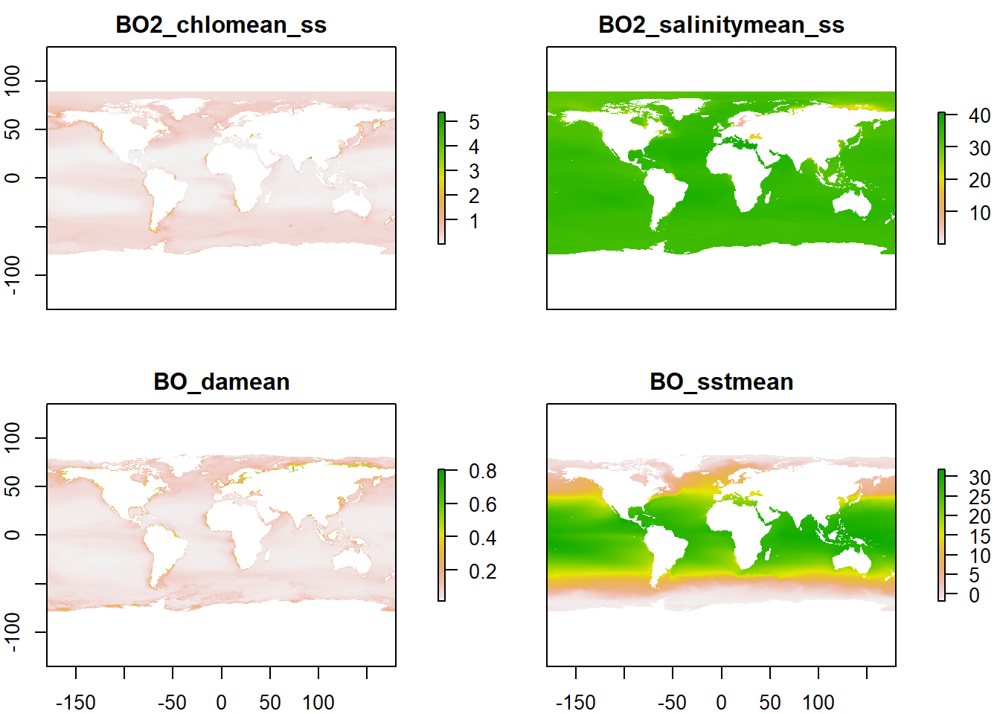
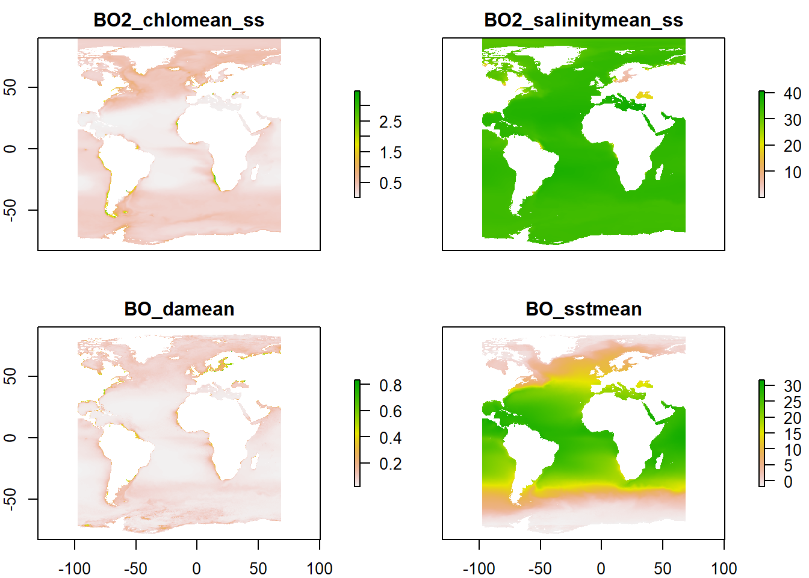

Chapter 3 Environmental data
In this chapter we first, download environmental data from a public repository; second, we crop the data to our area of interest, and we save it as raster stack.
As in Chapter 2, first, we load a list of required libraries.
requiredPackages <- c(
#GENERAL USE LIBRARIES --------#
"here", # Library for reproducible workflow
"rstudioapi", # Library for reproducible workflow
# "maptools", #plotting world map
"ggplot2", #for plotting
"knitr", # format tables
"kableExtra", # format tables
"raster", # to work with spatial data
"dplyr",
#DOWNLOAD FROM PUBLIC REPOSITORIES --------#
"sdmpredictors" #to access Bio-ORACLE dataset
)We run a function to install the required packages that are not in our system and load all the required packages.
install_load_function <- function(pkg){
new.pkg <- pkg[!(pkg %in% installed.packages()[, "Package"])]
if (length(new.pkg))
install.packages(new.pkg, dependencies = TRUE)
sapply(pkg, require, character.only = TRUE)
}
install_load_function(requiredPackages)## here rstudioapi ggplot2 knitr kableExtra
## TRUE TRUE TRUE TRUE TRUE
## raster dplyr sdmpredictors
## TRUE TRUE TRUEWe define some overall settings.
# General settings for ggplot (black-white background, larger base_size)
theme_set(theme_bw(base_size = 16))3.1 Download from public repositories
Environmental data can be available from different sources. In this case, we used the Bio-ORACLE (ocean
rasters for analyses of climate and environment) database (Tyberghein et al. 2012; Assis et al. 2017). These data are publicly available and are easily accessible from the sdmpredictors package.
We can check the list of available datasets with the function list_datasets from sdmpredictors package, as follows:
mydat <- list_datasets()
# to solve problems with encoding in column 5:
mydat[,5] <- iconv(mydat[,5], to="UTF-8")
kable(mydat)%>%
kable_styling("striped") %>%
scroll_box(height="600px", width = "100%")| dataset_code | terrestrial | marine | url | description | citation |
|---|---|---|---|---|---|
| WorldClim | TRUE | FALSE | http://www.worldclim.org/ | WorldClim is a set of global climate layers (climate grids). Note that all data has been transformed back to real values, so there is no need to e.g. divide temperature layers by 10. | Hijmans, R.J., S.E. Cameron, J.L. Parra, P.G. Jones and A. Jarvis, 2005. Very high resolution interpolated climate surfaces for global land areas. International Journal of Climatology 25: 1965-1978. |
| Bio-ORACLE | FALSE | TRUE | https://bio-oracle.org/ | Bio-ORACLE is a set of GIS rasters providing geophysical, biotic and environmental data for surface and benthic marine realms at a spatial resolution 5 arcmin (9.2 km) in the ESRI ascii and tif format. | Tyberghein L., Verbruggen H., Pauly K., Troupin C., Mineur F. & De Clerck O. Bio-ORACLE: a global environmental dataset for marine species distribution modeling. Global Ecology and Biogeography. doi: 10.1111/j.1466-8238.2011.00656.x |
| MARSPEC | FALSE | TRUE | http://marspec.org/ | MARSPEC is a set of high resolution climatic and geophysical GIS data layers for the world ocean. Seven geophysical variables were derived from the SRTM30_PLUS high resolution bathymetry dataset. These layers characterize the horizontal orientation (aspect), slope, and curvature of the seafloor and the distance from shore. Ten “bioclimatic” variables were derived from NOAA’s World Ocean Atlas and NASA’s MODIS satellite imagery and characterize the inter-annual means, extremes, and variances in sea surface temperature and salinity. These variables will be useful to those interested in the spatial ecology of marine shallow-water and surface-associated pelagic organisms across the globe. Note that, in contrary to the original MARSPEC, all layers have unscaled values. | Sbrocco, EJ and Barber, PH (2013) MARSPEC: Ocean climate layers for marine spatial ecology. Ecology 94: 979. doi: 10.1890/12-1358.1 |
| ENVIREM | TRUE | FALSE | https://envirem.github.io/ | The ENVIREM dataset is a set of 16 climatic and 2 topographic variables that can be used in modeling species’ distributions. The strengths of this dataset include their close ties to ecological processes, and their availability at a global scale, at several spatial resolutions, and for several time periods. The underlying temperature and precipitation data that went into their construction comes from the WorldClim dataset (www.worldclim.org), and the solar radiation data comes from the Consortium for Spatial Information (www.cgiar-csi.org). The data are compatible with and expand the set of variables from WorldClim v1.4 (www.worldclim.org). | Title, P.O., Bemmels, J.B. 2017. ENVIREM: An expanded set of bioclimatic and topographic variables increases flexibility and improves performance of ecological niche modeling. Ecography doi: 10.1111/ecog.02880. |
| Freshwater | TRUE | FALSE | https://www.earthenv.org/streams | NA | Domisch, S., Amatulli, G., and Jetz, W. (2015) Near-global freshwater-specific environmental variables for biodiversity analyses in 1 km resolution. Scientific Data 2:150073 doi: 10.1038/sdata.2015.73 |
By default this function returns all the supported datasets. To return only marine datasets we can set the marine argument equal to TRUE or equivalently we could set the terrestrial and freshwater arguments equal to FALSE:
mydat <- list_datasets(marine=T)
# or equivalently:
# mydat <- list_datasets(terrestrial=F, freshwater=F)
# mydat <- list_datasets(marine=T, terrestrial=F, freshwater=F)There are two datasets (Bio-ORACLE and MARSPEC) that have marine data. The function list_layers returns information on the layers of one or more datasets. So, we can see the layers available in the Bio-ORACLE dataset as follows:
mytab <- list_layers("Bio-ORACLE")
kable(mytab)%>%
kable_styling("striped") %>%
scroll_box(height="600px", width = "100%")| dataset_code | layer_code | name | description | terrestrial | marine | freshwater | cellsize_equalarea | cellsize_lonlat | units | primary_type | primary_spatial_resolution | primary_source | start_year | start_month | start_day | end_year | end_month | end_day | derivation | month | is_surface | version | layer_url | |
|---|---|---|---|---|---|---|---|---|---|---|---|---|---|---|---|---|---|---|---|---|---|---|---|---|
| 74 | Bio-ORACLE | BO_cloudmax | Cloud fraction (maximum) | Cloud fraction indicates how much of the earth is covered by clouds. | FALSE | TRUE | FALSE | 7000 | 0.0833333 | % | Satellite (Terra-MODIS), monthly images | ’’ | Reference: (NASA 2010) URL: http://neo.sci.gsfc.nasa.gov/Search.html | 2005 | 1 | 1 | 2010 | 12 | 31 | maximum | NA | TRUE | 10 | https://bio-oracle.org/data/1.0/BO_cloudmax.zip |
| 452 | Bio-ORACLE | BO22_calcite | Calcite (mean) | Calcite concentration indicates the mean concentration of calcite (CaCO3) in oceans. | FALSE | TRUE | FALSE | 7000 | 0.0833333 | mol/m^3 | Satellite (Aqua-MODIS), seasonal climatologies | ’’ | Reference: (Feldman & McClain 2010) URL: http://oceancolor.gsfc.nasa.gov/ | 2002 | 1 | 1 | 2009 | 12 | 31 | mean | NA | TRUE | 22 | https://bio-oracle.org/data/2.2/Present.Surface.Calcite.Mean.BOv2_2.tif.zip |
| 453 | Bio-ORACLE | BO22_cloudmax | Cloud fraction (maximum) | Cloud fraction indicates how much of the earth is covered by clouds. A bilinear interpolation was used to convert the data from 6 arcminutes to 5 arcminutes. | FALSE | TRUE | FALSE | 7000 | 0.0833333 | % | Satellite (Terra-MODIS), monthly images | ’’ | Reference: (NASA 2010) URL: http://neo.sci.gsfc.nasa.gov/Search.html | 2005 | 1 | 1 | 2010 | 12 | 31 | maximum | NA | TRUE | 22 | https://bio-oracle.org/data/2.2/Present.Surface.Cloud.cover.Max.BOv2_2.tif.zip |
| 454 | Bio-ORACLE | BO22_cloudmean | Cloud fraction (mean) | Cloud fraction indicates how much of the earth is covered by clouds. | FALSE | TRUE | FALSE | 7000 | 0.0833333 | % | Satellite (Terra-MODIS), monthly images | ’’ | Reference: (NASA 2010) URL: http://neo.sci.gsfc.nasa.gov/Search.html | 2005 | 1 | 1 | 2010 | 12 | 31 | mean | NA | TRUE | 22 | https://bio-oracle.org/data/2.2/Present.Surface.Cloud.cover.Mean.BOv2_2.tif.zip |
| 455 | Bio-ORACLE | BO22_cloudmin | Cloud fraction (minimum) | Cloud fraction indicates how much of the earth is covered by clouds. | FALSE | TRUE | FALSE | 7000 | 0.0833333 | % | Satellite (Terra-MODIS), monthly images | ’’ | Reference: (NASA 2010) URL: http://neo.sci.gsfc.nasa.gov/Search.html | 2005 | 1 | 1 | 2010 | 12 | 31 | minimum | NA | TRUE | 22 | https://bio-oracle.org/data/2.2/Present.Surface.Cloud.cover.Min.BOv2_2.tif.zip |
| 456 | Bio-ORACLE | BO22_damax | BO_damax | Diffuse attenuation coefficient at 490 nm (maximum). The diffuse attenuation coefficient is an indicator of water clarity. It expresses how deeply visible light in the blue to the green region of the spectrum penetrates in to the water column. | FALSE | TRUE | FALSE | 7000 | 0.0833333 | m^-1 | Satellite (Aqua-MODIS), monthly climatologies | ’’ | Reference: (Feldman & McClain 2010) URL: http://oceancolor.gsfc.nasa.gov/ | 2002 | 1 | 1 | 2009 | 12 | 31 | maximum | NA | TRUE | 22 | https://bio-oracle.org/data/2.2/Present.Surface.Diffuse.attenuation.Max.BOv2_2.tif.zip |
| 457 | Bio-ORACLE | BO22_damean | BO_damean | Diffuse attenuation coefficient at 490 nm (mean). The diffuse attenuation coefficient is an indicator of water clarity. It expresses how deeply visible light in the blue to the green region of the spectrum penetrates in to the water column. | FALSE | TRUE | FALSE | 7000 | 0.0833333 | m^-1 | Satellite (Aqua-MODIS), monthly climatologies | ’’ | Reference: (Feldman & McClain 2010) URL: http://oceancolor.gsfc.nasa.gov/ | 2002 | 1 | 1 | 2009 | 12 | 31 | mean | NA | TRUE | 22 | https://bio-oracle.org/data/2.2/Present.Surface.Diffuse.attenuation.Mean.BOv2_2.tif.zip |
| 458 | Bio-ORACLE | BO22_damin | BO_damin | Diffuse attenuation coefficient at 490 nm (minimum). The diffuse attenuation coefficient is an indicator of water clarity. It expresses how deeply visible light in the blue to the green region of the spectrum penetrates in to the water column. | FALSE | TRUE | FALSE | 7000 | 0.0833333 | m^-1 | Satellite (Aqua-MODIS), monthly climatologies | ’’ | Reference: (Feldman & McClain 2010) URL: http://oceancolor.gsfc.nasa.gov/ | 2002 | 1 | 1 | 2009 | 12 | 31 | minimum | NA | TRUE | 22 | https://bio-oracle.org/data/2.2/Present.Surface.Diffuse.attenuation.Min.BOv2_2.tif.zip |
| 459 | Bio-ORACLE | BO22_parmax | BO_parmax | Photosynthetically available radiation (maximum). Photosynthetically Available Radiation (PAR) indicates the quantum energy flux from the Sun (in the spectral range 400-700 nm) reaching the ocean surface. | FALSE | TRUE | FALSE | 7000 | 0.0833333 | Einstein/m_/day | Satellite (SeaWIFS), monthly climatologies | ’’ | Reference: (Feldman & McClain 2010) URL: http://oceancolor.gsfc.nasa.gov/ | 1997 | 1 | 1 | 2009 | 12 | 31 | maximum | NA | TRUE | 22 | https://bio-oracle.org/data/2.2/Present.Surface.Par.Max.BOv2_2.tif.zip |
| 460 | Bio-ORACLE | BO22_parmean | BO_parmean | Photosynthetically available radiation (mean). Photosynthetically Available Radiation (PAR) indicates the quantum energy flux from the Sun (in the spectral range 400-700 nm) reaching the ocean surface. | FALSE | TRUE | FALSE | 7000 | 0.0833333 | Einstein/m_/day | Satellite (SeaWIFS), monthly climatologies | ’’ | Reference: (Feldman & McClain 2010) URL: http://oceancolor.gsfc.nasa.gov/ | 1997 | 1 | 1 | 2009 | 12 | 31 | mean | NA | TRUE | 22 | https://bio-oracle.org/data/2.2/Present.Surface.Par.Mean.BOv2_2.tif.zip |
| 461 | Bio-ORACLE | BO22_ph | BO_ph | pH. Measure of acidity in the ocean. | FALSE | TRUE | FALSE | 7000 | 0.0833333 | unitless | in situ measurement | ’’ | World Ocean Database (2009) Reference: (Boyer et al. 2009) URL: http://www.nodc.noaa.gov/ | 1910 | 1 | 1 | 2007 | 12 | 31 | DIVA interpolation (117833 data points) | NA | TRUE | 22 | https://bio-oracle.org/data/2.2/Present.Surface.pH.BOv2_2.tif.zip |
| 462 | Bio-ORACLE | BO_calcite | Calcite (mean) | Calcite concentration indicates the mean concentration of calcite (CaCO3) in oceans. | FALSE | TRUE | FALSE | 7000 | 0.0833333 | mol/m^3 | Satellite (Aqua-MODIS), seasonal climatologies | ’’ | Reference: (Feldman & McClain 2010) URL: http://oceancolor.gsfc.nasa.gov/ | 2002 | 1 | 1 | 2009 | 12 | 31 | mean | NA | TRUE | 10 | https://bio-oracle.org/data/1.0/BO_calcite.zip |
| 463 | Bio-ORACLE | BO_chlomax | Chlorophyll A (maximum) | Chlorophyll A concentration indicates the concentration of photosynthetic pigment chlorophyll A (the most common ““green”” chlorophyll) in oceans. Please note that in shallow water these values may reflect any kind of autotrophic biomass. | FALSE | TRUE | FALSE | 7000 | 0.0833333 | mg/m^3 | Satellite (Aqua-MODIS), monthly climatologies | ’’ | Reference: (Feldman & McClain 2010) URL: http://oceancolor.gsfc.nasa.gov/ | 2002 | 1 | 1 | 2009 | 12 | 31 | maximum | NA | TRUE | 10 | https://bio-oracle.org/data/1.0/BO_chlomax.zip |
| 464 | Bio-ORACLE | BO_chlomean | Chlorophyll A (mean) | Chlorophyll A concentration indicates the concentration of photosynthetic pigment chlorophyll A (the most common ““green”” chlorophyll) in oceans. Please note that in shallow water these values may reflect any kind of autotrophic biomass. | FALSE | TRUE | FALSE | 7000 | 0.0833333 | mg/m^3 | Satellite (Aqua-MODIS), monthly climatologies | ’’ | Reference: (Feldman & McClain 2010) URL: http://oceancolor.gsfc.nasa.gov/ | 2002 | 1 | 1 | 2009 | 12 | 31 | mean | NA | TRUE | 10 | https://bio-oracle.org/data/1.0/BO_chlomean.zip |
| 465 | Bio-ORACLE | BO_chlomin | Chlorophyll A (minimum) | Chlorophyll A concentration indicates the concentration of photosynthetic pigment chlorophyll A (the most common ““green”” chlorophyll) in oceans. Please note that in shallow water these values may reflect any kind of autotrophic biomass. | FALSE | TRUE | FALSE | 7000 | 0.0833333 | mg/m^3 | Satellite (Aqua-MODIS), monthly climatologies | ’’ | Reference: (Feldman & McClain 2010) URL: http://oceancolor.gsfc.nasa.gov/ | 2002 | 1 | 1 | 2009 | 12 | 31 | mean | NA | TRUE | 10 | https://bio-oracle.org/data/1.0/BO_chlomin.zip |
| 466 | Bio-ORACLE | BO_chlorange | Chlorophyll A (range) | Chlorophyll A concentration indicates the concentration of photosynthetic pigment chlorophyll A (the most common ““green”” chlorophyll) in oceans. Please note that in shallow water these values may reflect any kind of autotrophic biomass. | FALSE | TRUE | FALSE | 7000 | 0.0833333 | mg/m^3 | Satellite (Aqua-MODIS), monthly climatologies | ’’ | Reference: (Feldman & McClain 2010) URL: http://oceancolor.gsfc.nasa.gov/ | 2002 | 1 | 1 | 2009 | 12 | 31 | range | NA | TRUE | 10 | https://bio-oracle.org/data/1.0/BO_chlorange.zip |
| 467 | Bio-ORACLE | BO_cloudmean | Cloud fraction (mean) | Cloud fraction indicates how much of the earth is covered by clouds. | FALSE | TRUE | FALSE | 7000 | 0.0833333 | % | Satellite (Terra-MODIS), monthly images | ’’ | Reference: (NASA 2010) URL: http://neo.sci.gsfc.nasa.gov/Search.html | 2005 | 1 | 1 | 2010 | 12 | 31 | mean | NA | TRUE | 10 | https://bio-oracle.org/data/1.0/BO_cloudmean.zip |
| 468 | Bio-ORACLE | BO_cloudmin | Cloud fraction (minimum) | Cloud fraction indicates how much of the earth is covered by clouds. | FALSE | TRUE | FALSE | 7000 | 0.0833333 | % | Satellite (Terra-MODIS), monthly images | ’’ | Reference: (NASA 2010) URL: http://neo.sci.gsfc.nasa.gov/Search.html | 2005 | 1 | 1 | 2010 | 12 | 31 | minimum | NA | TRUE | 10 | https://bio-oracle.org/data/1.0/BO_cloudmin.zip |
| 469 | Bio-ORACLE | BO_damax | Diffuse attenuation coefficient at 490 nm (maximum) | The diffuse attenuation coefficient is an indicator of water clarity. It expresses how deeply visible light in the blue to the green region of the spectrum penetrates in to the water column. | FALSE | TRUE | FALSE | 7000 | 0.0833333 | m^-1 | Satellite (Aqua-MODIS), monthly climatologies | ’’ | Reference: (Feldman & McClain 2010) URL: http://oceancolor.gsfc.nasa.gov/ | 2002 | 1 | 1 | 2009 | 12 | 31 | maximum | NA | TRUE | 10 | https://bio-oracle.org/data/1.0/BO_damax.zip |
| 470 | Bio-ORACLE | BO_damean | Diffuse attenuation coefficient at 490 nm (mean) | The diffuse attenuation coefficient is an indicator of water clarity. It expresses how deeply visible light in the blue to the green region of the spectrum penetrates in to the water column. | FALSE | TRUE | FALSE | 7000 | 0.0833333 | m^-1 | Satellite (Aqua-MODIS), monthly climatologies | ’’ | Reference: (Feldman & McClain 2010) URL: http://oceancolor.gsfc.nasa.gov/ | 2002 | 1 | 1 | 2009 | 12 | 31 | mean | NA | TRUE | 10 | https://bio-oracle.org/data/1.0/BO_damean.zip |
| 471 | Bio-ORACLE | BO_damin | Diffuse attenuation coefficient at 490 nm (minimum) | The diffuse attenuation coefficient is an indicator of water clarity. It expresses how deeply visible light in the blue to the green region of the spectrum penetrates in to the water column. | FALSE | TRUE | FALSE | 7000 | 0.0833333 | m^-1 | Satellite (Aqua-MODIS), monthly climatologies | ’’ | Reference: (Feldman & McClain 2010) URL: http://oceancolor.gsfc.nasa.gov/ | 2002 | 1 | 1 | 2009 | 12 | 31 | minimum | NA | TRUE | 10 | https://bio-oracle.org/data/1.0/BO_damin.zip |
| 472 | Bio-ORACLE | BO_dissox | Dissolved oxygen | Dissolved oxygen concentration [02] | FALSE | TRUE | FALSE | 7000 | 0.0833333 | ml/l | in situ measurement | ’’ | World Ocean Database (2009) Reference: (Boyer et al. 2009) URL: http://www.nodc.noaa.gov/ | 1898 | 1 | 1 | 2009 | 12 | 31 | DIVA interpolation (540582 data points) | NA | TRUE | 10 | https://bio-oracle.org/data/1.0/BO_dissox.zip |
| 473 | Bio-ORACLE | BO_nitrate | Nitrate | This layer contains both [NO3] and [NO3+NO2] data. By this we mean chemically reactive dissolved inorganic nitrate and nitrate or nitrite. (It is important to note that data reported as [NO3] in the WOD09 should be used with caution because it is difficult to verify that the [NO3] (nitrate) data are [NO3+NO2] or [NO3]. (Boyer et al. 2009)) | FALSE | TRUE | FALSE | 7000 | 0.0833333 | micromol/L | in situ measurement | ’’ | World Ocean Database (2009) Reference: (Boyer et al. 2009) URL: http://www.nodc.noaa.gov/ | 1928 | 1 | 1 | 2008 | 12 | 31 | DIVA interpolation (189530 data points) | NA | TRUE | 10 | https://bio-oracle.org/data/1.0/BO_nitrate.zip |
| 474 | Bio-ORACLE | BO_parmax | Photosynthetically available radiation (maximum) | Photosynthetically Available Radiation (PAR) indicates the quantum energy flux from the Sun (in the spectral range 400-700 nm) reaching the ocean surface. | FALSE | TRUE | FALSE | 7000 | 0.0833333 | Einstein/m_/day | Satellite (SeaWIFS), monthly climatologies | ’’ | Reference: (Feldman & McClain 2010) URL: http://oceancolor.gsfc.nasa.gov/ | 1997 | 1 | 1 | 2009 | 12 | 31 | maximum | NA | TRUE | 10 | https://bio-oracle.org/data/1.0/BO_parmax.zip |
| 475 | Bio-ORACLE | BO_parmean | Photosynthetically available radiation (mean) | Photosynthetically Available Radiation (PAR) indicates the quantum energy flux from the Sun (in the spectral range 400-700 nm) reaching the ocean surface. | FALSE | TRUE | FALSE | 7000 | 0.0833333 | Einstein/m_/day | Satellite (SeaWIFS), monthly climatologies | ’’ | Reference: (Feldman & McClain 2010) URL: http://oceancolor.gsfc.nasa.gov/ | 1997 | 1 | 1 | 2009 | 12 | 31 | mean | NA | TRUE | 10 | https://bio-oracle.org/data/1.0/BO_parmean.zip |
| 476 | Bio-ORACLE | BO_ph | pH | Measure of acidity in the ocean. | FALSE | TRUE | FALSE | 7000 | 0.0833333 | unitless | in situ measurement | ’’ | World Ocean Database (2009) Reference: (Boyer et al. 2009) URL: http://www.nodc.noaa.gov/ | 1910 | 1 | 1 | 2007 | 12 | 31 | DIVA interpolation (117833 data points) | NA | TRUE | 10 | https://bio-oracle.org/data/1.0/BO_ph.zip |
| 477 | Bio-ORACLE | BO_phosphate | Phosphate | Reactive ortho-phosphate concentration [HPO4^-2] in the ocean. | FALSE | TRUE | FALSE | 7000 | 0.0833333 | micromol/L | in situ measurement | ’’ | World Ocean Database (2009) Reference: (Boyer et al. 2009) URL: http://www.nodc.noaa.gov/ | 1922 | 1 | 1 | 1986 | 12 | 31 | DIVA interpolation (226816 data points) | NA | TRUE | 10 | https://bio-oracle.org/data/1.0/BO_phosphate.zip |
| 478 | Bio-ORACLE | BO_salinity | Salinity | Salinity indicates the dissolved salt content in the ocean. | FALSE | TRUE | FALSE | 7000 | 0.0833333 | PSS | in situ measurement | ’’ | World Ocean Database (2009) Reference: (Boyer et al. 2009) URL: http://www.nodc.noaa.gov/ | 1961 | 1 | 1 | 2009 | 12 | 31 | DIVA interpolation (532377 data points) | NA | TRUE | 10 | https://bio-oracle.org/data/1.0/BO_salinity.zip |
| 479 | Bio-ORACLE | BO_silicate | Silicate | This variable indicates the concentration of silicate or ortho-silicic acid [Si(OH)4] in the ocean | FALSE | TRUE | FALSE | 7000 | 0.0833333 | micromol/L | in situ measurement | ’’ | World Ocean Database (2009) Reference: (Boyer et al. 2009) URL: http://www.nodc.noaa.gov/ | 1930 | 1 | 1 | 2008 | 12 | 31 | DIVA interpolation (234417 data points) | NA | TRUE | 10 | https://bio-oracle.org/data/1.0/BO_silicate.zip |
| 480 | Bio-ORACLE | BO_sstmax | Sea surface temperature (maximum) | Sea surface temperature is the temperature of the water at the ocean surface. This parameter indicates the temperature of the topmost meter of the ocean water column. | FALSE | TRUE | FALSE | 7000 | 0.0833333 | Celsius | Satellite (Aqua-MODIS), monthly climatologies | 5 arcmin (9.2 km) | Reference: (Feldman & McClain 2010) URL: http://oceancolor.gsfc.nasa.gov/ | 2002 | 1 | 1 | 2009 | 12 | 31 | maximum | NA | TRUE | 10 | https://bio-oracle.org/data/1.0/BO_sstmax.zip |
| 481 | Bio-ORACLE | BO_sstmean | Sea surface temperature (mean) | Sea surface temperature is the temperature of the water at the ocean surface. This parameter indicates the temperature of the topmost meter of the ocean water column. | FALSE | TRUE | FALSE | 7000 | 0.0833333 | Celsius | Satellite (Aqua-MODIS), monthly climatologies | 5 arcmin (9.2 km) | Reference: (Feldman & McClain 2010) URL: http://oceancolor.gsfc.nasa.gov/ | 2002 | 1 | 1 | 2009 | 12 | 31 | mean | NA | TRUE | 10 | https://bio-oracle.org/data/1.0/BO_sstmean.zip |
| 482 | Bio-ORACLE | BO_sstmin | Sea surface temperature (minimum) | Sea surface temperature is the temperature of the water at the ocean surface. This parameter indicates the temperature of the topmost meter of the ocean water column. | FALSE | TRUE | FALSE | 7000 | 0.0833333 | Celsius | Satellite (Aqua-MODIS), monthly climatologies | 5 arcmin (9.2 km) | Reference: (Feldman & McClain 2010) URL: http://oceancolor.gsfc.nasa.gov/ | 2002 | 1 | 1 | 2009 | 12 | 31 | minimum | NA | TRUE | 10 | https://bio-oracle.org/data/1.0/BO_sstmin.zip |
| 483 | Bio-ORACLE | BO_sstrange | Sea surface temperature (range) | Sea surface temperature is the temperature of the water at the ocean surface. This parameter indicates the temperature of the topmost meter of the ocean water column. | FALSE | TRUE | FALSE | 7000 | 0.0833333 | Celsius | Satellite (Aqua-MODIS), monthly climatologies | 5 arcmin (9.2 km) | Reference: (Feldman & McClain 2010) URL: http://oceancolor.gsfc.nasa.gov/ | 2002 | 1 | 1 | 2009 | 12 | 31 | range | NA | TRUE | 10 | https://bio-oracle.org/data/1.0/BO_sstrange.zip |
| 484 | Bio-ORACLE | BO_bathymin | Bathymetry (minimum) | Minimum depth of the seafloor | FALSE | TRUE | FALSE | 7000 | 0.0833333 | meters | GEBCO / EMODnet Bathymetry | 30 arcsecond | GEBCO URL: http://gebco.net EMODnet Bathymetry URL: http://www.emodnet-bathymetry.eu/ | 2016 | 3 | 18 | 2016 | 3 | 18 | minimum | NA | TRUE | 10 | https://bio-oracle.org/data/1.0/BO_bathymin.zip |
| 485 | Bio-ORACLE | BO_bathymax | Bathymetry (maximum) | Maximum depth of the seafloor | FALSE | TRUE | FALSE | 7000 | 0.0833333 | meters | GEBCO / EMODnet Bathymetry | 30 arcsecond | GEBCO URL: http://gebco.net EMODnet Bathymetry URL: http://www.emodnet-bathymetry.eu/ | 2016 | 3 | 18 | 2016 | 3 | 18 | maximum | NA | TRUE | 10 | https://bio-oracle.org/data/1.0/BO_bathymax.zip |
| 486 | Bio-ORACLE | BO_bathymean | Bathymetry (mean) | Average depth of the seafloor | FALSE | TRUE | FALSE | 7000 | 0.0833333 | meters | GEBCO / EMODnet Bathymetry | 30 arcsecond | GEBCO URL: http://gebco.net EMODnet Bathymetry URL: http://www.emodnet-bathymetry.eu/ | 2016 | 3 | 18 | 2016 | 3 | 18 | mean | NA | TRUE | 10 | https://bio-oracle.org/data/1.0/BO_bathymean.zip |
| 487 | Bio-ORACLE | BO2_chlomax_bdmax | Chlorophyll concentration (maximum at max depth) | Maximum mass concentration of chlorophyll in sea water at maximum bottom depth | FALSE | TRUE | FALSE | 7000 | 0.0833333 | mg/m^3 | Model | 0.25 arcdegree | Global Ocean Biogeochemistry NON ASSIMILATIVE Hindcast (PISCES) URL: http://marine.copernicus.eu/ | 2000 | NA | NA | 2014 | NA | NA | maximum value at maximum bottom depth | NA | FALSE | 20 | https://bio-oracle.org/data/2.0/Present.Benthic.Max.Depth.Chlorophyll.Max.tif.zip |
| 488 | Bio-ORACLE | BO2_chlomax_bdmean | Chlorophyll concentration (maximum at mean depth) | Maximum mass concentration of chlorophyll in sea water at mean bottom depth | FALSE | TRUE | FALSE | 7000 | 0.0833333 | mg/m^3 | Model | 0.25 arcdegree | Global Ocean Biogeochemistry NON ASSIMILATIVE Hindcast (PISCES) URL: http://marine.copernicus.eu/ | 2000 | NA | NA | 2014 | NA | NA | maximum value at mean bottom depth | NA | FALSE | 20 | https://bio-oracle.org/data/2.0/Present.Benthic.Mean.Depth.Chlorophyll.Max.tif.zip |
| 489 | Bio-ORACLE | BO2_chlomax_bdmin | Chlorophyll concentration (maximum at min depth) | Maximum mass concentration of chlorophyll in sea water at minimum bottom depth | FALSE | TRUE | FALSE | 7000 | 0.0833333 | mg/m^3 | Model | 0.25 arcdegree | Global Ocean Biogeochemistry NON ASSIMILATIVE Hindcast (PISCES) URL: http://marine.copernicus.eu/ | 2000 | NA | NA | 2014 | NA | NA | maximum value at minimum bottom depth | NA | FALSE | 20 | https://bio-oracle.org/data/2.0/Present.Benthic.Min.Depth.Chlorophyll.Max.tif.zip |
| 490 | Bio-ORACLE | BO2_chlomean_bdmax | Chlorophyll concentration (mean at max depth) | Mean mass concentration of chlorophyll in sea water at maximum bottom depth | FALSE | TRUE | FALSE | 7000 | 0.0833333 | mg/m^3 | Model | 0.25 arcdegree | Global Ocean Biogeochemistry NON ASSIMILATIVE Hindcast (PISCES) URL: http://marine.copernicus.eu/ | 2000 | NA | NA | 2014 | NA | NA | mean value at maximum bottom depth | NA | FALSE | 20 | https://bio-oracle.org/data/2.0/Present.Benthic.Max.Depth.Chlorophyll.Mean.tif.zip |
| 491 | Bio-ORACLE | BO2_chlomean_bdmean | Chlorophyll concentration (mean at mean depth) | Mean mass concentration of chlorophyll in sea water at mean bottom depth | FALSE | TRUE | FALSE | 7000 | 0.0833333 | mg/m^3 | Model | 0.25 arcdegree | Global Ocean Biogeochemistry NON ASSIMILATIVE Hindcast (PISCES) URL: http://marine.copernicus.eu/ | 2000 | NA | NA | 2014 | NA | NA | mean value at mean bottom depth | NA | FALSE | 20 | https://bio-oracle.org/data/2.0/Present.Benthic.Mean.Depth.Chlorophyll.Mean.tif.zip |
| 492 | Bio-ORACLE | BO2_chlomean_bdmin | Chlorophyll concentration (mean at min depth) | Mean mass concentration of chlorophyll in sea water at minimum bottom depth | FALSE | TRUE | FALSE | 7000 | 0.0833333 | mg/m^3 | Model | 0.25 arcdegree | Global Ocean Biogeochemistry NON ASSIMILATIVE Hindcast (PISCES) URL: http://marine.copernicus.eu/ | 2000 | NA | NA | 2014 | NA | NA | mean value at minimum bottom depth | NA | FALSE | 20 | https://bio-oracle.org/data/2.0/Present.Benthic.Min.Depth.Chlorophyll.Mean.tif.zip |
| 493 | Bio-ORACLE | BO2_chlomin_bdmax | Chlorophyll concentration (minimum at max depth) | Minimum mass concentration of chlorophyll in sea water at maximum bottom depth | FALSE | TRUE | FALSE | 7000 | 0.0833333 | mg/m^3 | Model | 0.25 arcdegree | Global Ocean Biogeochemistry NON ASSIMILATIVE Hindcast (PISCES) URL: http://marine.copernicus.eu/ | 2000 | NA | NA | 2014 | NA | NA | minimum value at maximum bottom depth | NA | FALSE | 20 | https://bio-oracle.org/data/2.0/Present.Benthic.Max.Depth.Chlorophyll.Min.tif.zip |
| 494 | Bio-ORACLE | BO2_chlomin_bdmean | Chlorophyll concentration (minimum at mean depth) | Minimum mass concentration of chlorophyll in sea water at mean bottom depth | FALSE | TRUE | FALSE | 7000 | 0.0833333 | mg/m^3 | Model | 0.25 arcdegree | Global Ocean Biogeochemistry NON ASSIMILATIVE Hindcast (PISCES) URL: http://marine.copernicus.eu/ | 2000 | NA | NA | 2014 | NA | NA | minimum value at mean bottom depth | NA | FALSE | 20 | https://bio-oracle.org/data/2.0/Present.Benthic.Mean.Depth.Chlorophyll.Min.tif.zip |
| 495 | Bio-ORACLE | BO2_chlomin_bdmin | Chlorophyll concentration (minimum at min depth) | Minimum mass concentration of chlorophyll in sea water at minimum bottom depth | FALSE | TRUE | FALSE | 7000 | 0.0833333 | mg/m^3 | Model | 0.25 arcdegree | Global Ocean Biogeochemistry NON ASSIMILATIVE Hindcast (PISCES) URL: http://marine.copernicus.eu/ | 2000 | NA | NA | 2014 | NA | NA | minimum value at minimum bottom depth | NA | FALSE | 20 | https://bio-oracle.org/data/2.0/Present.Benthic.Min.Depth.Chlorophyll.Min.tif.zip |
| 496 | Bio-ORACLE | BO2_chlorange_bdmax | Chlorophyll concentration (range at max depth) | Range of the mass concentration of chlorophyll in sea water at maximum bottom depth | FALSE | TRUE | FALSE | 7000 | 0.0833333 | mg/m^3 | Model | 0.25 arcdegree | Global Ocean Biogeochemistry NON ASSIMILATIVE Hindcast (PISCES) URL: http://marine.copernicus.eu/ | 2000 | NA | NA | 2014 | NA | NA | range at maximum bottom depth | NA | FALSE | 20 | https://bio-oracle.org/data/2.0/Present.Benthic.Max.Depth.Chlorophyll.Range.tif.zip |
| 497 | Bio-ORACLE | BO2_chlorange_bdmean | Chlorophyll concentration (range at mean depth) | Range of the mass concentration of chlorophyll in sea water at mean bottom depth | FALSE | TRUE | FALSE | 7000 | 0.0833333 | mg/m^3 | Model | 0.25 arcdegree | Global Ocean Biogeochemistry NON ASSIMILATIVE Hindcast (PISCES) URL: http://marine.copernicus.eu/ | 2000 | NA | NA | 2014 | NA | NA | range at mean bottom depth | NA | FALSE | 20 | https://bio-oracle.org/data/2.0/Present.Benthic.Mean.Depth.Chlorophyll.Range.tif.zip |
| 498 | Bio-ORACLE | BO2_chlorange_bdmin | Chlorophyll concentration (range at min depth) | Range of the mass concentration of chlorophyll in sea water at minimum bottom depth | FALSE | TRUE | FALSE | 7000 | 0.0833333 | mg/m^3 | Model | 0.25 arcdegree | Global Ocean Biogeochemistry NON ASSIMILATIVE Hindcast (PISCES) URL: http://marine.copernicus.eu/ | 2000 | NA | NA | 2014 | NA | NA | range at minimum bottom depth | NA | FALSE | 20 | https://bio-oracle.org/data/2.0/Present.Benthic.Min.Depth.Chlorophyll.Range.tif.zip |
| 499 | Bio-ORACLE | BO2_chloltmax_bdmax | Chlorophyll concentration (longterm max at max depth) | Longterm maximum mass concentration of chlorophyll in sea water at maximum bottom depth | FALSE | TRUE | FALSE | 7000 | 0.0833333 | mg/m^3 | Model | 0.25 arcdegree | Global Ocean Biogeochemistry NON ASSIMILATIVE Hindcast (PISCES) URL: http://marine.copernicus.eu/ | 2000 | NA | NA | 2014 | NA | NA | long term maximum value at maximum bottom depth | NA | FALSE | 20 | https://bio-oracle.org/data/2.0/Present.Benthic.Max.Depth.Chlorophyll.Lt.max.tif.zip |
| 500 | Bio-ORACLE | BO2_chloltmax_bdmean | Chlorophyll concentration (longterm max at mean depth) | Longterm maximum mass concentration of chlorophyll in sea water at mean bottom depth | FALSE | TRUE | FALSE | 7000 | 0.0833333 | mg/m^3 | Model | 0.25 arcdegree | Global Ocean Biogeochemistry NON ASSIMILATIVE Hindcast (PISCES) URL: http://marine.copernicus.eu/ | 2000 | NA | NA | 2014 | NA | NA | long term maximum value at mean bottom depth | NA | FALSE | 20 | https://bio-oracle.org/data/2.0/Present.Benthic.Mean.Depth.Chlorophyll.Lt.max.tif.zip |
| 501 | Bio-ORACLE | BO2_chloltmax_bdmin | Chlorophyll concentration (longterm max at min depth) | Longterm maximum mass concentration of chlorophyll in sea water at minimum bottom depth | FALSE | TRUE | FALSE | 7000 | 0.0833333 | mg/m^3 | Model | 0.25 arcdegree | Global Ocean Biogeochemistry NON ASSIMILATIVE Hindcast (PISCES) URL: http://marine.copernicus.eu/ | 2000 | NA | NA | 2014 | NA | NA | long term maximum value at minimum bottom depth | NA | FALSE | 20 | https://bio-oracle.org/data/2.0/Present.Benthic.Min.Depth.Chlorophyll.Lt.max.tif.zip |
| 502 | Bio-ORACLE | BO2_chloltmin_bdmax | Chlorophyll concentration (longterm min at max depth) | Longterm minimum mass concentration of chlorophyll in sea water at maximum bottom depth | FALSE | TRUE | FALSE | 7000 | 0.0833333 | mg/m^3 | Model | 0.25 arcdegree | Global Ocean Biogeochemistry NON ASSIMILATIVE Hindcast (PISCES) URL: http://marine.copernicus.eu/ | 2000 | NA | NA | 2014 | NA | NA | long term minimum value at maximum bottom depth | NA | FALSE | 20 | https://bio-oracle.org/data/2.0/Present.Benthic.Max.Depth.Chlorophyll.Lt.min.tif.zip |
| 503 | Bio-ORACLE | BO2_chloltmin_bdmean | Chlorophyll concentration (longterm max at mean depth) | Longterm minimum mass concentration of chlorophyll in sea water at mean bottom depth | FALSE | TRUE | FALSE | 7000 | 0.0833333 | mg/m^3 | Model | 0.25 arcdegree | Global Ocean Biogeochemistry NON ASSIMILATIVE Hindcast (PISCES) URL: http://marine.copernicus.eu/ | 2000 | NA | NA | 2014 | NA | NA | long term minimum value at mean bottom depth | NA | FALSE | 20 | https://bio-oracle.org/data/2.0/Present.Benthic.Mean.Depth.Chlorophyll.Lt.min.tif.zip |
| 504 | Bio-ORACLE | BO2_chloltmin_bdmin | Chlorophyll concentration (longterm min at min depth) | Longterm minimum mass concentration of chlorophyll in sea water at minimum bottom depth | FALSE | TRUE | FALSE | 7000 | 0.0833333 | mg/m^3 | Model | 0.25 arcdegree | Global Ocean Biogeochemistry NON ASSIMILATIVE Hindcast (PISCES) URL: http://marine.copernicus.eu/ | 2000 | NA | NA | 2014 | NA | NA | long term minimum value at minimum bottom depth | NA | FALSE | 20 | https://bio-oracle.org/data/2.0/Present.Benthic.Min.Depth.Chlorophyll.Lt.min.tif.zip |
| 505 | Bio-ORACLE | BO2_curvelmax_bdmax | Current velocity (maximum at max depth) | Maximum sea water velocity at maximum bottom depth | FALSE | TRUE | FALSE | 7000 | 0.0833333 | m/s | Model | 0.25 arcdegree | Global Ocean Physics Reanalysis ECMWF ORAP5.0 (1979-2013) URL: http://marine.copernicus.eu/ | 2000 | NA | NA | 2014 | NA | NA | maximum value at maximum bottom depth | NA | FALSE | 20 | https://bio-oracle.org/data/2.0/Present.Benthic.Max.Depth.Current.Velocity.Max.tif.zip |
| 506 | Bio-ORACLE | BO2_curvelmax_bdmean | Current velocity (maximum at mean depth) | Maximum sea water velocity at mean bottom depth | FALSE | TRUE | FALSE | 7000 | 0.0833333 | m/s | Model | 0.25 arcdegree | Global Ocean Physics Reanalysis ECMWF ORAP5.0 (1979-2013) URL: http://marine.copernicus.eu/ | 2000 | NA | NA | 2014 | NA | NA | maximum value at mean bottom depth | NA | FALSE | 20 | https://bio-oracle.org/data/2.0/Present.Benthic.Mean.Depth.Current.Velocity.Max.tif.zip |
| 507 | Bio-ORACLE | BO2_curvelmax_bdmin | Current velocity (maximum at min depth) | Maximum sea water velocity at mean bottom depth | FALSE | TRUE | FALSE | 7000 | 0.0833333 | m/s | Model | 0.25 arcdegree | Global Ocean Physics Reanalysis ECMWF ORAP5.0 (1979-2013) URL: http://marine.copernicus.eu/ | 2000 | NA | NA | 2014 | NA | NA | maximum value at minimum bottom depth | NA | FALSE | 20 | https://bio-oracle.org/data/2.0/Present.Benthic.Min.Depth.Current.Velocity.Max.tif.zip |
| 508 | Bio-ORACLE | BO2_curvelmean_bdmax | Current velocity (mean at max depth) | Mean sea water velocity at maximum bottom depth | FALSE | TRUE | FALSE | 7000 | 0.0833333 | m/s | Model | 0.25 arcdegree | Global Ocean Physics Reanalysis ECMWF ORAP5.0 (1979-2013) URL: http://marine.copernicus.eu/ | 2000 | NA | NA | 2014 | NA | NA | mean value at maximum bottom depth | NA | FALSE | 20 | https://bio-oracle.org/data/2.0/Present.Benthic.Max.Depth.Current.Velocity.Mean.tif.zip |
| 509 | Bio-ORACLE | BO2_curvelmean_bdmean | Current velocity (mean at mean depth) | Mean sea water velocity at mean bottom depth | FALSE | TRUE | FALSE | 7000 | 0.0833333 | m/s | Model | 0.25 arcdegree | Global Ocean Physics Reanalysis ECMWF ORAP5.0 (1979-2013) URL: http://marine.copernicus.eu/ | 2000 | NA | NA | 2014 | NA | NA | mean value at mean bottom depth | NA | FALSE | 20 | https://bio-oracle.org/data/2.0/Present.Benthic.Mean.Depth.Current.Velocity.Mean.tif.zip |
| 510 | Bio-ORACLE | BO2_curvelmean_bdmin | Current velocity (mean at min depth) | Mean sea water velocity at minimum bottom depth | FALSE | TRUE | FALSE | 7000 | 0.0833333 | m/s | Model | 0.25 arcdegree | Global Ocean Physics Reanalysis ECMWF ORAP5.0 (1979-2013) URL: http://marine.copernicus.eu/ | 2000 | NA | NA | 2014 | NA | NA | mean value at minimum bottom depth | NA | FALSE | 20 | https://bio-oracle.org/data/2.0/Present.Benthic.Min.Depth.Current.Velocity.Mean.tif.zip |
| 511 | Bio-ORACLE | BO2_curvelmin_bdmax | Current velocity (minimum at max depth) | Minimum sea water velocity at maximum bottom depth | FALSE | TRUE | FALSE | 7000 | 0.0833333 | m/s | Model | 0.25 arcdegree | Global Ocean Physics Reanalysis ECMWF ORAP5.0 (1979-2013) URL: http://marine.copernicus.eu/ | 2000 | NA | NA | 2014 | NA | NA | minimum value at maximum bottom depth | NA | FALSE | 20 | https://bio-oracle.org/data/2.0/Present.Benthic.Max.Depth.Current.Velocity.Min.tif.zip |
| 512 | Bio-ORACLE | BO2_curvelmin_bdmean | Current velocity (minimum at mean depth) | Minimum sea water velocity at mean bottom depth | FALSE | TRUE | FALSE | 7000 | 0.0833333 | m/s | Model | 0.25 arcdegree | Global Ocean Physics Reanalysis ECMWF ORAP5.0 (1979-2013) URL: http://marine.copernicus.eu/ | 2000 | NA | NA | 2014 | NA | NA | minimum value at mean bottom depth | NA | FALSE | 20 | https://bio-oracle.org/data/2.0/Present.Benthic.Mean.Depth.Current.Velocity.Min.tif.zip |
| 513 | Bio-ORACLE | BO2_curvelmin_bdmin | Current velocity (minimum at min depth) | Minimum sea water velocity at minimum bottom depth | FALSE | TRUE | FALSE | 7000 | 0.0833333 | m/s | Model | 0.25 arcdegree | Global Ocean Physics Reanalysis ECMWF ORAP5.0 (1979-2013) URL: http://marine.copernicus.eu/ | 2000 | NA | NA | 2014 | NA | NA | minimum value at minimum bottom depth | NA | FALSE | 20 | https://bio-oracle.org/data/2.0/Present.Benthic.Min.Depth.Current.Velocity.Min.tif.zip |
| 514 | Bio-ORACLE | BO2_curvelrange_bdmax | Current velocity (range at max depth) | Range of the sea water velocity at maximum bottom depth | FALSE | TRUE | FALSE | 7000 | 0.0833333 | m/s | Model | 0.25 arcdegree | Global Ocean Physics Reanalysis ECMWF ORAP5.0 (1979-2013) URL: http://marine.copernicus.eu/ | 2000 | NA | NA | 2014 | NA | NA | range at maximum bottom depth | NA | FALSE | 20 | https://bio-oracle.org/data/2.0/Present.Benthic.Max.Depth.Current.Velocity.Range.tif.zip |
| 515 | Bio-ORACLE | BO2_curvelrange_bdmean | Current velocity (range at mean depth) | Range of the sea water velocity at mean bottom depth | FALSE | TRUE | FALSE | 7000 | 0.0833333 | m/s | Model | 0.25 arcdegree | Global Ocean Physics Reanalysis ECMWF ORAP5.0 (1979-2013) URL: http://marine.copernicus.eu/ | 2000 | NA | NA | 2014 | NA | NA | range at mean bottom depth | NA | FALSE | 20 | https://bio-oracle.org/data/2.0/Present.Benthic.Mean.Depth.Current.Velocity.Range.tif.zip |
| 516 | Bio-ORACLE | BO2_curvelrange_bdmin | Current velocity (range at min depth) | Range of the sea water velocity at minimum bottom depth | FALSE | TRUE | FALSE | 7000 | 0.0833333 | m/s | Model | 0.25 arcdegree | Global Ocean Physics Reanalysis ECMWF ORAP5.0 (1979-2013) URL: http://marine.copernicus.eu/ | 2000 | NA | NA | 2014 | NA | NA | range at minimum bottom depth | NA | FALSE | 20 | https://bio-oracle.org/data/2.0/Present.Benthic.Min.Depth.Current.Velocity.Range.tif.zip |
| 517 | Bio-ORACLE | BO2_curvelltmax_bdmax | Current velocity (longterm max at max depth) | Longterm maximum sea water velocity at maximum bottom depth | FALSE | TRUE | FALSE | 7000 | 0.0833333 | m/s | Model | 0.25 arcdegree | Global Ocean Physics Reanalysis ECMWF ORAP5.0 (1979-2013) URL: http://marine.copernicus.eu/ | 2000 | NA | NA | 2014 | NA | NA | long term maximum value at maximum bottom depth | NA | FALSE | 20 | https://bio-oracle.org/data/2.0/Present.Benthic.Max.Depth.Current.Velocity.Lt.max.tif.zip |
| 518 | Bio-ORACLE | BO2_curvelltmax_bdmean | Current velocity (longterm max at mean depth) | Longterm maximum sea water velocity at mean bottom depth | FALSE | TRUE | FALSE | 7000 | 0.0833333 | m/s | Model | 0.25 arcdegree | Global Ocean Physics Reanalysis ECMWF ORAP5.0 (1979-2013) URL: http://marine.copernicus.eu/ | 2000 | NA | NA | 2014 | NA | NA | long term maximum value at mean bottom depth | NA | FALSE | 20 | https://bio-oracle.org/data/2.0/Present.Benthic.Mean.Depth.Current.Velocity.Lt.max.tif.zip |
| 519 | Bio-ORACLE | BO2_curvelltmax_bdmin | Current velocity (longterm max at min depth) | Longterm maximum sea water velocity at minimum bottom depth | FALSE | TRUE | FALSE | 7000 | 0.0833333 | m/s | Model | 0.25 arcdegree | Global Ocean Physics Reanalysis ECMWF ORAP5.0 (1979-2013) URL: http://marine.copernicus.eu/ | 2000 | NA | NA | 2014 | NA | NA | long term maximum value at minimum bottom depth | NA | FALSE | 20 | https://bio-oracle.org/data/2.0/Present.Benthic.Min.Depth.Current.Velocity.Lt.max.tif.zip |
| 520 | Bio-ORACLE | BO2_curvelltmin_bdmax | Current velocity (longterm min at max depth) | Longterm minimum sea water velocity at maximum bottom depth | FALSE | TRUE | FALSE | 7000 | 0.0833333 | m/s | Model | 0.25 arcdegree | Global Ocean Physics Reanalysis ECMWF ORAP5.0 (1979-2013) URL: http://marine.copernicus.eu/ | 2000 | NA | NA | 2014 | NA | NA | long term minimum value at maximum bottom depth | NA | FALSE | 20 | https://bio-oracle.org/data/2.0/Present.Benthic.Max.Depth.Current.Velocity.Lt.min.tif.zip |
| 521 | Bio-ORACLE | BO2_curvelltmin_bdmean | Current velocity (longterm max at mean depth) | Longterm minimum sea water velocity at mean bottom depth | FALSE | TRUE | FALSE | 7000 | 0.0833333 | m/s | Model | 0.25 arcdegree | Global Ocean Physics Reanalysis ECMWF ORAP5.0 (1979-2013) URL: http://marine.copernicus.eu/ | 2000 | NA | NA | 2014 | NA | NA | long term minimum value at mean bottom depth | NA | FALSE | 20 | https://bio-oracle.org/data/2.0/Present.Benthic.Mean.Depth.Current.Velocity.Lt.min.tif.zip |
| 522 | Bio-ORACLE | BO2_curvelltmin_bdmin | Current velocity (longterm min at min depth) | Longterm minimum sea water velocity at minimum bottom depth | FALSE | TRUE | FALSE | 7000 | 0.0833333 | m/s | Model | 0.25 arcdegree | Global Ocean Physics Reanalysis ECMWF ORAP5.0 (1979-2013) URL: http://marine.copernicus.eu/ | 2000 | NA | NA | 2014 | NA | NA | long term minimum value at minimum bottom depth | NA | FALSE | 20 | https://bio-oracle.org/data/2.0/Present.Benthic.Min.Depth.Current.Velocity.Lt.min.tif.zip |
| 523 | Bio-ORACLE | BO2_dissoxmax_bdmax | Dissolved oxygen concentration (maximum at max depth) | Maximum mole concentration of dissolved molecular oxygen in sea water at maximum bottom depth | FALSE | TRUE | FALSE | 7000 | 0.0833333 | micromol/m^3 | Model | 0.25 arcdegree | Global Ocean Biogeochemistry NON ASSIMILATIVE Hindcast (PISCES) URL: http://marine.copernicus.eu/ | 2000 | NA | NA | 2014 | NA | NA | maximum value at maximum bottom depth | NA | FALSE | 20 | https://bio-oracle.org/data/2.0/Present.Benthic.Max.Depth.Dissolved.oxygen.Max.tif.zip |
| 524 | Bio-ORACLE | BO2_dissoxmax_bdmean | Dissolved oxygen concentration (maximum at mean depth) | Maximum mole concentration of dissolved molecular oxygen in sea water at mean bottom depth | FALSE | TRUE | FALSE | 7000 | 0.0833333 | micromol/m^3 | Model | 0.25 arcdegree | Global Ocean Biogeochemistry NON ASSIMILATIVE Hindcast (PISCES) URL: http://marine.copernicus.eu/ | 2000 | NA | NA | 2014 | NA | NA | maximum value at mean bottom depth | NA | FALSE | 20 | https://bio-oracle.org/data/2.0/Present.Benthic.Mean.Depth.Dissolved.oxygen.Max.tif.zip |
| 525 | Bio-ORACLE | BO2_dissoxmax_bdmin | Dissolved oxygen concentration (maximum at min depth) | Maximum mole concentration of dissolved molecular oxygen in sea water at mean bottom depth | FALSE | TRUE | FALSE | 7000 | 0.0833333 | micromol/m^3 | Model | 0.25 arcdegree | Global Ocean Biogeochemistry NON ASSIMILATIVE Hindcast (PISCES) URL: http://marine.copernicus.eu/ | 2000 | NA | NA | 2014 | NA | NA | maximum value at minimum bottom depth | NA | FALSE | 20 | https://bio-oracle.org/data/2.0/Present.Benthic.Min.Depth.Dissolved.oxygen.Max.tif.zip |
| 526 | Bio-ORACLE | BO2_dissoxmean_bdmax | Dissolved oxygen concentration (mean at max depth) | Mean mole concentration of dissolved molecular oxygen in sea water at maximum bottom depth | FALSE | TRUE | FALSE | 7000 | 0.0833333 | micromol/m^3 | Model | 0.25 arcdegree | Global Ocean Biogeochemistry NON ASSIMILATIVE Hindcast (PISCES) URL: http://marine.copernicus.eu/ | 2000 | NA | NA | 2014 | NA | NA | mean value at maximum bottom depth | NA | FALSE | 20 | https://bio-oracle.org/data/2.0/Present.Benthic.Max.Depth.Dissolved.oxygen.Mean.tif.zip |
| 527 | Bio-ORACLE | BO2_dissoxmean_bdmean | Dissolved oxygen concentration (mean at mean depth) | Mean mole concentration of dissolved molecular oxygen in sea water at mean bottom depth | FALSE | TRUE | FALSE | 7000 | 0.0833333 | micromol/m^3 | Model | 0.25 arcdegree | Global Ocean Biogeochemistry NON ASSIMILATIVE Hindcast (PISCES) URL: http://marine.copernicus.eu/ | 2000 | NA | NA | 2014 | NA | NA | mean value at mean bottom depth | NA | FALSE | 20 | https://bio-oracle.org/data/2.0/Present.Benthic.Mean.Depth.Dissolved.oxygen.Mean.tif.zip |
| 528 | Bio-ORACLE | BO2_dissoxmean_bdmin | Dissolved oxygen concentration (mean at min depth) | Mean mole concentration of dissolved molecular oxygen in sea water at minimum bottom depth | FALSE | TRUE | FALSE | 7000 | 0.0833333 | micromol/m^3 | Model | 0.25 arcdegree | Global Ocean Biogeochemistry NON ASSIMILATIVE Hindcast (PISCES) URL: http://marine.copernicus.eu/ | 2000 | NA | NA | 2014 | NA | NA | mean value at minimum bottom depth | NA | FALSE | 20 | https://bio-oracle.org/data/2.0/Present.Benthic.Min.Depth.Dissolved.oxygen.Mean.tif.zip |
| 529 | Bio-ORACLE | BO2_dissoxmin_bdmax | Dissolved oxygen concentration (minimum at max depth) | Minimum mole concentration of dissolved molecular oxygen in sea water at maximum bottom depth | FALSE | TRUE | FALSE | 7000 | 0.0833333 | micromol/m^3 | Model | 0.25 arcdegree | Global Ocean Biogeochemistry NON ASSIMILATIVE Hindcast (PISCES) URL: http://marine.copernicus.eu/ | 2000 | NA | NA | 2014 | NA | NA | minimum value at maximum bottom depth | NA | FALSE | 20 | https://bio-oracle.org/data/2.0/Present.Benthic.Max.Depth.Dissolved.oxygen.Min.tif.zip |
| 530 | Bio-ORACLE | BO2_dissoxmin_bdmean | Dissolved oxygen concentration (minimum at mean depth) | Minimum mole concentration of dissolved molecular oxygen in sea water at mean bottom depth | FALSE | TRUE | FALSE | 7000 | 0.0833333 | micromol/m^3 | Model | 0.25 arcdegree | Global Ocean Biogeochemistry NON ASSIMILATIVE Hindcast (PISCES) URL: http://marine.copernicus.eu/ | 2000 | NA | NA | 2014 | NA | NA | minimum value at mean bottom depth | NA | FALSE | 20 | https://bio-oracle.org/data/2.0/Present.Benthic.Mean.Depth.Dissolved.oxygen.Min.tif.zip |
| 531 | Bio-ORACLE | BO2_dissoxmin_bdmin | Dissolved oxygen concentration (minimum at min depth) | Minimum mole concentration of dissolved molecular oxygen in sea water at minimum bottom depth | FALSE | TRUE | FALSE | 7000 | 0.0833333 | micromol/m^3 | Model | 0.25 arcdegree | Global Ocean Biogeochemistry NON ASSIMILATIVE Hindcast (PISCES) URL: http://marine.copernicus.eu/ | 2000 | NA | NA | 2014 | NA | NA | minimum value at minimum bottom depth | NA | FALSE | 20 | https://bio-oracle.org/data/2.0/Present.Benthic.Min.Depth.Dissolved.oxygen.Min.tif.zip |
| 532 | Bio-ORACLE | BO2_dissoxrange_bdmax | Dissolved oxygen concentration (range at max depth) | Range of the mole concentration of dissolved molecular oxygen in sea water at maximum bottom depth | FALSE | TRUE | FALSE | 7000 | 0.0833333 | micromol/m^3 | Model | 0.25 arcdegree | Global Ocean Biogeochemistry NON ASSIMILATIVE Hindcast (PISCES) URL: http://marine.copernicus.eu/ | 2000 | NA | NA | 2014 | NA | NA | range at maximum bottom depth | NA | FALSE | 20 | https://bio-oracle.org/data/2.0/Present.Benthic.Max.Depth.Dissolved.oxygen.Range.tif.zip |
| 533 | Bio-ORACLE | BO2_dissoxrange_bdmean | Dissolved oxygen concentration (range at mean depth) | Range of the mole concentration of dissolved molecular oxygen in sea water at mean bottom depth | FALSE | TRUE | FALSE | 7000 | 0.0833333 | micromol/m^3 | Model | 0.25 arcdegree | Global Ocean Biogeochemistry NON ASSIMILATIVE Hindcast (PISCES) URL: http://marine.copernicus.eu/ | 2000 | NA | NA | 2014 | NA | NA | range at mean bottom depth | NA | FALSE | 20 | https://bio-oracle.org/data/2.0/Present.Benthic.Mean.Depth.Dissolved.oxygen.Range.tif.zip |
| 534 | Bio-ORACLE | BO2_dissoxrange_bdmin | Dissolved oxygen concentration (range at min depth) | Range of the mole concentration of dissolved molecular oxygen in sea water at minimum bottom depth | FALSE | TRUE | FALSE | 7000 | 0.0833333 | micromol/m^3 | Model | 0.25 arcdegree | Global Ocean Biogeochemistry NON ASSIMILATIVE Hindcast (PISCES) URL: http://marine.copernicus.eu/ | 2000 | NA | NA | 2014 | NA | NA | range at minimum bottom depth | NA | FALSE | 20 | https://bio-oracle.org/data/2.0/Present.Benthic.Min.Depth.Dissolved.oxygen.Range.tif.zip |
| 535 | Bio-ORACLE | BO2_dissoxltmax_bdmax | Dissolved oxygen concentration (longterm max at max depth) | Longterm maximum mole concentration of dissolved molecular oxygen in sea water at maximum bottom depth | FALSE | TRUE | FALSE | 7000 | 0.0833333 | micromol/m^3 | Model | 0.25 arcdegree | Global Ocean Biogeochemistry NON ASSIMILATIVE Hindcast (PISCES) URL: http://marine.copernicus.eu/ | 2000 | NA | NA | 2014 | NA | NA | long term maximum value at maximum bottom depth | NA | FALSE | 20 | https://bio-oracle.org/data/2.0/Present.Benthic.Max.Depth.Dissolved.oxygen.Lt.max.tif.zip |
| 536 | Bio-ORACLE | BO2_dissoxltmax_bdmean | Dissolved oxygen concentration (longterm max at mean depth) | Longterm maximum mole concentration of dissolved molecular oxygen in sea water at mean bottom depth | FALSE | TRUE | FALSE | 7000 | 0.0833333 | micromol/m^3 | Model | 0.25 arcdegree | Global Ocean Biogeochemistry NON ASSIMILATIVE Hindcast (PISCES) URL: http://marine.copernicus.eu/ | 2000 | NA | NA | 2014 | NA | NA | long term maximum value at mean bottom depth | NA | FALSE | 20 | https://bio-oracle.org/data/2.0/Present.Benthic.Mean.Depth.Dissolved.oxygen.Lt.max.tif.zip |
| 537 | Bio-ORACLE | BO2_dissoxltmax_bdmin | Dissolved oxygen concentration (longterm max at min depth) | Longterm maximum mole concentration of dissolved molecular oxygen in sea water at minimum bottom depth | FALSE | TRUE | FALSE | 7000 | 0.0833333 | micromol/m^3 | Model | 0.25 arcdegree | Global Ocean Biogeochemistry NON ASSIMILATIVE Hindcast (PISCES) URL: http://marine.copernicus.eu/ | 2000 | NA | NA | 2014 | NA | NA | long term maximum value at minimum bottom depth | NA | FALSE | 20 | https://bio-oracle.org/data/2.0/Present.Benthic.Min.Depth.Dissolved.oxygen.Lt.max.tif.zip |
| 538 | Bio-ORACLE | BO2_dissoxltmin_bdmax | Dissolved oxygen concentration (longterm min at max depth) | Longterm minimum mole concentration of dissolved molecular oxygen in sea water at maximum bottom depth | FALSE | TRUE | FALSE | 7000 | 0.0833333 | micromol/m^3 | Model | 0.25 arcdegree | Global Ocean Biogeochemistry NON ASSIMILATIVE Hindcast (PISCES) URL: http://marine.copernicus.eu/ | 2000 | NA | NA | 2014 | NA | NA | long term minimum value at maximum bottom depth | NA | FALSE | 20 | https://bio-oracle.org/data/2.0/Present.Benthic.Max.Depth.Dissolved.oxygen.Lt.min.tif.zip |
| 539 | Bio-ORACLE | BO2_dissoxltmin_bdmean | Dissolved oxygen concentration (longterm max at mean depth) | Longterm minimum mole concentration of dissolved molecular oxygen in sea water at mean bottom depth | FALSE | TRUE | FALSE | 7000 | 0.0833333 | micromol/m^3 | Model | 0.25 arcdegree | Global Ocean Biogeochemistry NON ASSIMILATIVE Hindcast (PISCES) URL: http://marine.copernicus.eu/ | 2000 | NA | NA | 2014 | NA | NA | long term minimum value at mean bottom depth | NA | FALSE | 20 | https://bio-oracle.org/data/2.0/Present.Benthic.Mean.Depth.Dissolved.oxygen.Lt.min.tif.zip |
| 540 | Bio-ORACLE | BO2_dissoxltmin_bdmin | Dissolved oxygen concentration (longterm min at min depth) | Longterm minimum mole concentration of dissolved molecular oxygen in sea water at minimum bottom depth | FALSE | TRUE | FALSE | 7000 | 0.0833333 | micromol/m^3 | Model | 0.25 arcdegree | Global Ocean Biogeochemistry NON ASSIMILATIVE Hindcast (PISCES) URL: http://marine.copernicus.eu/ | 2000 | NA | NA | 2014 | NA | NA | long term minimum value at minimum bottom depth | NA | FALSE | 20 | https://bio-oracle.org/data/2.0/Present.Benthic.Min.Depth.Dissolved.oxygen.Lt.min.tif.zip |
| 541 | Bio-ORACLE | BO2_ironmax_bdmax | Iron concentration (maximum at max depth) | Maximum mole concentration of dissolved iron in sea water at maximum bottom depth | FALSE | TRUE | FALSE | 7000 | 0.0833333 | micromol/m^3 | Model | 0.25 arcdegree | Global Ocean Biogeochemistry NON ASSIMILATIVE Hindcast (PISCES) URL: http://marine.copernicus.eu/ | 2000 | NA | NA | 2014 | NA | NA | maximum value at maximum bottom depth | NA | FALSE | 20 | https://bio-oracle.org/data/2.0/Present.Benthic.Max.Depth.Iron.Max.tif.zip |
| 542 | Bio-ORACLE | BO2_ironmax_bdmean | Iron concentration (maximum at mean depth) | Maximum mole concentration of dissolved iron in sea water at mean bottom depth | FALSE | TRUE | FALSE | 7000 | 0.0833333 | micromol/m^3 | Model | 0.25 arcdegree | Global Ocean Biogeochemistry NON ASSIMILATIVE Hindcast (PISCES) URL: http://marine.copernicus.eu/ | 2000 | NA | NA | 2014 | NA | NA | maximum value at mean bottom depth | NA | FALSE | 20 | https://bio-oracle.org/data/2.0/Present.Benthic.Mean.Depth.Iron.Max.tif.zip |
| 543 | Bio-ORACLE | BO2_ironmax_bdmin | Iron concentration (maximum at min depth) | Maximum mole concentration of dissolved iron in sea water at mean bottom depth | FALSE | TRUE | FALSE | 7000 | 0.0833333 | micromol/m^3 | Model | 0.25 arcdegree | Global Ocean Biogeochemistry NON ASSIMILATIVE Hindcast (PISCES) URL: http://marine.copernicus.eu/ | 2000 | NA | NA | 2014 | NA | NA | maximum value at minimum bottom depth | NA | FALSE | 20 | https://bio-oracle.org/data/2.0/Present.Benthic.Min.Depth.Iron.Max.tif.zip |
| 544 | Bio-ORACLE | BO2_ironmean_bdmax | Iron concentration (mean at max depth) | Mean mole concentration of dissolved iron in sea water at maximum bottom depth | FALSE | TRUE | FALSE | 7000 | 0.0833333 | micromol/m^3 | Model | 0.25 arcdegree | Global Ocean Biogeochemistry NON ASSIMILATIVE Hindcast (PISCES) URL: http://marine.copernicus.eu/ | 2000 | NA | NA | 2014 | NA | NA | mean value at maximum bottom depth | NA | FALSE | 20 | https://bio-oracle.org/data/2.0/Present.Benthic.Max.Depth.Iron.Mean.tif.zip |
| 545 | Bio-ORACLE | BO2_ironmean_bdmean | Iron concentration (mean at mean depth) | Mean mole concentration of dissolved iron in sea water at mean bottom depth | FALSE | TRUE | FALSE | 7000 | 0.0833333 | micromol/m^3 | Model | 0.25 arcdegree | Global Ocean Biogeochemistry NON ASSIMILATIVE Hindcast (PISCES) URL: http://marine.copernicus.eu/ | 2000 | NA | NA | 2014 | NA | NA | mean value at mean bottom depth | NA | FALSE | 20 | https://bio-oracle.org/data/2.0/Present.Benthic.Mean.Depth.Iron.Mean.tif.zip |
| 546 | Bio-ORACLE | BO2_ironmean_bdmin | Iron concentration (mean at min depth) | Mean mole concentration of dissolved iron in sea water at minimum bottom depth | FALSE | TRUE | FALSE | 7000 | 0.0833333 | micromol/m^3 | Model | 0.25 arcdegree | Global Ocean Biogeochemistry NON ASSIMILATIVE Hindcast (PISCES) URL: http://marine.copernicus.eu/ | 2000 | NA | NA | 2014 | NA | NA | mean value at minimum bottom depth | NA | FALSE | 20 | https://bio-oracle.org/data/2.0/Present.Benthic.Min.Depth.Iron.Mean.tif.zip |
| 547 | Bio-ORACLE | BO2_ironmin_bdmax | Iron concentration (minimum at max depth) | Minimum mole concentration of dissolved iron in sea water at maximum bottom depth | FALSE | TRUE | FALSE | 7000 | 0.0833333 | micromol/m^3 | Model | 0.25 arcdegree | Global Ocean Biogeochemistry NON ASSIMILATIVE Hindcast (PISCES) URL: http://marine.copernicus.eu/ | 2000 | NA | NA | 2014 | NA | NA | minimum value at maximum bottom depth | NA | FALSE | 20 | https://bio-oracle.org/data/2.0/Present.Benthic.Max.Depth.Iron.Min.tif.zip |
| 548 | Bio-ORACLE | BO2_ironmin_bdmean | Iron concentration (minimum at mean depth) | Minimum mole concentration of dissolved iron in sea water at mean bottom depth | FALSE | TRUE | FALSE | 7000 | 0.0833333 | micromol/m^3 | Model | 0.25 arcdegree | Global Ocean Biogeochemistry NON ASSIMILATIVE Hindcast (PISCES) URL: http://marine.copernicus.eu/ | 2000 | NA | NA | 2014 | NA | NA | minimum value at mean bottom depth | NA | FALSE | 20 | https://bio-oracle.org/data/2.0/Present.Benthic.Mean.Depth.Iron.Min.tif.zip |
| 549 | Bio-ORACLE | BO2_ironmin_bdmin | Iron concentration (minimum at min depth) | Minimum mole concentration of dissolved iron in sea water at minimum bottom depth | FALSE | TRUE | FALSE | 7000 | 0.0833333 | micromol/m^3 | Model | 0.25 arcdegree | Global Ocean Biogeochemistry NON ASSIMILATIVE Hindcast (PISCES) URL: http://marine.copernicus.eu/ | 2000 | NA | NA | 2014 | NA | NA | minimum value at minimum bottom depth | NA | FALSE | 20 | https://bio-oracle.org/data/2.0/Present.Benthic.Min.Depth.Iron.Min.tif.zip |
| 550 | Bio-ORACLE | BO2_ironrange_bdmax | Iron concentration (range at max depth) | Range of the mole concentration of dissolved iron in sea water at maximum bottom depth | FALSE | TRUE | FALSE | 7000 | 0.0833333 | micromol/m^3 | Model | 0.25 arcdegree | Global Ocean Biogeochemistry NON ASSIMILATIVE Hindcast (PISCES) URL: http://marine.copernicus.eu/ | 2000 | NA | NA | 2014 | NA | NA | range at maximum bottom depth | NA | FALSE | 20 | https://bio-oracle.org/data/2.0/Present.Benthic.Max.Depth.Iron.Range.tif.zip |
| 551 | Bio-ORACLE | BO2_ironrange_bdmean | Iron concentration (range at mean depth) | Range of the mole concentration of dissolved iron in sea water at mean bottom depth | FALSE | TRUE | FALSE | 7000 | 0.0833333 | micromol/m^3 | Model | 0.25 arcdegree | Global Ocean Biogeochemistry NON ASSIMILATIVE Hindcast (PISCES) URL: http://marine.copernicus.eu/ | 2000 | NA | NA | 2014 | NA | NA | range at mean bottom depth | NA | FALSE | 20 | https://bio-oracle.org/data/2.0/Present.Benthic.Mean.Depth.Iron.Range.tif.zip |
| 552 | Bio-ORACLE | BO2_ironrange_bdmin | Iron concentration (range at min depth) | Range of the mole concentration of dissolved iron in sea water at minimum bottom depth | FALSE | TRUE | FALSE | 7000 | 0.0833333 | micromol/m^3 | Model | 0.25 arcdegree | Global Ocean Biogeochemistry NON ASSIMILATIVE Hindcast (PISCES) URL: http://marine.copernicus.eu/ | 2000 | NA | NA | 2014 | NA | NA | range at minimum bottom depth | NA | FALSE | 20 | https://bio-oracle.org/data/2.0/Present.Benthic.Min.Depth.Iron.Range.tif.zip |
| 553 | Bio-ORACLE | BO2_ironltmax_bdmax | Iron concentration (longterm max at max depth) | Longterm maximum mole concentration of dissolved iron in sea water at maximum bottom depth | FALSE | TRUE | FALSE | 7000 | 0.0833333 | micromol/m^3 | Model | 0.25 arcdegree | Global Ocean Biogeochemistry NON ASSIMILATIVE Hindcast (PISCES) URL: http://marine.copernicus.eu/ | 2000 | NA | NA | 2014 | NA | NA | long term maximum value at maximum bottom depth | NA | FALSE | 20 | https://bio-oracle.org/data/2.0/Present.Benthic.Max.Depth.Iron.Lt.max.tif.zip |
| 554 | Bio-ORACLE | BO2_ironltmax_bdmean | Iron concentration (longterm max at mean depth) | Longterm maximum mole concentration of dissolved iron in sea water at mean bottom depth | FALSE | TRUE | FALSE | 7000 | 0.0833333 | micromol/m^3 | Model | 0.25 arcdegree | Global Ocean Biogeochemistry NON ASSIMILATIVE Hindcast (PISCES) URL: http://marine.copernicus.eu/ | 2000 | NA | NA | 2014 | NA | NA | long term maximum value at mean bottom depth | NA | FALSE | 20 | https://bio-oracle.org/data/2.0/Present.Benthic.Mean.Depth.Iron.Lt.max.tif.zip |
| 555 | Bio-ORACLE | BO2_ironltmax_bdmin | Iron concentration (longterm max at min depth) | Longterm maximum mole concentration of dissolved iron in sea water at minimum bottom depth | FALSE | TRUE | FALSE | 7000 | 0.0833333 | micromol/m^3 | Model | 0.25 arcdegree | Global Ocean Biogeochemistry NON ASSIMILATIVE Hindcast (PISCES) URL: http://marine.copernicus.eu/ | 2000 | NA | NA | 2014 | NA | NA | long term maximum value at minimum bottom depth | NA | FALSE | 20 | https://bio-oracle.org/data/2.0/Present.Benthic.Min.Depth.Iron.Lt.max.tif.zip |
| 556 | Bio-ORACLE | BO2_ironltmin_bdmax | Iron concentration (longterm min at max depth) | Longterm minimum mole concentration of dissolved iron in sea water at maximum bottom depth | FALSE | TRUE | FALSE | 7000 | 0.0833333 | micromol/m^3 | Model | 0.25 arcdegree | Global Ocean Biogeochemistry NON ASSIMILATIVE Hindcast (PISCES) URL: http://marine.copernicus.eu/ | 2000 | NA | NA | 2014 | NA | NA | long term minimum value at maximum bottom depth | NA | FALSE | 20 | https://bio-oracle.org/data/2.0/Present.Benthic.Max.Depth.Iron.Lt.min.tif.zip |
| 557 | Bio-ORACLE | BO2_ironltmin_bdmean | Iron concentration (longterm max at mean depth) | Longterm minimum mole concentration of dissolved iron in sea water at mean bottom depth | FALSE | TRUE | FALSE | 7000 | 0.0833333 | micromol/m^3 | Model | 0.25 arcdegree | Global Ocean Biogeochemistry NON ASSIMILATIVE Hindcast (PISCES) URL: http://marine.copernicus.eu/ | 2000 | NA | NA | 2014 | NA | NA | long term minimum value at mean bottom depth | NA | FALSE | 20 | https://bio-oracle.org/data/2.0/Present.Benthic.Mean.Depth.Iron.Lt.min.tif.zip |
| 558 | Bio-ORACLE | BO2_ironltmin_bdmin | Iron concentration (longterm min at min depth) | Longterm minimum mole concentration of dissolved iron in sea water at minimum bottom depth | FALSE | TRUE | FALSE | 7000 | 0.0833333 | micromol/m^3 | Model | 0.25 arcdegree | Global Ocean Biogeochemistry NON ASSIMILATIVE Hindcast (PISCES) URL: http://marine.copernicus.eu/ | 2000 | NA | NA | 2014 | NA | NA | long term minimum value at minimum bottom depth | NA | FALSE | 20 | https://bio-oracle.org/data/2.0/Present.Benthic.Min.Depth.Iron.Lt.min.tif.zip |
| 559 | Bio-ORACLE | BO2_phosphatemax_bdmax | Phosphate concentration (maximum at max depth) | Maximum mole concentration of phosphate in sea water at maximum bottom depth | FALSE | TRUE | FALSE | 7000 | 0.0833333 | micromol/m^3 | Model | 0.25 arcdegree | Global Ocean Biogeochemistry NON ASSIMILATIVE Hindcast (PISCES) URL: http://marine.copernicus.eu/ | 2000 | NA | NA | 2014 | NA | NA | maximum value at maximum bottom depth | NA | FALSE | 20 | https://bio-oracle.org/data/2.0/Present.Benthic.Max.Depth.Phosphate.Max.tif.zip |
| 560 | Bio-ORACLE | BO2_phosphatemax_bdmean | Phosphate concentration (maximum at mean depth) | Maximum mole concentration of phosphate in sea water at mean bottom depth | FALSE | TRUE | FALSE | 7000 | 0.0833333 | micromol/m^3 | Model | 0.25 arcdegree | Global Ocean Biogeochemistry NON ASSIMILATIVE Hindcast (PISCES) URL: http://marine.copernicus.eu/ | 2000 | NA | NA | 2014 | NA | NA | maximum value at mean bottom depth | NA | FALSE | 20 | https://bio-oracle.org/data/2.0/Present.Benthic.Mean.Depth.Phosphate.Max.tif.zip |
| 561 | Bio-ORACLE | BO2_phosphatemax_bdmin | Phosphate concentration (maximum at min depth) | Maximum mole concentration of phosphate in sea water at mean bottom depth | FALSE | TRUE | FALSE | 7000 | 0.0833333 | micromol/m^3 | Model | 0.25 arcdegree | Global Ocean Biogeochemistry NON ASSIMILATIVE Hindcast (PISCES) URL: http://marine.copernicus.eu/ | 2000 | NA | NA | 2014 | NA | NA | maximum value at minimum bottom depth | NA | FALSE | 20 | https://bio-oracle.org/data/2.0/Present.Benthic.Min.Depth.Phosphate.Max.tif.zip |
| 562 | Bio-ORACLE | BO2_phosphatemean_bdmax | Phosphate concentration (mean at max depth) | Mean mole concentration of phosphate in sea water at maximum bottom depth | FALSE | TRUE | FALSE | 7000 | 0.0833333 | micromol/m^3 | Model | 0.25 arcdegree | Global Ocean Biogeochemistry NON ASSIMILATIVE Hindcast (PISCES) URL: http://marine.copernicus.eu/ | 2000 | NA | NA | 2014 | NA | NA | mean value at maximum bottom depth | NA | FALSE | 20 | https://bio-oracle.org/data/2.0/Present.Benthic.Max.Depth.Phosphate.Mean.tif.zip |
| 563 | Bio-ORACLE | BO2_phosphatemean_bdmean | Phosphate concentration (mean at mean depth) | Mean mole concentration of phosphate in sea water at mean bottom depth | FALSE | TRUE | FALSE | 7000 | 0.0833333 | micromol/m^3 | Model | 0.25 arcdegree | Global Ocean Biogeochemistry NON ASSIMILATIVE Hindcast (PISCES) URL: http://marine.copernicus.eu/ | 2000 | NA | NA | 2014 | NA | NA | mean value at mean bottom depth | NA | FALSE | 20 | https://bio-oracle.org/data/2.0/Present.Benthic.Mean.Depth.Phosphate.Mean.tif.zip |
| 564 | Bio-ORACLE | BO2_phosphatemean_bdmin | Phosphate concentration (mean at min depth) | Mean mole concentration of phosphate in sea water at minimum bottom depth | FALSE | TRUE | FALSE | 7000 | 0.0833333 | micromol/m^3 | Model | 0.25 arcdegree | Global Ocean Biogeochemistry NON ASSIMILATIVE Hindcast (PISCES) URL: http://marine.copernicus.eu/ | 2000 | NA | NA | 2014 | NA | NA | mean value at minimum bottom depth | NA | FALSE | 20 | https://bio-oracle.org/data/2.0/Present.Benthic.Min.Depth.Phosphate.Mean.tif.zip |
| 565 | Bio-ORACLE | BO2_phosphatemin_bdmax | Phosphate concentration (minimum at max depth) | Minimum mole concentration of phosphate in sea water at maximum bottom depth | FALSE | TRUE | FALSE | 7000 | 0.0833333 | micromol/m^3 | Model | 0.25 arcdegree | Global Ocean Biogeochemistry NON ASSIMILATIVE Hindcast (PISCES) URL: http://marine.copernicus.eu/ | 2000 | NA | NA | 2014 | NA | NA | minimum value at maximum bottom depth | NA | FALSE | 20 | https://bio-oracle.org/data/2.0/Present.Benthic.Max.Depth.Phosphate.Min.tif.zip |
| 566 | Bio-ORACLE | BO2_phosphatemin_bdmean | Phosphate concentration (minimum at mean depth) | Minimum mole concentration of phosphate in sea water at mean bottom depth | FALSE | TRUE | FALSE | 7000 | 0.0833333 | micromol/m^3 | Model | 0.25 arcdegree | Global Ocean Biogeochemistry NON ASSIMILATIVE Hindcast (PISCES) URL: http://marine.copernicus.eu/ | 2000 | NA | NA | 2014 | NA | NA | minimum value at mean bottom depth | NA | FALSE | 20 | https://bio-oracle.org/data/2.0/Present.Benthic.Mean.Depth.Phosphate.Min.tif.zip |
| 567 | Bio-ORACLE | BO2_phosphatemin_bdmin | Phosphate concentration (minimum at min depth) | Minimum mole concentration of phosphate in sea water at minimum bottom depth | FALSE | TRUE | FALSE | 7000 | 0.0833333 | micromol/m^3 | Model | 0.25 arcdegree | Global Ocean Biogeochemistry NON ASSIMILATIVE Hindcast (PISCES) URL: http://marine.copernicus.eu/ | 2000 | NA | NA | 2014 | NA | NA | minimum value at minimum bottom depth | NA | FALSE | 20 | https://bio-oracle.org/data/2.0/Present.Benthic.Min.Depth.Phosphate.Min.tif.zip |
| 568 | Bio-ORACLE | BO2_phosphaterange_bdmax | Phosphate concentration (range at max depth) | Range of the mole concentration of phosphate in sea water at maximum bottom depth | FALSE | TRUE | FALSE | 7000 | 0.0833333 | micromol/m^3 | Model | 0.25 arcdegree | Global Ocean Biogeochemistry NON ASSIMILATIVE Hindcast (PISCES) URL: http://marine.copernicus.eu/ | 2000 | NA | NA | 2014 | NA | NA | range at maximum bottom depth | NA | FALSE | 20 | https://bio-oracle.org/data/2.0/Present.Benthic.Max.Depth.Phosphate.Range.tif.zip |
| 569 | Bio-ORACLE | BO2_phosphaterange_bdmean | Phosphate concentration (range at mean depth) | Range of the mole concentration of phosphate in sea water at mean bottom depth | FALSE | TRUE | FALSE | 7000 | 0.0833333 | micromol/m^3 | Model | 0.25 arcdegree | Global Ocean Biogeochemistry NON ASSIMILATIVE Hindcast (PISCES) URL: http://marine.copernicus.eu/ | 2000 | NA | NA | 2014 | NA | NA | range at mean bottom depth | NA | FALSE | 20 | https://bio-oracle.org/data/2.0/Present.Benthic.Mean.Depth.Phosphate.Range.tif.zip |
| 570 | Bio-ORACLE | BO2_phosphaterange_bdmin | Phosphate concentration (range at min depth) | Range of the mole concentration of phosphate in sea water at minimum bottom depth | FALSE | TRUE | FALSE | 7000 | 0.0833333 | micromol/m^3 | Model | 0.25 arcdegree | Global Ocean Biogeochemistry NON ASSIMILATIVE Hindcast (PISCES) URL: http://marine.copernicus.eu/ | 2000 | NA | NA | 2014 | NA | NA | range at minimum bottom depth | NA | FALSE | 20 | https://bio-oracle.org/data/2.0/Present.Benthic.Min.Depth.Phosphate.Range.tif.zip |
| 571 | Bio-ORACLE | BO2_phosphateltmax_bdmax | Phosphate concentration (longterm max at max depth) | Longterm maximum mole concentration of phosphate in sea water at maximum bottom depth | FALSE | TRUE | FALSE | 7000 | 0.0833333 | micromol/m^3 | Model | 0.25 arcdegree | Global Ocean Biogeochemistry NON ASSIMILATIVE Hindcast (PISCES) URL: http://marine.copernicus.eu/ | 2000 | NA | NA | 2014 | NA | NA | long term maximum value at maximum bottom depth | NA | FALSE | 20 | https://bio-oracle.org/data/2.0/Present.Benthic.Max.Depth.Phosphate.Lt.max.tif.zip |
| 572 | Bio-ORACLE | BO2_phosphateltmax_bdmean | Phosphate concentration (longterm max at mean depth) | Longterm maximum mole concentration of phosphate in sea water at mean bottom depth | FALSE | TRUE | FALSE | 7000 | 0.0833333 | micromol/m^3 | Model | 0.25 arcdegree | Global Ocean Biogeochemistry NON ASSIMILATIVE Hindcast (PISCES) URL: http://marine.copernicus.eu/ | 2000 | NA | NA | 2014 | NA | NA | long term maximum value at mean bottom depth | NA | FALSE | 20 | https://bio-oracle.org/data/2.0/Present.Benthic.Mean.Depth.Phosphate.Lt.max.tif.zip |
| 573 | Bio-ORACLE | BO2_phosphateltmax_bdmin | Phosphate concentration (longterm max at min depth) | Longterm maximum mole concentration of phosphate in sea water at minimum bottom depth | FALSE | TRUE | FALSE | 7000 | 0.0833333 | micromol/m^3 | Model | 0.25 arcdegree | Global Ocean Biogeochemistry NON ASSIMILATIVE Hindcast (PISCES) URL: http://marine.copernicus.eu/ | 2000 | NA | NA | 2014 | NA | NA | long term maximum value at minimum bottom depth | NA | FALSE | 20 | https://bio-oracle.org/data/2.0/Present.Benthic.Min.Depth.Phosphate.Lt.max.tif.zip |
| 574 | Bio-ORACLE | BO2_phosphateltmin_bdmax | Phosphate concentration (longterm min at max depth) | Longterm minimum mole concentration of phosphate in sea water at maximum bottom depth | FALSE | TRUE | FALSE | 7000 | 0.0833333 | micromol/m^3 | Model | 0.25 arcdegree | Global Ocean Biogeochemistry NON ASSIMILATIVE Hindcast (PISCES) URL: http://marine.copernicus.eu/ | 2000 | NA | NA | 2014 | NA | NA | long term minimum value at maximum bottom depth | NA | FALSE | 20 | https://bio-oracle.org/data/2.0/Present.Benthic.Max.Depth.Phosphate.Lt.min.tif.zip |
| 575 | Bio-ORACLE | BO2_phosphateltmin_bdmean | Phosphate concentration (longterm max at mean depth) | Longterm minimum mole concentration of phosphate in sea water at mean bottom depth | FALSE | TRUE | FALSE | 7000 | 0.0833333 | micromol/m^3 | Model | 0.25 arcdegree | Global Ocean Biogeochemistry NON ASSIMILATIVE Hindcast (PISCES) URL: http://marine.copernicus.eu/ | 2000 | NA | NA | 2014 | NA | NA | long term minimum value at mean bottom depth | NA | FALSE | 20 | https://bio-oracle.org/data/2.0/Present.Benthic.Mean.Depth.Phosphate.Lt.min.tif.zip |
| 576 | Bio-ORACLE | BO2_phosphateltmin_bdmin | Phosphate concentration (longterm min at min depth) | Longterm minimum mole concentration of phosphate in sea water at minimum bottom depth | FALSE | TRUE | FALSE | 7000 | 0.0833333 | micromol/m^3 | Model | 0.25 arcdegree | Global Ocean Biogeochemistry NON ASSIMILATIVE Hindcast (PISCES) URL: http://marine.copernicus.eu/ | 2000 | NA | NA | 2014 | NA | NA | long term minimum value at minimum bottom depth | NA | FALSE | 20 | https://bio-oracle.org/data/2.0/Present.Benthic.Min.Depth.Phosphate.Lt.min.tif.zip |
| 577 | Bio-ORACLE | BO2_lightbotmax_bdmax | Light at bottom (maximum at max depth) | Maximum light penetration in the ocean at maximum bottom depth | FALSE | TRUE | FALSE | 7000 | 0.0833333 | E/m^2/year | Model | 0.05 arcdegree | Globcolour (Maritorena et al. 2010) | 2000 | NA | NA | 2014 | NA | NA | maximum value at maximum bottom depth | NA | FALSE | 20 | https://bio-oracle.org/data/2.0/Present.Benthic.Max.Depth.Light.bottom.Max.tif.zip |
| 578 | Bio-ORACLE | BO2_lightbotmax_bdmean | Light at bottom (maximum at mean depth) | Maximum light penetration in the ocean at mean bottom depth | FALSE | TRUE | FALSE | 7000 | 0.0833333 | E/m^2/year | satellite imagery | 0.05 arcdegree | Globcolour (Maritorena et al. 2010) | 2000 | NA | NA | 2014 | NA | NA | maximum value at mean bottom depth | NA | FALSE | 20 | https://bio-oracle.org/data/2.0/Present.Benthic.Mean.Depth.Light.bottom.Max.tif.zip |
| 579 | Bio-ORACLE | BO2_lightbotmax_bdmin | Light at bottom (maximum at min depth) | Maximum light penetration in the ocean at mean bottom depth | FALSE | TRUE | FALSE | 7000 | 0.0833333 | E/m^2/year | satellite imagery | 0.05 arcdegree | Globcolour (Maritorena et al. 2010) | 2000 | NA | NA | 2014 | NA | NA | maximum value at minimum bottom depth | NA | FALSE | 20 | https://bio-oracle.org/data/2.0/Present.Benthic.Min.Depth.Light.bottom.Max.tif.zip |
| 580 | Bio-ORACLE | BO2_lightbotmean_bdmax | Light at bottom (mean at max depth) | Mean light penetration in the ocean at maximum bottom depth | FALSE | TRUE | FALSE | 7000 | 0.0833333 | E/m^2/year | satellite imagery | 0.05 arcdegree | Globcolour (Maritorena et al. 2010) | 2000 | NA | NA | 2014 | NA | NA | mean value at maximum bottom depth | NA | FALSE | 20 | https://bio-oracle.org/data/2.0/Present.Benthic.Max.Depth.Light.bottom.Mean.tif.zip |
| 581 | Bio-ORACLE | BO2_lightbotmean_bdmean | Light at bottom (mean at mean depth) | Mean light penetration in the ocean at mean bottom depth | FALSE | TRUE | FALSE | 7000 | 0.0833333 | E/m^2/year | satellite imagery | 0.05 arcdegree | Globcolour (Maritorena et al. 2010) | 2000 | NA | NA | 2014 | NA | NA | mean value at mean bottom depth | NA | FALSE | 20 | https://bio-oracle.org/data/2.0/Present.Benthic.Mean.Depth.Light.bottom.Mean.tif.zip |
| 582 | Bio-ORACLE | BO2_lightbotmean_bdmin | Light at bottom (mean at min depth) | Mean light penetration in the ocean at minimum bottom depth | FALSE | TRUE | FALSE | 7000 | 0.0833333 | E/m^2/year | satellite imagery | 0.05 arcdegree | Globcolour (Maritorena et al. 2010) | 2000 | NA | NA | 2014 | NA | NA | mean value at minimum bottom depth | NA | FALSE | 20 | https://bio-oracle.org/data/2.0/Present.Benthic.Min.Depth.Light.bottom.Mean.tif.zip |
| 583 | Bio-ORACLE | BO2_lightbotmin_bdmax | Light at bottom (minimum at max depth) | Minimum light penetration in the ocean at maximum bottom depth | FALSE | TRUE | FALSE | 7000 | 0.0833333 | E/m^2/year | satellite imagery | 0.05 arcdegree | Globcolour (Maritorena et al. 2010) | 2000 | NA | NA | 2014 | NA | NA | minimum value at maximum bottom depth | NA | FALSE | 20 | https://bio-oracle.org/data/2.0/Present.Benthic.Max.Depth.Light.bottom.Min.tif.zip |
| 584 | Bio-ORACLE | BO2_lightbotmin_bdmean | Light at bottom (minimum at mean depth) | Minimum light penetration in the ocean at mean bottom depth | FALSE | TRUE | FALSE | 7000 | 0.0833333 | E/m^2/year | satellite imagery | 0.05 arcdegree | Globcolour (Maritorena et al. 2010) | 2000 | NA | NA | 2014 | NA | NA | minimum value at mean bottom depth | NA | FALSE | 20 | https://bio-oracle.org/data/2.0/Present.Benthic.Mean.Depth.Light.bottom.Min.tif.zip |
| 585 | Bio-ORACLE | BO2_lightbotmin_bdmin | Light at bottom (minimum at min depth) | Minimum light penetration in the ocean at minimum bottom depth | FALSE | TRUE | FALSE | 7000 | 0.0833333 | E/m^2/year | satellite imagery | 0.05 arcdegree | Globcolour (Maritorena et al. 2010) | 2000 | NA | NA | 2014 | NA | NA | minimum value at minimum bottom depth | NA | FALSE | 20 | https://bio-oracle.org/data/2.0/Present.Benthic.Min.Depth.Light.bottom.Min.tif.zip |
| 586 | Bio-ORACLE | BO2_lightbotrange_bdmax | Light at bottom (range at max depth) | Range of the light penetration in the ocean at maximum bottom depth | FALSE | TRUE | FALSE | 7000 | 0.0833333 | E/m^2/year | satellite imagery | 0.05 arcdegree | Globcolour (Maritorena et al. 2010) | 2000 | NA | NA | 2014 | NA | NA | range at maximum bottom depth | NA | FALSE | 20 | https://bio-oracle.org/data/2.0/Present.Benthic.Max.Depth.Light.bottom.Range.tif.zip |
| 587 | Bio-ORACLE | BO2_lightbotrange_bdmean | Light at bottom (range at mean depth) | Range of the light penetration in the ocean at mean bottom depth | FALSE | TRUE | FALSE | 7000 | 0.0833333 | E/m^2/year | satellite imagery | 0.05 arcdegree | Globcolour (Maritorena et al. 2010) | 2000 | NA | NA | 2014 | NA | NA | range at mean bottom depth | NA | FALSE | 20 | https://bio-oracle.org/data/2.0/Present.Benthic.Mean.Depth.Light.bottom.Range.tif.zip |
| 588 | Bio-ORACLE | BO2_lightbotrange_bdmin | Light at bottom (range at min depth) | Range of the light penetration in the ocean at minimum bottom depth | FALSE | TRUE | FALSE | 7000 | 0.0833333 | E/m^2/year | satellite imagery | 0.05 arcdegree | Globcolour (Maritorena et al. 2010) | 2000 | NA | NA | 2014 | NA | NA | range at minimum bottom depth | NA | FALSE | 20 | https://bio-oracle.org/data/2.0/Present.Benthic.Min.Depth.Light.bottom.Range.tif.zip |
| 589 | Bio-ORACLE | BO2_lightbotltmax_bdmax | Light at bottom (longterm max at max depth) | Longterm maximum light penetration in the ocean at maximum bottom depth | FALSE | TRUE | FALSE | 7000 | 0.0833333 | E/m^2/year | satellite imagery | 0.05 arcdegree | Globcolour (Maritorena et al. 2010) | 2000 | NA | NA | 2014 | NA | NA | long term maximum value at maximum bottom depth | NA | FALSE | 20 | https://bio-oracle.org/data/2.0/Present.Benthic.Max.Depth.Light.bottom.Lt.max.tif.zip |
| 590 | Bio-ORACLE | BO2_lightbotltmax_bdmean | Light at bottom (longterm max at mean depth) | Longterm maximum light penetration in the ocean at mean bottom depth | FALSE | TRUE | FALSE | 7000 | 0.0833333 | E/m^2/year | satellite imagery | 0.05 arcdegree | Globcolour (Maritorena et al. 2010) | 2000 | NA | NA | 2014 | NA | NA | long term maximum value at mean bottom depth | NA | FALSE | 20 | https://bio-oracle.org/data/2.0/Present.Benthic.Mean.Depth.Light.bottom.Lt.max.tif.zip |
| 591 | Bio-ORACLE | BO2_lightbotltmax_bdmin | Light at bottom (longterm max at min depth) | Longterm maximum light penetration in the ocean at minimum bottom depth | FALSE | TRUE | FALSE | 7000 | 0.0833333 | E/m^2/year | satellite imagery | 0.05 arcdegree | Globcolour (Maritorena et al. 2010) | 2000 | NA | NA | 2014 | NA | NA | long term maximum value at minimum bottom depth | NA | FALSE | 20 | https://bio-oracle.org/data/2.0/Present.Benthic.Min.Depth.Light.bottom.Lt.max.tif.zip |
| 592 | Bio-ORACLE | BO2_lightbotltmin_bdmax | Light at bottom (longterm min at max depth) | Longterm minimum light penetration in the ocean at maximum bottom depth | FALSE | TRUE | FALSE | 7000 | 0.0833333 | E/m^2/year | satellite imagery | 0.05 arcdegree | Globcolour (Maritorena et al. 2010) | 2000 | NA | NA | 2014 | NA | NA | long term minimum value at maximum bottom depth | NA | FALSE | 20 | https://bio-oracle.org/data/2.0/Present.Benthic.Max.Depth.Light.bottom.Lt.min.tif.zip |
| 593 | Bio-ORACLE | BO2_lightbotltmin_bdmean | Light at bottom (longterm max at mean depth) | Longterm minimum light penetration in the ocean at mean bottom depth | FALSE | TRUE | FALSE | 7000 | 0.0833333 | E/m^2/year | satellite imagery | 0.05 arcdegree | Globcolour (Maritorena et al. 2010) | 2000 | NA | NA | 2014 | NA | NA | long term minimum value at mean bottom depth | NA | FALSE | 20 | https://bio-oracle.org/data/2.0/Present.Benthic.Mean.Depth.Light.bottom.Lt.min.tif.zip |
| 594 | Bio-ORACLE | BO2_lightbotltmin_bdmin | Light at bottom (longterm min at min depth) | Longterm minimum light penetration in the ocean at minimum bottom depth | FALSE | TRUE | FALSE | 7000 | 0.0833333 | E/m^2/year | satellite imagery | 0.05 arcdegree | Globcolour (Maritorena et al. 2010) | 2000 | NA | NA | 2014 | NA | NA | long term minimum value at minimum bottom depth | NA | FALSE | 20 | https://bio-oracle.org/data/2.0/Present.Benthic.Min.Depth.Light.bottom.Lt.min.tif.zip |
| 595 | Bio-ORACLE | BO2_nitratemax_bdmax | Nitrate concentration (maximum at max depth) | Maximum mole concentration of nitrate in sea water at maximum bottom depth | FALSE | TRUE | FALSE | 7000 | 0.0833333 | micromol/m^3 | Model | 0.25 arcdegree | Global Ocean Biogeochemistry NON ASSIMILATIVE Hindcast (PISCES) URL: http://marine.copernicus.eu/ | 2000 | NA | NA | 2014 | NA | NA | maximum value at maximum bottom depth | NA | FALSE | 20 | https://bio-oracle.org/data/2.0/Present.Benthic.Max.Depth.Nitrate.Max.tif.zip |
| 596 | Bio-ORACLE | BO2_nitratemax_bdmean | Nitrate concentration (maximum at mean depth) | Maximum mole concentration of nitrate in sea water at mean bottom depth | FALSE | TRUE | FALSE | 7000 | 0.0833333 | micromol/m^3 | Model | 0.25 arcdegree | Global Ocean Biogeochemistry NON ASSIMILATIVE Hindcast (PISCES) URL: http://marine.copernicus.eu/ | 2000 | NA | NA | 2014 | NA | NA | maximum value at mean bottom depth | NA | FALSE | 20 | https://bio-oracle.org/data/2.0/Present.Benthic.Mean.Depth.Nitrate.Max.tif.zip |
| 597 | Bio-ORACLE | BO2_nitratemax_bdmin | Nitrate concentration (maximum at min depth) | Maximum mole concentration of nitrate in sea water at mean bottom depth | FALSE | TRUE | FALSE | 7000 | 0.0833333 | micromol/m^3 | Model | 0.25 arcdegree | Global Ocean Biogeochemistry NON ASSIMILATIVE Hindcast (PISCES) URL: http://marine.copernicus.eu/ | 2000 | NA | NA | 2014 | NA | NA | maximum value at minimum bottom depth | NA | FALSE | 20 | https://bio-oracle.org/data/2.0/Present.Benthic.Min.Depth.Nitrate.Max.tif.zip |
| 598 | Bio-ORACLE | BO2_nitratemean_bdmax | Nitrate concentration (mean at max depth) | Mean mole concentration of nitrate in sea water at maximum bottom depth | FALSE | TRUE | FALSE | 7000 | 0.0833333 | micromol/m^3 | Model | 0.25 arcdegree | Global Ocean Biogeochemistry NON ASSIMILATIVE Hindcast (PISCES) URL: http://marine.copernicus.eu/ | 2000 | NA | NA | 2014 | NA | NA | mean value at maximum bottom depth | NA | FALSE | 20 | https://bio-oracle.org/data/2.0/Present.Benthic.Max.Depth.Nitrate.Mean.tif.zip |
| 599 | Bio-ORACLE | BO2_nitratemean_bdmean | Nitrate concentration (mean at mean depth) | Mean mole concentration of nitrate in sea water at mean bottom depth | FALSE | TRUE | FALSE | 7000 | 0.0833333 | micromol/m^3 | Model | 0.25 arcdegree | Global Ocean Biogeochemistry NON ASSIMILATIVE Hindcast (PISCES) URL: http://marine.copernicus.eu/ | 2000 | NA | NA | 2014 | NA | NA | mean value at mean bottom depth | NA | FALSE | 20 | https://bio-oracle.org/data/2.0/Present.Benthic.Mean.Depth.Nitrate.Mean.tif.zip |
| 600 | Bio-ORACLE | BO2_nitratemean_bdmin | Nitrate concentration (mean at min depth) | Mean mole concentration of nitrate in sea water at minimum bottom depth | FALSE | TRUE | FALSE | 7000 | 0.0833333 | micromol/m^3 | Model | 0.25 arcdegree | Global Ocean Biogeochemistry NON ASSIMILATIVE Hindcast (PISCES) URL: http://marine.copernicus.eu/ | 2000 | NA | NA | 2014 | NA | NA | mean value at minimum bottom depth | NA | FALSE | 20 | https://bio-oracle.org/data/2.0/Present.Benthic.Min.Depth.Nitrate.Mean.tif.zip |
| 601 | Bio-ORACLE | BO2_nitratemin_bdmax | Nitrate concentration (minimum at max depth) | Minimum mole concentration of nitrate in sea water at maximum bottom depth | FALSE | TRUE | FALSE | 7000 | 0.0833333 | micromol/m^3 | Model | 0.25 arcdegree | Global Ocean Biogeochemistry NON ASSIMILATIVE Hindcast (PISCES) URL: http://marine.copernicus.eu/ | 2000 | NA | NA | 2014 | NA | NA | minimum value at maximum bottom depth | NA | FALSE | 20 | https://bio-oracle.org/data/2.0/Present.Benthic.Max.Depth.Nitrate.Min.tif.zip |
| 602 | Bio-ORACLE | BO2_nitratemin_bdmean | Nitrate concentration (minimum at mean depth) | Minimum mole concentration of nitrate in sea water at mean bottom depth | FALSE | TRUE | FALSE | 7000 | 0.0833333 | micromol/m^3 | Model | 0.25 arcdegree | Global Ocean Biogeochemistry NON ASSIMILATIVE Hindcast (PISCES) URL: http://marine.copernicus.eu/ | 2000 | NA | NA | 2014 | NA | NA | minimum value at mean bottom depth | NA | FALSE | 20 | https://bio-oracle.org/data/2.0/Present.Benthic.Mean.Depth.Nitrate.Min.tif.zip |
| 603 | Bio-ORACLE | BO2_nitratemin_bdmin | Nitrate concentration (minimum at min depth) | Minimum mole concentration of nitrate in sea water at minimum bottom depth | FALSE | TRUE | FALSE | 7000 | 0.0833333 | micromol/m^3 | Model | 0.25 arcdegree | Global Ocean Biogeochemistry NON ASSIMILATIVE Hindcast (PISCES) URL: http://marine.copernicus.eu/ | 2000 | NA | NA | 2014 | NA | NA | minimum value at minimum bottom depth | NA | FALSE | 20 | https://bio-oracle.org/data/2.0/Present.Benthic.Min.Depth.Nitrate.Min.tif.zip |
| 604 | Bio-ORACLE | BO2_nitraterange_bdmax | Nitrate concentration (range at max depth) | Range of the mole concentration of nitrate in sea water at maximum bottom depth | FALSE | TRUE | FALSE | 7000 | 0.0833333 | micromol/m^3 | Model | 0.25 arcdegree | Global Ocean Biogeochemistry NON ASSIMILATIVE Hindcast (PISCES) URL: http://marine.copernicus.eu/ | 2000 | NA | NA | 2014 | NA | NA | range at maximum bottom depth | NA | FALSE | 20 | https://bio-oracle.org/data/2.0/Present.Benthic.Max.Depth.Nitrate.Range.tif.zip |
| 605 | Bio-ORACLE | BO2_nitraterange_bdmean | Nitrate concentration (range at mean depth) | Range of the mole concentration of nitrate in sea water at mean bottom depth | FALSE | TRUE | FALSE | 7000 | 0.0833333 | micromol/m^3 | Model | 0.25 arcdegree | Global Ocean Biogeochemistry NON ASSIMILATIVE Hindcast (PISCES) URL: http://marine.copernicus.eu/ | 2000 | NA | NA | 2014 | NA | NA | range at mean bottom depth | NA | FALSE | 20 | https://bio-oracle.org/data/2.0/Present.Benthic.Mean.Depth.Nitrate.Range.tif.zip |
| 606 | Bio-ORACLE | BO2_nitraterange_bdmin | Nitrate concentration (range at min depth) | Range of the mole concentration of nitrate in sea water at minimum bottom depth | FALSE | TRUE | FALSE | 7000 | 0.0833333 | micromol/m^3 | Model | 0.25 arcdegree | Global Ocean Biogeochemistry NON ASSIMILATIVE Hindcast (PISCES) URL: http://marine.copernicus.eu/ | 2000 | NA | NA | 2014 | NA | NA | range at minimum bottom depth | NA | FALSE | 20 | https://bio-oracle.org/data/2.0/Present.Benthic.Min.Depth.Nitrate.Range.tif.zip |
| 607 | Bio-ORACLE | BO2_nitrateltmax_bdmax | Nitrate concentration (longterm max at max depth) | Longterm maximum mole concentration of nitrate in sea water at maximum bottom depth | FALSE | TRUE | FALSE | 7000 | 0.0833333 | micromol/m^3 | Model | 0.25 arcdegree | Global Ocean Biogeochemistry NON ASSIMILATIVE Hindcast (PISCES) URL: http://marine.copernicus.eu/ | 2000 | NA | NA | 2014 | NA | NA | long term maximum value at maximum bottom depth | NA | FALSE | 20 | https://bio-oracle.org/data/2.0/Present.Benthic.Max.Depth.Nitrate.Lt.max.tif.zip |
| 608 | Bio-ORACLE | BO2_nitrateltmax_bdmean | Nitrate concentration (longterm max at mean depth) | Longterm maximum mole concentration of nitrate in sea water at mean bottom depth | FALSE | TRUE | FALSE | 7000 | 0.0833333 | micromol/m^3 | Model | 0.25 arcdegree | Global Ocean Biogeochemistry NON ASSIMILATIVE Hindcast (PISCES) URL: http://marine.copernicus.eu/ | 2000 | NA | NA | 2014 | NA | NA | long term maximum value at mean bottom depth | NA | FALSE | 20 | https://bio-oracle.org/data/2.0/Present.Benthic.Mean.Depth.Nitrate.Lt.max.tif.zip |
| 609 | Bio-ORACLE | BO2_nitrateltmax_bdmin | Nitrate concentration (longterm max at min depth) | Longterm maximum mole concentration of nitrate in sea water at minimum bottom depth | FALSE | TRUE | FALSE | 7000 | 0.0833333 | micromol/m^3 | Model | 0.25 arcdegree | Global Ocean Biogeochemistry NON ASSIMILATIVE Hindcast (PISCES) URL: http://marine.copernicus.eu/ | 2000 | NA | NA | 2014 | NA | NA | long term maximum value at minimum bottom depth | NA | FALSE | 20 | https://bio-oracle.org/data/2.0/Present.Benthic.Min.Depth.Nitrate.Lt.max.tif.zip |
| 610 | Bio-ORACLE | BO2_nitrateltmin_bdmax | Nitrate concentration (longterm min at max depth) | Longterm minimum mole concentration of nitrate in sea water at maximum bottom depth | FALSE | TRUE | FALSE | 7000 | 0.0833333 | micromol/m^3 | Model | 0.25 arcdegree | Global Ocean Biogeochemistry NON ASSIMILATIVE Hindcast (PISCES) URL: http://marine.copernicus.eu/ | 2000 | NA | NA | 2014 | NA | NA | long term minimum value at maximum bottom depth | NA | FALSE | 20 | https://bio-oracle.org/data/2.0/Present.Benthic.Max.Depth.Nitrate.Lt.min.tif.zip |
| 611 | Bio-ORACLE | BO2_nitrateltmin_bdmean | Nitrate concentration (longterm max at mean depth) | Longterm minimum mole concentration of nitrate in sea water at mean bottom depth | FALSE | TRUE | FALSE | 7000 | 0.0833333 | micromol/m^3 | Model | 0.25 arcdegree | Global Ocean Biogeochemistry NON ASSIMILATIVE Hindcast (PISCES) URL: http://marine.copernicus.eu/ | 2000 | NA | NA | 2014 | NA | NA | long term minimum value at mean bottom depth | NA | FALSE | 20 | https://bio-oracle.org/data/2.0/Present.Benthic.Mean.Depth.Nitrate.Lt.min.tif.zip |
| 612 | Bio-ORACLE | BO2_nitrateltmin_bdmin | Nitrate concentration (longterm min at min depth) | Longterm minimum mole concentration of nitrate in sea water at minimum bottom depth | FALSE | TRUE | FALSE | 7000 | 0.0833333 | micromol/m^3 | Model | 0.25 arcdegree | Global Ocean Biogeochemistry NON ASSIMILATIVE Hindcast (PISCES) URL: http://marine.copernicus.eu/ | 2000 | NA | NA | 2014 | NA | NA | long term minimum value at minimum bottom depth | NA | FALSE | 20 | https://bio-oracle.org/data/2.0/Present.Benthic.Min.Depth.Nitrate.Lt.min.tif.zip |
| 613 | Bio-ORACLE | BO2_tempmax_bdmax | Sea water temperature (maximum at max depth) | Maximum sea water temperature at the bottom at maximum bottom depth | FALSE | TRUE | FALSE | 7000 | 0.0833333 | degrees Celcius | Model | 0.25 arcdegree | Global Ocean Physics Reanalysis ECMWF ORAP5.0 (1979-2013) URL: http://marine.copernicus.eu/ | 2000 | NA | NA | 2014 | NA | NA | maximum value at maximum bottom depth | NA | FALSE | 20 | https://bio-oracle.org/data/2.0/Present.Benthic.Max.Depth.Temperature.Max.tif.zip |
| 614 | Bio-ORACLE | BO2_tempmax_bdmean | Sea water temperature (maximum at mean depth) | Maximum sea water temperature at the bottom at mean bottom depth | FALSE | TRUE | FALSE | 7000 | 0.0833333 | degrees Celcius | Model | 0.25 arcdegree | Global Ocean Physics Reanalysis ECMWF ORAP5.0 (1979-2013) URL: http://marine.copernicus.eu/ | 2000 | NA | NA | 2014 | NA | NA | maximum value at mean bottom depth | NA | FALSE | 20 | https://bio-oracle.org/data/2.0/Present.Benthic.Mean.Depth.Temperature.Max.tif.zip |
| 615 | Bio-ORACLE | BO2_tempmax_bdmin | Sea water temperature (maximum at min depth) | Maximum sea water temperature at the bottom at mean bottom depth | FALSE | TRUE | FALSE | 7000 | 0.0833333 | degrees Celcius | Model | 0.25 arcdegree | Global Ocean Physics Reanalysis ECMWF ORAP5.0 (1979-2013) URL: http://marine.copernicus.eu/ | 2000 | NA | NA | 2014 | NA | NA | maximum value at minimum bottom depth | NA | FALSE | 20 | https://bio-oracle.org/data/2.0/Present.Benthic.Min.Depth.Temperature.Max.tif.zip |
| 616 | Bio-ORACLE | BO2_tempmean_bdmax | Sea water temperature (mean at max depth) | Mean sea water temperature at the bottom at maximum bottom depth | FALSE | TRUE | FALSE | 7000 | 0.0833333 | degrees Celcius | Model | 0.25 arcdegree | Global Ocean Physics Reanalysis ECMWF ORAP5.0 (1979-2013) URL: http://marine.copernicus.eu/ | 2000 | NA | NA | 2014 | NA | NA | mean value at maximum bottom depth | NA | FALSE | 20 | https://bio-oracle.org/data/2.0/Present.Benthic.Max.Depth.Temperature.Mean.tif.zip |
| 617 | Bio-ORACLE | BO2_tempmean_bdmean | Sea water temperature (mean at mean depth) | Mean sea water temperature at the bottom at mean bottom depth | FALSE | TRUE | FALSE | 7000 | 0.0833333 | degrees Celcius | Model | 0.25 arcdegree | Global Ocean Physics Reanalysis ECMWF ORAP5.0 (1979-2013) URL: http://marine.copernicus.eu/ | 2000 | NA | NA | 2014 | NA | NA | mean value at mean bottom depth | NA | FALSE | 20 | https://bio-oracle.org/data/2.0/Present.Benthic.Mean.Depth.Temperature.Mean.tif.zip |
| 618 | Bio-ORACLE | BO2_tempmean_bdmin | Sea water temperature (mean at min depth) | Mean sea water temperature at the bottom at minimum bottom depth | FALSE | TRUE | FALSE | 7000 | 0.0833333 | degrees Celcius | Model | 0.25 arcdegree | Global Ocean Physics Reanalysis ECMWF ORAP5.0 (1979-2013) URL: http://marine.copernicus.eu/ | 2000 | NA | NA | 2014 | NA | NA | mean value at minimum bottom depth | NA | FALSE | 20 | https://bio-oracle.org/data/2.0/Present.Benthic.Min.Depth.Temperature.Mean.tif.zip |
| 619 | Bio-ORACLE | BO2_tempmin_bdmax | Sea water temperature (minimum at max depth) | Minimum sea water temperature at the bottom at maximum bottom depth | FALSE | TRUE | FALSE | 7000 | 0.0833333 | degrees Celcius | Model | 0.25 arcdegree | Global Ocean Physics Reanalysis ECMWF ORAP5.0 (1979-2013) URL: http://marine.copernicus.eu/ | 2000 | NA | NA | 2014 | NA | NA | minimum value at maximum bottom depth | NA | FALSE | 20 | https://bio-oracle.org/data/2.0/Present.Benthic.Max.Depth.Temperature.Min.tif.zip |
| 620 | Bio-ORACLE | BO2_tempmin_bdmean | Sea water temperature (minimum at mean depth) | Minimum sea water temperature at the bottom at mean bottom depth | FALSE | TRUE | FALSE | 7000 | 0.0833333 | degrees Celcius | Model | 0.25 arcdegree | Global Ocean Physics Reanalysis ECMWF ORAP5.0 (1979-2013) URL: http://marine.copernicus.eu/ | 2000 | NA | NA | 2014 | NA | NA | minimum value at mean bottom depth | NA | FALSE | 20 | https://bio-oracle.org/data/2.0/Present.Benthic.Mean.Depth.Temperature.Min.tif.zip |
| 621 | Bio-ORACLE | BO2_tempmin_bdmin | Sea water temperature (minimum at min depth) | Minimum sea water temperature at the bottom at minimum bottom depth | FALSE | TRUE | FALSE | 7000 | 0.0833333 | degrees Celcius | Model | 0.25 arcdegree | Global Ocean Physics Reanalysis ECMWF ORAP5.0 (1979-2013) URL: http://marine.copernicus.eu/ | 2000 | NA | NA | 2014 | NA | NA | minimum value at minimum bottom depth | NA | FALSE | 20 | https://bio-oracle.org/data/2.0/Present.Benthic.Min.Depth.Temperature.Min.tif.zip |
| 622 | Bio-ORACLE | BO2_temprange_bdmax | Sea water temperature (range at max depth) | Range of the sea water temperature at the bottom at maximum bottom depth | FALSE | TRUE | FALSE | 7000 | 0.0833333 | degrees Celcius | Model | 0.25 arcdegree | Global Ocean Physics Reanalysis ECMWF ORAP5.0 (1979-2013) URL: http://marine.copernicus.eu/ | 2000 | NA | NA | 2014 | NA | NA | range at maximum bottom depth | NA | FALSE | 20 | https://bio-oracle.org/data/2.0/Present.Benthic.Max.Depth.Temperature.Range.tif.zip |
| 623 | Bio-ORACLE | BO2_temprange_bdmean | Sea water temperature (range at mean depth) | Range of the sea water temperature at the bottom at mean bottom depth | FALSE | TRUE | FALSE | 7000 | 0.0833333 | degrees Celcius | Model | 0.25 arcdegree | Global Ocean Physics Reanalysis ECMWF ORAP5.0 (1979-2013) URL: http://marine.copernicus.eu/ | 2000 | NA | NA | 2014 | NA | NA | range at mean bottom depth | NA | FALSE | 20 | https://bio-oracle.org/data/2.0/Present.Benthic.Mean.Depth.Temperature.Range.tif.zip |
| 624 | Bio-ORACLE | BO2_temprange_bdmin | Sea water temperature (range at min depth) | Range of the sea water temperature at the bottom at minimum bottom depth | FALSE | TRUE | FALSE | 7000 | 0.0833333 | degrees Celcius | Model | 0.25 arcdegree | Global Ocean Physics Reanalysis ECMWF ORAP5.0 (1979-2013) URL: http://marine.copernicus.eu/ | 2000 | NA | NA | 2014 | NA | NA | range at minimum bottom depth | NA | FALSE | 20 | https://bio-oracle.org/data/2.0/Present.Benthic.Min.Depth.Temperature.Range.tif.zip |
| 625 | Bio-ORACLE | BO2_templtmax_bdmax | Sea water temperature (longterm max at max depth) | Longterm maximum sea water temperature at the bottom at maximum bottom depth | FALSE | TRUE | FALSE | 7000 | 0.0833333 | degrees Celcius | Model | 0.25 arcdegree | Global Ocean Physics Reanalysis ECMWF ORAP5.0 (1979-2013) URL: http://marine.copernicus.eu/ | 2000 | NA | NA | 2014 | NA | NA | long term maximum value at maximum bottom depth | NA | FALSE | 20 | https://bio-oracle.org/data/2.0/Present.Benthic.Max.Depth.Temperature.Lt.max.tif.zip |
| 626 | Bio-ORACLE | BO2_templtmax_bdmean | Sea water temperature (longterm max at mean depth) | Longterm maximum sea water temperature at the bottom at mean bottom depth | FALSE | TRUE | FALSE | 7000 | 0.0833333 | degrees Celcius | Model | 0.25 arcdegree | Global Ocean Physics Reanalysis ECMWF ORAP5.0 (1979-2013) URL: http://marine.copernicus.eu/ | 2000 | NA | NA | 2014 | NA | NA | long term maximum value at mean bottom depth | NA | FALSE | 20 | https://bio-oracle.org/data/2.0/Present.Benthic.Mean.Depth.Temperature.Lt.max.tif.zip |
| 627 | Bio-ORACLE | BO2_templtmax_bdmin | Sea water temperature (longterm max at min depth) | Longterm maximum sea water temperature at the bottom at minimum bottom depth | FALSE | TRUE | FALSE | 7000 | 0.0833333 | degrees Celcius | Model | 0.25 arcdegree | Global Ocean Physics Reanalysis ECMWF ORAP5.0 (1979-2013) URL: http://marine.copernicus.eu/ | 2000 | NA | NA | 2014 | NA | NA | long term maximum value at minimum bottom depth | NA | FALSE | 20 | https://bio-oracle.org/data/2.0/Present.Benthic.Min.Depth.Temperature.Lt.max.tif.zip |
| 628 | Bio-ORACLE | BO2_templtmin_bdmax | Sea water temperature (longterm min at max depth) | Longterm minimum sea water temperature at the bottom at maximum bottom depth | FALSE | TRUE | FALSE | 7000 | 0.0833333 | degrees Celcius | Model | 0.25 arcdegree | Global Ocean Physics Reanalysis ECMWF ORAP5.0 (1979-2013) URL: http://marine.copernicus.eu/ | 2000 | NA | NA | 2014 | NA | NA | long term minimum value at maximum bottom depth | NA | FALSE | 20 | https://bio-oracle.org/data/2.0/Present.Benthic.Max.Depth.Temperature.Lt.min.tif.zip |
| 629 | Bio-ORACLE | BO2_templtmin_bdmean | Sea water temperature (longterm max at mean depth) | Longterm minimum sea water temperature at the bottom at mean bottom depth | FALSE | TRUE | FALSE | 7000 | 0.0833333 | degrees Celcius | Model | 0.25 arcdegree | Global Ocean Physics Reanalysis ECMWF ORAP5.0 (1979-2013) URL: http://marine.copernicus.eu/ | 2000 | NA | NA | 2014 | NA | NA | long term minimum value at mean bottom depth | NA | FALSE | 20 | https://bio-oracle.org/data/2.0/Present.Benthic.Mean.Depth.Temperature.Lt.min.tif.zip |
| 630 | Bio-ORACLE | BO2_templtmin_bdmin | Sea water temperature (longterm min at min depth) | Longterm minimum sea water temperature at the bottom at minimum bottom depth | FALSE | TRUE | FALSE | 7000 | 0.0833333 | degrees Celcius | Model | 0.25 arcdegree | Global Ocean Physics Reanalysis ECMWF ORAP5.0 (1979-2013) URL: http://marine.copernicus.eu/ | 2000 | NA | NA | 2014 | NA | NA | long term minimum value at minimum bottom depth | NA | FALSE | 20 | https://bio-oracle.org/data/2.0/Present.Benthic.Min.Depth.Temperature.Lt.min.tif.zip |
| 631 | Bio-ORACLE | BO2_carbonphytomax_bdmax | Carbon phytoplankton biomass (maximum at max depth) | Maximum mole concentration of phytoplankton expressed as carbon in sea water at maximum bottom depth | FALSE | TRUE | FALSE | 7000 | 0.0833333 | micromol/m^3 | Model | 0.25 arcdegree | Global Ocean Biogeochemistry NON ASSIMILATIVE Hindcast (PISCES) URL: http://marine.copernicus.eu/ | 2000 | NA | NA | 2014 | NA | NA | maximum value at maximum bottom depth | NA | FALSE | 20 | https://bio-oracle.org/data/2.0/Present.Benthic.Max.Depth.Phytoplankton.Max.tif.zip |
| 632 | Bio-ORACLE | BO2_carbonphytomax_bdmean | Carbon phytoplankton biomass (maximum at mean depth) | Maximum mole concentration of phytoplankton expressed as carbon in sea water at mean bottom depth | FALSE | TRUE | FALSE | 7000 | 0.0833333 | micromol/m^3 | Model | 0.25 arcdegree | Global Ocean Biogeochemistry NON ASSIMILATIVE Hindcast (PISCES) URL: http://marine.copernicus.eu/ | 2000 | NA | NA | 2014 | NA | NA | maximum value at mean bottom depth | NA | FALSE | 20 | https://bio-oracle.org/data/2.0/Present.Benthic.Mean.Depth.Phytoplankton.Max.tif.zip |
| 633 | Bio-ORACLE | BO2_carbonphytomax_bdmin | Carbon phytoplankton biomass (maximum at min depth) | Maximum mole concentration of phytoplankton expressed as carbon in sea water at mean bottom depth | FALSE | TRUE | FALSE | 7000 | 0.0833333 | micromol/m^3 | Model | 0.25 arcdegree | Global Ocean Biogeochemistry NON ASSIMILATIVE Hindcast (PISCES) URL: http://marine.copernicus.eu/ | 2000 | NA | NA | 2014 | NA | NA | maximum value at minimum bottom depth | NA | FALSE | 20 | https://bio-oracle.org/data/2.0/Present.Benthic.Min.Depth.Phytoplankton.Max.tif.zip |
| 634 | Bio-ORACLE | BO2_carbonphytomean_bdmax | Carbon phytoplankton biomass (mean at max depth) | Mean mole concentration of phytoplankton expressed as carbon in sea water at maximum bottom depth | FALSE | TRUE | FALSE | 7000 | 0.0833333 | micromol/m^3 | Model | 0.25 arcdegree | Global Ocean Biogeochemistry NON ASSIMILATIVE Hindcast (PISCES) URL: http://marine.copernicus.eu/ | 2000 | NA | NA | 2014 | NA | NA | mean value at maximum bottom depth | NA | FALSE | 20 | https://bio-oracle.org/data/2.0/Present.Benthic.Max.Depth.Phytoplankton.Mean.tif.zip |
| 635 | Bio-ORACLE | BO2_carbonphytomean_bdmean | Carbon phytoplankton biomass (mean at mean depth) | Mean mole concentration of phytoplankton expressed as carbon in sea water at mean bottom depth | FALSE | TRUE | FALSE | 7000 | 0.0833333 | micromol/m^3 | Model | 0.25 arcdegree | Global Ocean Biogeochemistry NON ASSIMILATIVE Hindcast (PISCES) URL: http://marine.copernicus.eu/ | 2000 | NA | NA | 2014 | NA | NA | mean value at mean bottom depth | NA | FALSE | 20 | https://bio-oracle.org/data/2.0/Present.Benthic.Mean.Depth.Phytoplankton.Mean.tif.zip |
| 636 | Bio-ORACLE | BO2_carbonphytomean_bdmin | Carbon phytoplankton biomass (mean at min depth) | Mean mole concentration of phytoplankton expressed as carbon in sea water at minimum bottom depth | FALSE | TRUE | FALSE | 7000 | 0.0833333 | micromol/m^3 | Model | 0.25 arcdegree | Global Ocean Biogeochemistry NON ASSIMILATIVE Hindcast (PISCES) URL: http://marine.copernicus.eu/ | 2000 | NA | NA | 2014 | NA | NA | mean value at minimum bottom depth | NA | FALSE | 20 | https://bio-oracle.org/data/2.0/Present.Benthic.Min.Depth.Phytoplankton.Mean.tif.zip |
| 637 | Bio-ORACLE | BO2_carbonphytomin_bdmax | Carbon phytoplankton biomass (minimum at max depth) | Minimum mole concentration of phytoplankton expressed as carbon in sea water at maximum bottom depth | FALSE | TRUE | FALSE | 7000 | 0.0833333 | micromol/m^3 | Model | 0.25 arcdegree | Global Ocean Biogeochemistry NON ASSIMILATIVE Hindcast (PISCES) URL: http://marine.copernicus.eu/ | 2000 | NA | NA | 2014 | NA | NA | minimum value at maximum bottom depth | NA | FALSE | 20 | https://bio-oracle.org/data/2.0/Present.Benthic.Max.Depth.Phytoplankton.Min.tif.zip |
| 638 | Bio-ORACLE | BO2_carbonphytomin_bdmean | Carbon phytoplankton biomass (minimum at mean depth) | Minimum mole concentration of phytoplankton expressed as carbon in sea water at mean bottom depth | FALSE | TRUE | FALSE | 7000 | 0.0833333 | micromol/m^3 | Model | 0.25 arcdegree | Global Ocean Biogeochemistry NON ASSIMILATIVE Hindcast (PISCES) URL: http://marine.copernicus.eu/ | 2000 | NA | NA | 2014 | NA | NA | minimum value at mean bottom depth | NA | FALSE | 20 | https://bio-oracle.org/data/2.0/Present.Benthic.Mean.Depth.Phytoplankton.Min.tif.zip |
| 639 | Bio-ORACLE | BO2_carbonphytomin_bdmin | Carbon phytoplankton biomass (minimum at min depth) | Minimum mole concentration of phytoplankton expressed as carbon in sea water at minimum bottom depth | FALSE | TRUE | FALSE | 7000 | 0.0833333 | micromol/m^3 | Model | 0.25 arcdegree | Global Ocean Biogeochemistry NON ASSIMILATIVE Hindcast (PISCES) URL: http://marine.copernicus.eu/ | 2000 | NA | NA | 2014 | NA | NA | minimum value at minimum bottom depth | NA | FALSE | 20 | https://bio-oracle.org/data/2.0/Present.Benthic.Min.Depth.Phytoplankton.Min.tif.zip |
| 640 | Bio-ORACLE | BO2_carbonphytorange_bdmax | Carbon phytoplankton biomass (range at max depth) | Range of the mole concentration of phytoplankton expressed as carbon in sea water at maximum bottom depth | FALSE | TRUE | FALSE | 7000 | 0.0833333 | micromol/m^3 | Model | 0.25 arcdegree | Global Ocean Biogeochemistry NON ASSIMILATIVE Hindcast (PISCES) URL: http://marine.copernicus.eu/ | 2000 | NA | NA | 2014 | NA | NA | range at maximum bottom depth | NA | FALSE | 20 | https://bio-oracle.org/data/2.0/Present.Benthic.Max.Depth.Phytoplankton.Range.tif.zip |
| 641 | Bio-ORACLE | BO2_carbonphytorange_bdmean | Carbon phytoplankton biomass (range at mean depth) | Range of the mole concentration of phytoplankton expressed as carbon in sea water at mean bottom depth | FALSE | TRUE | FALSE | 7000 | 0.0833333 | micromol/m^3 | Model | 0.25 arcdegree | Global Ocean Biogeochemistry NON ASSIMILATIVE Hindcast (PISCES) URL: http://marine.copernicus.eu/ | 2000 | NA | NA | 2014 | NA | NA | range at mean bottom depth | NA | FALSE | 20 | https://bio-oracle.org/data/2.0/Present.Benthic.Mean.Depth.Phytoplankton.Range.tif.zip |
| 642 | Bio-ORACLE | BO2_carbonphytorange_bdmin | Carbon phytoplankton biomass (range at min depth) | Range of the mole concentration of phytoplankton expressed as carbon in sea water at minimum bottom depth | FALSE | TRUE | FALSE | 7000 | 0.0833333 | micromol/m^3 | Model | 0.25 arcdegree | Global Ocean Biogeochemistry NON ASSIMILATIVE Hindcast (PISCES) URL: http://marine.copernicus.eu/ | 2000 | NA | NA | 2014 | NA | NA | range at minimum bottom depth | NA | FALSE | 20 | https://bio-oracle.org/data/2.0/Present.Benthic.Min.Depth.Phytoplankton.Range.tif.zip |
| 643 | Bio-ORACLE | BO2_carbonphytoltmax_bdmax | Carbon phytoplankton biomass (longterm max at max depth) | Longterm maximum mole concentration of phytoplankton expressed as carbon in sea water at maximum bottom depth | FALSE | TRUE | FALSE | 7000 | 0.0833333 | micromol/m^3 | Model | 0.25 arcdegree | Global Ocean Biogeochemistry NON ASSIMILATIVE Hindcast (PISCES) URL: http://marine.copernicus.eu/ | 2000 | NA | NA | 2014 | NA | NA | long term maximum value at maximum bottom depth | NA | FALSE | 20 | https://bio-oracle.org/data/2.0/Present.Benthic.Max.Depth.Phytoplankton.Lt.max.tif.zip |
| 644 | Bio-ORACLE | BO2_carbonphytoltmax_bdmean | Carbon phytoplankton biomass (longterm max at mean depth) | Longterm maximum mole concentration of phytoplankton expressed as carbon in sea water at mean bottom depth | FALSE | TRUE | FALSE | 7000 | 0.0833333 | micromol/m^3 | Model | 0.25 arcdegree | Global Ocean Biogeochemistry NON ASSIMILATIVE Hindcast (PISCES) URL: http://marine.copernicus.eu/ | 2000 | NA | NA | 2014 | NA | NA | long term maximum value at mean bottom depth | NA | FALSE | 20 | https://bio-oracle.org/data/2.0/Present.Benthic.Mean.Depth.Phytoplankton.Lt.max.tif.zip |
| 645 | Bio-ORACLE | BO2_carbonphytoltmax_bdmin | Carbon phytoplankton biomass (longterm max at min depth) | Longterm maximum mole concentration of phytoplankton expressed as carbon in sea water at minimum bottom depth | FALSE | TRUE | FALSE | 7000 | 0.0833333 | micromol/m^3 | Model | 0.25 arcdegree | Global Ocean Biogeochemistry NON ASSIMILATIVE Hindcast (PISCES) URL: http://marine.copernicus.eu/ | 2000 | NA | NA | 2014 | NA | NA | long term maximum value at minimum bottom depth | NA | FALSE | 20 | https://bio-oracle.org/data/2.0/Present.Benthic.Min.Depth.Phytoplankton.Lt.max.tif.zip |
| 646 | Bio-ORACLE | BO2_carbonphytoltmin_bdmax | Carbon phytoplankton biomass (longterm min at max depth) | Longterm minimum mole concentration of phytoplankton expressed as carbon in sea water at maximum bottom depth | FALSE | TRUE | FALSE | 7000 | 0.0833333 | micromol/m^3 | Model | 0.25 arcdegree | Global Ocean Biogeochemistry NON ASSIMILATIVE Hindcast (PISCES) URL: http://marine.copernicus.eu/ | 2000 | NA | NA | 2014 | NA | NA | long term minimum value at maximum bottom depth | NA | FALSE | 20 | https://bio-oracle.org/data/2.0/Present.Benthic.Max.Depth.Phytoplankton.Lt.min.tif.zip |
| 647 | Bio-ORACLE | BO2_carbonphytoltmin_bdmean | Carbon phytoplankton biomass (longterm max at mean depth) | Longterm minimum mole concentration of phytoplankton expressed as carbon in sea water at mean bottom depth | FALSE | TRUE | FALSE | 7000 | 0.0833333 | micromol/m^3 | Model | 0.25 arcdegree | Global Ocean Biogeochemistry NON ASSIMILATIVE Hindcast (PISCES) URL: http://marine.copernicus.eu/ | 2000 | NA | NA | 2014 | NA | NA | long term minimum value at mean bottom depth | NA | FALSE | 20 | https://bio-oracle.org/data/2.0/Present.Benthic.Mean.Depth.Phytoplankton.Lt.min.tif.zip |
| 648 | Bio-ORACLE | BO2_carbonphytoltmin_bdmin | Carbon phytoplankton biomass (longterm min at min depth) | Longterm minimum mole concentration of phytoplankton expressed as carbon in sea water at minimum bottom depth | FALSE | TRUE | FALSE | 7000 | 0.0833333 | micromol/m^3 | Model | 0.25 arcdegree | Global Ocean Biogeochemistry NON ASSIMILATIVE Hindcast (PISCES) URL: http://marine.copernicus.eu/ | 2000 | NA | NA | 2014 | NA | NA | long term minimum value at minimum bottom depth | NA | FALSE | 20 | https://bio-oracle.org/data/2.0/Present.Benthic.Min.Depth.Phytoplankton.Lt.min.tif.zip |
| 649 | Bio-ORACLE | BO2_ppmax_bdmax | Primary production (maximum at max depth) | Maximum net primary productivity of carbon at maximum bottom depth | FALSE | TRUE | FALSE | 7000 | 0.0833333 | g/m^3/day | Model | 0.25 arcdegree | Global Ocean Biogeochemistry NON ASSIMILATIVE Hindcast (PISCES) URL: http://marine.copernicus.eu/ | 2000 | NA | NA | 2014 | NA | NA | maximum value at maximum bottom depth | NA | FALSE | 20 | https://bio-oracle.org/data/2.0/Present.Benthic.Max.Depth.Primary.productivity.Max.tif.zip |
| 650 | Bio-ORACLE | BO2_ppmax_bdmean | Primary production (maximum at mean depth) | Maximum net primary productivity of carbon at mean bottom depth | FALSE | TRUE | FALSE | 7000 | 0.0833333 | g/m^3/day | Model | 0.25 arcdegree | Global Ocean Biogeochemistry NON ASSIMILATIVE Hindcast (PISCES) URL: http://marine.copernicus.eu/ | 2000 | NA | NA | 2014 | NA | NA | maximum value at mean bottom depth | NA | FALSE | 20 | https://bio-oracle.org/data/2.0/Present.Benthic.Mean.Depth.Primary.productivity.Max.tif.zip |
| 651 | Bio-ORACLE | BO2_ppmax_bdmin | Primary production (maximum at min depth) | Maximum net primary productivity of carbon at mean bottom depth | FALSE | TRUE | FALSE | 7000 | 0.0833333 | g/m^3/day | Model | 0.25 arcdegree | Global Ocean Biogeochemistry NON ASSIMILATIVE Hindcast (PISCES) URL: http://marine.copernicus.eu/ | 2000 | NA | NA | 2014 | NA | NA | maximum value at minimum bottom depth | NA | FALSE | 20 | https://bio-oracle.org/data/2.0/Present.Benthic.Min.Depth.Primary.productivity.Max.tif.zip |
| 652 | Bio-ORACLE | BO2_ppmean_bdmax | Primary production (mean at max depth) | Mean net primary productivity of carbon at maximum bottom depth | FALSE | TRUE | FALSE | 7000 | 0.0833333 | g/m^3/day | Model | 0.25 arcdegree | Global Ocean Biogeochemistry NON ASSIMILATIVE Hindcast (PISCES) URL: http://marine.copernicus.eu/ | 2000 | NA | NA | 2014 | NA | NA | mean value at maximum bottom depth | NA | FALSE | 20 | https://bio-oracle.org/data/2.0/Present.Benthic.Max.Depth.Primary.productivity.Mean.tif.zip |
| 653 | Bio-ORACLE | BO2_ppmean_bdmean | Primary production (mean at mean depth) | Mean net primary productivity of carbon at mean bottom depth | FALSE | TRUE | FALSE | 7000 | 0.0833333 | g/m^3/day | Model | 0.25 arcdegree | Global Ocean Biogeochemistry NON ASSIMILATIVE Hindcast (PISCES) URL: http://marine.copernicus.eu/ | 2000 | NA | NA | 2014 | NA | NA | mean value at mean bottom depth | NA | FALSE | 20 | https://bio-oracle.org/data/2.0/Present.Benthic.Mean.Depth.Primary.productivity.Mean.tif.zip |
| 654 | Bio-ORACLE | BO2_ppmean_bdmin | Primary production (mean at min depth) | Mean net primary productivity of carbon at minimum bottom depth | FALSE | TRUE | FALSE | 7000 | 0.0833333 | g/m^3/day | Model | 0.25 arcdegree | Global Ocean Biogeochemistry NON ASSIMILATIVE Hindcast (PISCES) URL: http://marine.copernicus.eu/ | 2000 | NA | NA | 2014 | NA | NA | mean value at minimum bottom depth | NA | FALSE | 20 | https://bio-oracle.org/data/2.0/Present.Benthic.Min.Depth.Primary.productivity.Mean.tif.zip |
| 655 | Bio-ORACLE | BO2_ppmin_bdmax | Primary production (minimum at max depth) | Minimum net primary productivity of carbon at maximum bottom depth | FALSE | TRUE | FALSE | 7000 | 0.0833333 | g/m^3/day | Model | 0.25 arcdegree | Global Ocean Biogeochemistry NON ASSIMILATIVE Hindcast (PISCES) URL: http://marine.copernicus.eu/ | 2000 | NA | NA | 2014 | NA | NA | minimum value at maximum bottom depth | NA | FALSE | 20 | https://bio-oracle.org/data/2.0/Present.Benthic.Max.Depth.Primary.productivity.Min.tif.zip |
| 656 | Bio-ORACLE | BO2_ppmin_bdmean | Primary production (minimum at mean depth) | Minimum net primary productivity of carbon at mean bottom depth | FALSE | TRUE | FALSE | 7000 | 0.0833333 | g/m^3/day | Model | 0.25 arcdegree | Global Ocean Biogeochemistry NON ASSIMILATIVE Hindcast (PISCES) URL: http://marine.copernicus.eu/ | 2000 | NA | NA | 2014 | NA | NA | minimum value at mean bottom depth | NA | FALSE | 20 | https://bio-oracle.org/data/2.0/Present.Benthic.Mean.Depth.Primary.productivity.Min.tif.zip |
| 657 | Bio-ORACLE | BO2_ppmin_bdmin | Primary production (minimum at min depth) | Minimum net primary productivity of carbon at minimum bottom depth | FALSE | TRUE | FALSE | 7000 | 0.0833333 | g/m^3/day | Model | 0.25 arcdegree | Global Ocean Biogeochemistry NON ASSIMILATIVE Hindcast (PISCES) URL: http://marine.copernicus.eu/ | 2000 | NA | NA | 2014 | NA | NA | minimum value at minimum bottom depth | NA | FALSE | 20 | https://bio-oracle.org/data/2.0/Present.Benthic.Min.Depth.Primary.productivity.Min.tif.zip |
| 658 | Bio-ORACLE | BO2_pprange_bdmax | Primary production (range at max depth) | Range of the net primary productivity of carbon at maximum bottom depth | FALSE | TRUE | FALSE | 7000 | 0.0833333 | g/m^3/day | Model | 0.25 arcdegree | Global Ocean Biogeochemistry NON ASSIMILATIVE Hindcast (PISCES) URL: http://marine.copernicus.eu/ | 2000 | NA | NA | 2014 | NA | NA | range at maximum bottom depth | NA | FALSE | 20 | https://bio-oracle.org/data/2.0/Present.Benthic.Max.Depth.Primary.productivity.Range.tif.zip |
| 659 | Bio-ORACLE | BO2_pprange_bdmean | Primary production (range at mean depth) | Range of the net primary productivity of carbon at mean bottom depth | FALSE | TRUE | FALSE | 7000 | 0.0833333 | g/m^3/day | Model | 0.25 arcdegree | Global Ocean Biogeochemistry NON ASSIMILATIVE Hindcast (PISCES) URL: http://marine.copernicus.eu/ | 2000 | NA | NA | 2014 | NA | NA | range at mean bottom depth | NA | FALSE | 20 | https://bio-oracle.org/data/2.0/Present.Benthic.Mean.Depth.Primary.productivity.Range.tif.zip |
| 660 | Bio-ORACLE | BO2_pprange_bdmin | Primary production (range at min depth) | Range of the net primary productivity of carbon at minimum bottom depth | FALSE | TRUE | FALSE | 7000 | 0.0833333 | g/m^3/day | Model | 0.25 arcdegree | Global Ocean Biogeochemistry NON ASSIMILATIVE Hindcast (PISCES) URL: http://marine.copernicus.eu/ | 2000 | NA | NA | 2014 | NA | NA | range at minimum bottom depth | NA | FALSE | 20 | https://bio-oracle.org/data/2.0/Present.Benthic.Min.Depth.Primary.productivity.Range.tif.zip |
| 661 | Bio-ORACLE | BO2_ppltmax_bdmax | Primary production (longterm max at max depth) | Longterm maximum net primary productivity of carbon at maximum bottom depth | FALSE | TRUE | FALSE | 7000 | 0.0833333 | g/m^3/day | Model | 0.25 arcdegree | Global Ocean Biogeochemistry NON ASSIMILATIVE Hindcast (PISCES) URL: http://marine.copernicus.eu/ | 2000 | NA | NA | 2014 | NA | NA | long term maximum value at maximum bottom depth | NA | FALSE | 20 | https://bio-oracle.org/data/2.0/Present.Benthic.Max.Depth.Primary.productivity.Lt.max.tif.zip |
| 662 | Bio-ORACLE | BO2_ppltmax_bdmean | Primary production (longterm max at mean depth) | Longterm maximum net primary productivity of carbon at mean bottom depth | FALSE | TRUE | FALSE | 7000 | 0.0833333 | g/m^3/day | Model | 0.25 arcdegree | Global Ocean Biogeochemistry NON ASSIMILATIVE Hindcast (PISCES) URL: http://marine.copernicus.eu/ | 2000 | NA | NA | 2014 | NA | NA | long term maximum value at mean bottom depth | NA | FALSE | 20 | https://bio-oracle.org/data/2.0/Present.Benthic.Mean.Depth.Primary.productivity.Lt.max.tif.zip |
| 663 | Bio-ORACLE | BO2_ppltmax_bdmin | Primary production (longterm max at min depth) | Longterm maximum net primary productivity of carbon at minimum bottom depth | FALSE | TRUE | FALSE | 7000 | 0.0833333 | g/m^3/day | Model | 0.25 arcdegree | Global Ocean Biogeochemistry NON ASSIMILATIVE Hindcast (PISCES) URL: http://marine.copernicus.eu/ | 2000 | NA | NA | 2014 | NA | NA | long term maximum value at minimum bottom depth | NA | FALSE | 20 | https://bio-oracle.org/data/2.0/Present.Benthic.Min.Depth.Primary.productivity.Lt.max.tif.zip |
| 664 | Bio-ORACLE | BO2_ppltmin_bdmax | Primary production (longterm min at max depth) | Longterm minimum net primary productivity of carbon at maximum bottom depth | FALSE | TRUE | FALSE | 7000 | 0.0833333 | g/m^3/day | Model | 0.25 arcdegree | Global Ocean Biogeochemistry NON ASSIMILATIVE Hindcast (PISCES) URL: http://marine.copernicus.eu/ | 2000 | NA | NA | 2014 | NA | NA | long term minimum value at maximum bottom depth | NA | FALSE | 20 | https://bio-oracle.org/data/2.0/Present.Benthic.Max.Depth.Primary.productivity.Lt.min.tif.zip |
| 665 | Bio-ORACLE | BO2_ppltmin_bdmean | Primary production (longterm max at mean depth) | Longterm minimum net primary productivity of carbon at mean bottom depth | FALSE | TRUE | FALSE | 7000 | 0.0833333 | g/m^3/day | Model | 0.25 arcdegree | Global Ocean Biogeochemistry NON ASSIMILATIVE Hindcast (PISCES) URL: http://marine.copernicus.eu/ | 2000 | NA | NA | 2014 | NA | NA | long term minimum value at mean bottom depth | NA | FALSE | 20 | https://bio-oracle.org/data/2.0/Present.Benthic.Mean.Depth.Primary.productivity.Lt.min.tif.zip |
| 666 | Bio-ORACLE | BO2_ppltmin_bdmin | Primary production (longterm min at min depth) | Longterm minimum net primary productivity of carbon at minimum bottom depth | FALSE | TRUE | FALSE | 7000 | 0.0833333 | g/m^3/day | Model | 0.25 arcdegree | Global Ocean Biogeochemistry NON ASSIMILATIVE Hindcast (PISCES) URL: http://marine.copernicus.eu/ | 2000 | NA | NA | 2014 | NA | NA | long term minimum value at minimum bottom depth | NA | FALSE | 20 | https://bio-oracle.org/data/2.0/Present.Benthic.Min.Depth.Primary.productivity.Lt.min.tif.zip |
| 667 | Bio-ORACLE | BO2_salinitymax_bdmax | Sea water salinity (maximum at max depth) | Maximum sea water salinity at the bottom at maximum bottom depth | FALSE | TRUE | FALSE | 7000 | 0.0833333 | PSS | Model | 0.25 arcdegree | Global Ocean Physics Reanalysis ECMWF ORAP5.0 (1979-2013) URL: http://marine.copernicus.eu/ | 2000 | NA | NA | 2014 | NA | NA | maximum value at maximum bottom depth | NA | FALSE | 20 | https://bio-oracle.org/data/2.0/Present.Benthic.Max.Depth.Salinity.Max.tif.zip |
| 668 | Bio-ORACLE | BO2_salinitymax_bdmean | Sea water salinity (maximum at mean depth) | Maximum sea water salinity at the bottom at mean bottom depth | FALSE | TRUE | FALSE | 7000 | 0.0833333 | PSS | Model | 0.25 arcdegree | Global Ocean Physics Reanalysis ECMWF ORAP5.0 (1979-2013) URL: http://marine.copernicus.eu/ | 2000 | NA | NA | 2014 | NA | NA | maximum value at mean bottom depth | NA | FALSE | 20 | https://bio-oracle.org/data/2.0/Present.Benthic.Mean.Depth.Salinity.Max.tif.zip |
| 669 | Bio-ORACLE | BO2_salinitymax_bdmin | Sea water salinity (maximum at min depth) | Maximum sea water salinity at the bottom at mean bottom depth | FALSE | TRUE | FALSE | 7000 | 0.0833333 | PSS | Model | 0.25 arcdegree | Global Ocean Physics Reanalysis ECMWF ORAP5.0 (1979-2013) URL: http://marine.copernicus.eu/ | 2000 | NA | NA | 2014 | NA | NA | maximum value at minimum bottom depth | NA | FALSE | 20 | https://bio-oracle.org/data/2.0/Present.Benthic.Min.Depth.Salinity.Max.tif.zip |
| 670 | Bio-ORACLE | BO2_salinitymean_bdmax | Sea water salinity (mean at max depth) | Mean sea water salinity at the bottom at maximum bottom depth | FALSE | TRUE | FALSE | 7000 | 0.0833333 | PSS | Model | 0.25 arcdegree | Global Ocean Physics Reanalysis ECMWF ORAP5.0 (1979-2013) URL: http://marine.copernicus.eu/ | 2000 | NA | NA | 2014 | NA | NA | mean value at maximum bottom depth | NA | FALSE | 20 | https://bio-oracle.org/data/2.0/Present.Benthic.Max.Depth.Salinity.Mean.tif.zip |
| 671 | Bio-ORACLE | BO2_salinitymean_bdmean | Sea water salinity (mean at mean depth) | Mean sea water salinity at the bottom at mean bottom depth | FALSE | TRUE | FALSE | 7000 | 0.0833333 | PSS | Model | 0.25 arcdegree | Global Ocean Physics Reanalysis ECMWF ORAP5.0 (1979-2013) URL: http://marine.copernicus.eu/ | 2000 | NA | NA | 2014 | NA | NA | mean value at mean bottom depth | NA | FALSE | 20 | https://bio-oracle.org/data/2.0/Present.Benthic.Mean.Depth.Salinity.Mean.tif.zip |
| 672 | Bio-ORACLE | BO2_salinitymean_bdmin | Sea water salinity (mean at min depth) | Mean sea water salinity at the bottom at minimum bottom depth | FALSE | TRUE | FALSE | 7000 | 0.0833333 | PSS | Model | 0.25 arcdegree | Global Ocean Physics Reanalysis ECMWF ORAP5.0 (1979-2013) URL: http://marine.copernicus.eu/ | 2000 | NA | NA | 2014 | NA | NA | mean value at minimum bottom depth | NA | FALSE | 20 | https://bio-oracle.org/data/2.0/Present.Benthic.Min.Depth.Salinity.Mean.tif.zip |
| 673 | Bio-ORACLE | BO2_salinitymin_bdmax | Sea water salinity (minimum at max depth) | Minimum sea water salinity at the bottom at maximum bottom depth | FALSE | TRUE | FALSE | 7000 | 0.0833333 | PSS | Model | 0.25 arcdegree | Global Ocean Physics Reanalysis ECMWF ORAP5.0 (1979-2013) URL: http://marine.copernicus.eu/ | 2000 | NA | NA | 2014 | NA | NA | minimum value at maximum bottom depth | NA | FALSE | 20 | https://bio-oracle.org/data/2.0/Present.Benthic.Max.Depth.Salinity.Min.tif.zip |
| 674 | Bio-ORACLE | BO2_salinitymin_bdmean | Sea water salinity (minimum at mean depth) | Minimum sea water salinity at the bottom at mean bottom depth | FALSE | TRUE | FALSE | 7000 | 0.0833333 | PSS | Model | 0.25 arcdegree | Global Ocean Physics Reanalysis ECMWF ORAP5.0 (1979-2013) URL: http://marine.copernicus.eu/ | 2000 | NA | NA | 2014 | NA | NA | minimum value at mean bottom depth | NA | FALSE | 20 | https://bio-oracle.org/data/2.0/Present.Benthic.Mean.Depth.Salinity.Min.tif.zip |
| 675 | Bio-ORACLE | BO2_salinitymin_bdmin | Sea water salinity (minimum at min depth) | Minimum sea water salinity at the bottom at minimum bottom depth | FALSE | TRUE | FALSE | 7000 | 0.0833333 | PSS | Model | 0.25 arcdegree | Global Ocean Physics Reanalysis ECMWF ORAP5.0 (1979-2013) URL: http://marine.copernicus.eu/ | 2000 | NA | NA | 2014 | NA | NA | minimum value at minimum bottom depth | NA | FALSE | 20 | https://bio-oracle.org/data/2.0/Present.Benthic.Min.Depth.Salinity.Min.tif.zip |
| 676 | Bio-ORACLE | BO2_salinityrange_bdmax | Sea water salinity (range at max depth) | Range of the sea water salinity at the bottom at maximum bottom depth | FALSE | TRUE | FALSE | 7000 | 0.0833333 | PSS | Model | 0.25 arcdegree | Global Ocean Physics Reanalysis ECMWF ORAP5.0 (1979-2013) URL: http://marine.copernicus.eu/ | 2000 | NA | NA | 2014 | NA | NA | range at maximum bottom depth | NA | FALSE | 20 | https://bio-oracle.org/data/2.0/Present.Benthic.Max.Depth.Salinity.Range.tif.zip |
| 677 | Bio-ORACLE | BO2_salinityrange_bdmean | Sea water salinity (range at mean depth) | Range of the sea water salinity at the bottom at mean bottom depth | FALSE | TRUE | FALSE | 7000 | 0.0833333 | PSS | Model | 0.25 arcdegree | Global Ocean Physics Reanalysis ECMWF ORAP5.0 (1979-2013) URL: http://marine.copernicus.eu/ | 2000 | NA | NA | 2014 | NA | NA | range at mean bottom depth | NA | FALSE | 20 | https://bio-oracle.org/data/2.0/Present.Benthic.Mean.Depth.Salinity.Range.tif.zip |
| 678 | Bio-ORACLE | BO2_salinityrange_bdmin | Sea water salinity (range at min depth) | Range of the sea water salinity at the bottom at minimum bottom depth | FALSE | TRUE | FALSE | 7000 | 0.0833333 | PSS | Model | 0.25 arcdegree | Global Ocean Physics Reanalysis ECMWF ORAP5.0 (1979-2013) URL: http://marine.copernicus.eu/ | 2000 | NA | NA | 2014 | NA | NA | range at minimum bottom depth | NA | FALSE | 20 | https://bio-oracle.org/data/2.0/Present.Benthic.Min.Depth.Salinity.Range.tif.zip |
| 679 | Bio-ORACLE | BO2_salinityltmax_bdmax | Sea water salinity (longterm max at max depth) | Longterm maximum sea water salinity at the bottom at maximum bottom depth | FALSE | TRUE | FALSE | 7000 | 0.0833333 | PSS | Model | 0.25 arcdegree | Global Ocean Physics Reanalysis ECMWF ORAP5.0 (1979-2013) URL: http://marine.copernicus.eu/ | 2000 | NA | NA | 2014 | NA | NA | long term maximum value at maximum bottom depth | NA | FALSE | 20 | https://bio-oracle.org/data/2.0/Present.Benthic.Max.Depth.Salinity.Lt.max.tif.zip |
| 680 | Bio-ORACLE | BO2_salinityltmax_bdmean | Sea water salinity (longterm max at mean depth) | Longterm maximum sea water salinity at the bottom at mean bottom depth | FALSE | TRUE | FALSE | 7000 | 0.0833333 | PSS | Model | 0.25 arcdegree | Global Ocean Physics Reanalysis ECMWF ORAP5.0 (1979-2013) URL: http://marine.copernicus.eu/ | 2000 | NA | NA | 2014 | NA | NA | long term maximum value at mean bottom depth | NA | FALSE | 20 | https://bio-oracle.org/data/2.0/Present.Benthic.Mean.Depth.Salinity.Lt.max.tif.zip |
| 681 | Bio-ORACLE | BO2_salinityltmax_bdmin | Sea water salinity (longterm max at min depth) | Longterm maximum sea water salinity at the bottom at minimum bottom depth | FALSE | TRUE | FALSE | 7000 | 0.0833333 | PSS | Model | 0.25 arcdegree | Global Ocean Physics Reanalysis ECMWF ORAP5.0 (1979-2013) URL: http://marine.copernicus.eu/ | 2000 | NA | NA | 2014 | NA | NA | long term maximum value at minimum bottom depth | NA | FALSE | 20 | https://bio-oracle.org/data/2.0/Present.Benthic.Min.Depth.Salinity.Lt.max.tif.zip |
| 682 | Bio-ORACLE | BO2_salinityltmin_bdmax | Sea water salinity (longterm min at max depth) | Longterm minimum sea water salinity at the bottom at maximum bottom depth | FALSE | TRUE | FALSE | 7000 | 0.0833333 | PSS | Model | 0.25 arcdegree | Global Ocean Physics Reanalysis ECMWF ORAP5.0 (1979-2013) URL: http://marine.copernicus.eu/ | 2000 | NA | NA | 2014 | NA | NA | long term minimum value at maximum bottom depth | NA | FALSE | 20 | https://bio-oracle.org/data/2.0/Present.Benthic.Max.Depth.Salinity.Lt.min.tif.zip |
| 683 | Bio-ORACLE | BO2_salinityltmin_bdmean | Sea water salinity (longterm max at mean depth) | Longterm minimum sea water salinity at the bottom at mean bottom depth | FALSE | TRUE | FALSE | 7000 | 0.0833333 | PSS | Model | 0.25 arcdegree | Global Ocean Physics Reanalysis ECMWF ORAP5.0 (1979-2013) URL: http://marine.copernicus.eu/ | 2000 | NA | NA | 2014 | NA | NA | long term minimum value at mean bottom depth | NA | FALSE | 20 | https://bio-oracle.org/data/2.0/Present.Benthic.Mean.Depth.Salinity.Lt.min.tif.zip |
| 684 | Bio-ORACLE | BO2_salinityltmin_bdmin | Sea water salinity (longterm min at min depth) | Longterm minimum sea water salinity at the bottom at minimum bottom depth | FALSE | TRUE | FALSE | 7000 | 0.0833333 | PSS | Model | 0.25 arcdegree | Global Ocean Physics Reanalysis ECMWF ORAP5.0 (1979-2013) URL: http://marine.copernicus.eu/ | 2000 | NA | NA | 2014 | NA | NA | long term minimum value at minimum bottom depth | NA | FALSE | 20 | https://bio-oracle.org/data/2.0/Present.Benthic.Min.Depth.Salinity.Lt.min.tif.zip |
| 685 | Bio-ORACLE | BO2_silicatemax_bdmax | Silicate concentration (maximum at max depth) | Maximum mole concentration of silicate in sea water at maximum bottom depth | FALSE | TRUE | FALSE | 7000 | 0.0833333 | micromol/m^3 | Model | 0.25 arcdegree | Global Ocean Biogeochemistry NON ASSIMILATIVE Hindcast (PISCES) URL: http://marine.copernicus.eu/ | 2000 | NA | NA | 2014 | NA | NA | maximum value at maximum bottom depth | NA | FALSE | 20 | https://bio-oracle.org/data/2.0/Present.Benthic.Max.Depth.Silicate.Max.tif.zip |
| 686 | Bio-ORACLE | BO2_silicatemax_bdmean | Silicate concentration (maximum at mean depth) | Maximum mole concentration of silicate in sea water at mean bottom depth | FALSE | TRUE | FALSE | 7000 | 0.0833333 | micromol/m^3 | Model | 0.25 arcdegree | Global Ocean Biogeochemistry NON ASSIMILATIVE Hindcast (PISCES) URL: http://marine.copernicus.eu/ | 2000 | NA | NA | 2014 | NA | NA | maximum value at mean bottom depth | NA | FALSE | 20 | https://bio-oracle.org/data/2.0/Present.Benthic.Mean.Depth.Silicate.Max.tif.zip |
| 687 | Bio-ORACLE | BO2_silicatemax_bdmin | Silicate concentration (maximum at min depth) | Maximum mole concentration of silicate in sea water at mean bottom depth | FALSE | TRUE | FALSE | 7000 | 0.0833333 | micromol/m^3 | Model | 0.25 arcdegree | Global Ocean Biogeochemistry NON ASSIMILATIVE Hindcast (PISCES) URL: http://marine.copernicus.eu/ | 2000 | NA | NA | 2014 | NA | NA | maximum value at minimum bottom depth | NA | FALSE | 20 | https://bio-oracle.org/data/2.0/Present.Benthic.Min.Depth.Silicate.Max.tif.zip |
| 688 | Bio-ORACLE | BO2_silicatemean_bdmax | Silicate concentration (mean at max depth) | Mean mole concentration of silicate in sea water at maximum bottom depth | FALSE | TRUE | FALSE | 7000 | 0.0833333 | micromol/m^3 | Model | 0.25 arcdegree | Global Ocean Biogeochemistry NON ASSIMILATIVE Hindcast (PISCES) URL: http://marine.copernicus.eu/ | 2000 | NA | NA | 2014 | NA | NA | mean value at maximum bottom depth | NA | FALSE | 20 | https://bio-oracle.org/data/2.0/Present.Benthic.Max.Depth.Silicate.Mean.tif.zip |
| 689 | Bio-ORACLE | BO2_silicatemean_bdmean | Silicate concentration (mean at mean depth) | Mean mole concentration of silicate in sea water at mean bottom depth | FALSE | TRUE | FALSE | 7000 | 0.0833333 | micromol/m^3 | Model | 0.25 arcdegree | Global Ocean Biogeochemistry NON ASSIMILATIVE Hindcast (PISCES) URL: http://marine.copernicus.eu/ | 2000 | NA | NA | 2014 | NA | NA | mean value at mean bottom depth | NA | FALSE | 20 | https://bio-oracle.org/data/2.0/Present.Benthic.Mean.Depth.Silicate.Mean.tif.zip |
| 690 | Bio-ORACLE | BO2_silicatemean_bdmin | Silicate concentration (mean at min depth) | Mean mole concentration of silicate in sea water at minimum bottom depth | FALSE | TRUE | FALSE | 7000 | 0.0833333 | micromol/m^3 | Model | 0.25 arcdegree | Global Ocean Biogeochemistry NON ASSIMILATIVE Hindcast (PISCES) URL: http://marine.copernicus.eu/ | 2000 | NA | NA | 2014 | NA | NA | mean value at minimum bottom depth | NA | FALSE | 20 | https://bio-oracle.org/data/2.0/Present.Benthic.Min.Depth.Silicate.Mean.tif.zip |
| 691 | Bio-ORACLE | BO2_silicatemin_bdmax | Silicate concentration (minimum at max depth) | Minimum mole concentration of silicate in sea water at maximum bottom depth | FALSE | TRUE | FALSE | 7000 | 0.0833333 | micromol/m^3 | Model | 0.25 arcdegree | Global Ocean Biogeochemistry NON ASSIMILATIVE Hindcast (PISCES) URL: http://marine.copernicus.eu/ | 2000 | NA | NA | 2014 | NA | NA | minimum value at maximum bottom depth | NA | FALSE | 20 | https://bio-oracle.org/data/2.0/Present.Benthic.Max.Depth.Silicate.Min.tif.zip |
| 692 | Bio-ORACLE | BO2_silicatemin_bdmean | Silicate concentration (minimum at mean depth) | Minimum mole concentration of silicate in sea water at mean bottom depth | FALSE | TRUE | FALSE | 7000 | 0.0833333 | micromol/m^3 | Model | 0.25 arcdegree | Global Ocean Biogeochemistry NON ASSIMILATIVE Hindcast (PISCES) URL: http://marine.copernicus.eu/ | 2000 | NA | NA | 2014 | NA | NA | minimum value at mean bottom depth | NA | FALSE | 20 | https://bio-oracle.org/data/2.0/Present.Benthic.Mean.Depth.Silicate.Min.tif.zip |
| 693 | Bio-ORACLE | BO2_silicatemin_bdmin | Silicate concentration (minimum at min depth) | Minimum mole concentration of silicate in sea water at minimum bottom depth | FALSE | TRUE | FALSE | 7000 | 0.0833333 | micromol/m^3 | Model | 0.25 arcdegree | Global Ocean Biogeochemistry NON ASSIMILATIVE Hindcast (PISCES) URL: http://marine.copernicus.eu/ | 2000 | NA | NA | 2014 | NA | NA | minimum value at minimum bottom depth | NA | FALSE | 20 | https://bio-oracle.org/data/2.0/Present.Benthic.Min.Depth.Silicate.Min.tif.zip |
| 694 | Bio-ORACLE | BO2_silicaterange_bdmax | Silicate concentration (range at max depth) | Range of the mole concentration of silicate in sea water at maximum bottom depth | FALSE | TRUE | FALSE | 7000 | 0.0833333 | micromol/m^3 | Model | 0.25 arcdegree | Global Ocean Biogeochemistry NON ASSIMILATIVE Hindcast (PISCES) URL: http://marine.copernicus.eu/ | 2000 | NA | NA | 2014 | NA | NA | range at maximum bottom depth | NA | FALSE | 20 | https://bio-oracle.org/data/2.0/Present.Benthic.Max.Depth.Silicate.Range.tif.zip |
| 695 | Bio-ORACLE | BO2_silicaterange_bdmean | Silicate concentration (range at mean depth) | Range of the mole concentration of silicate in sea water at mean bottom depth | FALSE | TRUE | FALSE | 7000 | 0.0833333 | micromol/m^3 | Model | 0.25 arcdegree | Global Ocean Biogeochemistry NON ASSIMILATIVE Hindcast (PISCES) URL: http://marine.copernicus.eu/ | 2000 | NA | NA | 2014 | NA | NA | range at mean bottom depth | NA | FALSE | 20 | https://bio-oracle.org/data/2.0/Present.Benthic.Mean.Depth.Silicate.Range.tif.zip |
| 696 | Bio-ORACLE | BO2_silicaterange_bdmin | Silicate concentration (range at min depth) | Range of the mole concentration of silicate in sea water at minimum bottom depth | FALSE | TRUE | FALSE | 7000 | 0.0833333 | micromol/m^3 | Model | 0.25 arcdegree | Global Ocean Biogeochemistry NON ASSIMILATIVE Hindcast (PISCES) URL: http://marine.copernicus.eu/ | 2000 | NA | NA | 2014 | NA | NA | range at minimum bottom depth | NA | FALSE | 20 | https://bio-oracle.org/data/2.0/Present.Benthic.Min.Depth.Silicate.Range.tif.zip |
| 697 | Bio-ORACLE | BO2_silicateltmax_bdmax | Silicate concentration (longterm max at max depth) | Longterm maximum mole concentration of silicate in sea water at maximum bottom depth | FALSE | TRUE | FALSE | 7000 | 0.0833333 | micromol/m^3 | Model | 0.25 arcdegree | Global Ocean Biogeochemistry NON ASSIMILATIVE Hindcast (PISCES) URL: http://marine.copernicus.eu/ | 2000 | NA | NA | 2014 | NA | NA | long term maximum value at maximum bottom depth | NA | FALSE | 20 | https://bio-oracle.org/data/2.0/Present.Benthic.Max.Depth.Silicate.Lt.max.tif.zip |
| 698 | Bio-ORACLE | BO2_silicateltmax_bdmean | Silicate concentration (longterm max at mean depth) | Longterm maximum mole concentration of silicate in sea water at mean bottom depth | FALSE | TRUE | FALSE | 7000 | 0.0833333 | micromol/m^3 | Model | 0.25 arcdegree | Global Ocean Biogeochemistry NON ASSIMILATIVE Hindcast (PISCES) URL: http://marine.copernicus.eu/ | 2000 | NA | NA | 2014 | NA | NA | long term maximum value at mean bottom depth | NA | FALSE | 20 | https://bio-oracle.org/data/2.0/Present.Benthic.Mean.Depth.Silicate.Lt.max.tif.zip |
| 699 | Bio-ORACLE | BO2_silicateltmax_bdmin | Silicate concentration (longterm max at min depth) | Longterm maximum mole concentration of silicate in sea water at minimum bottom depth | FALSE | TRUE | FALSE | 7000 | 0.0833333 | micromol/m^3 | Model | 0.25 arcdegree | Global Ocean Biogeochemistry NON ASSIMILATIVE Hindcast (PISCES) URL: http://marine.copernicus.eu/ | 2000 | NA | NA | 2014 | NA | NA | long term maximum value at minimum bottom depth | NA | FALSE | 20 | https://bio-oracle.org/data/2.0/Present.Benthic.Min.Depth.Silicate.Lt.max.tif.zip |
| 700 | Bio-ORACLE | BO2_silicateltmin_bdmax | Silicate concentration (longterm min at max depth) | Longterm minimum mole concentration of silicate in sea water at maximum bottom depth | FALSE | TRUE | FALSE | 7000 | 0.0833333 | micromol/m^3 | Model | 0.25 arcdegree | Global Ocean Biogeochemistry NON ASSIMILATIVE Hindcast (PISCES) URL: http://marine.copernicus.eu/ | 2000 | NA | NA | 2014 | NA | NA | long term minimum value at maximum bottom depth | NA | FALSE | 20 | https://bio-oracle.org/data/2.0/Present.Benthic.Max.Depth.Silicate.Lt.min.tif.zip |
| 701 | Bio-ORACLE | BO2_silicateltmin_bdmean | Silicate concentration (longterm max at mean depth) | Longterm minimum mole concentration of silicate in sea water at mean bottom depth | FALSE | TRUE | FALSE | 7000 | 0.0833333 | micromol/m^3 | Model | 0.25 arcdegree | Global Ocean Biogeochemistry NON ASSIMILATIVE Hindcast (PISCES) URL: http://marine.copernicus.eu/ | 2000 | NA | NA | 2014 | NA | NA | long term minimum value at mean bottom depth | NA | FALSE | 20 | https://bio-oracle.org/data/2.0/Present.Benthic.Mean.Depth.Silicate.Lt.min.tif.zip |
| 702 | Bio-ORACLE | BO2_silicateltmin_bdmin | Silicate concentration (longterm min at min depth) | Longterm minimum mole concentration of silicate in sea water at minimum bottom depth | FALSE | TRUE | FALSE | 7000 | 0.0833333 | micromol/m^3 | Model | 0.25 arcdegree | Global Ocean Biogeochemistry NON ASSIMILATIVE Hindcast (PISCES) URL: http://marine.copernicus.eu/ | 2000 | NA | NA | 2014 | NA | NA | long term minimum value at minimum bottom depth | NA | FALSE | 20 | https://bio-oracle.org/data/2.0/Present.Benthic.Min.Depth.Silicate.Lt.min.tif.zip |
| 703 | Bio-ORACLE | BO2_icecoverltmax_ss | Sea ice concentration (longterm max) | Longterm maximum sea ice concentration | FALSE | TRUE | FALSE | 7000 | 0.0833333 | fraction | Model | 0.25 arcdegree | Global Ocean Physics Reanalysis ECMWF ORAP5.0 (1979-2013) URL: http://marine.copernicus.eu/ | 2000 | NA | NA | 2014 | NA | NA | long term maximum | NA | TRUE | 20 | https://bio-oracle.org/data/2.0/Present.Surface.Ice.cover.Lt.max.tif.zip |
| 704 | Bio-ORACLE | BO2_icecoverltmin_ss | Sea ice concentration (longterm min) | Longterm minimum sea ice concentration | FALSE | TRUE | FALSE | 7000 | 0.0833333 | fraction | Model | 0.25 arcdegree | Global Ocean Physics Reanalysis ECMWF ORAP5.0 (1979-2013) URL: http://marine.copernicus.eu/ | 2000 | NA | NA | 2014 | NA | NA | long term minimum | NA | TRUE | 20 | https://bio-oracle.org/data/2.0/Present.Surface.Ice.cover.Lt.min.tif.zip |
| 705 | Bio-ORACLE | BO2_icecovermax_ss | Sea ice concentration (maximum) | Maximum sea ice concentration | FALSE | TRUE | FALSE | 7000 | 0.0833333 | fraction | Model | 0.25 arcdegree | Global Ocean Physics Reanalysis ECMWF ORAP5.0 (1979-2013) URL: http://marine.copernicus.eu/ | 2000 | NA | NA | 2014 | NA | NA | maximum | NA | TRUE | 20 | https://bio-oracle.org/data/2.0/Present.Surface.Ice.cover.Max.tif.zip |
| 706 | Bio-ORACLE | BO2_icecovermean_ss | Sea ice concentration (mean) | Mean sea ice concentration | FALSE | TRUE | FALSE | 7000 | 0.0833333 | fraction | Model | 0.25 arcdegree | Global Ocean Physics Reanalysis ECMWF ORAP5.0 (1979-2013) URL: http://marine.copernicus.eu/ | 2000 | NA | NA | 2014 | NA | NA | mean | NA | TRUE | 20 | https://bio-oracle.org/data/2.0/Present.Surface.Ice.cover.Mean.tif.zip |
| 707 | Bio-ORACLE | BO2_icecovermin_ss | Sea ice concentration (minimum) | Minimum sea ice concentration | FALSE | TRUE | FALSE | 7000 | 0.0833333 | fraction | Model | 0.25 arcdegree | Global Ocean Physics Reanalysis ECMWF ORAP5.0 (1979-2013) URL: http://marine.copernicus.eu/ | 2000 | NA | NA | 2014 | NA | NA | min | NA | TRUE | 20 | https://bio-oracle.org/data/2.0/Present.Surface.Ice.cover.Min.tif.zip |
| 708 | Bio-ORACLE | BO2_icecoverrange_ss | Sea ice concentration (range) | Range of sea ice concentration | FALSE | TRUE | FALSE | 7000 | 0.0833333 | fraction | Model | 0.25 arcdegree | Global Ocean Physics Reanalysis ECMWF ORAP5.0 (1979-2013) URL: http://marine.copernicus.eu/ | 2000 | NA | NA | 2014 | NA | NA | range | NA | TRUE | 20 | https://bio-oracle.org/data/2.0/Present.Surface.Ice.cover.Range.tif.zip |
| 709 | Bio-ORACLE | BO2_icethickltmax_ss | Sea ice thickness (longterm max) | Longterm maximum sea ice thickness | FALSE | TRUE | FALSE | 7000 | 0.0833333 | m | Model | 0.25 arcdegree | Global Ocean Physics Reanalysis ECMWF ORAP5.0 (1979-2013) URL: http://marine.copernicus.eu/ | 2000 | NA | NA | 2014 | NA | NA | long term maximum | NA | TRUE | 20 | https://bio-oracle.org/data/2.0/Present.Surface.Ice.thickness.Lt.max.tif.zip |
| 710 | Bio-ORACLE | BO2_icethickltmin_ss | Sea ice thickness (longterm min) | Longterm minimum sea ice thickness | FALSE | TRUE | FALSE | 7000 | 0.0833333 | m | Model | 0.25 arcdegree | Global Ocean Physics Reanalysis ECMWF ORAP5.0 (1979-2013) URL: http://marine.copernicus.eu/ | 2000 | NA | NA | 2014 | NA | NA | long term minimum | NA | TRUE | 20 | https://bio-oracle.org/data/2.0/Present.Surface.Ice.thickness.Lt.min.tif.zip |
| 711 | Bio-ORACLE | BO2_icethickmax_ss | Sea ice thickness (maximum) | Maximum sea ice thickness | FALSE | TRUE | FALSE | 7000 | 0.0833333 | m | Model | 0.25 arcdegree | Global Ocean Physics Reanalysis ECMWF ORAP5.0 (1979-2013) URL: http://marine.copernicus.eu/ | 2000 | NA | NA | 2014 | NA | NA | maximum | NA | TRUE | 20 | https://bio-oracle.org/data/2.0/Present.Surface.Ice.thickness.Max.tif.zip |
| 712 | Bio-ORACLE | BO2_icethickmean_ss | Sea ice thickness (mean) | Mean sea ice thickness | FALSE | TRUE | FALSE | 7000 | 0.0833333 | m | Model | 0.25 arcdegree | Global Ocean Physics Reanalysis ECMWF ORAP5.0 (1979-2013) URL: http://marine.copernicus.eu/ | 2000 | NA | NA | 2014 | NA | NA | mean | NA | TRUE | 20 | https://bio-oracle.org/data/2.0/Present.Surface.Ice.thickness.Mean.tif.zip |
| 713 | Bio-ORACLE | BO2_icethickmin_ss | Sea ice thickness (minimum) | Minimum sea ice thickness | FALSE | TRUE | FALSE | 7000 | 0.0833333 | m | Model | 0.25 arcdegree | Global Ocean Physics Reanalysis ECMWF ORAP5.0 (1979-2013) URL: http://marine.copernicus.eu/ | 2000 | NA | NA | 2014 | NA | NA | min | NA | TRUE | 20 | https://bio-oracle.org/data/2.0/Present.Surface.Ice.thickness.Min.tif.zip |
| 714 | Bio-ORACLE | BO2_icethickrange_ss | Sea ice thickness (range) | Range of sea ice thickness | FALSE | TRUE | FALSE | 7000 | 0.0833333 | m | Model | 0.25 arcdegree | Global Ocean Physics Reanalysis ECMWF ORAP5.0 (1979-2013) URL: http://marine.copernicus.eu/ | 2000 | NA | NA | 2014 | NA | NA | range | NA | TRUE | 20 | https://bio-oracle.org/data/2.0/Present.Surface.Ice.thickness.Range.tif.zip |
| 715 | Bio-ORACLE | BO2_templtmax_ss | Sea surface temperature (longterm max) | Longterm maximum sea surface temperature | FALSE | TRUE | FALSE | 7000 | 0.0833333 | degrees Celcius | Model | 0.25 arcdegree | Global Ocean Physics Reanalysis ECMWF ORAP5.0 (1979-2013) URL: http://marine.copernicus.eu/ | 2000 | NA | NA | 2014 | NA | NA | long term maximum | NA | TRUE | 20 | https://bio-oracle.org/data/2.0/Present.Surface.Temperature.Lt.max.tif.zip |
| 716 | Bio-ORACLE | BO2_templtmin_ss | Sea surface temperature (longterm min) | Longterm minimum sea surface temperature | FALSE | TRUE | FALSE | 7000 | 0.0833333 | degrees Celcius | Model | 0.25 arcdegree | Global Ocean Physics Reanalysis ECMWF ORAP5.0 (1979-2013) URL: http://marine.copernicus.eu/ | 2000 | NA | NA | 2014 | NA | NA | long term minimum | NA | TRUE | 20 | https://bio-oracle.org/data/2.0/Present.Surface.Temperature.Lt.min.tif.zip |
| 717 | Bio-ORACLE | BO2_tempmax_ss | Sea surface temperature (maximum) | Maximum sea surface temperature | FALSE | TRUE | FALSE | 7000 | 0.0833333 | degrees Celcius | Model | 0.25 arcdegree | Global Ocean Physics Reanalysis ECMWF ORAP5.0 (1979-2013) URL: http://marine.copernicus.eu/ | 2000 | NA | NA | 2014 | NA | NA | maximum | NA | TRUE | 20 | https://bio-oracle.org/data/2.0/Present.Surface.Temperature.Max.tif.zip |
| 718 | Bio-ORACLE | BO2_tempmean_ss | Sea surface temperature (mean) | Mean sea surface temperature | FALSE | TRUE | FALSE | 7000 | 0.0833333 | degrees Celcius | Model | 0.25 arcdegree | Global Ocean Physics Reanalysis ECMWF ORAP5.0 (1979-2013) URL: http://marine.copernicus.eu/ | 2000 | NA | NA | 2014 | NA | NA | mean | NA | TRUE | 20 | https://bio-oracle.org/data/2.0/Present.Surface.Temperature.Mean.tif.zip |
| 719 | Bio-ORACLE | BO2_tempmin_ss | Sea surface temperature (minimum) | Minimum sea surface temperature | FALSE | TRUE | FALSE | 7000 | 0.0833333 | degrees Celcius | Model | 0.25 arcdegree | Global Ocean Physics Reanalysis ECMWF ORAP5.0 (1979-2013) URL: http://marine.copernicus.eu/ | 2000 | NA | NA | 2014 | NA | NA | min | NA | TRUE | 20 | https://bio-oracle.org/data/2.0/Present.Surface.Temperature.Min.tif.zip |
| 720 | Bio-ORACLE | BO2_temprange_ss | Sea surface temperature (range) | Range of sea surface temperature | FALSE | TRUE | FALSE | 7000 | 0.0833333 | degrees Celcius | Model | 0.25 arcdegree | Global Ocean Physics Reanalysis ECMWF ORAP5.0 (1979-2013) URL: http://marine.copernicus.eu/ | 2000 | NA | NA | 2014 | NA | NA | range | NA | TRUE | 20 | https://bio-oracle.org/data/2.0/Present.Surface.Temperature.Range.tif.zip |
| 721 | Bio-ORACLE | BO2_chlomax_ss | Chlorophyll concentration (maximum) | Maximum mass concentration of chlorophyll at the sea surface | FALSE | TRUE | FALSE | 7000 | 0.0833333 | mg/m^3 | Model | 0.25 arcdegree | Global Ocean Biogeochemistry NON ASSIMILATIVE Hindcast (PISCES) URL: http://marine.copernicus.eu/ | 2000 | NA | NA | 2014 | NA | NA | maximum value at sea surface | NA | TRUE | 20 | https://bio-oracle.org/data/2.0/Present.Surface.Chlorophyll.Max.tif.zip |
| 722 | Bio-ORACLE | BO2_chlomean_ss | Chlorophyll concentration (mean) | Mean mass concentration of chlorophyll at the sea surface | FALSE | TRUE | FALSE | 7000 | 0.0833333 | mg/m^3 | Model | 0.25 arcdegree | Global Ocean Biogeochemistry NON ASSIMILATIVE Hindcast (PISCES) URL: http://marine.copernicus.eu/ | 2000 | NA | NA | 2014 | NA | NA | mean value at sea surface | NA | TRUE | 20 | https://bio-oracle.org/data/2.0/Present.Surface.Chlorophyll.Mean.tif.zip |
| 723 | Bio-ORACLE | BO2_chlomin_ss | Chlorophyll concentration (minimum) | Minimum mass concentration of chlorophyll at the sea surface | FALSE | TRUE | FALSE | 7000 | 0.0833333 | mg/m^3 | Model | 0.25 arcdegree | Global Ocean Biogeochemistry NON ASSIMILATIVE Hindcast (PISCES) URL: http://marine.copernicus.eu/ | 2000 | NA | NA | 2014 | NA | NA | minimum value at sea surface | NA | TRUE | 20 | https://bio-oracle.org/data/2.0/Present.Surface.Chlorophyll.Min.tif.zip |
| 724 | Bio-ORACLE | BO2_chlorange_ss | Chlorophyll concentration (range) | Range of mass concentration of chlorophyll at the sea surface | FALSE | TRUE | FALSE | 7000 | 0.0833333 | mg/m^3 | Model | 0.25 arcdegree | Global Ocean Biogeochemistry NON ASSIMILATIVE Hindcast (PISCES) URL: http://marine.copernicus.eu/ | 2000 | NA | NA | 2014 | NA | NA | range at sea surface | NA | TRUE | 20 | https://bio-oracle.org/data/2.0/Present.Surface.Chlorophyll.Range.tif.zip |
| 725 | Bio-ORACLE | BO2_chloltmax_ss | Chlorophyll concentration (longterm max) | Longterm maximum mass concentration of chlorophyll at the sea surface | FALSE | TRUE | FALSE | 7000 | 0.0833333 | mg/m^3 | Model | 0.25 arcdegree | Global Ocean Biogeochemistry NON ASSIMILATIVE Hindcast (PISCES) URL: http://marine.copernicus.eu/ | 2000 | NA | NA | 2014 | NA | NA | long term maximum value at sea surface | NA | TRUE | 20 | https://bio-oracle.org/data/2.0/Present.Surface.Chlorophyll.Lt.max.tif.zip |
| 726 | Bio-ORACLE | BO2_chloltmin_ss | Chlorophyll concentration (longterm min) | Longterm minimum mass concentration of chlorophyll at the sea surface | FALSE | TRUE | FALSE | 7000 | 0.0833333 | mg/m^3 | Model | 0.25 arcdegree | Global Ocean Biogeochemistry NON ASSIMILATIVE Hindcast (PISCES) URL: http://marine.copernicus.eu/ | 2000 | NA | NA | 2014 | NA | NA | long term minimum value at sea surface | NA | TRUE | 20 | https://bio-oracle.org/data/2.0/Present.Surface.Chlorophyll.Lt.min.tif.zip |
| 727 | Bio-ORACLE | BO2_curvelmax_ss | Current velocity (maximum) | Maximum surface current velocity | FALSE | TRUE | FALSE | 7000 | 0.0833333 | m/s | Model | 0.25 arcdegree | Global Ocean Physics Reanalysis ECMWF ORAP5.0 (1979-2013) URL: http://marine.copernicus.eu/ | 2000 | NA | NA | 2014 | NA | NA | maximum value at sea surface | NA | TRUE | 20 | https://bio-oracle.org/data/2.0/Present.Surface.Current.Velocity.Max.tif.zip |
| 728 | Bio-ORACLE | BO2_curvelmean_ss | Current velocity (mean) | Mean surface current velocity | FALSE | TRUE | FALSE | 7000 | 0.0833333 | m/s | Model | 0.25 arcdegree | Global Ocean Physics Reanalysis ECMWF ORAP5.0 (1979-2013) URL: http://marine.copernicus.eu/ | 2000 | NA | NA | 2014 | NA | NA | mean value at sea surface | NA | TRUE | 20 | https://bio-oracle.org/data/2.0/Present.Surface.Current.Velocity.Mean.tif.zip |
| 729 | Bio-ORACLE | BO2_curvelmin_ss | Current velocity (minimum) | Minimum surface current velocity | FALSE | TRUE | FALSE | 7000 | 0.0833333 | m/s | Model | 0.25 arcdegree | Global Ocean Physics Reanalysis ECMWF ORAP5.0 (1979-2013) URL: http://marine.copernicus.eu/ | 2000 | NA | NA | 2014 | NA | NA | minimum value at sea surface | NA | TRUE | 20 | https://bio-oracle.org/data/2.0/Present.Surface.Current.Velocity.Min.tif.zip |
| 730 | Bio-ORACLE | BO2_curvelrange_ss | Current velocity (range) | Range of surface current velocity | FALSE | TRUE | FALSE | 7000 | 0.0833333 | m/s | Model | 0.25 arcdegree | Global Ocean Physics Reanalysis ECMWF ORAP5.0 (1979-2013) URL: http://marine.copernicus.eu/ | 2000 | NA | NA | 2014 | NA | NA | range at sea surface | NA | TRUE | 20 | https://bio-oracle.org/data/2.0/Present.Surface.Current.Velocity.Range.tif.zip |
| 731 | Bio-ORACLE | BO2_curvelltmax_ss | Current velocity (longterm max) | Longterm maximum surface current velocity | FALSE | TRUE | FALSE | 7000 | 0.0833333 | m/s | Model | 0.25 arcdegree | Global Ocean Physics Reanalysis ECMWF ORAP5.0 (1979-2013) URL: http://marine.copernicus.eu/ | 2000 | NA | NA | 2014 | NA | NA | long term maximum value at sea surface | NA | TRUE | 20 | https://bio-oracle.org/data/2.0/Present.Surface.Current.Velocity.Lt.max.tif.zip |
| 732 | Bio-ORACLE | BO2_curvelltmin_ss | Current velocity (longterm min) | Longterm minimum surface current velocity | FALSE | TRUE | FALSE | 7000 | 0.0833333 | m/s | Model | 0.25 arcdegree | Global Ocean Physics Reanalysis ECMWF ORAP5.0 (1979-2013) URL: http://marine.copernicus.eu/ | 2000 | NA | NA | 2014 | NA | NA | long term minimum value at sea surface | NA | TRUE | 20 | https://bio-oracle.org/data/2.0/Present.Surface.Current.Velocity.Lt.min.tif.zip |
| 733 | Bio-ORACLE | BO2_dissoxmax_ss | Dissolved oxygen concentration (maximum) | Maximum dissolved oxygen concentration | FALSE | TRUE | FALSE | 7000 | 0.0833333 | micromol/m^3 | Model | 0.25 arcdegree | Global Ocean Biogeochemistry NON ASSIMILATIVE Hindcast (PISCES) URL: http://marine.copernicus.eu/ | 2000 | NA | NA | 2014 | NA | NA | maximum value at sea surface | NA | TRUE | 20 | https://bio-oracle.org/data/2.0/Present.Surface.Dissolved.oxygen.Max.tif.zip |
| 734 | Bio-ORACLE | BO2_dissoxmean_ss | Dissolved oxygen concentration (mean) | Mean dissolved oxygen concentration | FALSE | TRUE | FALSE | 7000 | 0.0833333 | micromol/m^3 | Model | 0.25 arcdegree | Global Ocean Biogeochemistry NON ASSIMILATIVE Hindcast (PISCES) URL: http://marine.copernicus.eu/ | 2000 | NA | NA | 2014 | NA | NA | mean value at sea surface | NA | TRUE | 20 | https://bio-oracle.org/data/2.0/Present.Surface.Dissolved.oxygen.Mean.tif.zip |
| 735 | Bio-ORACLE | BO2_dissoxmin_ss | Dissolved oxygen concentration (minimum) | Minimum dissolved oxygen concentration | FALSE | TRUE | FALSE | 7000 | 0.0833333 | micromol/m^3 | Model | 0.25 arcdegree | Global Ocean Biogeochemistry NON ASSIMILATIVE Hindcast (PISCES) URL: http://marine.copernicus.eu/ | 2000 | NA | NA | 2014 | NA | NA | minimum value at sea surface | NA | TRUE | 20 | https://bio-oracle.org/data/2.0/Present.Surface.Dissolved.oxygen.Min.tif.zip |
| 736 | Bio-ORACLE | BO2_dissoxrange_ss | Dissolved oxygen concentration (range) | Range of dissolved oxygen concentration | FALSE | TRUE | FALSE | 7000 | 0.0833333 | micromol/m^3 | Model | 0.25 arcdegree | Global Ocean Biogeochemistry NON ASSIMILATIVE Hindcast (PISCES) URL: http://marine.copernicus.eu/ | 2000 | NA | NA | 2014 | NA | NA | range at sea surface | NA | TRUE | 20 | https://bio-oracle.org/data/2.0/Present.Surface.Dissolved.oxygen.Range.tif.zip |
| 737 | Bio-ORACLE | BO2_dissoxltmax_ss | Dissolved oxygen concentration (longterm max) | Longterm maximum dissolved oxygen concentration | FALSE | TRUE | FALSE | 7000 | 0.0833333 | micromol/m^3 | Model | 0.25 arcdegree | Global Ocean Biogeochemistry NON ASSIMILATIVE Hindcast (PISCES) URL: http://marine.copernicus.eu/ | 2000 | NA | NA | 2014 | NA | NA | long term maximum value at sea surface | NA | TRUE | 20 | https://bio-oracle.org/data/2.0/Present.Surface.Dissolved.oxygen.Lt.max.tif.zip |
| 738 | Bio-ORACLE | BO2_dissoxltmin_ss | Dissolved oxygen concentration (longterm min) | Longterm minimum dissolved oxygen concentration | FALSE | TRUE | FALSE | 7000 | 0.0833333 | micromol/m^3 | Model | 0.25 arcdegree | Global Ocean Biogeochemistry NON ASSIMILATIVE Hindcast (PISCES) URL: http://marine.copernicus.eu/ | 2000 | NA | NA | 2014 | NA | NA | long term minimum value at sea surface | NA | TRUE | 20 | https://bio-oracle.org/data/2.0/Present.Surface.Dissolved.oxygen.Lt.min.tif.zip |
| 739 | Bio-ORACLE | BO2_ironmax_ss | Iron concentration (maximum) | Maximum mole concentration of dissolved iron at the sea surface | FALSE | TRUE | FALSE | 7000 | 0.0833333 | micromol/m^3 | Model | 0.25 arcdegree | Global Ocean Biogeochemistry NON ASSIMILATIVE Hindcast (PISCES) URL: http://marine.copernicus.eu/ | 2000 | NA | NA | 2014 | NA | NA | maximum value at sea surface | NA | TRUE | 20 | https://bio-oracle.org/data/2.0/Present.Surface.Iron.Max.tif.zip |
| 740 | Bio-ORACLE | BO2_ironmean_ss | Iron concentration (mean) | Mean mole concentration of dissolved iron at the sea surface | FALSE | TRUE | FALSE | 7000 | 0.0833333 | micromol/m^3 | Model | 0.25 arcdegree | Global Ocean Biogeochemistry NON ASSIMILATIVE Hindcast (PISCES) URL: http://marine.copernicus.eu/ | 2000 | NA | NA | 2014 | NA | NA | mean value at sea surface | NA | TRUE | 20 | https://bio-oracle.org/data/2.0/Present.Surface.Iron.Mean.tif.zip |
| 741 | Bio-ORACLE | BO2_ironmin_ss | Iron concentration (minimum) | Minimum mole concentration of dissolved iron at the sea surface | FALSE | TRUE | FALSE | 7000 | 0.0833333 | micromol/m^3 | Model | 0.25 arcdegree | Global Ocean Biogeochemistry NON ASSIMILATIVE Hindcast (PISCES) URL: http://marine.copernicus.eu/ | 2000 | NA | NA | 2014 | NA | NA | minimum value at sea surface | NA | TRUE | 20 | https://bio-oracle.org/data/2.0/Present.Surface.Iron.Min.tif.zip |
| 742 | Bio-ORACLE | BO2_ironrange_ss | Iron concentration (range) | Range of mole concentration of dissolved iron at the sea surface | FALSE | TRUE | FALSE | 7000 | 0.0833333 | micromol/m^3 | Model | 0.25 arcdegree | Global Ocean Biogeochemistry NON ASSIMILATIVE Hindcast (PISCES) URL: http://marine.copernicus.eu/ | 2000 | NA | NA | 2014 | NA | NA | range at sea surface | NA | TRUE | 20 | https://bio-oracle.org/data/2.0/Present.Surface.Iron.Range.tif.zip |
| 743 | Bio-ORACLE | BO2_ironltmax_ss | Iron concentration (longterm max) | Longterm maximum mole concentration of dissolved iron at the sea surface | FALSE | TRUE | FALSE | 7000 | 0.0833333 | micromol/m^3 | Model | 0.25 arcdegree | Global Ocean Biogeochemistry NON ASSIMILATIVE Hindcast (PISCES) URL: http://marine.copernicus.eu/ | 2000 | NA | NA | 2014 | NA | NA | long term maximum value at sea surface | NA | TRUE | 20 | https://bio-oracle.org/data/2.0/Present.Surface.Iron.Lt.max.tif.zip |
| 744 | Bio-ORACLE | BO2_ironltmin_ss | Iron concentration (longterm min) | Longterm minimum mole concentration of dissolved iron at the sea surface | FALSE | TRUE | FALSE | 7000 | 0.0833333 | micromol/m^3 | Model | 0.25 arcdegree | Global Ocean Biogeochemistry NON ASSIMILATIVE Hindcast (PISCES) URL: http://marine.copernicus.eu/ | 2000 | NA | NA | 2014 | NA | NA | long term minimum value at sea surface | NA | TRUE | 20 | https://bio-oracle.org/data/2.0/Present.Surface.Iron.Lt.min.tif.zip |
| 745 | Bio-ORACLE | BO2_phosphatemax_ss | Phosphate concentration (maximum) | Maximum mole concentration of phosphate at the sea surface | FALSE | TRUE | FALSE | 7000 | 0.0833333 | micromol/m^3 | Model | 0.25 arcdegree | Global Ocean Biogeochemistry NON ASSIMILATIVE Hindcast (PISCES) URL: http://marine.copernicus.eu/ | 2000 | NA | NA | 2014 | NA | NA | maximum value at sea surface | NA | TRUE | 20 | https://bio-oracle.org/data/2.0/Present.Surface.Phosphate.Max.tif.zip |
| 746 | Bio-ORACLE | BO2_phosphatemean_ss | Phosphate concentration (mean) | Mean mole concentration of phosphate at the sea surface | FALSE | TRUE | FALSE | 7000 | 0.0833333 | micromol/m^3 | Model | 0.25 arcdegree | Global Ocean Biogeochemistry NON ASSIMILATIVE Hindcast (PISCES) URL: http://marine.copernicus.eu/ | 2000 | NA | NA | 2014 | NA | NA | mean value at sea surface | NA | TRUE | 20 | https://bio-oracle.org/data/2.0/Present.Surface.Phosphate.Mean.tif.zip |
| 747 | Bio-ORACLE | BO2_phosphatemin_ss | Phosphate concentration (minimum) | Minimum mole concentration of phosphate at the sea surface | FALSE | TRUE | FALSE | 7000 | 0.0833333 | micromol/m^3 | Model | 0.25 arcdegree | Global Ocean Biogeochemistry NON ASSIMILATIVE Hindcast (PISCES) URL: http://marine.copernicus.eu/ | 2000 | NA | NA | 2014 | NA | NA | minimum value at sea surface | NA | TRUE | 20 | https://bio-oracle.org/data/2.0/Present.Surface.Phosphate.Min.tif.zip |
| 748 | Bio-ORACLE | BO2_phosphaterange_ss | Phosphate concentration (range) | Range of mole concentration of phosphate at the sea surface | FALSE | TRUE | FALSE | 7000 | 0.0833333 | micromol/m^3 | Model | 0.25 arcdegree | Global Ocean Biogeochemistry NON ASSIMILATIVE Hindcast (PISCES) URL: http://marine.copernicus.eu/ | 2000 | NA | NA | 2014 | NA | NA | range at sea surface | NA | TRUE | 20 | https://bio-oracle.org/data/2.0/Present.Surface.Phosphate.Range.tif.zip |
| 749 | Bio-ORACLE | BO2_phosphateltmax_ss | Phosphate concentration (longterm max) | Longterm maximum mole concentration of phosphate at the sea surface | FALSE | TRUE | FALSE | 7000 | 0.0833333 | micromol/m^3 | Model | 0.25 arcdegree | Global Ocean Biogeochemistry NON ASSIMILATIVE Hindcast (PISCES) URL: http://marine.copernicus.eu/ | 2000 | NA | NA | 2014 | NA | NA | long term maximum value at sea surface | NA | TRUE | 20 | https://bio-oracle.org/data/2.0/Present.Surface.Phosphate.Lt.max.tif.zip |
| 750 | Bio-ORACLE | BO2_phosphateltmin_ss | Phosphate concentration (longterm min) | Longterm minimum mole concentration of phosphate at the sea surface | FALSE | TRUE | FALSE | 7000 | 0.0833333 | micromol/m^3 | Model | 0.25 arcdegree | Global Ocean Biogeochemistry NON ASSIMILATIVE Hindcast (PISCES) URL: http://marine.copernicus.eu/ | 2000 | NA | NA | 2014 | NA | NA | long term minimum value at sea surface | NA | TRUE | 20 | https://bio-oracle.org/data/2.0/Present.Surface.Phosphate.Lt.min.tif.zip |
| 751 | Bio-ORACLE | BO2_nitratemax_ss | Nitrate concentration (maximum) | Maximum mole concentration of nitrate at the sea surface | FALSE | TRUE | FALSE | 7000 | 0.0833333 | micromol/m^3 | Model | 0.25 arcdegree | Global Ocean Biogeochemistry NON ASSIMILATIVE Hindcast (PISCES) URL: http://marine.copernicus.eu/ | 2000 | NA | NA | 2014 | NA | NA | maximum value at sea surface | NA | TRUE | 20 | https://bio-oracle.org/data/2.0/Present.Surface.Nitrate.Max.tif.zip |
| 752 | Bio-ORACLE | BO2_nitratemean_ss | Nitrate concentration (mean) | Mean mole concentration of nitrate at the sea surface | FALSE | TRUE | FALSE | 7000 | 0.0833333 | micromol/m^3 | Model | 0.25 arcdegree | Global Ocean Biogeochemistry NON ASSIMILATIVE Hindcast (PISCES) URL: http://marine.copernicus.eu/ | 2000 | NA | NA | 2014 | NA | NA | mean value at sea surface | NA | TRUE | 20 | https://bio-oracle.org/data/2.0/Present.Surface.Nitrate.Mean.tif.zip |
| 753 | Bio-ORACLE | BO2_nitratemin_ss | Nitrate concentration (minimum) | Minimum mole concentration of nitrate at the sea surface | FALSE | TRUE | FALSE | 7000 | 0.0833333 | micromol/m^3 | Model | 0.25 arcdegree | Global Ocean Biogeochemistry NON ASSIMILATIVE Hindcast (PISCES) URL: http://marine.copernicus.eu/ | 2000 | NA | NA | 2014 | NA | NA | minimum value at sea surface | NA | TRUE | 20 | https://bio-oracle.org/data/2.0/Present.Surface.Nitrate.Min.tif.zip |
| 754 | Bio-ORACLE | BO2_nitraterange_ss | Nitrate concentration (range) | Range of mole concentration of nitrate at the sea surface | FALSE | TRUE | FALSE | 7000 | 0.0833333 | micromol/m^3 | Model | 0.25 arcdegree | Global Ocean Biogeochemistry NON ASSIMILATIVE Hindcast (PISCES) URL: http://marine.copernicus.eu/ | 2000 | NA | NA | 2014 | NA | NA | range at sea surface | NA | TRUE | 20 | https://bio-oracle.org/data/2.0/Present.Surface.Nitrate.Range.tif.zip |
| 755 | Bio-ORACLE | BO2_nitrateltmax_ss | Nitrate concentration (longterm max) | Longterm maximum mole concentration of nitrate at the sea surface | FALSE | TRUE | FALSE | 7000 | 0.0833333 | micromol/m^3 | Model | 0.25 arcdegree | Global Ocean Biogeochemistry NON ASSIMILATIVE Hindcast (PISCES) URL: http://marine.copernicus.eu/ | 2000 | NA | NA | 2014 | NA | NA | long term maximum value at sea surface | NA | TRUE | 20 | https://bio-oracle.org/data/2.0/Present.Surface.Nitrate.Lt.max.tif.zip |
| 756 | Bio-ORACLE | BO2_nitrateltmin_ss | Nitrate concentration (longterm min) | Longterm minimum mole concentration of nitrate at the sea surface | FALSE | TRUE | FALSE | 7000 | 0.0833333 | micromol/m^3 | Model | 0.25 arcdegree | Global Ocean Biogeochemistry NON ASSIMILATIVE Hindcast (PISCES) URL: http://marine.copernicus.eu/ | 2000 | NA | NA | 2014 | NA | NA | long term minimum value at sea surface | NA | TRUE | 20 | https://bio-oracle.org/data/2.0/Present.Surface.Nitrate.Lt.min.tif.zip |
| 757 | Bio-ORACLE | BO2_carbonphytomax_ss | Carbon phytoplankton biomass (maximum) | Maximum mole concentration of phytoplankton expressed as carbon at the sea surface | FALSE | TRUE | FALSE | 7000 | 0.0833333 | micromol/m^3 | Model | 0.25 arcdegree | Global Ocean Biogeochemistry NON ASSIMILATIVE Hindcast (PISCES) URL: http://marine.copernicus.eu/ | 2000 | NA | NA | 2014 | NA | NA | maximum value at sea surface | NA | TRUE | 20 | https://bio-oracle.org/data/2.0/Present.Surface.Phytoplankton.Max.tif.zip |
| 758 | Bio-ORACLE | BO2_carbonphytomean_ss | Carbon phytoplankton biomass (mean) | Mean mole concentration of phytoplankton expressed as carbon at the sea surface | FALSE | TRUE | FALSE | 7000 | 0.0833333 | micromol/m^3 | Model | 0.25 arcdegree | Global Ocean Biogeochemistry NON ASSIMILATIVE Hindcast (PISCES) URL: http://marine.copernicus.eu/ | 2000 | NA | NA | 2014 | NA | NA | mean value at sea surface | NA | TRUE | 20 | https://bio-oracle.org/data/2.0/Present.Surface.Phytoplankton.Mean.tif.zip |
| 759 | Bio-ORACLE | BO2_carbonphytomin_ss | Carbon phytoplankton biomass (minimum) | Minimum mole concentration of phytoplankton expressed as carbon at the sea surface | FALSE | TRUE | FALSE | 7000 | 0.0833333 | micromol/m^3 | Model | 0.25 arcdegree | Global Ocean Biogeochemistry NON ASSIMILATIVE Hindcast (PISCES) URL: http://marine.copernicus.eu/ | 2000 | NA | NA | 2014 | NA | NA | minimum value at sea surface | NA | TRUE | 20 | https://bio-oracle.org/data/2.0/Present.Surface.Phytoplankton.Min.tif.zip |
| 760 | Bio-ORACLE | BO2_carbonphytorange_ss | Carbon phytoplankton biomass (range) | Range of mole concentration of phytoplankton expressed as carbon at the sea surface | FALSE | TRUE | FALSE | 7000 | 0.0833333 | micromol/m^3 | Model | 0.25 arcdegree | Global Ocean Biogeochemistry NON ASSIMILATIVE Hindcast (PISCES) URL: http://marine.copernicus.eu/ | 2000 | NA | NA | 2014 | NA | NA | range at sea surface | NA | TRUE | 20 | https://bio-oracle.org/data/2.0/Present.Surface.Phytoplankton.Range.tif.zip |
| 761 | Bio-ORACLE | BO2_carbonphytoltmax_ss | Carbon phytoplankton biomass (longterm max) | Longterm maximum mole concentration of phytoplankton expressed as carbon at the sea surface | FALSE | TRUE | FALSE | 7000 | 0.0833333 | micromol/m^3 | Model | 0.25 arcdegree | Global Ocean Biogeochemistry NON ASSIMILATIVE Hindcast (PISCES) URL: http://marine.copernicus.eu/ | 2000 | NA | NA | 2014 | NA | NA | long term maximum value at sea surface | NA | TRUE | 20 | https://bio-oracle.org/data/2.0/Present.Surface.Phytoplankton.Lt.max.tif.zip |
| 762 | Bio-ORACLE | BO2_carbonphytoltmin_ss | Carbon phytoplankton biomass (longterm min) | Longterm minimum mole concentration of phytoplankton expressed as carbon at the sea surface | FALSE | TRUE | FALSE | 7000 | 0.0833333 | micromol/m^3 | Model | 0.25 arcdegree | Global Ocean Biogeochemistry NON ASSIMILATIVE Hindcast (PISCES) URL: http://marine.copernicus.eu/ | 2000 | NA | NA | 2014 | NA | NA | long term minimum value at sea surface | NA | TRUE | 20 | https://bio-oracle.org/data/2.0/Present.Surface.Phytoplankton.Lt.min.tif.zip |
| 763 | Bio-ORACLE | BO2_ppmax_ss | Primary production (maximum) | Maximum sea surface net primary productivity of carbon | FALSE | TRUE | FALSE | 7000 | 0.0833333 | g/m^3/day | Model | 0.25 arcdegree | Global Ocean Biogeochemistry NON ASSIMILATIVE Hindcast (PISCES) URL: http://marine.copernicus.eu/ | 2000 | NA | NA | 2014 | NA | NA | maximum value at sea surface | NA | TRUE | 20 | https://bio-oracle.org/data/2.0/Present.Surface.Primary.productivity.Max.tif.zip |
| 764 | Bio-ORACLE | BO2_ppmean_ss | Primary production (mean) | Mean sea surface net primary productivity of carbon | FALSE | TRUE | FALSE | 7000 | 0.0833333 | g/m^3/day | Model | 0.25 arcdegree | Global Ocean Biogeochemistry NON ASSIMILATIVE Hindcast (PISCES) URL: http://marine.copernicus.eu/ | 2000 | NA | NA | 2014 | NA | NA | mean value at sea surface | NA | TRUE | 20 | https://bio-oracle.org/data/2.0/Present.Surface.Primary.productivity.Mean.tif.zip |
| 765 | Bio-ORACLE | BO2_ppmin_ss | Primary production (minimum) | Minimum sea surface net primary productivity of carbon | FALSE | TRUE | FALSE | 7000 | 0.0833333 | g/m^3/day | Model | 0.25 arcdegree | Global Ocean Biogeochemistry NON ASSIMILATIVE Hindcast (PISCES) URL: http://marine.copernicus.eu/ | 2000 | NA | NA | 2014 | NA | NA | minimum value at sea surface | NA | TRUE | 20 | https://bio-oracle.org/data/2.0/Present.Surface.Primary.productivity.Min.tif.zip |
| 766 | Bio-ORACLE | BO2_pprange_ss | Primary production (range) | Range of sea surface net primary productivity of carbon | FALSE | TRUE | FALSE | 7000 | 0.0833333 | g/m^3/day | Model | 0.25 arcdegree | Global Ocean Biogeochemistry NON ASSIMILATIVE Hindcast (PISCES) URL: http://marine.copernicus.eu/ | 2000 | NA | NA | 2014 | NA | NA | range at sea surface | NA | TRUE | 20 | https://bio-oracle.org/data/2.0/Present.Surface.Primary.productivity.Range.tif.zip |
| 767 | Bio-ORACLE | BO2_ppltmax_ss | Primary production (longterm max) | Longterm maximum sea surface net primary productivity of carbon | FALSE | TRUE | FALSE | 7000 | 0.0833333 | g/m^3/day | Model | 0.25 arcdegree | Global Ocean Biogeochemistry NON ASSIMILATIVE Hindcast (PISCES) URL: http://marine.copernicus.eu/ | 2000 | NA | NA | 2014 | NA | NA | long term maximum value at sea surface | NA | TRUE | 20 | https://bio-oracle.org/data/2.0/Present.Surface.Primary.productivity.Lt.max.tif.zip |
| 768 | Bio-ORACLE | BO2_ppltmin_ss | Primary production (longterm min) | Longterm minimum sea surface net primary productivity of carbon | FALSE | TRUE | FALSE | 7000 | 0.0833333 | g/m^3/day | Model | 0.25 arcdegree | Global Ocean Biogeochemistry NON ASSIMILATIVE Hindcast (PISCES) URL: http://marine.copernicus.eu/ | 2000 | NA | NA | 2014 | NA | NA | long term minimum value at sea surface | NA | TRUE | 20 | https://bio-oracle.org/data/2.0/Present.Surface.Primary.productivity.Lt.min.tif.zip |
| 769 | Bio-ORACLE | BO2_salinitymax_ss | Sea surface salinity (maximum) | Maximum sea surface salinity | FALSE | TRUE | FALSE | 7000 | 0.0833333 | PSS | Model | 0.25 arcdegree | Global Ocean Physics Reanalysis ECMWF ORAP5.0 (1979-2013) URL: http://marine.copernicus.eu/ | 2000 | NA | NA | 2014 | NA | NA | maximum value at sea surface | NA | TRUE | 20 | https://bio-oracle.org/data/2.0/Present.Surface.Salinity.Max.tif.zip |
| 770 | Bio-ORACLE | BO2_salinitymean_ss | Sea surface salinity (mean) | Mean sea surface salinity | FALSE | TRUE | FALSE | 7000 | 0.0833333 | PSS | Model | 0.25 arcdegree | Global Ocean Physics Reanalysis ECMWF ORAP5.0 (1979-2013) URL: http://marine.copernicus.eu/ | 2000 | NA | NA | 2014 | NA | NA | mean value at sea surface | NA | TRUE | 20 | https://bio-oracle.org/data/2.0/Present.Surface.Salinity.Mean.tif.zip |
| 771 | Bio-ORACLE | BO2_salinitymin_ss | Sea surface salinity (minimum) | Minimum sea surface salinity | FALSE | TRUE | FALSE | 7000 | 0.0833333 | PSS | Model | 0.25 arcdegree | Global Ocean Physics Reanalysis ECMWF ORAP5.0 (1979-2013) URL: http://marine.copernicus.eu/ | 2000 | NA | NA | 2014 | NA | NA | minimum value at sea surface | NA | TRUE | 20 | https://bio-oracle.org/data/2.0/Present.Surface.Salinity.Min.tif.zip |
| 772 | Bio-ORACLE | BO2_salinityrange_ss | Sea surface salinity (range) | Range of sea surface salinity | FALSE | TRUE | FALSE | 7000 | 0.0833333 | PSS | Model | 0.25 arcdegree | Global Ocean Physics Reanalysis ECMWF ORAP5.0 (1979-2013) URL: http://marine.copernicus.eu/ | 2000 | NA | NA | 2014 | NA | NA | range at sea surface | NA | TRUE | 20 | https://bio-oracle.org/data/2.0/Present.Surface.Salinity.Range.tif.zip |
| 773 | Bio-ORACLE | BO2_salinityltmax_ss | Sea surface salinity (longterm max) | Longterm maximum sea surface salinity | FALSE | TRUE | FALSE | 7000 | 0.0833333 | PSS | Model | 0.25 arcdegree | Global Ocean Physics Reanalysis ECMWF ORAP5.0 (1979-2013) URL: http://marine.copernicus.eu/ | 2000 | NA | NA | 2014 | NA | NA | long term maximum value at sea surface | NA | TRUE | 20 | https://bio-oracle.org/data/2.0/Present.Surface.Salinity.Lt.max.tif.zip |
| 774 | Bio-ORACLE | BO2_salinityltmin_ss | Sea surface salinity (longterm min) | Longterm minimum sea surface salinity | FALSE | TRUE | FALSE | 7000 | 0.0833333 | PSS | Model | 0.25 arcdegree | Global Ocean Physics Reanalysis ECMWF ORAP5.0 (1979-2013) URL: http://marine.copernicus.eu/ | 2000 | NA | NA | 2014 | NA | NA | long term minimum value at sea surface | NA | TRUE | 20 | https://bio-oracle.org/data/2.0/Present.Surface.Salinity.Lt.min.tif.zip |
| 775 | Bio-ORACLE | BO2_silicatemax_ss | Silicate concentration (maximum) | Maximum mole concentration of silicate at the sea surface | FALSE | TRUE | FALSE | 7000 | 0.0833333 | micromol/m^3 | Model | 0.25 arcdegree | Global Ocean Biogeochemistry NON ASSIMILATIVE Hindcast (PISCES) URL: http://marine.copernicus.eu/ | 2000 | NA | NA | 2014 | NA | NA | maximum value at sea surface | NA | TRUE | 20 | https://bio-oracle.org/data/2.0/Present.Surface.Silicate.Max.tif.zip |
| 776 | Bio-ORACLE | BO2_silicatemean_ss | Silicate concentration (mean) | Mean mole concentration of silicate at the sea surface | FALSE | TRUE | FALSE | 7000 | 0.0833333 | micromol/m^3 | Model | 0.25 arcdegree | Global Ocean Biogeochemistry NON ASSIMILATIVE Hindcast (PISCES) URL: http://marine.copernicus.eu/ | 2000 | NA | NA | 2014 | NA | NA | mean value at sea surface | NA | TRUE | 20 | https://bio-oracle.org/data/2.0/Present.Surface.Silicate.Mean.tif.zip |
| 777 | Bio-ORACLE | BO2_silicatemin_ss | Silicate concentration (minimum) | Minimum mole concentration of silicate at the sea surface | FALSE | TRUE | FALSE | 7000 | 0.0833333 | micromol/m^3 | Model | 0.25 arcdegree | Global Ocean Biogeochemistry NON ASSIMILATIVE Hindcast (PISCES) URL: http://marine.copernicus.eu/ | 2000 | NA | NA | 2014 | NA | NA | minimum value at sea surface | NA | TRUE | 20 | https://bio-oracle.org/data/2.0/Present.Surface.Silicate.Min.tif.zip |
| 778 | Bio-ORACLE | BO2_silicaterange_ss | Silicate concentration (range) | Range of mole concentration of silicate at the sea surface | FALSE | TRUE | FALSE | 7000 | 0.0833333 | micromol/m^3 | Model | 0.25 arcdegree | Global Ocean Biogeochemistry NON ASSIMILATIVE Hindcast (PISCES) URL: http://marine.copernicus.eu/ | 2000 | NA | NA | 2014 | NA | NA | range at sea surface | NA | TRUE | 20 | https://bio-oracle.org/data/2.0/Present.Surface.Silicate.Range.tif.zip |
| 779 | Bio-ORACLE | BO2_silicateltmax_ss | Silicate concentration (longterm max) | Longterm maximum mole concentration of silicate at the sea surface | FALSE | TRUE | FALSE | 7000 | 0.0833333 | micromol/m^3 | Model | 0.25 arcdegree | Global Ocean Biogeochemistry NON ASSIMILATIVE Hindcast (PISCES) URL: http://marine.copernicus.eu/ | 2000 | NA | NA | 2014 | NA | NA | long term maximum value at sea surface | NA | TRUE | 20 | https://bio-oracle.org/data/2.0/Present.Surface.Silicate.Lt.max.tif.zip |
| 780 | Bio-ORACLE | BO2_silicateltmin_ss | Silicate concentration (longterm min) | Longterm minimum mole concentration of silicate at the sea surface | FALSE | TRUE | FALSE | 7000 | 0.0833333 | micromol/m^3 | Model | 0.25 arcdegree | Global Ocean Biogeochemistry NON ASSIMILATIVE Hindcast (PISCES) URL: http://marine.copernicus.eu/ | 2000 | NA | NA | 2014 | NA | NA | long term minimum value at sea surface | NA | TRUE | 20 | https://bio-oracle.org/data/2.0/Present.Surface.Silicate.Lt.min.tif.zip |
| 781 | Bio-ORACLE | BO21_carbonphytoltmax_bdmax | Carbon phytoplankton biomass (longterm max at max depth) | Longterm maximum mole concentration of phytoplankton expressed as carbon in sea water at maximum bottom depth | FALSE | TRUE | FALSE | 7000 | 0.0833333 | micromol/m^3 | Model | 0.25 arcdegree | Global Ocean Biogeochemistry NON ASSIMILATIVE Hindcast (PISCES) URL: http://marine.copernicus.eu/ | 2000 | NA | NA | 2014 | NA | NA | long term maximum value at maximum bottom depth | NA | FALSE | 21 | https://bio-oracle.org/data/2.1/Present.Benthic.Max.Depth.Phytoplankton.Lt.max.BOv2_1.tif.zip |
| 782 | Bio-ORACLE | BO21_carbonphytoltmax_bdmean | Carbon phytoplankton biomass (longterm max at mean depth) | Longterm maximum mole concentration of phytoplankton expressed as carbon in sea water at mean bottom depth | FALSE | TRUE | FALSE | 7000 | 0.0833333 | micromol/m^3 | Model | 0.25 arcdegree | Global Ocean Biogeochemistry NON ASSIMILATIVE Hindcast (PISCES) URL: http://marine.copernicus.eu/ | 2000 | NA | NA | 2014 | NA | NA | long term maximum value at mean bottom depth | NA | FALSE | 21 | https://bio-oracle.org/data/2.1/Present.Benthic.Mean.Depth.Phytoplankton.Lt.max.BOv2_1.tif.zip |
| 783 | Bio-ORACLE | BO21_carbonphytoltmax_bdmin | Carbon phytoplankton biomass (longterm max at min depth) | Longterm maximum mole concentration of phytoplankton expressed as carbon in sea water at minimum bottom depth | FALSE | TRUE | FALSE | 7000 | 0.0833333 | micromol/m^3 | Model | 0.25 arcdegree | Global Ocean Biogeochemistry NON ASSIMILATIVE Hindcast (PISCES) URL: http://marine.copernicus.eu/ | 2000 | NA | NA | 2014 | NA | NA | long term maximum value at minimum bottom depth | NA | FALSE | 21 | https://bio-oracle.org/data/2.1/Present.Benthic.Min.Depth.Phytoplankton.Lt.max.BOv2_1.tif.zip |
| 784 | Bio-ORACLE | BO21_carbonphytoltmax_ss | Carbon phytoplankton biomass (longterm max) | Longterm maximum mole concentration of phytoplankton expressed as carbon at the sea surface | FALSE | TRUE | FALSE | 7000 | 0.0833333 | micromol/m^3 | Model | 0.25 arcdegree | Global Ocean Biogeochemistry NON ASSIMILATIVE Hindcast (PISCES) URL: http://marine.copernicus.eu/ | 2000 | NA | NA | 2014 | NA | NA | long term maximum value at sea surface | NA | TRUE | 21 | https://bio-oracle.org/data/2.1/Present.Surface.Phytoplankton.Lt.max.BOv2_1.tif.zip |
| 785 | Bio-ORACLE | BO21_carbonphytoltmin_bdmax | Carbon phytoplankton biomass (longterm min at max depth) | Longterm minimum mole concentration of phytoplankton expressed as carbon in sea water at maximum bottom depth | FALSE | TRUE | FALSE | 7000 | 0.0833333 | micromol/m^3 | Model | 0.25 arcdegree | Global Ocean Biogeochemistry NON ASSIMILATIVE Hindcast (PISCES) URL: http://marine.copernicus.eu/ | 2000 | NA | NA | 2014 | NA | NA | long term minimum value at maximum bottom depth | NA | FALSE | 21 | https://bio-oracle.org/data/2.1/Present.Benthic.Max.Depth.Phytoplankton.Lt.min.BOv2_1.tif.zip |
| 786 | Bio-ORACLE | BO21_carbonphytoltmin_bdmean | Carbon phytoplankton biomass (longterm max at mean depth) | Longterm minimum mole concentration of phytoplankton expressed as carbon in sea water at mean bottom depth | FALSE | TRUE | FALSE | 7000 | 0.0833333 | micromol/m^3 | Model | 0.25 arcdegree | Global Ocean Biogeochemistry NON ASSIMILATIVE Hindcast (PISCES) URL: http://marine.copernicus.eu/ | 2000 | NA | NA | 2014 | NA | NA | long term minimum value at mean bottom depth | NA | FALSE | 21 | https://bio-oracle.org/data/2.1/Present.Benthic.Mean.Depth.Phytoplankton.Lt.min.BOv2_1.tif.zip |
| 787 | Bio-ORACLE | BO21_carbonphytoltmin_bdmin | Carbon phytoplankton biomass (longterm min at min depth) | Longterm minimum mole concentration of phytoplankton expressed as carbon in sea water at minimum bottom depth | FALSE | TRUE | FALSE | 7000 | 0.0833333 | micromol/m^3 | Model | 0.25 arcdegree | Global Ocean Biogeochemistry NON ASSIMILATIVE Hindcast (PISCES) URL: http://marine.copernicus.eu/ | 2000 | NA | NA | 2014 | NA | NA | long term minimum value at minimum bottom depth | NA | FALSE | 21 | https://bio-oracle.org/data/2.1/Present.Benthic.Min.Depth.Phytoplankton.Lt.min.BOv2_1.tif.zip |
| 788 | Bio-ORACLE | BO21_carbonphytoltmin_ss | Carbon phytoplankton biomass (longterm min) | Longterm minimum mole concentration of phytoplankton expressed as carbon at the sea surface | FALSE | TRUE | FALSE | 7000 | 0.0833333 | micromol/m^3 | Model | 0.25 arcdegree | Global Ocean Biogeochemistry NON ASSIMILATIVE Hindcast (PISCES) URL: http://marine.copernicus.eu/ | 2000 | NA | NA | 2014 | NA | NA | long term minimum value at sea surface | NA | TRUE | 21 | https://bio-oracle.org/data/2.1/Present.Surface.Phytoplankton.Lt.min.BOv2_1.tif.zip |
| 789 | Bio-ORACLE | BO21_carbonphytomax_bdmax | Carbon phytoplankton biomass (maximum at max depth) | Maximum mole concentration of phytoplankton expressed as carbon in sea water at maximum bottom depth | FALSE | TRUE | FALSE | 7000 | 0.0833333 | micromol/m^3 | Model | 0.25 arcdegree | Global Ocean Biogeochemistry NON ASSIMILATIVE Hindcast (PISCES) URL: http://marine.copernicus.eu/ | 2000 | NA | NA | 2014 | NA | NA | maximum value at maximum bottom depth | NA | FALSE | 21 | https://bio-oracle.org/data/2.1/Present.Benthic.Max.Depth.Phytoplankton.Max.BOv2_1.tif.zip |
| 790 | Bio-ORACLE | BO21_carbonphytomax_bdmean | Carbon phytoplankton biomass (maximum at mean depth) | Maximum mole concentration of phytoplankton expressed as carbon in sea water at mean bottom depth | FALSE | TRUE | FALSE | 7000 | 0.0833333 | micromol/m^3 | Model | 0.25 arcdegree | Global Ocean Biogeochemistry NON ASSIMILATIVE Hindcast (PISCES) URL: http://marine.copernicus.eu/ | 2000 | NA | NA | 2014 | NA | NA | maximum value at mean bottom depth | NA | FALSE | 21 | https://bio-oracle.org/data/2.1/Present.Benthic.Mean.Depth.Phytoplankton.Max.BOv2_1.tif.zip |
| 791 | Bio-ORACLE | BO21_carbonphytomax_bdmin | Carbon phytoplankton biomass (maximum at min depth) | Maximum mole concentration of phytoplankton expressed as carbon in sea water at mean bottom depth | FALSE | TRUE | FALSE | 7000 | 0.0833333 | micromol/m^3 | Model | 0.25 arcdegree | Global Ocean Biogeochemistry NON ASSIMILATIVE Hindcast (PISCES) URL: http://marine.copernicus.eu/ | 2000 | NA | NA | 2014 | NA | NA | maximum value at minimum bottom depth | NA | FALSE | 21 | https://bio-oracle.org/data/2.1/Present.Benthic.Min.Depth.Phytoplankton.Max.BOv2_1.tif.zip |
| 792 | Bio-ORACLE | BO21_carbonphytomax_ss | Carbon phytoplankton biomass (maximum) | Maximum mole concentration of phytoplankton expressed as carbon at the sea surface | FALSE | TRUE | FALSE | 7000 | 0.0833333 | micromol/m^3 | Model | 0.25 arcdegree | Global Ocean Biogeochemistry NON ASSIMILATIVE Hindcast (PISCES) URL: http://marine.copernicus.eu/ | 2000 | NA | NA | 2014 | NA | NA | maximum value at sea surface | NA | TRUE | 21 | https://bio-oracle.org/data/2.1/Present.Surface.Phytoplankton.Max.BOv2_1.tif.zip |
| 793 | Bio-ORACLE | BO21_carbonphytomean_bdmax | Carbon phytoplankton biomass (mean at max depth) | Mean mole concentration of phytoplankton expressed as carbon in sea water at maximum bottom depth | FALSE | TRUE | FALSE | 7000 | 0.0833333 | micromol/m^3 | Model | 0.25 arcdegree | Global Ocean Biogeochemistry NON ASSIMILATIVE Hindcast (PISCES) URL: http://marine.copernicus.eu/ | 2000 | NA | NA | 2014 | NA | NA | mean value at maximum bottom depth | NA | FALSE | 21 | https://bio-oracle.org/data/2.1/Present.Benthic.Max.Depth.Phytoplankton.Mean.BOv2_1.tif.zip |
| 794 | Bio-ORACLE | BO21_carbonphytomean_bdmean | Carbon phytoplankton biomass (mean at mean depth) | Mean mole concentration of phytoplankton expressed as carbon in sea water at mean bottom depth | FALSE | TRUE | FALSE | 7000 | 0.0833333 | micromol/m^3 | Model | 0.25 arcdegree | Global Ocean Biogeochemistry NON ASSIMILATIVE Hindcast (PISCES) URL: http://marine.copernicus.eu/ | 2000 | NA | NA | 2014 | NA | NA | mean value at mean bottom depth | NA | FALSE | 21 | https://bio-oracle.org/data/2.1/Present.Benthic.Mean.Depth.Phytoplankton.Mean.BOv2_1.tif.zip |
| 795 | Bio-ORACLE | BO21_carbonphytomean_bdmin | Carbon phytoplankton biomass (mean at min depth) | Mean mole concentration of phytoplankton expressed as carbon in sea water at minimum bottom depth | FALSE | TRUE | FALSE | 7000 | 0.0833333 | micromol/m^3 | Model | 0.25 arcdegree | Global Ocean Biogeochemistry NON ASSIMILATIVE Hindcast (PISCES) URL: http://marine.copernicus.eu/ | 2000 | NA | NA | 2014 | NA | NA | mean value at minimum bottom depth | NA | FALSE | 21 | https://bio-oracle.org/data/2.1/Present.Benthic.Min.Depth.Phytoplankton.Mean.BOv2_1.tif.zip |
| 796 | Bio-ORACLE | BO21_carbonphytomean_ss | Carbon phytoplankton biomass (mean) | Mean mole concentration of phytoplankton expressed as carbon at the sea surface | FALSE | TRUE | FALSE | 7000 | 0.0833333 | micromol/m^3 | Model | 0.25 arcdegree | Global Ocean Biogeochemistry NON ASSIMILATIVE Hindcast (PISCES) URL: http://marine.copernicus.eu/ | 2000 | NA | NA | 2014 | NA | NA | mean value at sea surface | NA | TRUE | 21 | https://bio-oracle.org/data/2.1/Present.Surface.Phytoplankton.Mean.BOv2_1.tif.zip |
| 797 | Bio-ORACLE | BO21_carbonphytomin_bdmax | Carbon phytoplankton biomass (minimum at max depth) | Minimum mole concentration of phytoplankton expressed as carbon in sea water at maximum bottom depth | FALSE | TRUE | FALSE | 7000 | 0.0833333 | micromol/m^3 | Model | 0.25 arcdegree | Global Ocean Biogeochemistry NON ASSIMILATIVE Hindcast (PISCES) URL: http://marine.copernicus.eu/ | 2000 | NA | NA | 2014 | NA | NA | minimum value at maximum bottom depth | NA | FALSE | 21 | https://bio-oracle.org/data/2.1/Present.Benthic.Max.Depth.Phytoplankton.Min.BOv2_1.tif.zip |
| 798 | Bio-ORACLE | BO21_carbonphytomin_bdmean | Carbon phytoplankton biomass (minimum at mean depth) | Minimum mole concentration of phytoplankton expressed as carbon in sea water at mean bottom depth | FALSE | TRUE | FALSE | 7000 | 0.0833333 | micromol/m^3 | Model | 0.25 arcdegree | Global Ocean Biogeochemistry NON ASSIMILATIVE Hindcast (PISCES) URL: http://marine.copernicus.eu/ | 2000 | NA | NA | 2014 | NA | NA | minimum value at mean bottom depth | NA | FALSE | 21 | https://bio-oracle.org/data/2.1/Present.Benthic.Mean.Depth.Phytoplankton.Min.BOv2_1.tif.zip |
| 799 | Bio-ORACLE | BO21_carbonphytomin_bdmin | Carbon phytoplankton biomass (minimum at min depth) | Minimum mole concentration of phytoplankton expressed as carbon in sea water at minimum bottom depth | FALSE | TRUE | FALSE | 7000 | 0.0833333 | micromol/m^3 | Model | 0.25 arcdegree | Global Ocean Biogeochemistry NON ASSIMILATIVE Hindcast (PISCES) URL: http://marine.copernicus.eu/ | 2000 | NA | NA | 2014 | NA | NA | minimum value at minimum bottom depth | NA | FALSE | 21 | https://bio-oracle.org/data/2.1/Present.Benthic.Min.Depth.Phytoplankton.Min.BOv2_1.tif.zip |
| 800 | Bio-ORACLE | BO21_carbonphytomin_ss | Carbon phytoplankton biomass (minimum) | Minimum mole concentration of phytoplankton expressed as carbon at the sea surface | FALSE | TRUE | FALSE | 7000 | 0.0833333 | micromol/m^3 | Model | 0.25 arcdegree | Global Ocean Biogeochemistry NON ASSIMILATIVE Hindcast (PISCES) URL: http://marine.copernicus.eu/ | 2000 | NA | NA | 2014 | NA | NA | minimum value at sea surface | NA | TRUE | 21 | https://bio-oracle.org/data/2.1/Present.Surface.Phytoplankton.Min.BOv2_1.tif.zip |
| 801 | Bio-ORACLE | BO21_carbonphytorange_bdmax | Carbon phytoplankton biomass (range at max depth) | Range of the mole concentration of phytoplankton expressed as carbon in sea water at maximum bottom depth | FALSE | TRUE | FALSE | 7000 | 0.0833333 | micromol/m^3 | Model | 0.25 arcdegree | Global Ocean Biogeochemistry NON ASSIMILATIVE Hindcast (PISCES) URL: http://marine.copernicus.eu/ | 2000 | NA | NA | 2014 | NA | NA | range at maximum bottom depth | NA | FALSE | 21 | https://bio-oracle.org/data/2.1/Present.Benthic.Max.Depth.Phytoplankton.Range.BOv2_1.tif.zip |
| 802 | Bio-ORACLE | BO21_carbonphytorange_bdmean | Carbon phytoplankton biomass (range at mean depth) | Range of the mole concentration of phytoplankton expressed as carbon in sea water at mean bottom depth | FALSE | TRUE | FALSE | 7000 | 0.0833333 | micromol/m^3 | Model | 0.25 arcdegree | Global Ocean Biogeochemistry NON ASSIMILATIVE Hindcast (PISCES) URL: http://marine.copernicus.eu/ | 2000 | NA | NA | 2014 | NA | NA | range at mean bottom depth | NA | FALSE | 21 | https://bio-oracle.org/data/2.1/Present.Benthic.Mean.Depth.Phytoplankton.Range.BOv2_1.tif.zip |
| 803 | Bio-ORACLE | BO21_carbonphytorange_bdmin | Carbon phytoplankton biomass (range at min depth) | Range of the mole concentration of phytoplankton expressed as carbon in sea water at minimum bottom depth | FALSE | TRUE | FALSE | 7000 | 0.0833333 | micromol/m^3 | Model | 0.25 arcdegree | Global Ocean Biogeochemistry NON ASSIMILATIVE Hindcast (PISCES) URL: http://marine.copernicus.eu/ | 2000 | NA | NA | 2014 | NA | NA | range at minimum bottom depth | NA | FALSE | 21 | https://bio-oracle.org/data/2.1/Present.Benthic.Min.Depth.Phytoplankton.Range.BOv2_1.tif.zip |
| 804 | Bio-ORACLE | BO21_carbonphytorange_ss | Carbon phytoplankton biomass (range) | Range of mole concentration of phytoplankton expressed as carbon at the sea surface | FALSE | TRUE | FALSE | 7000 | 0.0833333 | micromol/m^3 | Model | 0.25 arcdegree | Global Ocean Biogeochemistry NON ASSIMILATIVE Hindcast (PISCES) URL: http://marine.copernicus.eu/ | 2000 | NA | NA | 2014 | NA | NA | range at sea surface | NA | TRUE | 21 | https://bio-oracle.org/data/2.1/Present.Surface.Phytoplankton.Range.BOv2_1.tif.zip |
| 805 | Bio-ORACLE | BO21_chloltmax_bdmax | Chlorophyll concentration (longterm max at max depth) | Longterm maximum mass concentration of chlorophyll in sea water at maximum bottom depth | FALSE | TRUE | FALSE | 7000 | 0.0833333 | mg/m^3 | Model | 0.25 arcdegree | Global Ocean Biogeochemistry NON ASSIMILATIVE Hindcast (PISCES) URL: http://marine.copernicus.eu/ | 2000 | NA | NA | 2014 | NA | NA | long term maximum value at maximum bottom depth | NA | FALSE | 21 | https://bio-oracle.org/data/2.1/Present.Benthic.Max.Depth.Chlorophyll.Lt.max.BOv2_1.tif.zip |
| 806 | Bio-ORACLE | BO21_chloltmax_bdmean | Chlorophyll concentration (longterm max at mean depth) | Longterm maximum mass concentration of chlorophyll in sea water at mean bottom depth | FALSE | TRUE | FALSE | 7000 | 0.0833333 | mg/m^3 | Model | 0.25 arcdegree | Global Ocean Biogeochemistry NON ASSIMILATIVE Hindcast (PISCES) URL: http://marine.copernicus.eu/ | 2000 | NA | NA | 2014 | NA | NA | long term maximum value at mean bottom depth | NA | FALSE | 21 | https://bio-oracle.org/data/2.1/Present.Benthic.Mean.Depth.Chlorophyll.Lt.max.BOv2_1.tif.zip |
| 807 | Bio-ORACLE | BO21_chloltmax_bdmin | Chlorophyll concentration (longterm max at min depth) | Longterm maximum mass concentration of chlorophyll in sea water at minimum bottom depth | FALSE | TRUE | FALSE | 7000 | 0.0833333 | mg/m^3 | Model | 0.25 arcdegree | Global Ocean Biogeochemistry NON ASSIMILATIVE Hindcast (PISCES) URL: http://marine.copernicus.eu/ | 2000 | NA | NA | 2014 | NA | NA | long term maximum value at minimum bottom depth | NA | FALSE | 21 | https://bio-oracle.org/data/2.1/Present.Benthic.Min.Depth.Chlorophyll.Lt.max.BOv2_1.tif.zip |
| 808 | Bio-ORACLE | BO21_chloltmax_ss | Chlorophyll concentration (longterm max) | Longterm maximum mass concentration of chlorophyll at the sea surface | FALSE | TRUE | FALSE | 7000 | 0.0833333 | mg/m^3 | Model | 0.25 arcdegree | Global Ocean Biogeochemistry NON ASSIMILATIVE Hindcast (PISCES) URL: http://marine.copernicus.eu/ | 2000 | NA | NA | 2014 | NA | NA | long term maximum value at sea surface | NA | TRUE | 21 | https://bio-oracle.org/data/2.1/Present.Surface.Chlorophyll.Lt.max.BOv2_1.tif.zip |
| 809 | Bio-ORACLE | BO21_chloltmin_bdmax | Chlorophyll concentration (longterm min at max depth) | Longterm minimum mass concentration of chlorophyll in sea water at maximum bottom depth | FALSE | TRUE | FALSE | 7000 | 0.0833333 | mg/m^3 | Model | 0.25 arcdegree | Global Ocean Biogeochemistry NON ASSIMILATIVE Hindcast (PISCES) URL: http://marine.copernicus.eu/ | 2000 | NA | NA | 2014 | NA | NA | long term minimum value at maximum bottom depth | NA | FALSE | 21 | https://bio-oracle.org/data/2.1/Present.Benthic.Max.Depth.Chlorophyll.Lt.min.BOv2_1.tif.zip |
| 810 | Bio-ORACLE | BO21_chloltmin_bdmean | Chlorophyll concentration (longterm max at mean depth) | Longterm minimum mass concentration of chlorophyll in sea water at mean bottom depth | FALSE | TRUE | FALSE | 7000 | 0.0833333 | mg/m^3 | Model | 0.25 arcdegree | Global Ocean Biogeochemistry NON ASSIMILATIVE Hindcast (PISCES) URL: http://marine.copernicus.eu/ | 2000 | NA | NA | 2014 | NA | NA | long term minimum value at mean bottom depth | NA | FALSE | 21 | https://bio-oracle.org/data/2.1/Present.Benthic.Mean.Depth.Chlorophyll.Lt.min.BOv2_1.tif.zip |
| 811 | Bio-ORACLE | BO21_chloltmin_bdmin | Chlorophyll concentration (longterm min at min depth) | Longterm minimum mass concentration of chlorophyll in sea water at minimum bottom depth | FALSE | TRUE | FALSE | 7000 | 0.0833333 | mg/m^3 | Model | 0.25 arcdegree | Global Ocean Biogeochemistry NON ASSIMILATIVE Hindcast (PISCES) URL: http://marine.copernicus.eu/ | 2000 | NA | NA | 2014 | NA | NA | long term minimum value at minimum bottom depth | NA | FALSE | 21 | https://bio-oracle.org/data/2.1/Present.Benthic.Min.Depth.Chlorophyll.Lt.min.BOv2_1.tif.zip |
| 812 | Bio-ORACLE | BO21_chloltmin_ss | Chlorophyll concentration (longterm min) | Longterm minimum mass concentration of chlorophyll at the sea surface | FALSE | TRUE | FALSE | 7000 | 0.0833333 | mg/m^3 | Model | 0.25 arcdegree | Global Ocean Biogeochemistry NON ASSIMILATIVE Hindcast (PISCES) URL: http://marine.copernicus.eu/ | 2000 | NA | NA | 2014 | NA | NA | long term minimum value at sea surface | NA | TRUE | 21 | https://bio-oracle.org/data/2.1/Present.Surface.Chlorophyll.Lt.min.BOv2_1.tif.zip |
| 813 | Bio-ORACLE | BO21_chlomax_bdmax | Chlorophyll concentration (maximum at max depth) | Maximum mass concentration of chlorophyll in sea water at maximum bottom depth | FALSE | TRUE | FALSE | 7000 | 0.0833333 | mg/m^3 | Model | 0.25 arcdegree | Global Ocean Biogeochemistry NON ASSIMILATIVE Hindcast (PISCES) URL: http://marine.copernicus.eu/ | 2000 | NA | NA | 2014 | NA | NA | maximum value at maximum bottom depth | NA | FALSE | 21 | https://bio-oracle.org/data/2.1/Present.Benthic.Max.Depth.Chlorophyll.Max.BOv2_1.tif.zip |
| 814 | Bio-ORACLE | BO21_chlomax_bdmean | Chlorophyll concentration (maximum at mean depth) | Maximum mass concentration of chlorophyll in sea water at mean bottom depth | FALSE | TRUE | FALSE | 7000 | 0.0833333 | mg/m^3 | Model | 0.25 arcdegree | Global Ocean Biogeochemistry NON ASSIMILATIVE Hindcast (PISCES) URL: http://marine.copernicus.eu/ | 2000 | NA | NA | 2014 | NA | NA | maximum value at mean bottom depth | NA | FALSE | 21 | https://bio-oracle.org/data/2.1/Present.Benthic.Mean.Depth.Chlorophyll.Max.BOv2_1.tif.zip |
| 815 | Bio-ORACLE | BO21_chlomax_bdmin | Chlorophyll concentration (maximum at min depth) | Maximum mass concentration of chlorophyll in sea water at minimum bottom depth | FALSE | TRUE | FALSE | 7000 | 0.0833333 | mg/m^3 | Model | 0.25 arcdegree | Global Ocean Biogeochemistry NON ASSIMILATIVE Hindcast (PISCES) URL: http://marine.copernicus.eu/ | 2000 | NA | NA | 2014 | NA | NA | maximum value at minimum bottom depth | NA | FALSE | 21 | https://bio-oracle.org/data/2.1/Present.Benthic.Min.Depth.Chlorophyll.Max.BOv2_1.tif.zip |
| 816 | Bio-ORACLE | BO21_chlomax_ss | Chlorophyll concentration (maximum) | Maximum mass concentration of chlorophyll at the sea surface | FALSE | TRUE | FALSE | 7000 | 0.0833333 | mg/m^3 | Model | 0.25 arcdegree | Global Ocean Biogeochemistry NON ASSIMILATIVE Hindcast (PISCES) URL: http://marine.copernicus.eu/ | 2000 | NA | NA | 2014 | NA | NA | maximum value at sea surface | NA | TRUE | 21 | https://bio-oracle.org/data/2.1/Present.Surface.Chlorophyll.Max.BOv2_1.tif.zip |
| 817 | Bio-ORACLE | BO21_chlomean_bdmax | Chlorophyll concentration (mean at max depth) | Mean mass concentration of chlorophyll in sea water at maximum bottom depth | FALSE | TRUE | FALSE | 7000 | 0.0833333 | mg/m^3 | Model | 0.25 arcdegree | Global Ocean Biogeochemistry NON ASSIMILATIVE Hindcast (PISCES) URL: http://marine.copernicus.eu/ | 2000 | NA | NA | 2014 | NA | NA | mean value at maximum bottom depth | NA | FALSE | 21 | https://bio-oracle.org/data/2.1/Present.Benthic.Max.Depth.Chlorophyll.Mean.BOv2_1.tif.zip |
| 818 | Bio-ORACLE | BO21_chlomean_bdmean | Chlorophyll concentration (mean at mean depth) | Mean mass concentration of chlorophyll in sea water at mean bottom depth | FALSE | TRUE | FALSE | 7000 | 0.0833333 | mg/m^3 | Model | 0.25 arcdegree | Global Ocean Biogeochemistry NON ASSIMILATIVE Hindcast (PISCES) URL: http://marine.copernicus.eu/ | 2000 | NA | NA | 2014 | NA | NA | mean value at mean bottom depth | NA | FALSE | 21 | https://bio-oracle.org/data/2.1/Present.Benthic.Mean.Depth.Chlorophyll.Mean.BOv2_1.tif.zip |
| 819 | Bio-ORACLE | BO21_chlomean_bdmin | Chlorophyll concentration (mean at min depth) | Mean mass concentration of chlorophyll in sea water at minimum bottom depth | FALSE | TRUE | FALSE | 7000 | 0.0833333 | mg/m^3 | Model | 0.25 arcdegree | Global Ocean Biogeochemistry NON ASSIMILATIVE Hindcast (PISCES) URL: http://marine.copernicus.eu/ | 2000 | NA | NA | 2014 | NA | NA | mean value at minimum bottom depth | NA | FALSE | 21 | https://bio-oracle.org/data/2.1/Present.Benthic.Min.Depth.Chlorophyll.Mean.BOv2_1.tif.zip |
| 820 | Bio-ORACLE | BO21_chlomean_ss | Chlorophyll concentration (mean) | Mean mass concentration of chlorophyll at the sea surface | FALSE | TRUE | FALSE | 7000 | 0.0833333 | mg/m^3 | Model | 0.25 arcdegree | Global Ocean Biogeochemistry NON ASSIMILATIVE Hindcast (PISCES) URL: http://marine.copernicus.eu/ | 2000 | NA | NA | 2014 | NA | NA | mean value at sea surface | NA | TRUE | 21 | https://bio-oracle.org/data/2.1/Present.Surface.Chlorophyll.Mean.BOv2_1.tif.zip |
| 821 | Bio-ORACLE | BO21_chlomin_bdmax | Chlorophyll concentration (minimum at max depth) | Minimum mass concentration of chlorophyll in sea water at maximum bottom depth | FALSE | TRUE | FALSE | 7000 | 0.0833333 | mg/m^3 | Model | 0.25 arcdegree | Global Ocean Biogeochemistry NON ASSIMILATIVE Hindcast (PISCES) URL: http://marine.copernicus.eu/ | 2000 | NA | NA | 2014 | NA | NA | minimum value at maximum bottom depth | NA | FALSE | 21 | https://bio-oracle.org/data/2.1/Present.Benthic.Max.Depth.Chlorophyll.Min.BOv2_1.tif.zip |
| 822 | Bio-ORACLE | BO21_chlomin_bdmean | Chlorophyll concentration (minimum at mean depth) | Minimum mass concentration of chlorophyll in sea water at mean bottom depth | FALSE | TRUE | FALSE | 7000 | 0.0833333 | mg/m^3 | Model | 0.25 arcdegree | Global Ocean Biogeochemistry NON ASSIMILATIVE Hindcast (PISCES) URL: http://marine.copernicus.eu/ | 2000 | NA | NA | 2014 | NA | NA | minimum value at mean bottom depth | NA | FALSE | 21 | https://bio-oracle.org/data/2.1/Present.Benthic.Mean.Depth.Chlorophyll.Min.BOv2_1.tif.zip |
| 823 | Bio-ORACLE | BO21_chlomin_bdmin | Chlorophyll concentration (minimum at min depth) | Minimum mass concentration of chlorophyll in sea water at minimum bottom depth | FALSE | TRUE | FALSE | 7000 | 0.0833333 | mg/m^3 | Model | 0.25 arcdegree | Global Ocean Biogeochemistry NON ASSIMILATIVE Hindcast (PISCES) URL: http://marine.copernicus.eu/ | 2000 | NA | NA | 2014 | NA | NA | minimum value at minimum bottom depth | NA | FALSE | 21 | https://bio-oracle.org/data/2.1/Present.Benthic.Min.Depth.Chlorophyll.Min.BOv2_1.tif.zip |
| 824 | Bio-ORACLE | BO21_chlomin_ss | Chlorophyll concentration (minimum) | Minimum mass concentration of chlorophyll at the sea surface | FALSE | TRUE | FALSE | 7000 | 0.0833333 | mg/m^3 | Model | 0.25 arcdegree | Global Ocean Biogeochemistry NON ASSIMILATIVE Hindcast (PISCES) URL: http://marine.copernicus.eu/ | 2000 | NA | NA | 2014 | NA | NA | minimum value at sea surface | NA | TRUE | 21 | https://bio-oracle.org/data/2.1/Present.Surface.Chlorophyll.Min.BOv2_1.tif.zip |
| 825 | Bio-ORACLE | BO21_chlorange_bdmax | Chlorophyll concentration (range at max depth) | Range of the mass concentration of chlorophyll in sea water at maximum bottom depth | FALSE | TRUE | FALSE | 7000 | 0.0833333 | mg/m^3 | Model | 0.25 arcdegree | Global Ocean Biogeochemistry NON ASSIMILATIVE Hindcast (PISCES) URL: http://marine.copernicus.eu/ | 2000 | NA | NA | 2014 | NA | NA | range at maximum bottom depth | NA | FALSE | 21 | https://bio-oracle.org/data/2.1/Present.Benthic.Max.Depth.Chlorophyll.Range.BOv2_1.tif.zip |
| 826 | Bio-ORACLE | BO21_chlorange_bdmean | Chlorophyll concentration (range at mean depth) | Range of the mass concentration of chlorophyll in sea water at mean bottom depth | FALSE | TRUE | FALSE | 7000 | 0.0833333 | mg/m^3 | Model | 0.25 arcdegree | Global Ocean Biogeochemistry NON ASSIMILATIVE Hindcast (PISCES) URL: http://marine.copernicus.eu/ | 2000 | NA | NA | 2014 | NA | NA | range at mean bottom depth | NA | FALSE | 21 | https://bio-oracle.org/data/2.1/Present.Benthic.Mean.Depth.Chlorophyll.Range.BOv2_1.tif.zip |
| 827 | Bio-ORACLE | BO21_chlorange_bdmin | Chlorophyll concentration (range at min depth) | Range of the mass concentration of chlorophyll in sea water at minimum bottom depth | FALSE | TRUE | FALSE | 7000 | 0.0833333 | mg/m^3 | Model | 0.25 arcdegree | Global Ocean Biogeochemistry NON ASSIMILATIVE Hindcast (PISCES) URL: http://marine.copernicus.eu/ | 2000 | NA | NA | 2014 | NA | NA | range at minimum bottom depth | NA | FALSE | 21 | https://bio-oracle.org/data/2.1/Present.Benthic.Min.Depth.Chlorophyll.Range.BOv2_1.tif.zip |
| 828 | Bio-ORACLE | BO21_chlorange_ss | Chlorophyll concentration (range) | Range of mass concentration of chlorophyll at the sea surface | FALSE | TRUE | FALSE | 7000 | 0.0833333 | mg/m^3 | Model | 0.25 arcdegree | Global Ocean Biogeochemistry NON ASSIMILATIVE Hindcast (PISCES) URL: http://marine.copernicus.eu/ | 2000 | NA | NA | 2014 | NA | NA | range at sea surface | NA | TRUE | 21 | https://bio-oracle.org/data/2.1/Present.Surface.Chlorophyll.Range.BOv2_1.tif.zip |
| 829 | Bio-ORACLE | BO21_curvelltmax_bdmax | Current velocity (longterm max at max depth) | Longterm maximum sea water velocity at maximum bottom depth | FALSE | TRUE | FALSE | 7000 | 0.0833333 | m/s | Model | 0.25 arcdegree | Global Ocean Physics Reanalysis ECMWF ORAP5.0 (1979-2013) URL: http://marine.copernicus.eu/ | 2000 | NA | NA | 2014 | NA | NA | long term maximum value at maximum bottom depth | NA | FALSE | 21 | https://bio-oracle.org/data/2.1/Present.Benthic.Max.Depth.Current.Velocity.Lt.max.BOv2_1.tif.zip |
| 830 | Bio-ORACLE | BO21_curvelltmax_bdmean | Current velocity (longterm max at mean depth) | Longterm maximum sea water velocity at mean bottom depth | FALSE | TRUE | FALSE | 7000 | 0.0833333 | m/s | Model | 0.25 arcdegree | Global Ocean Physics Reanalysis ECMWF ORAP5.0 (1979-2013) URL: http://marine.copernicus.eu/ | 2000 | NA | NA | 2014 | NA | NA | long term maximum value at mean bottom depth | NA | FALSE | 21 | https://bio-oracle.org/data/2.1/Present.Benthic.Mean.Depth.Current.Velocity.Lt.max.BOv2_1.tif.zip |
| 831 | Bio-ORACLE | BO21_curvelltmax_bdmin | Current velocity (longterm max at min depth) | Longterm maximum sea water velocity at minimum bottom depth | FALSE | TRUE | FALSE | 7000 | 0.0833333 | m/s | Model | 0.25 arcdegree | Global Ocean Physics Reanalysis ECMWF ORAP5.0 (1979-2013) URL: http://marine.copernicus.eu/ | 2000 | NA | NA | 2014 | NA | NA | long term maximum value at minimum bottom depth | NA | FALSE | 21 | https://bio-oracle.org/data/2.1/Present.Benthic.Min.Depth.Current.Velocity.Lt.max.BOv2_1.tif.zip |
| 832 | Bio-ORACLE | BO21_curvelltmax_ss | Current velocity (longterm max) | Longterm maximum surface current velocity | FALSE | TRUE | FALSE | 7000 | 0.0833333 | m/s | Model | 0.25 arcdegree | Global Ocean Physics Reanalysis ECMWF ORAP5.0 (1979-2013) URL: http://marine.copernicus.eu/ | 2000 | NA | NA | 2014 | NA | NA | long term maximum value at sea surface | NA | TRUE | 21 | https://bio-oracle.org/data/2.1/Present.Surface.Current.Velocity.Lt.max.BOv2_1.tif.zip |
| 833 | Bio-ORACLE | BO21_curvelltmin_bdmax | Current velocity (longterm min at max depth) | Longterm minimum sea water velocity at maximum bottom depth | FALSE | TRUE | FALSE | 7000 | 0.0833333 | m/s | Model | 0.25 arcdegree | Global Ocean Physics Reanalysis ECMWF ORAP5.0 (1979-2013) URL: http://marine.copernicus.eu/ | 2000 | NA | NA | 2014 | NA | NA | long term minimum value at maximum bottom depth | NA | FALSE | 21 | https://bio-oracle.org/data/2.1/Present.Benthic.Max.Depth.Current.Velocity.Lt.min.BOv2_1.tif.zip |
| 834 | Bio-ORACLE | BO21_curvelltmin_bdmean | Current velocity (longterm max at mean depth) | Longterm minimum sea water velocity at mean bottom depth | FALSE | TRUE | FALSE | 7000 | 0.0833333 | m/s | Model | 0.25 arcdegree | Global Ocean Physics Reanalysis ECMWF ORAP5.0 (1979-2013) URL: http://marine.copernicus.eu/ | 2000 | NA | NA | 2014 | NA | NA | long term minimum value at mean bottom depth | NA | FALSE | 21 | https://bio-oracle.org/data/2.1/Present.Benthic.Mean.Depth.Current.Velocity.Lt.min.BOv2_1.tif.zip |
| 835 | Bio-ORACLE | BO21_curvelltmin_bdmin | Current velocity (longterm min at min depth) | Longterm minimum sea water velocity at minimum bottom depth | FALSE | TRUE | FALSE | 7000 | 0.0833333 | m/s | Model | 0.25 arcdegree | Global Ocean Physics Reanalysis ECMWF ORAP5.0 (1979-2013) URL: http://marine.copernicus.eu/ | 2000 | NA | NA | 2014 | NA | NA | long term minimum value at minimum bottom depth | NA | FALSE | 21 | https://bio-oracle.org/data/2.1/Present.Benthic.Min.Depth.Current.Velocity.Lt.min.BOv2_1.tif.zip |
| 836 | Bio-ORACLE | BO21_curvelltmin_ss | Current velocity (longterm min) | Longterm minimum surface current velocity | FALSE | TRUE | FALSE | 7000 | 0.0833333 | m/s | Model | 0.25 arcdegree | Global Ocean Physics Reanalysis ECMWF ORAP5.0 (1979-2013) URL: http://marine.copernicus.eu/ | 2000 | NA | NA | 2014 | NA | NA | long term minimum value at sea surface | NA | TRUE | 21 | https://bio-oracle.org/data/2.1/Present.Surface.Current.Velocity.Lt.min.BOv2_1.tif.zip |
| 837 | Bio-ORACLE | BO21_curvelmax_bdmax | Current velocity (maximum at max depth) | Maximum sea water velocity at maximum bottom depth | FALSE | TRUE | FALSE | 7000 | 0.0833333 | m/s | Model | 0.25 arcdegree | Global Ocean Physics Reanalysis ECMWF ORAP5.0 (1979-2013) URL: http://marine.copernicus.eu/ | 2000 | NA | NA | 2014 | NA | NA | maximum value at maximum bottom depth | NA | FALSE | 21 | https://bio-oracle.org/data/2.1/Present.Benthic.Max.Depth.Current.Velocity.Max.BOv2_1.tif.zip |
| 838 | Bio-ORACLE | BO21_curvelmax_bdmean | Current velocity (maximum at mean depth) | Maximum sea water velocity at mean bottom depth | FALSE | TRUE | FALSE | 7000 | 0.0833333 | m/s | Model | 0.25 arcdegree | Global Ocean Physics Reanalysis ECMWF ORAP5.0 (1979-2013) URL: http://marine.copernicus.eu/ | 2000 | NA | NA | 2014 | NA | NA | maximum value at mean bottom depth | NA | FALSE | 21 | https://bio-oracle.org/data/2.1/Present.Benthic.Mean.Depth.Current.Velocity.Max.BOv2_1.tif.zip |
| 839 | Bio-ORACLE | BO21_curvelmax_bdmin | Current velocity (maximum at min depth) | Maximum sea water velocity at mean bottom depth | FALSE | TRUE | FALSE | 7000 | 0.0833333 | m/s | Model | 0.25 arcdegree | Global Ocean Physics Reanalysis ECMWF ORAP5.0 (1979-2013) URL: http://marine.copernicus.eu/ | 2000 | NA | NA | 2014 | NA | NA | maximum value at minimum bottom depth | NA | FALSE | 21 | https://bio-oracle.org/data/2.1/Present.Benthic.Min.Depth.Current.Velocity.Max.BOv2_1.tif.zip |
| 840 | Bio-ORACLE | BO21_curvelmax_ss | Current velocity (maximum) | Maximum surface current velocity | FALSE | TRUE | FALSE | 7000 | 0.0833333 | m/s | Model | 0.25 arcdegree | Global Ocean Physics Reanalysis ECMWF ORAP5.0 (1979-2013) URL: http://marine.copernicus.eu/ | 2000 | NA | NA | 2014 | NA | NA | maximum value at sea surface | NA | TRUE | 21 | https://bio-oracle.org/data/2.1/Present.Surface.Current.Velocity.Max.BOv2_1.tif.zip |
| 841 | Bio-ORACLE | BO21_curvelmean_bdmax | Current velocity (mean at max depth) | Mean sea water velocity at maximum bottom depth | FALSE | TRUE | FALSE | 7000 | 0.0833333 | m/s | Model | 0.25 arcdegree | Global Ocean Physics Reanalysis ECMWF ORAP5.0 (1979-2013) URL: http://marine.copernicus.eu/ | 2000 | NA | NA | 2014 | NA | NA | mean value at maximum bottom depth | NA | FALSE | 21 | https://bio-oracle.org/data/2.1/Present.Benthic.Max.Depth.Current.Velocity.Mean.BOv2_1.tif.zip |
| 842 | Bio-ORACLE | BO21_curvelmean_bdmean | Current velocity (mean at mean depth) | Mean sea water velocity at mean bottom depth | FALSE | TRUE | FALSE | 7000 | 0.0833333 | m/s | Model | 0.25 arcdegree | Global Ocean Physics Reanalysis ECMWF ORAP5.0 (1979-2013) URL: http://marine.copernicus.eu/ | 2000 | NA | NA | 2014 | NA | NA | mean value at mean bottom depth | NA | FALSE | 21 | https://bio-oracle.org/data/2.1/Present.Benthic.Mean.Depth.Current.Velocity.Mean.BOv2_1.tif.zip |
| 843 | Bio-ORACLE | BO21_curvelmean_bdmin | Current velocity (mean at min depth) | Mean sea water velocity at minimum bottom depth | FALSE | TRUE | FALSE | 7000 | 0.0833333 | m/s | Model | 0.25 arcdegree | Global Ocean Physics Reanalysis ECMWF ORAP5.0 (1979-2013) URL: http://marine.copernicus.eu/ | 2000 | NA | NA | 2014 | NA | NA | mean value at minimum bottom depth | NA | FALSE | 21 | https://bio-oracle.org/data/2.1/Present.Benthic.Min.Depth.Current.Velocity.Mean.BOv2_1.tif.zip |
| 844 | Bio-ORACLE | BO21_curvelmean_ss | Current velocity (mean) | Mean surface current velocity | FALSE | TRUE | FALSE | 7000 | 0.0833333 | m/s | Model | 0.25 arcdegree | Global Ocean Physics Reanalysis ECMWF ORAP5.0 (1979-2013) URL: http://marine.copernicus.eu/ | 2000 | NA | NA | 2014 | NA | NA | mean value at sea surface | NA | TRUE | 21 | https://bio-oracle.org/data/2.1/Present.Surface.Current.Velocity.Mean.BOv2_1.tif.zip |
| 845 | Bio-ORACLE | BO21_curvelmin_bdmax | Current velocity (minimum at max depth) | Minimum sea water velocity at maximum bottom depth | FALSE | TRUE | FALSE | 7000 | 0.0833333 | m/s | Model | 0.25 arcdegree | Global Ocean Physics Reanalysis ECMWF ORAP5.0 (1979-2013) URL: http://marine.copernicus.eu/ | 2000 | NA | NA | 2014 | NA | NA | minimum value at maximum bottom depth | NA | FALSE | 21 | https://bio-oracle.org/data/2.1/Present.Benthic.Max.Depth.Current.Velocity.Min.BOv2_1.tif.zip |
| 846 | Bio-ORACLE | BO21_curvelmin_bdmean | Current velocity (minimum at mean depth) | Minimum sea water velocity at mean bottom depth | FALSE | TRUE | FALSE | 7000 | 0.0833333 | m/s | Model | 0.25 arcdegree | Global Ocean Physics Reanalysis ECMWF ORAP5.0 (1979-2013) URL: http://marine.copernicus.eu/ | 2000 | NA | NA | 2014 | NA | NA | minimum value at mean bottom depth | NA | FALSE | 21 | https://bio-oracle.org/data/2.1/Present.Benthic.Mean.Depth.Current.Velocity.Min.BOv2_1.tif.zip |
| 847 | Bio-ORACLE | BO21_curvelmin_bdmin | Current velocity (minimum at min depth) | Minimum sea water velocity at minimum bottom depth | FALSE | TRUE | FALSE | 7000 | 0.0833333 | m/s | Model | 0.25 arcdegree | Global Ocean Physics Reanalysis ECMWF ORAP5.0 (1979-2013) URL: http://marine.copernicus.eu/ | 2000 | NA | NA | 2014 | NA | NA | minimum value at minimum bottom depth | NA | FALSE | 21 | https://bio-oracle.org/data/2.1/Present.Benthic.Min.Depth.Current.Velocity.Min.BOv2_1.tif.zip |
| 848 | Bio-ORACLE | BO21_curvelmin_ss | Current velocity (minimum) | Minimum surface current velocity | FALSE | TRUE | FALSE | 7000 | 0.0833333 | m/s | Model | 0.25 arcdegree | Global Ocean Physics Reanalysis ECMWF ORAP5.0 (1979-2013) URL: http://marine.copernicus.eu/ | 2000 | NA | NA | 2014 | NA | NA | minimum value at sea surface | NA | TRUE | 21 | https://bio-oracle.org/data/2.1/Present.Surface.Current.Velocity.Min.BOv2_1.tif.zip |
| 849 | Bio-ORACLE | BO21_curvelrange_bdmax | Current velocity (range at max depth) | Range of the sea water velocity at maximum bottom depth | FALSE | TRUE | FALSE | 7000 | 0.0833333 | m/s | Model | 0.25 arcdegree | Global Ocean Physics Reanalysis ECMWF ORAP5.0 (1979-2013) URL: http://marine.copernicus.eu/ | 2000 | NA | NA | 2014 | NA | NA | range at maximum bottom depth | NA | FALSE | 21 | https://bio-oracle.org/data/2.1/Present.Benthic.Max.Depth.Current.Velocity.Range.BOv2_1.tif.zip |
| 850 | Bio-ORACLE | BO21_curvelrange_bdmean | Current velocity (range at mean depth) | Range of the sea water velocity at mean bottom depth | FALSE | TRUE | FALSE | 7000 | 0.0833333 | m/s | Model | 0.25 arcdegree | Global Ocean Physics Reanalysis ECMWF ORAP5.0 (1979-2013) URL: http://marine.copernicus.eu/ | 2000 | NA | NA | 2014 | NA | NA | range at mean bottom depth | NA | FALSE | 21 | https://bio-oracle.org/data/2.1/Present.Benthic.Mean.Depth.Current.Velocity.Range.BOv2_1.tif.zip |
| 851 | Bio-ORACLE | BO21_curvelrange_bdmin | Current velocity (range at min depth) | Range of the sea water velocity at minimum bottom depth | FALSE | TRUE | FALSE | 7000 | 0.0833333 | m/s | Model | 0.25 arcdegree | Global Ocean Physics Reanalysis ECMWF ORAP5.0 (1979-2013) URL: http://marine.copernicus.eu/ | 2000 | NA | NA | 2014 | NA | NA | range at minimum bottom depth | NA | FALSE | 21 | https://bio-oracle.org/data/2.1/Present.Benthic.Min.Depth.Current.Velocity.Range.BOv2_1.tif.zip |
| 852 | Bio-ORACLE | BO21_curvelrange_ss | Current velocity (range) | Range of surface current velocity | FALSE | TRUE | FALSE | 7000 | 0.0833333 | m/s | Model | 0.25 arcdegree | Global Ocean Physics Reanalysis ECMWF ORAP5.0 (1979-2013) URL: http://marine.copernicus.eu/ | 2000 | NA | NA | 2014 | NA | NA | range at sea surface | NA | TRUE | 21 | https://bio-oracle.org/data/2.1/Present.Surface.Current.Velocity.Range.BOv2_1.tif.zip |
| 853 | Bio-ORACLE | BO21_dissoxltmax_bdmax | Dissolved oxygen concentration (longterm max at max depth) | Longterm maximum mole concentration of dissolved molecular oxygen in sea water at maximum bottom depth | FALSE | TRUE | FALSE | 7000 | 0.0833333 | micromol/m^3 | Model | 0.25 arcdegree | Global Ocean Biogeochemistry NON ASSIMILATIVE Hindcast (PISCES) URL: http://marine.copernicus.eu/ | 2000 | NA | NA | 2014 | NA | NA | long term maximum value at maximum bottom depth | NA | FALSE | 21 | https://bio-oracle.org/data/2.1/Present.Benthic.Max.Depth.Dissolved.oxygen.Lt.max.BOv2_1.tif.zip |
| 854 | Bio-ORACLE | BO21_dissoxltmax_bdmean | Dissolved oxygen concentration (longterm max at mean depth) | Longterm maximum mole concentration of dissolved molecular oxygen in sea water at mean bottom depth | FALSE | TRUE | FALSE | 7000 | 0.0833333 | micromol/m^3 | Model | 0.25 arcdegree | Global Ocean Biogeochemistry NON ASSIMILATIVE Hindcast (PISCES) URL: http://marine.copernicus.eu/ | 2000 | NA | NA | 2014 | NA | NA | long term maximum value at mean bottom depth | NA | FALSE | 21 | https://bio-oracle.org/data/2.1/Present.Benthic.Mean.Depth.Dissolved.oxygen.Lt.max.BOv2_1.tif.zip |
| 855 | Bio-ORACLE | BO21_dissoxltmax_bdmin | Dissolved oxygen concentration (longterm max at min depth) | Longterm maximum mole concentration of dissolved molecular oxygen in sea water at minimum bottom depth | FALSE | TRUE | FALSE | 7000 | 0.0833333 | micromol/m^3 | Model | 0.25 arcdegree | Global Ocean Biogeochemistry NON ASSIMILATIVE Hindcast (PISCES) URL: http://marine.copernicus.eu/ | 2000 | NA | NA | 2014 | NA | NA | long term maximum value at minimum bottom depth | NA | FALSE | 21 | https://bio-oracle.org/data/2.1/Present.Benthic.Min.Depth.Dissolved.oxygen.Lt.max.BOv2_1.tif.zip |
| 856 | Bio-ORACLE | BO21_dissoxltmax_ss | Dissolved oxygen concentration (longterm max) | Longterm maximum dissolved oxygen concentration | FALSE | TRUE | FALSE | 7000 | 0.0833333 | micromol/m^3 | Model | 0.25 arcdegree | Global Ocean Biogeochemistry NON ASSIMILATIVE Hindcast (PISCES) URL: http://marine.copernicus.eu/ | 2000 | NA | NA | 2014 | NA | NA | long term maximum value at sea surface | NA | TRUE | 21 | https://bio-oracle.org/data/2.1/Present.Surface.Dissolved.oxygen.Lt.max.BOv2_1.tif.zip |
| 857 | Bio-ORACLE | BO21_dissoxltmin_bdmax | Dissolved oxygen concentration (longterm min at max depth) | Longterm minimum mole concentration of dissolved molecular oxygen in sea water at maximum bottom depth | FALSE | TRUE | FALSE | 7000 | 0.0833333 | micromol/m^3 | Model | 0.25 arcdegree | Global Ocean Biogeochemistry NON ASSIMILATIVE Hindcast (PISCES) URL: http://marine.copernicus.eu/ | 2000 | NA | NA | 2014 | NA | NA | long term minimum value at maximum bottom depth | NA | FALSE | 21 | https://bio-oracle.org/data/2.1/Present.Benthic.Max.Depth.Dissolved.oxygen.Lt.min.BOv2_1.tif.zip |
| 858 | Bio-ORACLE | BO21_dissoxltmin_bdmean | Dissolved oxygen concentration (longterm max at mean depth) | Longterm minimum mole concentration of dissolved molecular oxygen in sea water at mean bottom depth | FALSE | TRUE | FALSE | 7000 | 0.0833333 | micromol/m^3 | Model | 0.25 arcdegree | Global Ocean Biogeochemistry NON ASSIMILATIVE Hindcast (PISCES) URL: http://marine.copernicus.eu/ | 2000 | NA | NA | 2014 | NA | NA | long term minimum value at mean bottom depth | NA | FALSE | 21 | https://bio-oracle.org/data/2.1/Present.Benthic.Mean.Depth.Dissolved.oxygen.Lt.min.BOv2_1.tif.zip |
| 859 | Bio-ORACLE | BO21_dissoxltmin_bdmin | Dissolved oxygen concentration (longterm min at min depth) | Longterm minimum mole concentration of dissolved molecular oxygen in sea water at minimum bottom depth | FALSE | TRUE | FALSE | 7000 | 0.0833333 | micromol/m^3 | Model | 0.25 arcdegree | Global Ocean Biogeochemistry NON ASSIMILATIVE Hindcast (PISCES) URL: http://marine.copernicus.eu/ | 2000 | NA | NA | 2014 | NA | NA | long term minimum value at minimum bottom depth | NA | FALSE | 21 | https://bio-oracle.org/data/2.1/Present.Benthic.Min.Depth.Dissolved.oxygen.Lt.min.BOv2_1.tif.zip |
| 860 | Bio-ORACLE | BO21_dissoxltmin_ss | Dissolved oxygen concentration (longterm min) | Longterm minimum dissolved oxygen concentration | FALSE | TRUE | FALSE | 7000 | 0.0833333 | micromol/m^3 | Model | 0.25 arcdegree | Global Ocean Biogeochemistry NON ASSIMILATIVE Hindcast (PISCES) URL: http://marine.copernicus.eu/ | 2000 | NA | NA | 2014 | NA | NA | long term minimum value at sea surface | NA | TRUE | 21 | https://bio-oracle.org/data/2.1/Present.Surface.Dissolved.oxygen.Lt.min.BOv2_1.tif.zip |
| 861 | Bio-ORACLE | BO21_dissoxmax_bdmax | Dissolved oxygen concentration (maximum at max depth) | Maximum mole concentration of dissolved molecular oxygen in sea water at maximum bottom depth | FALSE | TRUE | FALSE | 7000 | 0.0833333 | micromol/m^3 | Model | 0.25 arcdegree | Global Ocean Biogeochemistry NON ASSIMILATIVE Hindcast (PISCES) URL: http://marine.copernicus.eu/ | 2000 | NA | NA | 2014 | NA | NA | maximum value at maximum bottom depth | NA | FALSE | 21 | https://bio-oracle.org/data/2.1/Present.Benthic.Max.Depth.Dissolved.oxygen.Max.BOv2_1.tif.zip |
| 862 | Bio-ORACLE | BO21_dissoxmax_bdmean | Dissolved oxygen concentration (maximum at mean depth) | Maximum mole concentration of dissolved molecular oxygen in sea water at mean bottom depth | FALSE | TRUE | FALSE | 7000 | 0.0833333 | micromol/m^3 | Model | 0.25 arcdegree | Global Ocean Biogeochemistry NON ASSIMILATIVE Hindcast (PISCES) URL: http://marine.copernicus.eu/ | 2000 | NA | NA | 2014 | NA | NA | maximum value at mean bottom depth | NA | FALSE | 21 | https://bio-oracle.org/data/2.1/Present.Benthic.Mean.Depth.Dissolved.oxygen.Max.BOv2_1.tif.zip |
| 863 | Bio-ORACLE | BO21_dissoxmax_bdmin | Dissolved oxygen concentration (maximum at min depth) | Maximum mole concentration of dissolved molecular oxygen in sea water at mean bottom depth | FALSE | TRUE | FALSE | 7000 | 0.0833333 | micromol/m^3 | Model | 0.25 arcdegree | Global Ocean Biogeochemistry NON ASSIMILATIVE Hindcast (PISCES) URL: http://marine.copernicus.eu/ | 2000 | NA | NA | 2014 | NA | NA | maximum value at minimum bottom depth | NA | FALSE | 21 | https://bio-oracle.org/data/2.1/Present.Benthic.Min.Depth.Dissolved.oxygen.Max.BOv2_1.tif.zip |
| 864 | Bio-ORACLE | BO21_dissoxmax_ss | Dissolved oxygen concentration (maximum) | Maximum dissolved oxygen concentration | FALSE | TRUE | FALSE | 7000 | 0.0833333 | micromol/m^3 | Model | 0.25 arcdegree | Global Ocean Biogeochemistry NON ASSIMILATIVE Hindcast (PISCES) URL: http://marine.copernicus.eu/ | 2000 | NA | NA | 2014 | NA | NA | maximum value at sea surface | NA | TRUE | 21 | https://bio-oracle.org/data/2.1/Present.Surface.Dissolved.oxygen.Max.BOv2_1.tif.zip |
| 865 | Bio-ORACLE | BO21_dissoxmean_bdmax | Dissolved oxygen concentration (mean at max depth) | Mean mole concentration of dissolved molecular oxygen in sea water at maximum bottom depth | FALSE | TRUE | FALSE | 7000 | 0.0833333 | micromol/m^3 | Model | 0.25 arcdegree | Global Ocean Biogeochemistry NON ASSIMILATIVE Hindcast (PISCES) URL: http://marine.copernicus.eu/ | 2000 | NA | NA | 2014 | NA | NA | mean value at maximum bottom depth | NA | FALSE | 21 | https://bio-oracle.org/data/2.1/Present.Benthic.Max.Depth.Dissolved.oxygen.Mean.BOv2_1.tif.zip |
| 866 | Bio-ORACLE | BO21_dissoxmean_bdmean | Dissolved oxygen concentration (mean at mean depth) | Mean mole concentration of dissolved molecular oxygen in sea water at mean bottom depth | FALSE | TRUE | FALSE | 7000 | 0.0833333 | micromol/m^3 | Model | 0.25 arcdegree | Global Ocean Biogeochemistry NON ASSIMILATIVE Hindcast (PISCES) URL: http://marine.copernicus.eu/ | 2000 | NA | NA | 2014 | NA | NA | mean value at mean bottom depth | NA | FALSE | 21 | https://bio-oracle.org/data/2.1/Present.Benthic.Mean.Depth.Dissolved.oxygen.Mean.BOv2_1.tif.zip |
| 867 | Bio-ORACLE | BO21_dissoxmean_bdmin | Dissolved oxygen concentration (mean at min depth) | Mean mole concentration of dissolved molecular oxygen in sea water at minimum bottom depth | FALSE | TRUE | FALSE | 7000 | 0.0833333 | micromol/m^3 | Model | 0.25 arcdegree | Global Ocean Biogeochemistry NON ASSIMILATIVE Hindcast (PISCES) URL: http://marine.copernicus.eu/ | 2000 | NA | NA | 2014 | NA | NA | mean value at minimum bottom depth | NA | FALSE | 21 | https://bio-oracle.org/data/2.1/Present.Benthic.Min.Depth.Dissolved.oxygen.Mean.BOv2_1.tif.zip |
| 868 | Bio-ORACLE | BO21_dissoxmean_ss | Dissolved oxygen concentration (mean) | Mean dissolved oxygen concentration | FALSE | TRUE | FALSE | 7000 | 0.0833333 | micromol/m^3 | Model | 0.25 arcdegree | Global Ocean Biogeochemistry NON ASSIMILATIVE Hindcast (PISCES) URL: http://marine.copernicus.eu/ | 2000 | NA | NA | 2014 | NA | NA | mean value at sea surface | NA | TRUE | 21 | https://bio-oracle.org/data/2.1/Present.Surface.Dissolved.oxygen.Mean.BOv2_1.tif.zip |
| 869 | Bio-ORACLE | BO21_dissoxmin_bdmax | Dissolved oxygen concentration (minimum at max depth) | Minimum mole concentration of dissolved molecular oxygen in sea water at maximum bottom depth | FALSE | TRUE | FALSE | 7000 | 0.0833333 | micromol/m^3 | Model | 0.25 arcdegree | Global Ocean Biogeochemistry NON ASSIMILATIVE Hindcast (PISCES) URL: http://marine.copernicus.eu/ | 2000 | NA | NA | 2014 | NA | NA | minimum value at maximum bottom depth | NA | FALSE | 21 | https://bio-oracle.org/data/2.1/Present.Benthic.Max.Depth.Dissolved.oxygen.Min.BOv2_1.tif.zip |
| 870 | Bio-ORACLE | BO21_dissoxmin_bdmean | Dissolved oxygen concentration (minimum at mean depth) | Minimum mole concentration of dissolved molecular oxygen in sea water at mean bottom depth | FALSE | TRUE | FALSE | 7000 | 0.0833333 | micromol/m^3 | Model | 0.25 arcdegree | Global Ocean Biogeochemistry NON ASSIMILATIVE Hindcast (PISCES) URL: http://marine.copernicus.eu/ | 2000 | NA | NA | 2014 | NA | NA | minimum value at mean bottom depth | NA | FALSE | 21 | https://bio-oracle.org/data/2.1/Present.Benthic.Mean.Depth.Dissolved.oxygen.Min.BOv2_1.tif.zip |
| 871 | Bio-ORACLE | BO21_dissoxmin_bdmin | Dissolved oxygen concentration (minimum at min depth) | Minimum mole concentration of dissolved molecular oxygen in sea water at minimum bottom depth | FALSE | TRUE | FALSE | 7000 | 0.0833333 | micromol/m^3 | Model | 0.25 arcdegree | Global Ocean Biogeochemistry NON ASSIMILATIVE Hindcast (PISCES) URL: http://marine.copernicus.eu/ | 2000 | NA | NA | 2014 | NA | NA | minimum value at minimum bottom depth | NA | FALSE | 21 | https://bio-oracle.org/data/2.1/Present.Benthic.Min.Depth.Dissolved.oxygen.Min.BOv2_1.tif.zip |
| 872 | Bio-ORACLE | BO21_dissoxmin_ss | Dissolved oxygen concentration (minimum) | Minimum dissolved oxygen concentration | FALSE | TRUE | FALSE | 7000 | 0.0833333 | micromol/m^3 | Model | 0.25 arcdegree | Global Ocean Biogeochemistry NON ASSIMILATIVE Hindcast (PISCES) URL: http://marine.copernicus.eu/ | 2000 | NA | NA | 2014 | NA | NA | minimum value at sea surface | NA | TRUE | 21 | https://bio-oracle.org/data/2.1/Present.Surface.Dissolved.oxygen.Min.BOv2_1.tif.zip |
| 873 | Bio-ORACLE | BO21_dissoxrange_bdmax | Dissolved oxygen concentration (range at max depth) | Range of the mole concentration of dissolved molecular oxygen in sea water at maximum bottom depth | FALSE | TRUE | FALSE | 7000 | 0.0833333 | micromol/m^3 | Model | 0.25 arcdegree | Global Ocean Biogeochemistry NON ASSIMILATIVE Hindcast (PISCES) URL: http://marine.copernicus.eu/ | 2000 | NA | NA | 2014 | NA | NA | range at maximum bottom depth | NA | FALSE | 21 | https://bio-oracle.org/data/2.1/Present.Benthic.Max.Depth.Dissolved.oxygen.Range.BOv2_1.tif.zip |
| 874 | Bio-ORACLE | BO21_dissoxrange_bdmean | Dissolved oxygen concentration (range at mean depth) | Range of the mole concentration of dissolved molecular oxygen in sea water at mean bottom depth | FALSE | TRUE | FALSE | 7000 | 0.0833333 | micromol/m^3 | Model | 0.25 arcdegree | Global Ocean Biogeochemistry NON ASSIMILATIVE Hindcast (PISCES) URL: http://marine.copernicus.eu/ | 2000 | NA | NA | 2014 | NA | NA | range at mean bottom depth | NA | FALSE | 21 | https://bio-oracle.org/data/2.1/Present.Benthic.Mean.Depth.Dissolved.oxygen.Range.BOv2_1.tif.zip |
| 875 | Bio-ORACLE | BO21_dissoxrange_bdmin | Dissolved oxygen concentration (range at min depth) | Range of the mole concentration of dissolved molecular oxygen in sea water at minimum bottom depth | FALSE | TRUE | FALSE | 7000 | 0.0833333 | micromol/m^3 | Model | 0.25 arcdegree | Global Ocean Biogeochemistry NON ASSIMILATIVE Hindcast (PISCES) URL: http://marine.copernicus.eu/ | 2000 | NA | NA | 2014 | NA | NA | range at minimum bottom depth | NA | FALSE | 21 | https://bio-oracle.org/data/2.1/Present.Benthic.Min.Depth.Dissolved.oxygen.Range.BOv2_1.tif.zip |
| 876 | Bio-ORACLE | BO21_dissoxrange_ss | Dissolved oxygen concentration (range) | Range of dissolved oxygen concentration | FALSE | TRUE | FALSE | 7000 | 0.0833333 | micromol/m^3 | Model | 0.25 arcdegree | Global Ocean Biogeochemistry NON ASSIMILATIVE Hindcast (PISCES) URL: http://marine.copernicus.eu/ | 2000 | NA | NA | 2014 | NA | NA | range at sea surface | NA | TRUE | 21 | https://bio-oracle.org/data/2.1/Present.Surface.Dissolved.oxygen.Range.BOv2_1.tif.zip |
| 877 | Bio-ORACLE | BO21_icecoverltmax_ss | Sea ice concentration (longterm max) | Longterm maximum sea ice concentration | FALSE | TRUE | FALSE | 7000 | 0.0833333 | fraction | Model | 0.25 arcdegree | Global Ocean Physics Reanalysis ECMWF ORAP5.0 (1979-2013) URL: http://marine.copernicus.eu/ | 2000 | NA | NA | 2014 | NA | NA | long term maximum | NA | TRUE | 21 | https://bio-oracle.org/data/2.1/Present.Surface.Ice.cover.Lt.max.BOv2_1.tif.zip |
| 878 | Bio-ORACLE | BO21_icecoverltmin_ss | Sea ice concentration (longterm min) | Longterm minimum sea ice concentration | FALSE | TRUE | FALSE | 7000 | 0.0833333 | fraction | Model | 0.25 arcdegree | Global Ocean Physics Reanalysis ECMWF ORAP5.0 (1979-2013) URL: http://marine.copernicus.eu/ | 2000 | NA | NA | 2014 | NA | NA | long term minimum | NA | TRUE | 21 | https://bio-oracle.org/data/2.1/Present.Surface.Ice.cover.Lt.min.BOv2_1.tif.zip |
| 879 | Bio-ORACLE | BO21_icecovermax_ss | Sea ice concentration (maximum) | Maximum sea ice concentration | FALSE | TRUE | FALSE | 7000 | 0.0833333 | fraction | Model | 0.25 arcdegree | Global Ocean Physics Reanalysis ECMWF ORAP5.0 (1979-2013) URL: http://marine.copernicus.eu/ | 2000 | NA | NA | 2014 | NA | NA | maximum | NA | TRUE | 21 | https://bio-oracle.org/data/2.1/Present.Surface.Ice.cover.Max.BOv2_1.tif.zip |
| 880 | Bio-ORACLE | BO21_icecovermean_ss | Sea ice concentration (mean) | Mean sea ice concentration | FALSE | TRUE | FALSE | 7000 | 0.0833333 | fraction | Model | 0.25 arcdegree | Global Ocean Physics Reanalysis ECMWF ORAP5.0 (1979-2013) URL: http://marine.copernicus.eu/ | 2000 | NA | NA | 2014 | NA | NA | mean | NA | TRUE | 21 | https://bio-oracle.org/data/2.1/Present.Surface.Ice.cover.Mean.BOv2_1.tif.zip |
| 881 | Bio-ORACLE | BO21_icecovermin_ss | Sea ice concentration (minimum) | Minimum sea ice concentration | FALSE | TRUE | FALSE | 7000 | 0.0833333 | fraction | Model | 0.25 arcdegree | Global Ocean Physics Reanalysis ECMWF ORAP5.0 (1979-2013) URL: http://marine.copernicus.eu/ | 2000 | NA | NA | 2014 | NA | NA | min | NA | TRUE | 21 | https://bio-oracle.org/data/2.1/Present.Surface.Ice.cover.Min.BOv2_1.tif.zip |
| 882 | Bio-ORACLE | BO21_icecoverrange_ss | Sea ice concentration (range) | Range of sea ice concentration | FALSE | TRUE | FALSE | 7000 | 0.0833333 | fraction | Model | 0.25 arcdegree | Global Ocean Physics Reanalysis ECMWF ORAP5.0 (1979-2013) URL: http://marine.copernicus.eu/ | 2000 | NA | NA | 2014 | NA | NA | range | NA | TRUE | 21 | https://bio-oracle.org/data/2.1/Present.Surface.Ice.cover.Range.BOv2_1.tif.zip |
| 883 | Bio-ORACLE | BO21_icethickltmax_ss | Sea ice thickness (longterm max) | Longterm maximum sea ice thickness | FALSE | TRUE | FALSE | 7000 | 0.0833333 | m | Model | 0.25 arcdegree | Global Ocean Physics Reanalysis ECMWF ORAP5.0 (1979-2013) URL: http://marine.copernicus.eu/ | 2000 | NA | NA | 2014 | NA | NA | long term maximum | NA | TRUE | 21 | https://bio-oracle.org/data/2.1/Present.Surface.Ice.thickness.Lt.max.BOv2_1.tif.zip |
| 884 | Bio-ORACLE | BO21_icethickltmin_ss | Sea ice thickness (longterm min) | Longterm minimum sea ice thickness | FALSE | TRUE | FALSE | 7000 | 0.0833333 | m | Model | 0.25 arcdegree | Global Ocean Physics Reanalysis ECMWF ORAP5.0 (1979-2013) URL: http://marine.copernicus.eu/ | 2000 | NA | NA | 2014 | NA | NA | long term minimum | NA | TRUE | 21 | https://bio-oracle.org/data/2.1/Present.Surface.Ice.thickness.Lt.min.BOv2_1.tif.zip |
| 885 | Bio-ORACLE | BO21_icethickmax_ss | Sea ice thickness (maximum) | Maximum sea ice thickness | FALSE | TRUE | FALSE | 7000 | 0.0833333 | m | Model | 0.25 arcdegree | Global Ocean Physics Reanalysis ECMWF ORAP5.0 (1979-2013) URL: http://marine.copernicus.eu/ | 2000 | NA | NA | 2014 | NA | NA | maximum | NA | TRUE | 21 | https://bio-oracle.org/data/2.1/Present.Surface.Ice.thickness.Max.BOv2_1.tif.zip |
| 886 | Bio-ORACLE | BO21_icethickmean_ss | Sea ice thickness (mean) | Mean sea ice thickness | FALSE | TRUE | FALSE | 7000 | 0.0833333 | m | Model | 0.25 arcdegree | Global Ocean Physics Reanalysis ECMWF ORAP5.0 (1979-2013) URL: http://marine.copernicus.eu/ | 2000 | NA | NA | 2014 | NA | NA | mean | NA | TRUE | 21 | https://bio-oracle.org/data/2.1/Present.Surface.Ice.thickness.Mean.BOv2_1.tif.zip |
| 887 | Bio-ORACLE | BO21_icethickmin_ss | Sea ice thickness (minimum) | Minimum sea ice thickness | FALSE | TRUE | FALSE | 7000 | 0.0833333 | m | Model | 0.25 arcdegree | Global Ocean Physics Reanalysis ECMWF ORAP5.0 (1979-2013) URL: http://marine.copernicus.eu/ | 2000 | NA | NA | 2014 | NA | NA | min | NA | TRUE | 21 | https://bio-oracle.org/data/2.1/Present.Surface.Ice.thickness.Min.BOv2_1.tif.zip |
| 888 | Bio-ORACLE | BO21_icethickrange_ss | Sea ice thickness (range) | Range of sea ice thickness | FALSE | TRUE | FALSE | 7000 | 0.0833333 | m | Model | 0.25 arcdegree | Global Ocean Physics Reanalysis ECMWF ORAP5.0 (1979-2013) URL: http://marine.copernicus.eu/ | 2000 | NA | NA | 2014 | NA | NA | range | NA | TRUE | 21 | https://bio-oracle.org/data/2.1/Present.Surface.Ice.thickness.Range.BOv2_1.tif.zip |
| 889 | Bio-ORACLE | BO21_ironltmax_bdmax | Iron concentration (longterm max at max depth) | Longterm maximum mole concentration of dissolved iron in sea water at maximum bottom depth | FALSE | TRUE | FALSE | 7000 | 0.0833333 | micromol/m^3 | Model | 0.25 arcdegree | Global Ocean Biogeochemistry NON ASSIMILATIVE Hindcast (PISCES) URL: http://marine.copernicus.eu/ | 2000 | NA | NA | 2014 | NA | NA | long term maximum value at maximum bottom depth | NA | FALSE | 21 | https://bio-oracle.org/data/2.1/Present.Benthic.Max.Depth.Iron.Lt.max.BOv2_1.tif.zip |
| 890 | Bio-ORACLE | BO21_ironltmax_bdmean | Iron concentration (longterm max at mean depth) | Longterm maximum mole concentration of dissolved iron in sea water at mean bottom depth | FALSE | TRUE | FALSE | 7000 | 0.0833333 | micromol/m^3 | Model | 0.25 arcdegree | Global Ocean Biogeochemistry NON ASSIMILATIVE Hindcast (PISCES) URL: http://marine.copernicus.eu/ | 2000 | NA | NA | 2014 | NA | NA | long term maximum value at mean bottom depth | NA | FALSE | 21 | https://bio-oracle.org/data/2.1/Present.Benthic.Mean.Depth.Iron.Lt.max.BOv2_1.tif.zip |
| 891 | Bio-ORACLE | BO21_ironltmax_bdmin | Iron concentration (longterm max at min depth) | Longterm maximum mole concentration of dissolved iron in sea water at minimum bottom depth | FALSE | TRUE | FALSE | 7000 | 0.0833333 | micromol/m^3 | Model | 0.25 arcdegree | Global Ocean Biogeochemistry NON ASSIMILATIVE Hindcast (PISCES) URL: http://marine.copernicus.eu/ | 2000 | NA | NA | 2014 | NA | NA | long term maximum value at minimum bottom depth | NA | FALSE | 21 | https://bio-oracle.org/data/2.1/Present.Benthic.Min.Depth.Iron.Lt.max.BOv2_1.tif.zip |
| 892 | Bio-ORACLE | BO21_ironltmax_ss | Iron concentration (longterm max) | Longterm maximum mole concentration of dissolved iron at the sea surface | FALSE | TRUE | FALSE | 7000 | 0.0833333 | micromol/m^3 | Model | 0.25 arcdegree | Global Ocean Biogeochemistry NON ASSIMILATIVE Hindcast (PISCES) URL: http://marine.copernicus.eu/ | 2000 | NA | NA | 2014 | NA | NA | long term maximum value at sea surface | NA | TRUE | 21 | https://bio-oracle.org/data/2.1/Present.Surface.Iron.Lt.max.BOv2_1.tif.zip |
| 893 | Bio-ORACLE | BO21_ironltmin_bdmax | Iron concentration (longterm min at max depth) | Longterm minimum mole concentration of dissolved iron in sea water at maximum bottom depth | FALSE | TRUE | FALSE | 7000 | 0.0833333 | micromol/m^3 | Model | 0.25 arcdegree | Global Ocean Biogeochemistry NON ASSIMILATIVE Hindcast (PISCES) URL: http://marine.copernicus.eu/ | 2000 | NA | NA | 2014 | NA | NA | long term minimum value at maximum bottom depth | NA | FALSE | 21 | https://bio-oracle.org/data/2.1/Present.Benthic.Max.Depth.Iron.Lt.min.BOv2_1.tif.zip |
| 894 | Bio-ORACLE | BO21_ironltmin_bdmean | Iron concentration (longterm max at mean depth) | Longterm minimum mole concentration of dissolved iron in sea water at mean bottom depth | FALSE | TRUE | FALSE | 7000 | 0.0833333 | micromol/m^3 | Model | 0.25 arcdegree | Global Ocean Biogeochemistry NON ASSIMILATIVE Hindcast (PISCES) URL: http://marine.copernicus.eu/ | 2000 | NA | NA | 2014 | NA | NA | long term minimum value at mean bottom depth | NA | FALSE | 21 | https://bio-oracle.org/data/2.1/Present.Benthic.Mean.Depth.Iron.Lt.min.BOv2_1.tif.zip |
| 895 | Bio-ORACLE | BO21_ironltmin_bdmin | Iron concentration (longterm min at min depth) | Longterm minimum mole concentration of dissolved iron in sea water at minimum bottom depth | FALSE | TRUE | FALSE | 7000 | 0.0833333 | micromol/m^3 | Model | 0.25 arcdegree | Global Ocean Biogeochemistry NON ASSIMILATIVE Hindcast (PISCES) URL: http://marine.copernicus.eu/ | 2000 | NA | NA | 2014 | NA | NA | long term minimum value at minimum bottom depth | NA | FALSE | 21 | https://bio-oracle.org/data/2.1/Present.Benthic.Min.Depth.Iron.Lt.min.BOv2_1.tif.zip |
| 896 | Bio-ORACLE | BO21_ironltmin_ss | Iron concentration (longterm min) | Longterm minimum mole concentration of dissolved iron at the sea surface | FALSE | TRUE | FALSE | 7000 | 0.0833333 | micromol/m^3 | Model | 0.25 arcdegree | Global Ocean Biogeochemistry NON ASSIMILATIVE Hindcast (PISCES) URL: http://marine.copernicus.eu/ | 2000 | NA | NA | 2014 | NA | NA | long term minimum value at sea surface | NA | TRUE | 21 | https://bio-oracle.org/data/2.1/Present.Surface.Iron.Lt.min.BOv2_1.tif.zip |
| 897 | Bio-ORACLE | BO21_ironmax_bdmax | Iron concentration (maximum at max depth) | Maximum mole concentration of dissolved iron in sea water at maximum bottom depth | FALSE | TRUE | FALSE | 7000 | 0.0833333 | micromol/m^3 | Model | 0.25 arcdegree | Global Ocean Biogeochemistry NON ASSIMILATIVE Hindcast (PISCES) URL: http://marine.copernicus.eu/ | 2000 | NA | NA | 2014 | NA | NA | maximum value at maximum bottom depth | NA | FALSE | 21 | https://bio-oracle.org/data/2.1/Present.Benthic.Max.Depth.Iron.Max.BOv2_1.tif.zip |
| 898 | Bio-ORACLE | BO21_ironmax_bdmean | Iron concentration (maximum at mean depth) | Maximum mole concentration of dissolved iron in sea water at mean bottom depth | FALSE | TRUE | FALSE | 7000 | 0.0833333 | micromol/m^3 | Model | 0.25 arcdegree | Global Ocean Biogeochemistry NON ASSIMILATIVE Hindcast (PISCES) URL: http://marine.copernicus.eu/ | 2000 | NA | NA | 2014 | NA | NA | maximum value at mean bottom depth | NA | FALSE | 21 | https://bio-oracle.org/data/2.1/Present.Benthic.Mean.Depth.Iron.Max.BOv2_1.tif.zip |
| 899 | Bio-ORACLE | BO21_ironmax_bdmin | Iron concentration (maximum at min depth) | Maximum mole concentration of dissolved iron in sea water at mean bottom depth | FALSE | TRUE | FALSE | 7000 | 0.0833333 | micromol/m^3 | Model | 0.25 arcdegree | Global Ocean Biogeochemistry NON ASSIMILATIVE Hindcast (PISCES) URL: http://marine.copernicus.eu/ | 2000 | NA | NA | 2014 | NA | NA | maximum value at minimum bottom depth | NA | FALSE | 21 | https://bio-oracle.org/data/2.1/Present.Benthic.Min.Depth.Iron.Max.BOv2_1.tif.zip |
| 900 | Bio-ORACLE | BO21_ironmax_ss | Iron concentration (maximum) | Maximum mole concentration of dissolved iron at the sea surface | FALSE | TRUE | FALSE | 7000 | 0.0833333 | micromol/m^3 | Model | 0.25 arcdegree | Global Ocean Biogeochemistry NON ASSIMILATIVE Hindcast (PISCES) URL: http://marine.copernicus.eu/ | 2000 | NA | NA | 2014 | NA | NA | maximum value at sea surface | NA | TRUE | 21 | https://bio-oracle.org/data/2.1/Present.Surface.Iron.Max.BOv2_1.tif.zip |
| 901 | Bio-ORACLE | BO21_ironmean_bdmax | Iron concentration (mean at max depth) | Mean mole concentration of dissolved iron in sea water at maximum bottom depth | FALSE | TRUE | FALSE | 7000 | 0.0833333 | micromol/m^3 | Model | 0.25 arcdegree | Global Ocean Biogeochemistry NON ASSIMILATIVE Hindcast (PISCES) URL: http://marine.copernicus.eu/ | 2000 | NA | NA | 2014 | NA | NA | mean value at maximum bottom depth | NA | FALSE | 21 | https://bio-oracle.org/data/2.1/Present.Benthic.Max.Depth.Iron.Mean.BOv2_1.tif.zip |
| 902 | Bio-ORACLE | BO21_ironmean_bdmean | Iron concentration (mean at mean depth) | Mean mole concentration of dissolved iron in sea water at mean bottom depth | FALSE | TRUE | FALSE | 7000 | 0.0833333 | micromol/m^3 | Model | 0.25 arcdegree | Global Ocean Biogeochemistry NON ASSIMILATIVE Hindcast (PISCES) URL: http://marine.copernicus.eu/ | 2000 | NA | NA | 2014 | NA | NA | mean value at mean bottom depth | NA | FALSE | 21 | https://bio-oracle.org/data/2.1/Present.Benthic.Mean.Depth.Iron.Mean.BOv2_1.tif.zip |
| 903 | Bio-ORACLE | BO21_ironmean_bdmin | Iron concentration (mean at min depth) | Mean mole concentration of dissolved iron in sea water at minimum bottom depth | FALSE | TRUE | FALSE | 7000 | 0.0833333 | micromol/m^3 | Model | 0.25 arcdegree | Global Ocean Biogeochemistry NON ASSIMILATIVE Hindcast (PISCES) URL: http://marine.copernicus.eu/ | 2000 | NA | NA | 2014 | NA | NA | mean value at minimum bottom depth | NA | FALSE | 21 | https://bio-oracle.org/data/2.1/Present.Benthic.Min.Depth.Iron.Mean.BOv2_1.tif.zip |
| 904 | Bio-ORACLE | BO21_ironmean_ss | Iron concentration (mean) | Mean mole concentration of dissolved iron at the sea surface | FALSE | TRUE | FALSE | 7000 | 0.0833333 | micromol/m^3 | Model | 0.25 arcdegree | Global Ocean Biogeochemistry NON ASSIMILATIVE Hindcast (PISCES) URL: http://marine.copernicus.eu/ | 2000 | NA | NA | 2014 | NA | NA | mean value at sea surface | NA | TRUE | 21 | https://bio-oracle.org/data/2.1/Present.Surface.Iron.Mean.BOv2_1.tif.zip |
| 905 | Bio-ORACLE | BO21_ironmin_bdmax | Iron concentration (minimum at max depth) | Minimum mole concentration of dissolved iron in sea water at maximum bottom depth | FALSE | TRUE | FALSE | 7000 | 0.0833333 | micromol/m^3 | Model | 0.25 arcdegree | Global Ocean Biogeochemistry NON ASSIMILATIVE Hindcast (PISCES) URL: http://marine.copernicus.eu/ | 2000 | NA | NA | 2014 | NA | NA | minimum value at maximum bottom depth | NA | FALSE | 21 | https://bio-oracle.org/data/2.1/Present.Benthic.Max.Depth.Iron.Min.BOv2_1.tif.zip |
| 906 | Bio-ORACLE | BO21_ironmin_bdmean | Iron concentration (minimum at mean depth) | Minimum mole concentration of dissolved iron in sea water at mean bottom depth | FALSE | TRUE | FALSE | 7000 | 0.0833333 | micromol/m^3 | Model | 0.25 arcdegree | Global Ocean Biogeochemistry NON ASSIMILATIVE Hindcast (PISCES) URL: http://marine.copernicus.eu/ | 2000 | NA | NA | 2014 | NA | NA | minimum value at mean bottom depth | NA | FALSE | 21 | https://bio-oracle.org/data/2.1/Present.Benthic.Mean.Depth.Iron.Min.BOv2_1.tif.zip |
| 907 | Bio-ORACLE | BO21_ironmin_bdmin | Iron concentration (minimum at min depth) | Minimum mole concentration of dissolved iron in sea water at minimum bottom depth | FALSE | TRUE | FALSE | 7000 | 0.0833333 | micromol/m^3 | Model | 0.25 arcdegree | Global Ocean Biogeochemistry NON ASSIMILATIVE Hindcast (PISCES) URL: http://marine.copernicus.eu/ | 2000 | NA | NA | 2014 | NA | NA | minimum value at minimum bottom depth | NA | FALSE | 21 | https://bio-oracle.org/data/2.1/Present.Benthic.Min.Depth.Iron.Min.BOv2_1.tif.zip |
| 908 | Bio-ORACLE | BO21_ironmin_ss | Iron concentration (minimum) | Minimum mole concentration of dissolved iron at the sea surface | FALSE | TRUE | FALSE | 7000 | 0.0833333 | micromol/m^3 | Model | 0.25 arcdegree | Global Ocean Biogeochemistry NON ASSIMILATIVE Hindcast (PISCES) URL: http://marine.copernicus.eu/ | 2000 | NA | NA | 2014 | NA | NA | minimum value at sea surface | NA | TRUE | 21 | https://bio-oracle.org/data/2.1/Present.Surface.Iron.Min.BOv2_1.tif.zip |
| 909 | Bio-ORACLE | BO21_ironrange_bdmax | Iron concentration (range at max depth) | Range of the mole concentration of dissolved iron in sea water at maximum bottom depth | FALSE | TRUE | FALSE | 7000 | 0.0833333 | micromol/m^3 | Model | 0.25 arcdegree | Global Ocean Biogeochemistry NON ASSIMILATIVE Hindcast (PISCES) URL: http://marine.copernicus.eu/ | 2000 | NA | NA | 2014 | NA | NA | range at maximum bottom depth | NA | FALSE | 21 | https://bio-oracle.org/data/2.1/Present.Benthic.Max.Depth.Iron.Range.BOv2_1.tif.zip |
| 910 | Bio-ORACLE | BO21_ironrange_bdmean | Iron concentration (range at mean depth) | Range of the mole concentration of dissolved iron in sea water at mean bottom depth | FALSE | TRUE | FALSE | 7000 | 0.0833333 | micromol/m^3 | Model | 0.25 arcdegree | Global Ocean Biogeochemistry NON ASSIMILATIVE Hindcast (PISCES) URL: http://marine.copernicus.eu/ | 2000 | NA | NA | 2014 | NA | NA | range at mean bottom depth | NA | FALSE | 21 | https://bio-oracle.org/data/2.1/Present.Benthic.Mean.Depth.Iron.Range.BOv2_1.tif.zip |
| 911 | Bio-ORACLE | BO21_ironrange_bdmin | Iron concentration (range at min depth) | Range of the mole concentration of dissolved iron in sea water at minimum bottom depth | FALSE | TRUE | FALSE | 7000 | 0.0833333 | micromol/m^3 | Model | 0.25 arcdegree | Global Ocean Biogeochemistry NON ASSIMILATIVE Hindcast (PISCES) URL: http://marine.copernicus.eu/ | 2000 | NA | NA | 2014 | NA | NA | range at minimum bottom depth | NA | FALSE | 21 | https://bio-oracle.org/data/2.1/Present.Benthic.Min.Depth.Iron.Range.BOv2_1.tif.zip |
| 912 | Bio-ORACLE | BO21_ironrange_ss | Iron concentration (range) | Range of mole concentration of dissolved iron at the sea surface | FALSE | TRUE | FALSE | 7000 | 0.0833333 | micromol/m^3 | Model | 0.25 arcdegree | Global Ocean Biogeochemistry NON ASSIMILATIVE Hindcast (PISCES) URL: http://marine.copernicus.eu/ | 2000 | NA | NA | 2014 | NA | NA | range at sea surface | NA | TRUE | 21 | https://bio-oracle.org/data/2.1/Present.Surface.Iron.Range.BOv2_1.tif.zip |
| 913 | Bio-ORACLE | BO21_lightbotltmax_bdmax | Light at bottom (longterm max at max depth) | Longterm maximum light penetration in the ocean at maximum bottom depth | FALSE | TRUE | FALSE | 7000 | 0.0833333 | E/m^2/year | satellite imagery | 0.05 arcdegree | Globcolour (Maritorena et al. 2010) | 2000 | NA | NA | 2014 | NA | NA | long term maximum value at maximum bottom depth | NA | FALSE | 21 | https://bio-oracle.org/data/2.1/Present.Benthic.Max.Depth.Light.bottom.Lt.max.BOv2_1.tif.zip |
| 914 | Bio-ORACLE | BO21_lightbotltmax_bdmean | Light at bottom (longterm max at mean depth) | Longterm maximum light penetration in the ocean at mean bottom depth | FALSE | TRUE | FALSE | 7000 | 0.0833333 | E/m^2/year | satellite imagery | 0.05 arcdegree | Globcolour (Maritorena et al. 2010) | 2000 | NA | NA | 2014 | NA | NA | long term maximum value at mean bottom depth | NA | FALSE | 21 | https://bio-oracle.org/data/2.1/Present.Benthic.Mean.Depth.Light.bottom.Lt.max.BOv2_1.tif.zip |
| 915 | Bio-ORACLE | BO21_lightbotltmax_bdmin | Light at bottom (longterm max at min depth) | Longterm maximum light penetration in the ocean at minimum bottom depth | FALSE | TRUE | FALSE | 7000 | 0.0833333 | E/m^2/year | satellite imagery | 0.05 arcdegree | Globcolour (Maritorena et al. 2010) | 2000 | NA | NA | 2014 | NA | NA | long term maximum value at minimum bottom depth | NA | FALSE | 21 | https://bio-oracle.org/data/2.1/Present.Benthic.Min.Depth.Light.bottom.Lt.max.BOv2_1.tif.zip |
| 916 | Bio-ORACLE | BO21_lightbotltmin_bdmax | Light at bottom (longterm min at max depth) | Longterm minimum light penetration in the ocean at maximum bottom depth | FALSE | TRUE | FALSE | 7000 | 0.0833333 | E/m^2/year | satellite imagery | 0.05 arcdegree | Globcolour (Maritorena et al. 2010) | 2000 | NA | NA | 2014 | NA | NA | long term minimum value at maximum bottom depth | NA | FALSE | 21 | https://bio-oracle.org/data/2.1/Present.Benthic.Max.Depth.Light.bottom.Lt.min.BOv2_1.tif.zip |
| 917 | Bio-ORACLE | BO21_lightbotltmin_bdmean | Light at bottom (longterm max at mean depth) | Longterm minimum light penetration in the ocean at mean bottom depth | FALSE | TRUE | FALSE | 7000 | 0.0833333 | E/m^2/year | satellite imagery | 0.05 arcdegree | Globcolour (Maritorena et al. 2010) | 2000 | NA | NA | 2014 | NA | NA | long term minimum value at mean bottom depth | NA | FALSE | 21 | https://bio-oracle.org/data/2.1/Present.Benthic.Mean.Depth.Light.bottom.Lt.min.BOv2_1.tif.zip |
| 918 | Bio-ORACLE | BO21_lightbotltmin_bdmin | Light at bottom (longterm min at min depth) | Longterm minimum light penetration in the ocean at minimum bottom depth | FALSE | TRUE | FALSE | 7000 | 0.0833333 | E/m^2/year | satellite imagery | 0.05 arcdegree | Globcolour (Maritorena et al. 2010) | 2000 | NA | NA | 2014 | NA | NA | long term minimum value at minimum bottom depth | NA | FALSE | 21 | https://bio-oracle.org/data/2.1/Present.Benthic.Min.Depth.Light.bottom.Lt.min.BOv2_1.tif.zip |
| 919 | Bio-ORACLE | BO21_lightbotmax_bdmax | Light at bottom (maximum at max depth) | Maximum light penetration in the ocean at maximum bottom depth | FALSE | TRUE | FALSE | 7000 | 0.0833333 | E/m^2/year | Model | 0.05 arcdegree | Globcolour (Maritorena et al. 2010) | 2000 | NA | NA | 2014 | NA | NA | maximum value at maximum bottom depth | NA | FALSE | 21 | https://bio-oracle.org/data/2.1/Present.Benthic.Max.Depth.Light.bottom.Max.BOv2_1.tif.zip |
| 920 | Bio-ORACLE | BO21_lightbotmax_bdmean | Light at bottom (maximum at mean depth) | Maximum light penetration in the ocean at mean bottom depth | FALSE | TRUE | FALSE | 7000 | 0.0833333 | E/m^2/year | satellite imagery | 0.05 arcdegree | Globcolour (Maritorena et al. 2010) | 2000 | NA | NA | 2014 | NA | NA | maximum value at mean bottom depth | NA | FALSE | 21 | https://bio-oracle.org/data/2.1/Present.Benthic.Mean.Depth.Light.bottom.Max.BOv2_1.tif.zip |
| 921 | Bio-ORACLE | BO21_lightbotmax_bdmin | Light at bottom (maximum at min depth) | Maximum light penetration in the ocean at mean bottom depth | FALSE | TRUE | FALSE | 7000 | 0.0833333 | E/m^2/year | satellite imagery | 0.05 arcdegree | Globcolour (Maritorena et al. 2010) | 2000 | NA | NA | 2014 | NA | NA | maximum value at minimum bottom depth | NA | FALSE | 21 | https://bio-oracle.org/data/2.1/Present.Benthic.Min.Depth.Light.bottom.Max.BOv2_1.tif.zip |
| 922 | Bio-ORACLE | BO21_lightbotmean_bdmax | Light at bottom (mean at max depth) | Mean light penetration in the ocean at maximum bottom depth | FALSE | TRUE | FALSE | 7000 | 0.0833333 | E/m^2/year | satellite imagery | 0.05 arcdegree | Globcolour (Maritorena et al. 2010) | 2000 | NA | NA | 2014 | NA | NA | mean value at maximum bottom depth | NA | FALSE | 21 | https://bio-oracle.org/data/2.1/Present.Benthic.Max.Depth.Light.bottom.Mean.BOv2_1.tif.zip |
| 923 | Bio-ORACLE | BO21_lightbotmean_bdmean | Light at bottom (mean at mean depth) | Mean light penetration in the ocean at mean bottom depth | FALSE | TRUE | FALSE | 7000 | 0.0833333 | E/m^2/year | satellite imagery | 0.05 arcdegree | Globcolour (Maritorena et al. 2010) | 2000 | NA | NA | 2014 | NA | NA | mean value at mean bottom depth | NA | FALSE | 21 | https://bio-oracle.org/data/2.1/Present.Benthic.Mean.Depth.Light.bottom.Mean.BOv2_1.tif.zip |
| 924 | Bio-ORACLE | BO21_lightbotmean_bdmin | Light at bottom (mean at min depth) | Mean light penetration in the ocean at minimum bottom depth | FALSE | TRUE | FALSE | 7000 | 0.0833333 | E/m^2/year | satellite imagery | 0.05 arcdegree | Globcolour (Maritorena et al. 2010) | 2000 | NA | NA | 2014 | NA | NA | mean value at minimum bottom depth | NA | FALSE | 21 | https://bio-oracle.org/data/2.1/Present.Benthic.Min.Depth.Light.bottom.Mean.BOv2_1.tif.zip |
| 925 | Bio-ORACLE | BO21_lightbotmin_bdmax | Light at bottom (minimum at max depth) | Minimum light penetration in the ocean at maximum bottom depth | FALSE | TRUE | FALSE | 7000 | 0.0833333 | E/m^2/year | satellite imagery | 0.05 arcdegree | Globcolour (Maritorena et al. 2010) | 2000 | NA | NA | 2014 | NA | NA | minimum value at maximum bottom depth | NA | FALSE | 21 | https://bio-oracle.org/data/2.1/Present.Benthic.Max.Depth.Light.bottom.Min.BOv2_1.tif.zip |
| 926 | Bio-ORACLE | BO21_lightbotmin_bdmean | Light at bottom (minimum at mean depth) | Minimum light penetration in the ocean at mean bottom depth | FALSE | TRUE | FALSE | 7000 | 0.0833333 | E/m^2/year | satellite imagery | 0.05 arcdegree | Globcolour (Maritorena et al. 2010) | 2000 | NA | NA | 2014 | NA | NA | minimum value at mean bottom depth | NA | FALSE | 21 | https://bio-oracle.org/data/2.1/Present.Benthic.Mean.Depth.Light.bottom.Min.BOv2_1.tif.zip |
| 927 | Bio-ORACLE | BO21_lightbotmin_bdmin | Light at bottom (minimum at min depth) | Minimum light penetration in the ocean at minimum bottom depth | FALSE | TRUE | FALSE | 7000 | 0.0833333 | E/m^2/year | satellite imagery | 0.05 arcdegree | Globcolour (Maritorena et al. 2010) | 2000 | NA | NA | 2014 | NA | NA | minimum value at minimum bottom depth | NA | FALSE | 21 | https://bio-oracle.org/data/2.1/Present.Benthic.Min.Depth.Light.bottom.Min.BOv2_1.tif.zip |
| 928 | Bio-ORACLE | BO21_lightbotrange_bdmax | Light at bottom (range at max depth) | Range of the light penetration in the ocean at maximum bottom depth | FALSE | TRUE | FALSE | 7000 | 0.0833333 | E/m^2/year | satellite imagery | 0.05 arcdegree | Globcolour (Maritorena et al. 2010) | 2000 | NA | NA | 2014 | NA | NA | range at maximum bottom depth | NA | FALSE | 21 | https://bio-oracle.org/data/2.1/Present.Benthic.Max.Depth.Light.bottom.Range.BOv2_1.tif.zip |
| 929 | Bio-ORACLE | BO21_lightbotrange_bdmean | Light at bottom (range at mean depth) | Range of the light penetration in the ocean at mean bottom depth | FALSE | TRUE | FALSE | 7000 | 0.0833333 | E/m^2/year | satellite imagery | 0.05 arcdegree | Globcolour (Maritorena et al. 2010) | 2000 | NA | NA | 2014 | NA | NA | range at mean bottom depth | NA | FALSE | 21 | https://bio-oracle.org/data/2.1/Present.Benthic.Mean.Depth.Light.bottom.Range.BOv2_1.tif.zip |
| 930 | Bio-ORACLE | BO21_lightbotrange_bdmin | Light at bottom (range at min depth) | Range of the light penetration in the ocean at minimum bottom depth | FALSE | TRUE | FALSE | 7000 | 0.0833333 | E/m^2/year | satellite imagery | 0.05 arcdegree | Globcolour (Maritorena et al. 2010) | 2000 | NA | NA | 2014 | NA | NA | range at minimum bottom depth | NA | FALSE | 21 | https://bio-oracle.org/data/2.1/Present.Benthic.Min.Depth.Light.bottom.Range.BOv2_1.tif.zip |
| 931 | Bio-ORACLE | BO21_nitrateltmax_bdmax | Nitrate concentration (longterm max at max depth) | Longterm maximum mole concentration of nitrate in sea water at maximum bottom depth | FALSE | TRUE | FALSE | 7000 | 0.0833333 | micromol/m^3 | Model | 0.25 arcdegree | Global Ocean Biogeochemistry NON ASSIMILATIVE Hindcast (PISCES) URL: http://marine.copernicus.eu/ | 2000 | NA | NA | 2014 | NA | NA | long term maximum value at maximum bottom depth | NA | FALSE | 21 | https://bio-oracle.org/data/2.1/Present.Benthic.Max.Depth.Nitrate.Lt.max.BOv2_1.tif.zip |
| 932 | Bio-ORACLE | BO21_nitrateltmax_bdmean | Nitrate concentration (longterm max at mean depth) | Longterm maximum mole concentration of nitrate in sea water at mean bottom depth | FALSE | TRUE | FALSE | 7000 | 0.0833333 | micromol/m^3 | Model | 0.25 arcdegree | Global Ocean Biogeochemistry NON ASSIMILATIVE Hindcast (PISCES) URL: http://marine.copernicus.eu/ | 2000 | NA | NA | 2014 | NA | NA | long term maximum value at mean bottom depth | NA | FALSE | 21 | https://bio-oracle.org/data/2.1/Present.Benthic.Mean.Depth.Nitrate.Lt.max.BOv2_1.tif.zip |
| 933 | Bio-ORACLE | BO21_nitrateltmax_bdmin | Nitrate concentration (longterm max at min depth) | Longterm maximum mole concentration of nitrate in sea water at minimum bottom depth | FALSE | TRUE | FALSE | 7000 | 0.0833333 | micromol/m^3 | Model | 0.25 arcdegree | Global Ocean Biogeochemistry NON ASSIMILATIVE Hindcast (PISCES) URL: http://marine.copernicus.eu/ | 2000 | NA | NA | 2014 | NA | NA | long term maximum value at minimum bottom depth | NA | FALSE | 21 | https://bio-oracle.org/data/2.1/Present.Benthic.Min.Depth.Nitrate.Lt.max.BOv2_1.tif.zip |
| 934 | Bio-ORACLE | BO21_nitrateltmax_ss | Nitrate concentration (longterm max) | Longterm maximum mole concentration of nitrate at the sea surface | FALSE | TRUE | FALSE | 7000 | 0.0833333 | micromol/m^3 | Model | 0.25 arcdegree | Global Ocean Biogeochemistry NON ASSIMILATIVE Hindcast (PISCES) URL: http://marine.copernicus.eu/ | 2000 | NA | NA | 2014 | NA | NA | long term maximum value at sea surface | NA | TRUE | 21 | https://bio-oracle.org/data/2.1/Present.Surface.Nitrate.Lt.max.BOv2_1.tif.zip |
| 935 | Bio-ORACLE | BO21_nitrateltmin_bdmax | Nitrate concentration (longterm min at max depth) | Longterm minimum mole concentration of nitrate in sea water at maximum bottom depth | FALSE | TRUE | FALSE | 7000 | 0.0833333 | micromol/m^3 | Model | 0.25 arcdegree | Global Ocean Biogeochemistry NON ASSIMILATIVE Hindcast (PISCES) URL: http://marine.copernicus.eu/ | 2000 | NA | NA | 2014 | NA | NA | long term minimum value at maximum bottom depth | NA | FALSE | 21 | https://bio-oracle.org/data/2.1/Present.Benthic.Max.Depth.Nitrate.Lt.min.BOv2_1.tif.zip |
| 936 | Bio-ORACLE | BO21_nitrateltmin_bdmean | Nitrate concentration (longterm max at mean depth) | Longterm minimum mole concentration of nitrate in sea water at mean bottom depth | FALSE | TRUE | FALSE | 7000 | 0.0833333 | micromol/m^3 | Model | 0.25 arcdegree | Global Ocean Biogeochemistry NON ASSIMILATIVE Hindcast (PISCES) URL: http://marine.copernicus.eu/ | 2000 | NA | NA | 2014 | NA | NA | long term minimum value at mean bottom depth | NA | FALSE | 21 | https://bio-oracle.org/data/2.1/Present.Benthic.Mean.Depth.Nitrate.Lt.min.BOv2_1.tif.zip |
| 937 | Bio-ORACLE | BO21_nitrateltmin_bdmin | Nitrate concentration (longterm min at min depth) | Longterm minimum mole concentration of nitrate in sea water at minimum bottom depth | FALSE | TRUE | FALSE | 7000 | 0.0833333 | micromol/m^3 | Model | 0.25 arcdegree | Global Ocean Biogeochemistry NON ASSIMILATIVE Hindcast (PISCES) URL: http://marine.copernicus.eu/ | 2000 | NA | NA | 2014 | NA | NA | long term minimum value at minimum bottom depth | NA | FALSE | 21 | https://bio-oracle.org/data/2.1/Present.Benthic.Min.Depth.Nitrate.Lt.min.BOv2_1.tif.zip |
| 938 | Bio-ORACLE | BO21_nitrateltmin_ss | Nitrate concentration (longterm min) | Longterm minimum mole concentration of nitrate at the sea surface | FALSE | TRUE | FALSE | 7000 | 0.0833333 | micromol/m^3 | Model | 0.25 arcdegree | Global Ocean Biogeochemistry NON ASSIMILATIVE Hindcast (PISCES) URL: http://marine.copernicus.eu/ | 2000 | NA | NA | 2014 | NA | NA | long term minimum value at sea surface | NA | TRUE | 21 | https://bio-oracle.org/data/2.1/Present.Surface.Nitrate.Lt.min.BOv2_1.tif.zip |
| 939 | Bio-ORACLE | BO21_nitratemax_bdmax | Nitrate concentration (maximum at max depth) | Maximum mole concentration of nitrate in sea water at maximum bottom depth | FALSE | TRUE | FALSE | 7000 | 0.0833333 | micromol/m^3 | Model | 0.25 arcdegree | Global Ocean Biogeochemistry NON ASSIMILATIVE Hindcast (PISCES) URL: http://marine.copernicus.eu/ | 2000 | NA | NA | 2014 | NA | NA | maximum value at maximum bottom depth | NA | FALSE | 21 | https://bio-oracle.org/data/2.1/Present.Benthic.Max.Depth.Nitrate.Max.BOv2_1.tif.zip |
| 940 | Bio-ORACLE | BO21_nitratemax_bdmean | Nitrate concentration (maximum at mean depth) | Maximum mole concentration of nitrate in sea water at mean bottom depth | FALSE | TRUE | FALSE | 7000 | 0.0833333 | micromol/m^3 | Model | 0.25 arcdegree | Global Ocean Biogeochemistry NON ASSIMILATIVE Hindcast (PISCES) URL: http://marine.copernicus.eu/ | 2000 | NA | NA | 2014 | NA | NA | maximum value at mean bottom depth | NA | FALSE | 21 | https://bio-oracle.org/data/2.1/Present.Benthic.Mean.Depth.Nitrate.Max.BOv2_1.tif.zip |
| 941 | Bio-ORACLE | BO21_nitratemax_bdmin | Nitrate concentration (maximum at min depth) | Maximum mole concentration of nitrate in sea water at mean bottom depth | FALSE | TRUE | FALSE | 7000 | 0.0833333 | micromol/m^3 | Model | 0.25 arcdegree | Global Ocean Biogeochemistry NON ASSIMILATIVE Hindcast (PISCES) URL: http://marine.copernicus.eu/ | 2000 | NA | NA | 2014 | NA | NA | maximum value at minimum bottom depth | NA | FALSE | 21 | https://bio-oracle.org/data/2.1/Present.Benthic.Min.Depth.Nitrate.Max.BOv2_1.tif.zip |
| 942 | Bio-ORACLE | BO21_nitratemax_ss | Nitrate concentration (maximum) | Maximum mole concentration of nitrate at the sea surface | FALSE | TRUE | FALSE | 7000 | 0.0833333 | micromol/m^3 | Model | 0.25 arcdegree | Global Ocean Biogeochemistry NON ASSIMILATIVE Hindcast (PISCES) URL: http://marine.copernicus.eu/ | 2000 | NA | NA | 2014 | NA | NA | maximum value at sea surface | NA | TRUE | 21 | https://bio-oracle.org/data/2.1/Present.Surface.Nitrate.Max.BOv2_1.tif.zip |
| 943 | Bio-ORACLE | BO21_nitratemean_bdmax | Nitrate concentration (mean at max depth) | Mean mole concentration of nitrate in sea water at maximum bottom depth | FALSE | TRUE | FALSE | 7000 | 0.0833333 | micromol/m^3 | Model | 0.25 arcdegree | Global Ocean Biogeochemistry NON ASSIMILATIVE Hindcast (PISCES) URL: http://marine.copernicus.eu/ | 2000 | NA | NA | 2014 | NA | NA | mean value at maximum bottom depth | NA | FALSE | 21 | https://bio-oracle.org/data/2.1/Present.Benthic.Max.Depth.Nitrate.Mean.BOv2_1.tif.zip |
| 944 | Bio-ORACLE | BO21_nitratemean_bdmean | Nitrate concentration (mean at mean depth) | Mean mole concentration of nitrate in sea water at mean bottom depth | FALSE | TRUE | FALSE | 7000 | 0.0833333 | micromol/m^3 | Model | 0.25 arcdegree | Global Ocean Biogeochemistry NON ASSIMILATIVE Hindcast (PISCES) URL: http://marine.copernicus.eu/ | 2000 | NA | NA | 2014 | NA | NA | mean value at mean bottom depth | NA | FALSE | 21 | https://bio-oracle.org/data/2.1/Present.Benthic.Mean.Depth.Nitrate.Mean.BOv2_1.tif.zip |
| 945 | Bio-ORACLE | BO21_nitratemean_bdmin | Nitrate concentration (mean at min depth) | Mean mole concentration of nitrate in sea water at minimum bottom depth | FALSE | TRUE | FALSE | 7000 | 0.0833333 | micromol/m^3 | Model | 0.25 arcdegree | Global Ocean Biogeochemistry NON ASSIMILATIVE Hindcast (PISCES) URL: http://marine.copernicus.eu/ | 2000 | NA | NA | 2014 | NA | NA | mean value at minimum bottom depth | NA | FALSE | 21 | https://bio-oracle.org/data/2.1/Present.Benthic.Min.Depth.Nitrate.Mean.BOv2_1.tif.zip |
| 946 | Bio-ORACLE | BO21_nitratemean_ss | Nitrate concentration (mean) | Mean mole concentration of nitrate at the sea surface | FALSE | TRUE | FALSE | 7000 | 0.0833333 | micromol/m^3 | Model | 0.25 arcdegree | Global Ocean Biogeochemistry NON ASSIMILATIVE Hindcast (PISCES) URL: http://marine.copernicus.eu/ | 2000 | NA | NA | 2014 | NA | NA | mean value at sea surface | NA | TRUE | 21 | https://bio-oracle.org/data/2.1/Present.Surface.Nitrate.Mean.BOv2_1.tif.zip |
| 947 | Bio-ORACLE | BO21_nitratemin_bdmax | Nitrate concentration (minimum at max depth) | Minimum mole concentration of nitrate in sea water at maximum bottom depth | FALSE | TRUE | FALSE | 7000 | 0.0833333 | micromol/m^3 | Model | 0.25 arcdegree | Global Ocean Biogeochemistry NON ASSIMILATIVE Hindcast (PISCES) URL: http://marine.copernicus.eu/ | 2000 | NA | NA | 2014 | NA | NA | minimum value at maximum bottom depth | NA | FALSE | 21 | https://bio-oracle.org/data/2.1/Present.Benthic.Max.Depth.Nitrate.Min.BOv2_1.tif.zip |
| 948 | Bio-ORACLE | BO21_nitratemin_bdmean | Nitrate concentration (minimum at mean depth) | Minimum mole concentration of nitrate in sea water at mean bottom depth | FALSE | TRUE | FALSE | 7000 | 0.0833333 | micromol/m^3 | Model | 0.25 arcdegree | Global Ocean Biogeochemistry NON ASSIMILATIVE Hindcast (PISCES) URL: http://marine.copernicus.eu/ | 2000 | NA | NA | 2014 | NA | NA | minimum value at mean bottom depth | NA | FALSE | 21 | https://bio-oracle.org/data/2.1/Present.Benthic.Mean.Depth.Nitrate.Min.BOv2_1.tif.zip |
| 949 | Bio-ORACLE | BO21_nitratemin_bdmin | Nitrate concentration (minimum at min depth) | Minimum mole concentration of nitrate in sea water at minimum bottom depth | FALSE | TRUE | FALSE | 7000 | 0.0833333 | micromol/m^3 | Model | 0.25 arcdegree | Global Ocean Biogeochemistry NON ASSIMILATIVE Hindcast (PISCES) URL: http://marine.copernicus.eu/ | 2000 | NA | NA | 2014 | NA | NA | minimum value at minimum bottom depth | NA | FALSE | 21 | https://bio-oracle.org/data/2.1/Present.Benthic.Min.Depth.Nitrate.Min.BOv2_1.tif.zip |
| 950 | Bio-ORACLE | BO21_nitratemin_ss | Nitrate concentration (minimum) | Minimum mole concentration of nitrate at the sea surface | FALSE | TRUE | FALSE | 7000 | 0.0833333 | micromol/m^3 | Model | 0.25 arcdegree | Global Ocean Biogeochemistry NON ASSIMILATIVE Hindcast (PISCES) URL: http://marine.copernicus.eu/ | 2000 | NA | NA | 2014 | NA | NA | minimum value at sea surface | NA | TRUE | 21 | https://bio-oracle.org/data/2.1/Present.Surface.Nitrate.Min.BOv2_1.tif.zip |
| 951 | Bio-ORACLE | BO21_nitraterange_bdmax | Nitrate concentration (range at max depth) | Range of the mole concentration of nitrate in sea water at maximum bottom depth | FALSE | TRUE | FALSE | 7000 | 0.0833333 | micromol/m^3 | Model | 0.25 arcdegree | Global Ocean Biogeochemistry NON ASSIMILATIVE Hindcast (PISCES) URL: http://marine.copernicus.eu/ | 2000 | NA | NA | 2014 | NA | NA | range at maximum bottom depth | NA | FALSE | 21 | https://bio-oracle.org/data/2.1/Present.Benthic.Max.Depth.Nitrate.Range.BOv2_1.tif.zip |
| 952 | Bio-ORACLE | BO21_nitraterange_bdmean | Nitrate concentration (range at mean depth) | Range of the mole concentration of nitrate in sea water at mean bottom depth | FALSE | TRUE | FALSE | 7000 | 0.0833333 | micromol/m^3 | Model | 0.25 arcdegree | Global Ocean Biogeochemistry NON ASSIMILATIVE Hindcast (PISCES) URL: http://marine.copernicus.eu/ | 2000 | NA | NA | 2014 | NA | NA | range at mean bottom depth | NA | FALSE | 21 | https://bio-oracle.org/data/2.1/Present.Benthic.Mean.Depth.Nitrate.Range.BOv2_1.tif.zip |
| 953 | Bio-ORACLE | BO21_nitraterange_bdmin | Nitrate concentration (range at min depth) | Range of the mole concentration of nitrate in sea water at minimum bottom depth | FALSE | TRUE | FALSE | 7000 | 0.0833333 | micromol/m^3 | Model | 0.25 arcdegree | Global Ocean Biogeochemistry NON ASSIMILATIVE Hindcast (PISCES) URL: http://marine.copernicus.eu/ | 2000 | NA | NA | 2014 | NA | NA | range at minimum bottom depth | NA | FALSE | 21 | https://bio-oracle.org/data/2.1/Present.Benthic.Min.Depth.Nitrate.Range.BOv2_1.tif.zip |
| 954 | Bio-ORACLE | BO21_nitraterange_ss | Nitrate concentration (range) | Range of mole concentration of nitrate at the sea surface | FALSE | TRUE | FALSE | 7000 | 0.0833333 | micromol/m^3 | Model | 0.25 arcdegree | Global Ocean Biogeochemistry NON ASSIMILATIVE Hindcast (PISCES) URL: http://marine.copernicus.eu/ | 2000 | NA | NA | 2014 | NA | NA | range at sea surface | NA | TRUE | 21 | https://bio-oracle.org/data/2.1/Present.Surface.Nitrate.Range.BOv2_1.tif.zip |
| 955 | Bio-ORACLE | BO21_phosphateltmax_bdmax | Phosphate concentration (longterm max at max depth) | Longterm maximum mole concentration of phosphate in sea water at maximum bottom depth | FALSE | TRUE | FALSE | 7000 | 0.0833333 | micromol/m^3 | Model | 0.25 arcdegree | Global Ocean Biogeochemistry NON ASSIMILATIVE Hindcast (PISCES) URL: http://marine.copernicus.eu/ | 2000 | NA | NA | 2014 | NA | NA | long term maximum value at maximum bottom depth | NA | FALSE | 21 | https://bio-oracle.org/data/2.1/Present.Benthic.Max.Depth.Phosphate.Lt.max.BOv2_1.tif.zip |
| 956 | Bio-ORACLE | BO21_phosphateltmax_bdmean | Phosphate concentration (longterm max at mean depth) | Longterm maximum mole concentration of phosphate in sea water at mean bottom depth | FALSE | TRUE | FALSE | 7000 | 0.0833333 | micromol/m^3 | Model | 0.25 arcdegree | Global Ocean Biogeochemistry NON ASSIMILATIVE Hindcast (PISCES) URL: http://marine.copernicus.eu/ | 2000 | NA | NA | 2014 | NA | NA | long term maximum value at mean bottom depth | NA | FALSE | 21 | https://bio-oracle.org/data/2.1/Present.Benthic.Mean.Depth.Phosphate.Lt.max.BOv2_1.tif.zip |
| 957 | Bio-ORACLE | BO21_phosphateltmax_bdmin | Phosphate concentration (longterm max at min depth) | Longterm maximum mole concentration of phosphate in sea water at minimum bottom depth | FALSE | TRUE | FALSE | 7000 | 0.0833333 | micromol/m^3 | Model | 0.25 arcdegree | Global Ocean Biogeochemistry NON ASSIMILATIVE Hindcast (PISCES) URL: http://marine.copernicus.eu/ | 2000 | NA | NA | 2014 | NA | NA | long term maximum value at minimum bottom depth | NA | FALSE | 21 | https://bio-oracle.org/data/2.1/Present.Benthic.Min.Depth.Phosphate.Lt.max.BOv2_1.tif.zip |
| 958 | Bio-ORACLE | BO21_phosphateltmax_ss | Phosphate concentration (longterm max) | Longterm maximum mole concentration of phosphate at the sea surface | FALSE | TRUE | FALSE | 7000 | 0.0833333 | micromol/m^3 | Model | 0.25 arcdegree | Global Ocean Biogeochemistry NON ASSIMILATIVE Hindcast (PISCES) URL: http://marine.copernicus.eu/ | 2000 | NA | NA | 2014 | NA | NA | long term maximum value at sea surface | NA | TRUE | 21 | https://bio-oracle.org/data/2.1/Present.Surface.Phosphate.Lt.max.BOv2_1.tif.zip |
| 959 | Bio-ORACLE | BO21_phosphateltmin_bdmax | Phosphate concentration (longterm min at max depth) | Longterm minimum mole concentration of phosphate in sea water at maximum bottom depth | FALSE | TRUE | FALSE | 7000 | 0.0833333 | micromol/m^3 | Model | 0.25 arcdegree | Global Ocean Biogeochemistry NON ASSIMILATIVE Hindcast (PISCES) URL: http://marine.copernicus.eu/ | 2000 | NA | NA | 2014 | NA | NA | long term minimum value at maximum bottom depth | NA | FALSE | 21 | https://bio-oracle.org/data/2.1/Present.Benthic.Max.Depth.Phosphate.Lt.min.BOv2_1.tif.zip |
| 960 | Bio-ORACLE | BO21_phosphateltmin_bdmean | Phosphate concentration (longterm max at mean depth) | Longterm minimum mole concentration of phosphate in sea water at mean bottom depth | FALSE | TRUE | FALSE | 7000 | 0.0833333 | micromol/m^3 | Model | 0.25 arcdegree | Global Ocean Biogeochemistry NON ASSIMILATIVE Hindcast (PISCES) URL: http://marine.copernicus.eu/ | 2000 | NA | NA | 2014 | NA | NA | long term minimum value at mean bottom depth | NA | FALSE | 21 | https://bio-oracle.org/data/2.1/Present.Benthic.Mean.Depth.Phosphate.Lt.min.BOv2_1.tif.zip |
| 961 | Bio-ORACLE | BO21_phosphateltmin_bdmin | Phosphate concentration (longterm min at min depth) | Longterm minimum mole concentration of phosphate in sea water at minimum bottom depth | FALSE | TRUE | FALSE | 7000 | 0.0833333 | micromol/m^3 | Model | 0.25 arcdegree | Global Ocean Biogeochemistry NON ASSIMILATIVE Hindcast (PISCES) URL: http://marine.copernicus.eu/ | 2000 | NA | NA | 2014 | NA | NA | long term minimum value at minimum bottom depth | NA | FALSE | 21 | https://bio-oracle.org/data/2.1/Present.Benthic.Min.Depth.Phosphate.Lt.min.BOv2_1.tif.zip |
| 962 | Bio-ORACLE | BO21_phosphateltmin_ss | Phosphate concentration (longterm min) | Longterm minimum mole concentration of phosphate at the sea surface | FALSE | TRUE | FALSE | 7000 | 0.0833333 | micromol/m^3 | Model | 0.25 arcdegree | Global Ocean Biogeochemistry NON ASSIMILATIVE Hindcast (PISCES) URL: http://marine.copernicus.eu/ | 2000 | NA | NA | 2014 | NA | NA | long term minimum value at sea surface | NA | TRUE | 21 | https://bio-oracle.org/data/2.1/Present.Surface.Phosphate.Lt.min.BOv2_1.tif.zip |
| 963 | Bio-ORACLE | BO21_phosphatemax_bdmax | Phosphate concentration (maximum at max depth) | Maximum mole concentration of phosphate in sea water at maximum bottom depth | FALSE | TRUE | FALSE | 7000 | 0.0833333 | micromol/m^3 | Model | 0.25 arcdegree | Global Ocean Biogeochemistry NON ASSIMILATIVE Hindcast (PISCES) URL: http://marine.copernicus.eu/ | 2000 | NA | NA | 2014 | NA | NA | maximum value at maximum bottom depth | NA | FALSE | 21 | https://bio-oracle.org/data/2.1/Present.Benthic.Max.Depth.Phosphate.Max.BOv2_1.tif.zip |
| 964 | Bio-ORACLE | BO21_phosphatemax_bdmean | Phosphate concentration (maximum at mean depth) | Maximum mole concentration of phosphate in sea water at mean bottom depth | FALSE | TRUE | FALSE | 7000 | 0.0833333 | micromol/m^3 | Model | 0.25 arcdegree | Global Ocean Biogeochemistry NON ASSIMILATIVE Hindcast (PISCES) URL: http://marine.copernicus.eu/ | 2000 | NA | NA | 2014 | NA | NA | maximum value at mean bottom depth | NA | FALSE | 21 | https://bio-oracle.org/data/2.1/Present.Benthic.Mean.Depth.Phosphate.Max.BOv2_1.tif.zip |
| 965 | Bio-ORACLE | BO21_phosphatemax_bdmin | Phosphate concentration (maximum at min depth) | Maximum mole concentration of phosphate in sea water at mean bottom depth | FALSE | TRUE | FALSE | 7000 | 0.0833333 | micromol/m^3 | Model | 0.25 arcdegree | Global Ocean Biogeochemistry NON ASSIMILATIVE Hindcast (PISCES) URL: http://marine.copernicus.eu/ | 2000 | NA | NA | 2014 | NA | NA | maximum value at minimum bottom depth | NA | FALSE | 21 | https://bio-oracle.org/data/2.1/Present.Benthic.Min.Depth.Phosphate.Max.BOv2_1.tif.zip |
| 966 | Bio-ORACLE | BO21_phosphatemax_ss | Phosphate concentration (maximum) | Maximum mole concentration of phosphate at the sea surface | FALSE | TRUE | FALSE | 7000 | 0.0833333 | micromol/m^3 | Model | 0.25 arcdegree | Global Ocean Biogeochemistry NON ASSIMILATIVE Hindcast (PISCES) URL: http://marine.copernicus.eu/ | 2000 | NA | NA | 2014 | NA | NA | maximum value at sea surface | NA | TRUE | 21 | https://bio-oracle.org/data/2.1/Present.Surface.Phosphate.Max.BOv2_1.tif.zip |
| 967 | Bio-ORACLE | BO21_phosphatemean_bdmax | Phosphate concentration (mean at max depth) | Mean mole concentration of phosphate in sea water at maximum bottom depth | FALSE | TRUE | FALSE | 7000 | 0.0833333 | micromol/m^3 | Model | 0.25 arcdegree | Global Ocean Biogeochemistry NON ASSIMILATIVE Hindcast (PISCES) URL: http://marine.copernicus.eu/ | 2000 | NA | NA | 2014 | NA | NA | mean value at maximum bottom depth | NA | FALSE | 21 | https://bio-oracle.org/data/2.1/Present.Benthic.Max.Depth.Phosphate.Mean.BOv2_1.tif.zip |
| 968 | Bio-ORACLE | BO21_phosphatemean_bdmean | Phosphate concentration (mean at mean depth) | Mean mole concentration of phosphate in sea water at mean bottom depth | FALSE | TRUE | FALSE | 7000 | 0.0833333 | micromol/m^3 | Model | 0.25 arcdegree | Global Ocean Biogeochemistry NON ASSIMILATIVE Hindcast (PISCES) URL: http://marine.copernicus.eu/ | 2000 | NA | NA | 2014 | NA | NA | mean value at mean bottom depth | NA | FALSE | 21 | https://bio-oracle.org/data/2.1/Present.Benthic.Mean.Depth.Phosphate.Mean.BOv2_1.tif.zip |
| 969 | Bio-ORACLE | BO21_phosphatemean_bdmin | Phosphate concentration (mean at min depth) | Mean mole concentration of phosphate in sea water at minimum bottom depth | FALSE | TRUE | FALSE | 7000 | 0.0833333 | micromol/m^3 | Model | 0.25 arcdegree | Global Ocean Biogeochemistry NON ASSIMILATIVE Hindcast (PISCES) URL: http://marine.copernicus.eu/ | 2000 | NA | NA | 2014 | NA | NA | mean value at minimum bottom depth | NA | FALSE | 21 | https://bio-oracle.org/data/2.1/Present.Benthic.Min.Depth.Phosphate.Mean.BOv2_1.tif.zip |
| 970 | Bio-ORACLE | BO21_phosphatemean_ss | Phosphate concentration (mean) | Mean mole concentration of phosphate at the sea surface | FALSE | TRUE | FALSE | 7000 | 0.0833333 | micromol/m^3 | Model | 0.25 arcdegree | Global Ocean Biogeochemistry NON ASSIMILATIVE Hindcast (PISCES) URL: http://marine.copernicus.eu/ | 2000 | NA | NA | 2014 | NA | NA | mean value at sea surface | NA | TRUE | 21 | https://bio-oracle.org/data/2.1/Present.Surface.Phosphate.Mean.BOv2_1.tif.zip |
| 971 | Bio-ORACLE | BO21_phosphatemin_bdmax | Phosphate concentration (minimum at max depth) | Minimum mole concentration of phosphate in sea water at maximum bottom depth | FALSE | TRUE | FALSE | 7000 | 0.0833333 | micromol/m^3 | Model | 0.25 arcdegree | Global Ocean Biogeochemistry NON ASSIMILATIVE Hindcast (PISCES) URL: http://marine.copernicus.eu/ | 2000 | NA | NA | 2014 | NA | NA | minimum value at maximum bottom depth | NA | FALSE | 21 | https://bio-oracle.org/data/2.1/Present.Benthic.Max.Depth.Phosphate.Min.BOv2_1.tif.zip |
| 972 | Bio-ORACLE | BO21_phosphatemin_bdmean | Phosphate concentration (minimum at mean depth) | Minimum mole concentration of phosphate in sea water at mean bottom depth | FALSE | TRUE | FALSE | 7000 | 0.0833333 | micromol/m^3 | Model | 0.25 arcdegree | Global Ocean Biogeochemistry NON ASSIMILATIVE Hindcast (PISCES) URL: http://marine.copernicus.eu/ | 2000 | NA | NA | 2014 | NA | NA | minimum value at mean bottom depth | NA | FALSE | 21 | https://bio-oracle.org/data/2.1/Present.Benthic.Mean.Depth.Phosphate.Min.BOv2_1.tif.zip |
| 973 | Bio-ORACLE | BO21_phosphatemin_bdmin | Phosphate concentration (minimum at min depth) | Minimum mole concentration of phosphate in sea water at minimum bottom depth | FALSE | TRUE | FALSE | 7000 | 0.0833333 | micromol/m^3 | Model | 0.25 arcdegree | Global Ocean Biogeochemistry NON ASSIMILATIVE Hindcast (PISCES) URL: http://marine.copernicus.eu/ | 2000 | NA | NA | 2014 | NA | NA | minimum value at minimum bottom depth | NA | FALSE | 21 | https://bio-oracle.org/data/2.1/Present.Benthic.Min.Depth.Phosphate.Min.BOv2_1.tif.zip |
| 974 | Bio-ORACLE | BO21_phosphatemin_ss | Phosphate concentration (minimum) | Minimum mole concentration of phosphate at the sea surface | FALSE | TRUE | FALSE | 7000 | 0.0833333 | micromol/m^3 | Model | 0.25 arcdegree | Global Ocean Biogeochemistry NON ASSIMILATIVE Hindcast (PISCES) URL: http://marine.copernicus.eu/ | 2000 | NA | NA | 2014 | NA | NA | minimum value at sea surface | NA | TRUE | 21 | https://bio-oracle.org/data/2.1/Present.Surface.Phosphate.Min.BOv2_1.tif.zip |
| 975 | Bio-ORACLE | BO21_phosphaterange_bdmax | Phosphate concentration (range at max depth) | Range of the mole concentration of phosphate in sea water at maximum bottom depth | FALSE | TRUE | FALSE | 7000 | 0.0833333 | micromol/m^3 | Model | 0.25 arcdegree | Global Ocean Biogeochemistry NON ASSIMILATIVE Hindcast (PISCES) URL: http://marine.copernicus.eu/ | 2000 | NA | NA | 2014 | NA | NA | range at maximum bottom depth | NA | FALSE | 21 | https://bio-oracle.org/data/2.1/Present.Benthic.Max.Depth.Phosphate.Range.BOv2_1.tif.zip |
| 976 | Bio-ORACLE | BO21_phosphaterange_bdmean | Phosphate concentration (range at mean depth) | Range of the mole concentration of phosphate in sea water at mean bottom depth | FALSE | TRUE | FALSE | 7000 | 0.0833333 | micromol/m^3 | Model | 0.25 arcdegree | Global Ocean Biogeochemistry NON ASSIMILATIVE Hindcast (PISCES) URL: http://marine.copernicus.eu/ | 2000 | NA | NA | 2014 | NA | NA | range at mean bottom depth | NA | FALSE | 21 | https://bio-oracle.org/data/2.1/Present.Benthic.Mean.Depth.Phosphate.Range.BOv2_1.tif.zip |
| 977 | Bio-ORACLE | BO21_phosphaterange_bdmin | Phosphate concentration (range at min depth) | Range of the mole concentration of phosphate in sea water at minimum bottom depth | FALSE | TRUE | FALSE | 7000 | 0.0833333 | micromol/m^3 | Model | 0.25 arcdegree | Global Ocean Biogeochemistry NON ASSIMILATIVE Hindcast (PISCES) URL: http://marine.copernicus.eu/ | 2000 | NA | NA | 2014 | NA | NA | range at minimum bottom depth | NA | FALSE | 21 | https://bio-oracle.org/data/2.1/Present.Benthic.Min.Depth.Phosphate.Range.BOv2_1.tif.zip |
| 978 | Bio-ORACLE | BO21_phosphaterange_ss | Phosphate concentration (range) | Range of mole concentration of phosphate at the sea surface | FALSE | TRUE | FALSE | 7000 | 0.0833333 | micromol/m^3 | Model | 0.25 arcdegree | Global Ocean Biogeochemistry NON ASSIMILATIVE Hindcast (PISCES) URL: http://marine.copernicus.eu/ | 2000 | NA | NA | 2014 | NA | NA | range at sea surface | NA | TRUE | 21 | https://bio-oracle.org/data/2.1/Present.Surface.Phosphate.Range.BOv2_1.tif.zip |
| 979 | Bio-ORACLE | BO21_ppltmax_bdmax | Primary production (longterm max at max depth) | Longterm maximum net primary productivity of carbon at maximum bottom depth | FALSE | TRUE | FALSE | 7000 | 0.0833333 | g/m^3/day | Model | 0.25 arcdegree | Global Ocean Biogeochemistry NON ASSIMILATIVE Hindcast (PISCES) URL: http://marine.copernicus.eu/ | 2000 | NA | NA | 2014 | NA | NA | long term maximum value at maximum bottom depth | NA | FALSE | 21 | https://bio-oracle.org/data/2.1/Present.Benthic.Max.Depth.Primary.productivity.Lt.max.BOv2_1.tif.zip |
| 980 | Bio-ORACLE | BO21_ppltmax_bdmean | Primary production (longterm max at mean depth) | Longterm maximum net primary productivity of carbon at mean bottom depth | FALSE | TRUE | FALSE | 7000 | 0.0833333 | g/m^3/day | Model | 0.25 arcdegree | Global Ocean Biogeochemistry NON ASSIMILATIVE Hindcast (PISCES) URL: http://marine.copernicus.eu/ | 2000 | NA | NA | 2014 | NA | NA | long term maximum value at mean bottom depth | NA | FALSE | 21 | https://bio-oracle.org/data/2.1/Present.Benthic.Mean.Depth.Primary.productivity.Lt.max.BOv2_1.tif.zip |
| 981 | Bio-ORACLE | BO21_ppltmax_bdmin | Primary production (longterm max at min depth) | Longterm maximum net primary productivity of carbon at minimum bottom depth | FALSE | TRUE | FALSE | 7000 | 0.0833333 | g/m^3/day | Model | 0.25 arcdegree | Global Ocean Biogeochemistry NON ASSIMILATIVE Hindcast (PISCES) URL: http://marine.copernicus.eu/ | 2000 | NA | NA | 2014 | NA | NA | long term maximum value at minimum bottom depth | NA | FALSE | 21 | https://bio-oracle.org/data/2.1/Present.Benthic.Min.Depth.Primary.productivity.Lt.max.BOv2_1.tif.zip |
| 982 | Bio-ORACLE | BO21_ppltmax_ss | Primary production (longterm max) | Longterm maximum sea surface net primary productivity of carbon | FALSE | TRUE | FALSE | 7000 | 0.0833333 | g/m^3/day | Model | 0.25 arcdegree | Global Ocean Biogeochemistry NON ASSIMILATIVE Hindcast (PISCES) URL: http://marine.copernicus.eu/ | 2000 | NA | NA | 2014 | NA | NA | long term maximum value at sea surface | NA | TRUE | 21 | https://bio-oracle.org/data/2.1/Present.Surface.Primary.productivity.Lt.max.BOv2_1.tif.zip |
| 983 | Bio-ORACLE | BO21_ppltmin_bdmax | Primary production (longterm min at max depth) | Longterm minimum net primary productivity of carbon at maximum bottom depth | FALSE | TRUE | FALSE | 7000 | 0.0833333 | g/m^3/day | Model | 0.25 arcdegree | Global Ocean Biogeochemistry NON ASSIMILATIVE Hindcast (PISCES) URL: http://marine.copernicus.eu/ | 2000 | NA | NA | 2014 | NA | NA | long term minimum value at maximum bottom depth | NA | FALSE | 21 | https://bio-oracle.org/data/2.1/Present.Benthic.Max.Depth.Primary.productivity.Lt.min.BOv2_1.tif.zip |
| 984 | Bio-ORACLE | BO21_ppltmin_bdmean | Primary production (longterm max at mean depth) | Longterm minimum net primary productivity of carbon at mean bottom depth | FALSE | TRUE | FALSE | 7000 | 0.0833333 | g/m^3/day | Model | 0.25 arcdegree | Global Ocean Biogeochemistry NON ASSIMILATIVE Hindcast (PISCES) URL: http://marine.copernicus.eu/ | 2000 | NA | NA | 2014 | NA | NA | long term minimum value at mean bottom depth | NA | FALSE | 21 | https://bio-oracle.org/data/2.1/Present.Benthic.Mean.Depth.Primary.productivity.Lt.min.BOv2_1.tif.zip |
| 985 | Bio-ORACLE | BO21_ppltmin_bdmin | Primary production (longterm min at min depth) | Longterm minimum net primary productivity of carbon at minimum bottom depth | FALSE | TRUE | FALSE | 7000 | 0.0833333 | g/m^3/day | Model | 0.25 arcdegree | Global Ocean Biogeochemistry NON ASSIMILATIVE Hindcast (PISCES) URL: http://marine.copernicus.eu/ | 2000 | NA | NA | 2014 | NA | NA | long term minimum value at minimum bottom depth | NA | FALSE | 21 | https://bio-oracle.org/data/2.1/Present.Benthic.Min.Depth.Primary.productivity.Lt.min.BOv2_1.tif.zip |
| 986 | Bio-ORACLE | BO21_ppltmin_ss | Primary production (longterm min) | Longterm minimum sea surface net primary productivity of carbon | FALSE | TRUE | FALSE | 7000 | 0.0833333 | g/m^3/day | Model | 0.25 arcdegree | Global Ocean Biogeochemistry NON ASSIMILATIVE Hindcast (PISCES) URL: http://marine.copernicus.eu/ | 2000 | NA | NA | 2014 | NA | NA | long term minimum value at sea surface | NA | TRUE | 21 | https://bio-oracle.org/data/2.1/Present.Surface.Primary.productivity.Lt.min.BOv2_1.tif.zip |
| 987 | Bio-ORACLE | BO21_ppmax_bdmax | Primary production (maximum at max depth) | Maximum net primary productivity of carbon at maximum bottom depth | FALSE | TRUE | FALSE | 7000 | 0.0833333 | g/m^3/day | Model | 0.25 arcdegree | Global Ocean Biogeochemistry NON ASSIMILATIVE Hindcast (PISCES) URL: http://marine.copernicus.eu/ | 2000 | NA | NA | 2014 | NA | NA | maximum value at maximum bottom depth | NA | FALSE | 21 | https://bio-oracle.org/data/2.1/Present.Benthic.Max.Depth.Primary.productivity.Max.BOv2_1.tif.zip |
| 988 | Bio-ORACLE | BO21_ppmax_bdmean | Primary production (maximum at mean depth) | Maximum net primary productivity of carbon at mean bottom depth | FALSE | TRUE | FALSE | 7000 | 0.0833333 | g/m^3/day | Model | 0.25 arcdegree | Global Ocean Biogeochemistry NON ASSIMILATIVE Hindcast (PISCES) URL: http://marine.copernicus.eu/ | 2000 | NA | NA | 2014 | NA | NA | maximum value at mean bottom depth | NA | FALSE | 21 | https://bio-oracle.org/data/2.1/Present.Benthic.Mean.Depth.Primary.productivity.Max.BOv2_1.tif.zip |
| 989 | Bio-ORACLE | BO21_ppmax_bdmin | Primary production (maximum at min depth) | Maximum net primary productivity of carbon at mean bottom depth | FALSE | TRUE | FALSE | 7000 | 0.0833333 | g/m^3/day | Model | 0.25 arcdegree | Global Ocean Biogeochemistry NON ASSIMILATIVE Hindcast (PISCES) URL: http://marine.copernicus.eu/ | 2000 | NA | NA | 2014 | NA | NA | maximum value at minimum bottom depth | NA | FALSE | 21 | https://bio-oracle.org/data/2.1/Present.Benthic.Min.Depth.Primary.productivity.Max.BOv2_1.tif.zip |
| 990 | Bio-ORACLE | BO21_ppmax_ss | Primary production (maximum) | Maximum sea surface net primary productivity of carbon | FALSE | TRUE | FALSE | 7000 | 0.0833333 | g/m^3/day | Model | 0.25 arcdegree | Global Ocean Biogeochemistry NON ASSIMILATIVE Hindcast (PISCES) URL: http://marine.copernicus.eu/ | 2000 | NA | NA | 2014 | NA | NA | maximum value at sea surface | NA | TRUE | 21 | https://bio-oracle.org/data/2.1/Present.Surface.Primary.productivity.Max.BOv2_1.tif.zip |
| 991 | Bio-ORACLE | BO21_ppmean_bdmax | Primary production (mean at max depth) | Mean net primary productivity of carbon at maximum bottom depth | FALSE | TRUE | FALSE | 7000 | 0.0833333 | g/m^3/day | Model | 0.25 arcdegree | Global Ocean Biogeochemistry NON ASSIMILATIVE Hindcast (PISCES) URL: http://marine.copernicus.eu/ | 2000 | NA | NA | 2014 | NA | NA | mean value at maximum bottom depth | NA | FALSE | 21 | https://bio-oracle.org/data/2.1/Present.Benthic.Max.Depth.Primary.productivity.Mean.BOv2_1.tif.zip |
| 992 | Bio-ORACLE | BO21_ppmean_bdmean | Primary production (mean at mean depth) | Mean net primary productivity of carbon at mean bottom depth | FALSE | TRUE | FALSE | 7000 | 0.0833333 | g/m^3/day | Model | 0.25 arcdegree | Global Ocean Biogeochemistry NON ASSIMILATIVE Hindcast (PISCES) URL: http://marine.copernicus.eu/ | 2000 | NA | NA | 2014 | NA | NA | mean value at mean bottom depth | NA | FALSE | 21 | https://bio-oracle.org/data/2.1/Present.Benthic.Mean.Depth.Primary.productivity.Mean.BOv2_1.tif.zip |
| 993 | Bio-ORACLE | BO21_ppmean_bdmin | Primary production (mean at min depth) | Mean net primary productivity of carbon at minimum bottom depth | FALSE | TRUE | FALSE | 7000 | 0.0833333 | g/m^3/day | Model | 0.25 arcdegree | Global Ocean Biogeochemistry NON ASSIMILATIVE Hindcast (PISCES) URL: http://marine.copernicus.eu/ | 2000 | NA | NA | 2014 | NA | NA | mean value at minimum bottom depth | NA | FALSE | 21 | https://bio-oracle.org/data/2.1/Present.Benthic.Min.Depth.Primary.productivity.Mean.BOv2_1.tif.zip |
| 994 | Bio-ORACLE | BO21_ppmean_ss | Primary production (mean) | Mean sea surface net primary productivity of carbon | FALSE | TRUE | FALSE | 7000 | 0.0833333 | g/m^3/day | Model | 0.25 arcdegree | Global Ocean Biogeochemistry NON ASSIMILATIVE Hindcast (PISCES) URL: http://marine.copernicus.eu/ | 2000 | NA | NA | 2014 | NA | NA | mean value at sea surface | NA | TRUE | 21 | https://bio-oracle.org/data/2.1/Present.Surface.Primary.productivity.Mean.BOv2_1.tif.zip |
| 995 | Bio-ORACLE | BO21_ppmin_bdmax | Primary production (minimum at max depth) | Minimum net primary productivity of carbon at maximum bottom depth | FALSE | TRUE | FALSE | 7000 | 0.0833333 | g/m^3/day | Model | 0.25 arcdegree | Global Ocean Biogeochemistry NON ASSIMILATIVE Hindcast (PISCES) URL: http://marine.copernicus.eu/ | 2000 | NA | NA | 2014 | NA | NA | minimum value at maximum bottom depth | NA | FALSE | 21 | https://bio-oracle.org/data/2.1/Present.Benthic.Max.Depth.Primary.productivity.Min.BOv2_1.tif.zip |
| 996 | Bio-ORACLE | BO21_ppmin_bdmean | Primary production (minimum at mean depth) | Minimum net primary productivity of carbon at mean bottom depth | FALSE | TRUE | FALSE | 7000 | 0.0833333 | g/m^3/day | Model | 0.25 arcdegree | Global Ocean Biogeochemistry NON ASSIMILATIVE Hindcast (PISCES) URL: http://marine.copernicus.eu/ | 2000 | NA | NA | 2014 | NA | NA | minimum value at mean bottom depth | NA | FALSE | 21 | https://bio-oracle.org/data/2.1/Present.Benthic.Mean.Depth.Primary.productivity.Min.BOv2_1.tif.zip |
| 997 | Bio-ORACLE | BO21_ppmin_bdmin | Primary production (minimum at min depth) | Minimum net primary productivity of carbon at minimum bottom depth | FALSE | TRUE | FALSE | 7000 | 0.0833333 | g/m^3/day | Model | 0.25 arcdegree | Global Ocean Biogeochemistry NON ASSIMILATIVE Hindcast (PISCES) URL: http://marine.copernicus.eu/ | 2000 | NA | NA | 2014 | NA | NA | minimum value at minimum bottom depth | NA | FALSE | 21 | https://bio-oracle.org/data/2.1/Present.Benthic.Min.Depth.Primary.productivity.Min.BOv2_1.tif.zip |
| 998 | Bio-ORACLE | BO21_ppmin_ss | Primary production (minimum) | Minimum sea surface net primary productivity of carbon | FALSE | TRUE | FALSE | 7000 | 0.0833333 | g/m^3/day | Model | 0.25 arcdegree | Global Ocean Biogeochemistry NON ASSIMILATIVE Hindcast (PISCES) URL: http://marine.copernicus.eu/ | 2000 | NA | NA | 2014 | NA | NA | minimum value at sea surface | NA | TRUE | 21 | https://bio-oracle.org/data/2.1/Present.Surface.Primary.productivity.Min.BOv2_1.tif.zip |
| 999 | Bio-ORACLE | BO21_pprange_bdmax | Primary production (range at max depth) | Range of the net primary productivity of carbon at maximum bottom depth | FALSE | TRUE | FALSE | 7000 | 0.0833333 | g/m^3/day | Model | 0.25 arcdegree | Global Ocean Biogeochemistry NON ASSIMILATIVE Hindcast (PISCES) URL: http://marine.copernicus.eu/ | 2000 | NA | NA | 2014 | NA | NA | range at maximum bottom depth | NA | FALSE | 21 | https://bio-oracle.org/data/2.1/Present.Benthic.Max.Depth.Primary.productivity.Range.BOv2_1.tif.zip |
| 1000 | Bio-ORACLE | BO21_pprange_bdmean | Primary production (range at mean depth) | Range of the net primary productivity of carbon at mean bottom depth | FALSE | TRUE | FALSE | 7000 | 0.0833333 | g/m^3/day | Model | 0.25 arcdegree | Global Ocean Biogeochemistry NON ASSIMILATIVE Hindcast (PISCES) URL: http://marine.copernicus.eu/ | 2000 | NA | NA | 2014 | NA | NA | range at mean bottom depth | NA | FALSE | 21 | https://bio-oracle.org/data/2.1/Present.Benthic.Mean.Depth.Primary.productivity.Range.BOv2_1.tif.zip |
| 1001 | Bio-ORACLE | BO21_pprange_bdmin | Primary production (range at min depth) | Range of the net primary productivity of carbon at minimum bottom depth | FALSE | TRUE | FALSE | 7000 | 0.0833333 | g/m^3/day | Model | 0.25 arcdegree | Global Ocean Biogeochemistry NON ASSIMILATIVE Hindcast (PISCES) URL: http://marine.copernicus.eu/ | 2000 | NA | NA | 2014 | NA | NA | range at minimum bottom depth | NA | FALSE | 21 | https://bio-oracle.org/data/2.1/Present.Benthic.Min.Depth.Primary.productivity.Range.BOv2_1.tif.zip |
| 1002 | Bio-ORACLE | BO21_pprange_ss | Primary production (range) | Range of sea surface net primary productivity of carbon | FALSE | TRUE | FALSE | 7000 | 0.0833333 | g/m^3/day | Model | 0.25 arcdegree | Global Ocean Biogeochemistry NON ASSIMILATIVE Hindcast (PISCES) URL: http://marine.copernicus.eu/ | 2000 | NA | NA | 2014 | NA | NA | range at sea surface | NA | TRUE | 21 | https://bio-oracle.org/data/2.1/Present.Surface.Primary.productivity.Range.BOv2_1.tif.zip |
| 1003 | Bio-ORACLE | BO21_salinityltmax_bdmax | Sea water salinity (longterm max at max depth) | Longterm maximum sea water salinity at the bottom at maximum bottom depth | FALSE | TRUE | FALSE | 7000 | 0.0833333 | PSS | Model | 0.25 arcdegree | Global Ocean Physics Reanalysis ECMWF ORAP5.0 (1979-2013) URL: http://marine.copernicus.eu/ | 2000 | NA | NA | 2014 | NA | NA | long term maximum value at maximum bottom depth | NA | FALSE | 21 | https://bio-oracle.org/data/2.1/Present.Benthic.Max.Depth.Salinity.Lt.max.BOv2_1.tif.zip |
| 1004 | Bio-ORACLE | BO21_salinityltmax_bdmean | Sea water salinity (longterm max at mean depth) | Longterm maximum sea water salinity at the bottom at mean bottom depth | FALSE | TRUE | FALSE | 7000 | 0.0833333 | PSS | Model | 0.25 arcdegree | Global Ocean Physics Reanalysis ECMWF ORAP5.0 (1979-2013) URL: http://marine.copernicus.eu/ | 2000 | NA | NA | 2014 | NA | NA | long term maximum value at mean bottom depth | NA | FALSE | 21 | https://bio-oracle.org/data/2.1/Present.Benthic.Mean.Depth.Salinity.Lt.max.BOv2_1.tif.zip |
| 1005 | Bio-ORACLE | BO21_salinityltmax_bdmin | Sea water salinity (longterm max at min depth) | Longterm maximum sea water salinity at the bottom at minimum bottom depth | FALSE | TRUE | FALSE | 7000 | 0.0833333 | PSS | Model | 0.25 arcdegree | Global Ocean Physics Reanalysis ECMWF ORAP5.0 (1979-2013) URL: http://marine.copernicus.eu/ | 2000 | NA | NA | 2014 | NA | NA | long term maximum value at minimum bottom depth | NA | FALSE | 21 | https://bio-oracle.org/data/2.1/Present.Benthic.Min.Depth.Salinity.Lt.max.BOv2_1.tif.zip |
| 1006 | Bio-ORACLE | BO21_salinityltmax_ss | Sea surface salinity (longterm max) | Longterm maximum sea surface salinity | FALSE | TRUE | FALSE | 7000 | 0.0833333 | PSS | Model | 0.25 arcdegree | Global Ocean Physics Reanalysis ECMWF ORAP5.0 (1979-2013) URL: http://marine.copernicus.eu/ | 2000 | NA | NA | 2014 | NA | NA | long term maximum value at sea surface | NA | TRUE | 21 | https://bio-oracle.org/data/2.1/Present.Surface.Salinity.Lt.max.BOv2_1.tif.zip |
| 1007 | Bio-ORACLE | BO21_salinityltmin_bdmax | Sea water salinity (longterm min at max depth) | Longterm minimum sea water salinity at the bottom at maximum bottom depth | FALSE | TRUE | FALSE | 7000 | 0.0833333 | PSS | Model | 0.25 arcdegree | Global Ocean Physics Reanalysis ECMWF ORAP5.0 (1979-2013) URL: http://marine.copernicus.eu/ | 2000 | NA | NA | 2014 | NA | NA | long term minimum value at maximum bottom depth | NA | FALSE | 21 | https://bio-oracle.org/data/2.1/Present.Benthic.Max.Depth.Salinity.Lt.min.BOv2_1.tif.zip |
| 1008 | Bio-ORACLE | BO21_salinityltmin_bdmean | Sea water salinity (longterm max at mean depth) | Longterm minimum sea water salinity at the bottom at mean bottom depth | FALSE | TRUE | FALSE | 7000 | 0.0833333 | PSS | Model | 0.25 arcdegree | Global Ocean Physics Reanalysis ECMWF ORAP5.0 (1979-2013) URL: http://marine.copernicus.eu/ | 2000 | NA | NA | 2014 | NA | NA | long term minimum value at mean bottom depth | NA | FALSE | 21 | https://bio-oracle.org/data/2.1/Present.Benthic.Mean.Depth.Salinity.Lt.min.BOv2_1.tif.zip |
| 1009 | Bio-ORACLE | BO21_salinityltmin_bdmin | Sea water salinity (longterm min at min depth) | Longterm minimum sea water salinity at the bottom at minimum bottom depth | FALSE | TRUE | FALSE | 7000 | 0.0833333 | PSS | Model | 0.25 arcdegree | Global Ocean Physics Reanalysis ECMWF ORAP5.0 (1979-2013) URL: http://marine.copernicus.eu/ | 2000 | NA | NA | 2014 | NA | NA | long term minimum value at minimum bottom depth | NA | FALSE | 21 | https://bio-oracle.org/data/2.1/Present.Benthic.Min.Depth.Salinity.Lt.min.BOv2_1.tif.zip |
| 1010 | Bio-ORACLE | BO21_salinityltmin_ss | Sea surface salinity (longterm min) | Longterm minimum sea surface salinity | FALSE | TRUE | FALSE | 7000 | 0.0833333 | PSS | Model | 0.25 arcdegree | Global Ocean Physics Reanalysis ECMWF ORAP5.0 (1979-2013) URL: http://marine.copernicus.eu/ | 2000 | NA | NA | 2014 | NA | NA | long term minimum value at sea surface | NA | TRUE | 21 | https://bio-oracle.org/data/2.1/Present.Surface.Salinity.Lt.min.BOv2_1.tif.zip |
| 1011 | Bio-ORACLE | BO21_salinitymax_bdmax | Sea water salinity (maximum at max depth) | Maximum sea water salinity at the bottom at maximum bottom depth | FALSE | TRUE | FALSE | 7000 | 0.0833333 | PSS | Model | 0.25 arcdegree | Global Ocean Physics Reanalysis ECMWF ORAP5.0 (1979-2013) URL: http://marine.copernicus.eu/ | 2000 | NA | NA | 2014 | NA | NA | maximum value at maximum bottom depth | NA | FALSE | 21 | https://bio-oracle.org/data/2.1/Present.Benthic.Max.Depth.Salinity.Max.BOv2_1.tif.zip |
| 1012 | Bio-ORACLE | BO21_salinitymax_bdmean | Sea water salinity (maximum at mean depth) | Maximum sea water salinity at the bottom at mean bottom depth | FALSE | TRUE | FALSE | 7000 | 0.0833333 | PSS | Model | 0.25 arcdegree | Global Ocean Physics Reanalysis ECMWF ORAP5.0 (1979-2013) URL: http://marine.copernicus.eu/ | 2000 | NA | NA | 2014 | NA | NA | maximum value at mean bottom depth | NA | FALSE | 21 | https://bio-oracle.org/data/2.1/Present.Benthic.Mean.Depth.Salinity.Max.BOv2_1.tif.zip |
| 1013 | Bio-ORACLE | BO21_salinitymax_bdmin | Sea water salinity (maximum at min depth) | Maximum sea water salinity at the bottom at mean bottom depth | FALSE | TRUE | FALSE | 7000 | 0.0833333 | PSS | Model | 0.25 arcdegree | Global Ocean Physics Reanalysis ECMWF ORAP5.0 (1979-2013) URL: http://marine.copernicus.eu/ | 2000 | NA | NA | 2014 | NA | NA | maximum value at minimum bottom depth | NA | FALSE | 21 | https://bio-oracle.org/data/2.1/Present.Benthic.Min.Depth.Salinity.Max.BOv2_1.tif.zip |
| 1014 | Bio-ORACLE | BO21_salinitymax_ss | Sea surface salinity (maximum) | Maximum sea surface salinity | FALSE | TRUE | FALSE | 7000 | 0.0833333 | PSS | Model | 0.25 arcdegree | Global Ocean Physics Reanalysis ECMWF ORAP5.0 (1979-2013) URL: http://marine.copernicus.eu/ | 2000 | NA | NA | 2014 | NA | NA | maximum value at sea surface | NA | TRUE | 21 | https://bio-oracle.org/data/2.1/Present.Surface.Salinity.Max.BOv2_1.tif.zip |
| 1015 | Bio-ORACLE | BO21_salinitymean_bdmax | Sea water salinity (mean at max depth) | Mean sea water salinity at the bottom at maximum bottom depth | FALSE | TRUE | FALSE | 7000 | 0.0833333 | PSS | Model | 0.25 arcdegree | Global Ocean Physics Reanalysis ECMWF ORAP5.0 (1979-2013) URL: http://marine.copernicus.eu/ | 2000 | NA | NA | 2014 | NA | NA | mean value at maximum bottom depth | NA | FALSE | 21 | https://bio-oracle.org/data/2.1/Present.Benthic.Max.Depth.Salinity.Mean.BOv2_1.tif.zip |
| 1016 | Bio-ORACLE | BO21_salinitymean_bdmean | Sea water salinity (mean at mean depth) | Mean sea water salinity at the bottom at mean bottom depth | FALSE | TRUE | FALSE | 7000 | 0.0833333 | PSS | Model | 0.25 arcdegree | Global Ocean Physics Reanalysis ECMWF ORAP5.0 (1979-2013) URL: http://marine.copernicus.eu/ | 2000 | NA | NA | 2014 | NA | NA | mean value at mean bottom depth | NA | FALSE | 21 | https://bio-oracle.org/data/2.1/Present.Benthic.Mean.Depth.Salinity.Mean.BOv2_1.tif.zip |
| 1017 | Bio-ORACLE | BO21_salinitymean_bdmin | Sea water salinity (mean at min depth) | Mean sea water salinity at the bottom at minimum bottom depth | FALSE | TRUE | FALSE | 7000 | 0.0833333 | PSS | Model | 0.25 arcdegree | Global Ocean Physics Reanalysis ECMWF ORAP5.0 (1979-2013) URL: http://marine.copernicus.eu/ | 2000 | NA | NA | 2014 | NA | NA | mean value at minimum bottom depth | NA | FALSE | 21 | https://bio-oracle.org/data/2.1/Present.Benthic.Min.Depth.Salinity.Mean.BOv2_1.tif.zip |
| 1018 | Bio-ORACLE | BO21_salinitymean_ss | Sea surface salinity (mean) | Mean sea surface salinity | FALSE | TRUE | FALSE | 7000 | 0.0833333 | PSS | Model | 0.25 arcdegree | Global Ocean Physics Reanalysis ECMWF ORAP5.0 (1979-2013) URL: http://marine.copernicus.eu/ | 2000 | NA | NA | 2014 | NA | NA | mean value at sea surface | NA | TRUE | 21 | https://bio-oracle.org/data/2.1/Present.Surface.Salinity.Mean.BOv2_1.tif.zip |
| 1019 | Bio-ORACLE | BO21_salinitymin_bdmax | Sea water salinity (minimum at max depth) | Minimum sea water salinity at the bottom at maximum bottom depth | FALSE | TRUE | FALSE | 7000 | 0.0833333 | PSS | Model | 0.25 arcdegree | Global Ocean Physics Reanalysis ECMWF ORAP5.0 (1979-2013) URL: http://marine.copernicus.eu/ | 2000 | NA | NA | 2014 | NA | NA | minimum value at maximum bottom depth | NA | FALSE | 21 | https://bio-oracle.org/data/2.1/Present.Benthic.Max.Depth.Salinity.Min.BOv2_1.tif.zip |
| 1020 | Bio-ORACLE | BO21_salinitymin_bdmean | Sea water salinity (minimum at mean depth) | Minimum sea water salinity at the bottom at mean bottom depth | FALSE | TRUE | FALSE | 7000 | 0.0833333 | PSS | Model | 0.25 arcdegree | Global Ocean Physics Reanalysis ECMWF ORAP5.0 (1979-2013) URL: http://marine.copernicus.eu/ | 2000 | NA | NA | 2014 | NA | NA | minimum value at mean bottom depth | NA | FALSE | 21 | https://bio-oracle.org/data/2.1/Present.Benthic.Mean.Depth.Salinity.Min.BOv2_1.tif.zip |
| 1021 | Bio-ORACLE | BO21_salinitymin_bdmin | Sea water salinity (minimum at min depth) | Minimum sea water salinity at the bottom at minimum bottom depth | FALSE | TRUE | FALSE | 7000 | 0.0833333 | PSS | Model | 0.25 arcdegree | Global Ocean Physics Reanalysis ECMWF ORAP5.0 (1979-2013) URL: http://marine.copernicus.eu/ | 2000 | NA | NA | 2014 | NA | NA | minimum value at minimum bottom depth | NA | FALSE | 21 | https://bio-oracle.org/data/2.1/Present.Benthic.Min.Depth.Salinity.Min.BOv2_1.tif.zip |
| 1022 | Bio-ORACLE | BO21_salinitymin_ss | Sea surface salinity (minimum) | Minimum sea surface salinity | FALSE | TRUE | FALSE | 7000 | 0.0833333 | PSS | Model | 0.25 arcdegree | Global Ocean Physics Reanalysis ECMWF ORAP5.0 (1979-2013) URL: http://marine.copernicus.eu/ | 2000 | NA | NA | 2014 | NA | NA | minimum value at sea surface | NA | TRUE | 21 | https://bio-oracle.org/data/2.1/Present.Surface.Salinity.Min.BOv2_1.tif.zip |
| 1023 | Bio-ORACLE | BO21_salinityrange_bdmax | Sea water salinity (range at max depth) | Range of the sea water salinity at the bottom at maximum bottom depth | FALSE | TRUE | FALSE | 7000 | 0.0833333 | PSS | Model | 0.25 arcdegree | Global Ocean Physics Reanalysis ECMWF ORAP5.0 (1979-2013) URL: http://marine.copernicus.eu/ | 2000 | NA | NA | 2014 | NA | NA | range at maximum bottom depth | NA | FALSE | 21 | https://bio-oracle.org/data/2.1/Present.Benthic.Max.Depth.Salinity.Range.BOv2_1.tif.zip |
| 1024 | Bio-ORACLE | BO21_salinityrange_bdmean | Sea water salinity (range at mean depth) | Range of the sea water salinity at the bottom at mean bottom depth | FALSE | TRUE | FALSE | 7000 | 0.0833333 | PSS | Model | 0.25 arcdegree | Global Ocean Physics Reanalysis ECMWF ORAP5.0 (1979-2013) URL: http://marine.copernicus.eu/ | 2000 | NA | NA | 2014 | NA | NA | range at mean bottom depth | NA | FALSE | 21 | https://bio-oracle.org/data/2.1/Present.Benthic.Mean.Depth.Salinity.Range.BOv2_1.tif.zip |
| 1025 | Bio-ORACLE | BO21_salinityrange_bdmin | Sea water salinity (range at min depth) | Range of the sea water salinity at the bottom at minimum bottom depth | FALSE | TRUE | FALSE | 7000 | 0.0833333 | PSS | Model | 0.25 arcdegree | Global Ocean Physics Reanalysis ECMWF ORAP5.0 (1979-2013) URL: http://marine.copernicus.eu/ | 2000 | NA | NA | 2014 | NA | NA | range at minimum bottom depth | NA | FALSE | 21 | https://bio-oracle.org/data/2.1/Present.Benthic.Min.Depth.Salinity.Range.BOv2_1.tif.zip |
| 1026 | Bio-ORACLE | BO21_salinityrange_ss | Sea surface salinity (range) | Range of sea surface salinity | FALSE | TRUE | FALSE | 7000 | 0.0833333 | PSS | Model | 0.25 arcdegree | Global Ocean Physics Reanalysis ECMWF ORAP5.0 (1979-2013) URL: http://marine.copernicus.eu/ | 2000 | NA | NA | 2014 | NA | NA | range at sea surface | NA | TRUE | 21 | https://bio-oracle.org/data/2.1/Present.Surface.Salinity.Range.BOv2_1.tif.zip |
| 1027 | Bio-ORACLE | BO21_silicateltmax_bdmax | Silicate concentration (longterm max at max depth) | Longterm maximum mole concentration of silicate in sea water at maximum bottom depth | FALSE | TRUE | FALSE | 7000 | 0.0833333 | micromol/m^3 | Model | 0.25 arcdegree | Global Ocean Biogeochemistry NON ASSIMILATIVE Hindcast (PISCES) URL: http://marine.copernicus.eu/ | 2000 | NA | NA | 2014 | NA | NA | long term maximum value at maximum bottom depth | NA | FALSE | 21 | https://bio-oracle.org/data/2.1/Present.Benthic.Max.Depth.Silicate.Lt.max.BOv2_1.tif.zip |
| 1028 | Bio-ORACLE | BO21_silicateltmax_bdmean | Silicate concentration (longterm max at mean depth) | Longterm maximum mole concentration of silicate in sea water at mean bottom depth | FALSE | TRUE | FALSE | 7000 | 0.0833333 | micromol/m^3 | Model | 0.25 arcdegree | Global Ocean Biogeochemistry NON ASSIMILATIVE Hindcast (PISCES) URL: http://marine.copernicus.eu/ | 2000 | NA | NA | 2014 | NA | NA | long term maximum value at mean bottom depth | NA | FALSE | 21 | https://bio-oracle.org/data/2.1/Present.Benthic.Mean.Depth.Silicate.Lt.max.BOv2_1.tif.zip |
| 1029 | Bio-ORACLE | BO21_silicateltmax_bdmin | Silicate concentration (longterm max at min depth) | Longterm maximum mole concentration of silicate in sea water at minimum bottom depth | FALSE | TRUE | FALSE | 7000 | 0.0833333 | micromol/m^3 | Model | 0.25 arcdegree | Global Ocean Biogeochemistry NON ASSIMILATIVE Hindcast (PISCES) URL: http://marine.copernicus.eu/ | 2000 | NA | NA | 2014 | NA | NA | long term maximum value at minimum bottom depth | NA | FALSE | 21 | https://bio-oracle.org/data/2.1/Present.Benthic.Min.Depth.Silicate.Lt.max.BOv2_1.tif.zip |
| 1030 | Bio-ORACLE | BO21_silicateltmax_ss | Silicate concentration (longterm max) | Longterm maximum mole concentration of silicate at the sea surface | FALSE | TRUE | FALSE | 7000 | 0.0833333 | micromol/m^3 | Model | 0.25 arcdegree | Global Ocean Biogeochemistry NON ASSIMILATIVE Hindcast (PISCES) URL: http://marine.copernicus.eu/ | 2000 | NA | NA | 2014 | NA | NA | long term maximum value at sea surface | NA | TRUE | 21 | https://bio-oracle.org/data/2.1/Present.Surface.Silicate.Lt.max.BOv2_1.tif.zip |
| 1031 | Bio-ORACLE | BO21_silicateltmin_bdmax | Silicate concentration (longterm min at max depth) | Longterm minimum mole concentration of silicate in sea water at maximum bottom depth | FALSE | TRUE | FALSE | 7000 | 0.0833333 | micromol/m^3 | Model | 0.25 arcdegree | Global Ocean Biogeochemistry NON ASSIMILATIVE Hindcast (PISCES) URL: http://marine.copernicus.eu/ | 2000 | NA | NA | 2014 | NA | NA | long term minimum value at maximum bottom depth | NA | FALSE | 21 | https://bio-oracle.org/data/2.1/Present.Benthic.Max.Depth.Silicate.Lt.min.BOv2_1.tif.zip |
| 1032 | Bio-ORACLE | BO21_silicateltmin_bdmean | Silicate concentration (longterm max at mean depth) | Longterm minimum mole concentration of silicate in sea water at mean bottom depth | FALSE | TRUE | FALSE | 7000 | 0.0833333 | micromol/m^3 | Model | 0.25 arcdegree | Global Ocean Biogeochemistry NON ASSIMILATIVE Hindcast (PISCES) URL: http://marine.copernicus.eu/ | 2000 | NA | NA | 2014 | NA | NA | long term minimum value at mean bottom depth | NA | FALSE | 21 | https://bio-oracle.org/data/2.1/Present.Benthic.Mean.Depth.Silicate.Lt.min.BOv2_1.tif.zip |
| 1033 | Bio-ORACLE | BO21_silicateltmin_bdmin | Silicate concentration (longterm min at min depth) | Longterm minimum mole concentration of silicate in sea water at minimum bottom depth | FALSE | TRUE | FALSE | 7000 | 0.0833333 | micromol/m^3 | Model | 0.25 arcdegree | Global Ocean Biogeochemistry NON ASSIMILATIVE Hindcast (PISCES) URL: http://marine.copernicus.eu/ | 2000 | NA | NA | 2014 | NA | NA | long term minimum value at minimum bottom depth | NA | FALSE | 21 | https://bio-oracle.org/data/2.1/Present.Benthic.Min.Depth.Silicate.Lt.min.BOv2_1.tif.zip |
| 1034 | Bio-ORACLE | BO21_silicateltmin_ss | Silicate concentration (longterm min) | Longterm minimum mole concentration of silicate at the sea surface | FALSE | TRUE | FALSE | 7000 | 0.0833333 | micromol/m^3 | Model | 0.25 arcdegree | Global Ocean Biogeochemistry NON ASSIMILATIVE Hindcast (PISCES) URL: http://marine.copernicus.eu/ | 2000 | NA | NA | 2014 | NA | NA | long term minimum value at sea surface | NA | TRUE | 21 | https://bio-oracle.org/data/2.1/Present.Surface.Silicate.Lt.min.BOv2_1.tif.zip |
| 1035 | Bio-ORACLE | BO21_silicatemax_bdmax | Silicate concentration (maximum at max depth) | Maximum mole concentration of silicate in sea water at maximum bottom depth | FALSE | TRUE | FALSE | 7000 | 0.0833333 | micromol/m^3 | Model | 0.25 arcdegree | Global Ocean Biogeochemistry NON ASSIMILATIVE Hindcast (PISCES) URL: http://marine.copernicus.eu/ | 2000 | NA | NA | 2014 | NA | NA | maximum value at maximum bottom depth | NA | FALSE | 21 | https://bio-oracle.org/data/2.1/Present.Benthic.Max.Depth.Silicate.Max.BOv2_1.tif.zip |
| 1036 | Bio-ORACLE | BO21_silicatemax_bdmean | Silicate concentration (maximum at mean depth) | Maximum mole concentration of silicate in sea water at mean bottom depth | FALSE | TRUE | FALSE | 7000 | 0.0833333 | micromol/m^3 | Model | 0.25 arcdegree | Global Ocean Biogeochemistry NON ASSIMILATIVE Hindcast (PISCES) URL: http://marine.copernicus.eu/ | 2000 | NA | NA | 2014 | NA | NA | maximum value at mean bottom depth | NA | FALSE | 21 | https://bio-oracle.org/data/2.1/Present.Benthic.Mean.Depth.Silicate.Max.BOv2_1.tif.zip |
| 1037 | Bio-ORACLE | BO21_silicatemax_bdmin | Silicate concentration (maximum at min depth) | Maximum mole concentration of silicate in sea water at mean bottom depth | FALSE | TRUE | FALSE | 7000 | 0.0833333 | micromol/m^3 | Model | 0.25 arcdegree | Global Ocean Biogeochemistry NON ASSIMILATIVE Hindcast (PISCES) URL: http://marine.copernicus.eu/ | 2000 | NA | NA | 2014 | NA | NA | maximum value at minimum bottom depth | NA | FALSE | 21 | https://bio-oracle.org/data/2.1/Present.Benthic.Min.Depth.Silicate.Max.BOv2_1.tif.zip |
| 1038 | Bio-ORACLE | BO21_silicatemax_ss | Silicate concentration (maximum) | Maximum mole concentration of silicate at the sea surface | FALSE | TRUE | FALSE | 7000 | 0.0833333 | micromol/m^3 | Model | 0.25 arcdegree | Global Ocean Biogeochemistry NON ASSIMILATIVE Hindcast (PISCES) URL: http://marine.copernicus.eu/ | 2000 | NA | NA | 2014 | NA | NA | maximum value at sea surface | NA | TRUE | 21 | https://bio-oracle.org/data/2.1/Present.Surface.Silicate.Max.BOv2_1.tif.zip |
| 1039 | Bio-ORACLE | BO21_silicatemean_bdmax | Silicate concentration (mean at max depth) | Mean mole concentration of silicate in sea water at maximum bottom depth | FALSE | TRUE | FALSE | 7000 | 0.0833333 | micromol/m^3 | Model | 0.25 arcdegree | Global Ocean Biogeochemistry NON ASSIMILATIVE Hindcast (PISCES) URL: http://marine.copernicus.eu/ | 2000 | NA | NA | 2014 | NA | NA | mean value at maximum bottom depth | NA | FALSE | 21 | https://bio-oracle.org/data/2.1/Present.Benthic.Max.Depth.Silicate.Mean.BOv2_1.tif.zip |
| 1040 | Bio-ORACLE | BO21_silicatemean_bdmean | Silicate concentration (mean at mean depth) | Mean mole concentration of silicate in sea water at mean bottom depth | FALSE | TRUE | FALSE | 7000 | 0.0833333 | micromol/m^3 | Model | 0.25 arcdegree | Global Ocean Biogeochemistry NON ASSIMILATIVE Hindcast (PISCES) URL: http://marine.copernicus.eu/ | 2000 | NA | NA | 2014 | NA | NA | mean value at mean bottom depth | NA | FALSE | 21 | https://bio-oracle.org/data/2.1/Present.Benthic.Mean.Depth.Silicate.Mean.BOv2_1.tif.zip |
| 1041 | Bio-ORACLE | BO21_silicatemean_bdmin | Silicate concentration (mean at min depth) | Mean mole concentration of silicate in sea water at minimum bottom depth | FALSE | TRUE | FALSE | 7000 | 0.0833333 | micromol/m^3 | Model | 0.25 arcdegree | Global Ocean Biogeochemistry NON ASSIMILATIVE Hindcast (PISCES) URL: http://marine.copernicus.eu/ | 2000 | NA | NA | 2014 | NA | NA | mean value at minimum bottom depth | NA | FALSE | 21 | https://bio-oracle.org/data/2.1/Present.Benthic.Min.Depth.Silicate.Mean.BOv2_1.tif.zip |
| 1042 | Bio-ORACLE | BO21_silicatemean_ss | Silicate concentration (mean) | Mean mole concentration of silicate at the sea surface | FALSE | TRUE | FALSE | 7000 | 0.0833333 | micromol/m^3 | Model | 0.25 arcdegree | Global Ocean Biogeochemistry NON ASSIMILATIVE Hindcast (PISCES) URL: http://marine.copernicus.eu/ | 2000 | NA | NA | 2014 | NA | NA | mean value at sea surface | NA | TRUE | 21 | https://bio-oracle.org/data/2.1/Present.Surface.Silicate.Mean.BOv2_1.tif.zip |
| 1043 | Bio-ORACLE | BO21_silicatemin_bdmax | Silicate concentration (minimum at max depth) | Minimum mole concentration of silicate in sea water at maximum bottom depth | FALSE | TRUE | FALSE | 7000 | 0.0833333 | micromol/m^3 | Model | 0.25 arcdegree | Global Ocean Biogeochemistry NON ASSIMILATIVE Hindcast (PISCES) URL: http://marine.copernicus.eu/ | 2000 | NA | NA | 2014 | NA | NA | minimum value at maximum bottom depth | NA | FALSE | 21 | https://bio-oracle.org/data/2.1/Present.Benthic.Max.Depth.Silicate.Min.BOv2_1.tif.zip |
| 1044 | Bio-ORACLE | BO21_silicatemin_bdmean | Silicate concentration (minimum at mean depth) | Minimum mole concentration of silicate in sea water at mean bottom depth | FALSE | TRUE | FALSE | 7000 | 0.0833333 | micromol/m^3 | Model | 0.25 arcdegree | Global Ocean Biogeochemistry NON ASSIMILATIVE Hindcast (PISCES) URL: http://marine.copernicus.eu/ | 2000 | NA | NA | 2014 | NA | NA | minimum value at mean bottom depth | NA | FALSE | 21 | https://bio-oracle.org/data/2.1/Present.Benthic.Mean.Depth.Silicate.Min.BOv2_1.tif.zip |
| 1045 | Bio-ORACLE | BO21_silicatemin_bdmin | Silicate concentration (minimum at min depth) | Minimum mole concentration of silicate in sea water at minimum bottom depth | FALSE | TRUE | FALSE | 7000 | 0.0833333 | micromol/m^3 | Model | 0.25 arcdegree | Global Ocean Biogeochemistry NON ASSIMILATIVE Hindcast (PISCES) URL: http://marine.copernicus.eu/ | 2000 | NA | NA | 2014 | NA | NA | minimum value at minimum bottom depth | NA | FALSE | 21 | https://bio-oracle.org/data/2.1/Present.Benthic.Min.Depth.Silicate.Min.BOv2_1.tif.zip |
| 1046 | Bio-ORACLE | BO21_silicatemin_ss | Silicate concentration (minimum) | Minimum mole concentration of silicate at the sea surface | FALSE | TRUE | FALSE | 7000 | 0.0833333 | micromol/m^3 | Model | 0.25 arcdegree | Global Ocean Biogeochemistry NON ASSIMILATIVE Hindcast (PISCES) URL: http://marine.copernicus.eu/ | 2000 | NA | NA | 2014 | NA | NA | minimum value at sea surface | NA | TRUE | 21 | https://bio-oracle.org/data/2.1/Present.Surface.Silicate.Min.BOv2_1.tif.zip |
| 1047 | Bio-ORACLE | BO21_silicaterange_bdmax | Silicate concentration (range at max depth) | Range of the mole concentration of silicate in sea water at maximum bottom depth | FALSE | TRUE | FALSE | 7000 | 0.0833333 | micromol/m^3 | Model | 0.25 arcdegree | Global Ocean Biogeochemistry NON ASSIMILATIVE Hindcast (PISCES) URL: http://marine.copernicus.eu/ | 2000 | NA | NA | 2014 | NA | NA | range at maximum bottom depth | NA | FALSE | 21 | https://bio-oracle.org/data/2.1/Present.Benthic.Max.Depth.Silicate.Range.BOv2_1.tif.zip |
| 1048 | Bio-ORACLE | BO21_silicaterange_bdmean | Silicate concentration (range at mean depth) | Range of the mole concentration of silicate in sea water at mean bottom depth | FALSE | TRUE | FALSE | 7000 | 0.0833333 | micromol/m^3 | Model | 0.25 arcdegree | Global Ocean Biogeochemistry NON ASSIMILATIVE Hindcast (PISCES) URL: http://marine.copernicus.eu/ | 2000 | NA | NA | 2014 | NA | NA | range at mean bottom depth | NA | FALSE | 21 | https://bio-oracle.org/data/2.1/Present.Benthic.Mean.Depth.Silicate.Range.BOv2_1.tif.zip |
| 1049 | Bio-ORACLE | BO21_silicaterange_bdmin | Silicate concentration (range at min depth) | Range of the mole concentration of silicate in sea water at minimum bottom depth | FALSE | TRUE | FALSE | 7000 | 0.0833333 | micromol/m^3 | Model | 0.25 arcdegree | Global Ocean Biogeochemistry NON ASSIMILATIVE Hindcast (PISCES) URL: http://marine.copernicus.eu/ | 2000 | NA | NA | 2014 | NA | NA | range at minimum bottom depth | NA | FALSE | 21 | https://bio-oracle.org/data/2.1/Present.Benthic.Min.Depth.Silicate.Range.BOv2_1.tif.zip |
| 1050 | Bio-ORACLE | BO21_silicaterange_ss | Silicate concentration (range) | Range of mole concentration of silicate at the sea surface | FALSE | TRUE | FALSE | 7000 | 0.0833333 | micromol/m^3 | Model | 0.25 arcdegree | Global Ocean Biogeochemistry NON ASSIMILATIVE Hindcast (PISCES) URL: http://marine.copernicus.eu/ | 2000 | NA | NA | 2014 | NA | NA | range at sea surface | NA | TRUE | 21 | https://bio-oracle.org/data/2.1/Present.Surface.Silicate.Range.BOv2_1.tif.zip |
| 1051 | Bio-ORACLE | BO21_templtmax_bdmax | Sea water temperature (longterm max at max depth) | Longterm maximum sea water temperature at the bottom at maximum bottom depth | FALSE | TRUE | FALSE | 7000 | 0.0833333 | degrees Celcius | Model | 0.25 arcdegree | Global Ocean Physics Reanalysis ECMWF ORAP5.0 (1979-2013) URL: http://marine.copernicus.eu/ | 2000 | NA | NA | 2014 | NA | NA | long term maximum value at maximum bottom depth | NA | FALSE | 21 | https://bio-oracle.org/data/2.1/Present.Benthic.Max.Depth.Temperature.Lt.max.BOv2_1.tif.zip |
| 1052 | Bio-ORACLE | BO21_templtmax_bdmean | Sea water temperature (longterm max at mean depth) | Longterm maximum sea water temperature at the bottom at mean bottom depth | FALSE | TRUE | FALSE | 7000 | 0.0833333 | degrees Celcius | Model | 0.25 arcdegree | Global Ocean Physics Reanalysis ECMWF ORAP5.0 (1979-2013) URL: http://marine.copernicus.eu/ | 2000 | NA | NA | 2014 | NA | NA | long term maximum value at mean bottom depth | NA | FALSE | 21 | https://bio-oracle.org/data/2.1/Present.Benthic.Mean.Depth.Temperature.Lt.max.BOv2_1.tif.zip |
| 1053 | Bio-ORACLE | BO21_templtmax_bdmin | Sea water temperature (longterm max at min depth) | Longterm maximum sea water temperature at the bottom at minimum bottom depth | FALSE | TRUE | FALSE | 7000 | 0.0833333 | degrees Celcius | Model | 0.25 arcdegree | Global Ocean Physics Reanalysis ECMWF ORAP5.0 (1979-2013) URL: http://marine.copernicus.eu/ | 2000 | NA | NA | 2014 | NA | NA | long term maximum value at minimum bottom depth | NA | FALSE | 21 | https://bio-oracle.org/data/2.1/Present.Benthic.Min.Depth.Temperature.Lt.max.BOv2_1.tif.zip |
| 1054 | Bio-ORACLE | BO21_templtmax_ss | Sea surface temperature (longterm max) | Longterm maximum sea surface temperature | FALSE | TRUE | FALSE | 7000 | 0.0833333 | degrees Celcius | Model | 0.25 arcdegree | Global Ocean Physics Reanalysis ECMWF ORAP5.0 (1979-2013) URL: http://marine.copernicus.eu/ | 2000 | NA | NA | 2014 | NA | NA | long term maximum | NA | TRUE | 21 | https://bio-oracle.org/data/2.1/Present.Surface.Temperature.Lt.max.BOv2_1.tif.zip |
| 1055 | Bio-ORACLE | BO21_templtmin_bdmax | Sea water temperature (longterm min at max depth) | Longterm minimum sea water temperature at the bottom at maximum bottom depth | FALSE | TRUE | FALSE | 7000 | 0.0833333 | degrees Celcius | Model | 0.25 arcdegree | Global Ocean Physics Reanalysis ECMWF ORAP5.0 (1979-2013) URL: http://marine.copernicus.eu/ | 2000 | NA | NA | 2014 | NA | NA | long term minimum value at maximum bottom depth | NA | FALSE | 21 | https://bio-oracle.org/data/2.1/Present.Benthic.Max.Depth.Temperature.Lt.min.BOv2_1.tif.zip |
| 1056 | Bio-ORACLE | BO21_templtmin_bdmean | Sea water temperature (longterm max at mean depth) | Longterm minimum sea water temperature at the bottom at mean bottom depth | FALSE | TRUE | FALSE | 7000 | 0.0833333 | degrees Celcius | Model | 0.25 arcdegree | Global Ocean Physics Reanalysis ECMWF ORAP5.0 (1979-2013) URL: http://marine.copernicus.eu/ | 2000 | NA | NA | 2014 | NA | NA | long term minimum value at mean bottom depth | NA | FALSE | 21 | https://bio-oracle.org/data/2.1/Present.Benthic.Mean.Depth.Temperature.Lt.min.BOv2_1.tif.zip |
| 1057 | Bio-ORACLE | BO21_templtmin_bdmin | Sea water temperature (longterm min at min depth) | Longterm minimum sea water temperature at the bottom at minimum bottom depth | FALSE | TRUE | FALSE | 7000 | 0.0833333 | degrees Celcius | Model | 0.25 arcdegree | Global Ocean Physics Reanalysis ECMWF ORAP5.0 (1979-2013) URL: http://marine.copernicus.eu/ | 2000 | NA | NA | 2014 | NA | NA | long term minimum value at minimum bottom depth | NA | FALSE | 21 | https://bio-oracle.org/data/2.1/Present.Benthic.Min.Depth.Temperature.Lt.min.BOv2_1.tif.zip |
| 1058 | Bio-ORACLE | BO21_templtmin_ss | Sea surface temperature (longterm min) | Longterm minimum sea surface temperature | FALSE | TRUE | FALSE | 7000 | 0.0833333 | degrees Celcius | Model | 0.25 arcdegree | Global Ocean Physics Reanalysis ECMWF ORAP5.0 (1979-2013) URL: http://marine.copernicus.eu/ | 2000 | NA | NA | 2014 | NA | NA | long term minimum | NA | TRUE | 21 | https://bio-oracle.org/data/2.1/Present.Surface.Temperature.Lt.min.BOv2_1.tif.zip |
| 1059 | Bio-ORACLE | BO21_tempmax_bdmax | Sea water temperature (maximum at max depth) | Maximum sea water temperature at the bottom at maximum bottom depth | FALSE | TRUE | FALSE | 7000 | 0.0833333 | degrees Celcius | Model | 0.25 arcdegree | Global Ocean Physics Reanalysis ECMWF ORAP5.0 (1979-2013) URL: http://marine.copernicus.eu/ | 2000 | NA | NA | 2014 | NA | NA | maximum value at maximum bottom depth | NA | FALSE | 21 | https://bio-oracle.org/data/2.1/Present.Benthic.Max.Depth.Temperature.Max.BOv2_1.tif.zip |
| 1060 | Bio-ORACLE | BO21_tempmax_bdmean | Sea water temperature (maximum at mean depth) | Maximum sea water temperature at the bottom at mean bottom depth | FALSE | TRUE | FALSE | 7000 | 0.0833333 | degrees Celcius | Model | 0.25 arcdegree | Global Ocean Physics Reanalysis ECMWF ORAP5.0 (1979-2013) URL: http://marine.copernicus.eu/ | 2000 | NA | NA | 2014 | NA | NA | maximum value at mean bottom depth | NA | FALSE | 21 | https://bio-oracle.org/data/2.1/Present.Benthic.Mean.Depth.Temperature.Max.BOv2_1.tif.zip |
| 1061 | Bio-ORACLE | BO21_tempmax_bdmin | Sea water temperature (maximum at min depth) | Maximum sea water temperature at the bottom at mean bottom depth | FALSE | TRUE | FALSE | 7000 | 0.0833333 | degrees Celcius | Model | 0.25 arcdegree | Global Ocean Physics Reanalysis ECMWF ORAP5.0 (1979-2013) URL: http://marine.copernicus.eu/ | 2000 | NA | NA | 2014 | NA | NA | maximum value at minimum bottom depth | NA | FALSE | 21 | https://bio-oracle.org/data/2.1/Present.Benthic.Min.Depth.Temperature.Max.BOv2_1.tif.zip |
| 1062 | Bio-ORACLE | BO21_tempmax_ss | Sea surface temperature (maximum) | Maximum sea surface temperature | FALSE | TRUE | FALSE | 7000 | 0.0833333 | degrees Celcius | Model | 0.25 arcdegree | Global Ocean Physics Reanalysis ECMWF ORAP5.0 (1979-2013) URL: http://marine.copernicus.eu/ | 2000 | NA | NA | 2014 | NA | NA | maximum | NA | TRUE | 21 | https://bio-oracle.org/data/2.1/Present.Surface.Temperature.Max.BOv2_1.tif.zip |
| 1063 | Bio-ORACLE | BO21_tempmean_bdmax | Sea water temperature (mean at max depth) | Mean sea water temperature at the bottom at maximum bottom depth | FALSE | TRUE | FALSE | 7000 | 0.0833333 | degrees Celcius | Model | 0.25 arcdegree | Global Ocean Physics Reanalysis ECMWF ORAP5.0 (1979-2013) URL: http://marine.copernicus.eu/ | 2000 | NA | NA | 2014 | NA | NA | mean value at maximum bottom depth | NA | FALSE | 21 | https://bio-oracle.org/data/2.1/Present.Benthic.Max.Depth.Temperature.Mean.BOv2_1.tif.zip |
| 1064 | Bio-ORACLE | BO21_tempmean_bdmean | Sea water temperature (mean at mean depth) | Mean sea water temperature at the bottom at mean bottom depth | FALSE | TRUE | FALSE | 7000 | 0.0833333 | degrees Celcius | Model | 0.25 arcdegree | Global Ocean Physics Reanalysis ECMWF ORAP5.0 (1979-2013) URL: http://marine.copernicus.eu/ | 2000 | NA | NA | 2014 | NA | NA | mean value at mean bottom depth | NA | FALSE | 21 | https://bio-oracle.org/data/2.1/Present.Benthic.Mean.Depth.Temperature.Mean.BOv2_1.tif.zip |
| 1065 | Bio-ORACLE | BO21_tempmean_bdmin | Sea water temperature (mean at min depth) | Mean sea water temperature at the bottom at minimum bottom depth | FALSE | TRUE | FALSE | 7000 | 0.0833333 | degrees Celcius | Model | 0.25 arcdegree | Global Ocean Physics Reanalysis ECMWF ORAP5.0 (1979-2013) URL: http://marine.copernicus.eu/ | 2000 | NA | NA | 2014 | NA | NA | mean value at minimum bottom depth | NA | FALSE | 21 | https://bio-oracle.org/data/2.1/Present.Benthic.Min.Depth.Temperature.Mean.BOv2_1.tif.zip |
| 1066 | Bio-ORACLE | BO21_tempmean_ss | Sea surface temperature (mean) | Mean sea surface temperature | FALSE | TRUE | FALSE | 7000 | 0.0833333 | degrees Celcius | Model | 0.25 arcdegree | Global Ocean Physics Reanalysis ECMWF ORAP5.0 (1979-2013) URL: http://marine.copernicus.eu/ | 2000 | NA | NA | 2014 | NA | NA | mean | NA | TRUE | 21 | https://bio-oracle.org/data/2.1/Present.Surface.Temperature.Mean.BOv2_1.tif.zip |
| 1067 | Bio-ORACLE | BO21_tempmin_bdmax | Sea water temperature (minimum at max depth) | Minimum sea water temperature at the bottom at maximum bottom depth | FALSE | TRUE | FALSE | 7000 | 0.0833333 | degrees Celcius | Model | 0.25 arcdegree | Global Ocean Physics Reanalysis ECMWF ORAP5.0 (1979-2013) URL: http://marine.copernicus.eu/ | 2000 | NA | NA | 2014 | NA | NA | minimum value at maximum bottom depth | NA | FALSE | 21 | https://bio-oracle.org/data/2.1/Present.Benthic.Max.Depth.Temperature.Min.BOv2_1.tif.zip |
| 1068 | Bio-ORACLE | BO21_tempmin_bdmean | Sea water temperature (minimum at mean depth) | Minimum sea water temperature at the bottom at mean bottom depth | FALSE | TRUE | FALSE | 7000 | 0.0833333 | degrees Celcius | Model | 0.25 arcdegree | Global Ocean Physics Reanalysis ECMWF ORAP5.0 (1979-2013) URL: http://marine.copernicus.eu/ | 2000 | NA | NA | 2014 | NA | NA | minimum value at mean bottom depth | NA | FALSE | 21 | https://bio-oracle.org/data/2.1/Present.Benthic.Mean.Depth.Temperature.Min.BOv2_1.tif.zip |
| 1069 | Bio-ORACLE | BO21_tempmin_bdmin | Sea water temperature (minimum at min depth) | Minimum sea water temperature at the bottom at minimum bottom depth | FALSE | TRUE | FALSE | 7000 | 0.0833333 | degrees Celcius | Model | 0.25 arcdegree | Global Ocean Physics Reanalysis ECMWF ORAP5.0 (1979-2013) URL: http://marine.copernicus.eu/ | 2000 | NA | NA | 2014 | NA | NA | minimum value at minimum bottom depth | NA | FALSE | 21 | https://bio-oracle.org/data/2.1/Present.Benthic.Min.Depth.Temperature.Min.BOv2_1.tif.zip |
| 1070 | Bio-ORACLE | BO21_tempmin_ss | Sea surface temperature (minimum) | Minimum sea surface temperature | FALSE | TRUE | FALSE | 7000 | 0.0833333 | degrees Celcius | Model | 0.25 arcdegree | Global Ocean Physics Reanalysis ECMWF ORAP5.0 (1979-2013) URL: http://marine.copernicus.eu/ | 2000 | NA | NA | 2014 | NA | NA | min | NA | TRUE | 21 | https://bio-oracle.org/data/2.1/Present.Surface.Temperature.Min.BOv2_1.tif.zip |
| 1071 | Bio-ORACLE | BO21_temprange_bdmax | Sea water temperature (range at max depth) | Range of the sea water temperature at the bottom at maximum bottom depth | FALSE | TRUE | FALSE | 7000 | 0.0833333 | degrees Celcius | Model | 0.25 arcdegree | Global Ocean Physics Reanalysis ECMWF ORAP5.0 (1979-2013) URL: http://marine.copernicus.eu/ | 2000 | NA | NA | 2014 | NA | NA | range at maximum bottom depth | NA | FALSE | 21 | https://bio-oracle.org/data/2.1/Present.Benthic.Max.Depth.Temperature.Range.BOv2_1.tif.zip |
| 1072 | Bio-ORACLE | BO21_temprange_bdmean | Sea water temperature (range at mean depth) | Range of the sea water temperature at the bottom at mean bottom depth | FALSE | TRUE | FALSE | 7000 | 0.0833333 | degrees Celcius | Model | 0.25 arcdegree | Global Ocean Physics Reanalysis ECMWF ORAP5.0 (1979-2013) URL: http://marine.copernicus.eu/ | 2000 | NA | NA | 2014 | NA | NA | range at mean bottom depth | NA | FALSE | 21 | https://bio-oracle.org/data/2.1/Present.Benthic.Mean.Depth.Temperature.Range.BOv2_1.tif.zip |
| 1073 | Bio-ORACLE | BO21_temprange_bdmin | Sea water temperature (range at min depth) | Range of the sea water temperature at the bottom at minimum bottom depth | FALSE | TRUE | FALSE | 7000 | 0.0833333 | degrees Celcius | Model | 0.25 arcdegree | Global Ocean Physics Reanalysis ECMWF ORAP5.0 (1979-2013) URL: http://marine.copernicus.eu/ | 2000 | NA | NA | 2014 | NA | NA | range at minimum bottom depth | NA | FALSE | 21 | https://bio-oracle.org/data/2.1/Present.Benthic.Min.Depth.Temperature.Range.BOv2_1.tif.zip |
| 1074 | Bio-ORACLE | BO21_temprange_ss | Sea surface temperature (range) | Range of sea surface temperature | FALSE | TRUE | FALSE | 7000 | 0.0833333 | degrees Celcius | Model | 0.25 arcdegree | Global Ocean Physics Reanalysis ECMWF ORAP5.0 (1979-2013) URL: http://marine.copernicus.eu/ | 2000 | NA | NA | 2014 | NA | NA | range | NA | TRUE | 21 | https://bio-oracle.org/data/2.1/Present.Surface.Temperature.Range.BOv2_1.tif.zip |
| 1075 | Bio-ORACLE | BO22_carbonphytoltmax_bdmax | Carbon phytoplankton biomass (longterm max at max depth) | Longterm maximum mole concentration of phytoplankton expressed as carbon in sea water at maximum bottom depth | FALSE | TRUE | FALSE | 7000 | 0.0833333 | micromol/m^3 | Model | 0.25 arcdegree | Global Ocean Biogeochemistry NON ASSIMILATIVE Hindcast (PISCES) URL: http://marine.copernicus.eu/ | 2000 | NA | NA | 2014 | NA | NA | long term maximum value at maximum bottom depth | NA | FALSE | 22 | https://bio-oracle.org/data/2.0/Present.Benthic.Max.Depth.Phytoplankton.Lt.max.tif.zip |
| 1076 | Bio-ORACLE | BO22_carbonphytoltmax_bdmean | Carbon phytoplankton biomass (longterm max at mean depth) | Longterm maximum mole concentration of phytoplankton expressed as carbon in sea water at mean bottom depth | FALSE | TRUE | FALSE | 7000 | 0.0833333 | micromol/m^3 | Model | 0.25 arcdegree | Global Ocean Biogeochemistry NON ASSIMILATIVE Hindcast (PISCES) URL: http://marine.copernicus.eu/ | 2000 | NA | NA | 2014 | NA | NA | long term maximum value at mean bottom depth | NA | FALSE | 22 | https://bio-oracle.org/data/2.0/Present.Benthic.Mean.Depth.Phytoplankton.Lt.max.tif.zip |
| 1077 | Bio-ORACLE | BO22_carbonphytoltmax_bdmin | Carbon phytoplankton biomass (longterm max at min depth) | Longterm maximum mole concentration of phytoplankton expressed as carbon in sea water at minimum bottom depth | FALSE | TRUE | FALSE | 7000 | 0.0833333 | micromol/m^3 | Model | 0.25 arcdegree | Global Ocean Biogeochemistry NON ASSIMILATIVE Hindcast (PISCES) URL: http://marine.copernicus.eu/ | 2000 | NA | NA | 2014 | NA | NA | long term maximum value at minimum bottom depth | NA | FALSE | 22 | https://bio-oracle.org/data/2.0/Present.Benthic.Min.Depth.Phytoplankton.Lt.max.tif.zip |
| 1078 | Bio-ORACLE | BO22_carbonphytoltmax_ss | Carbon phytoplankton biomass (longterm max) | Longterm maximum mole concentration of phytoplankton expressed as carbon at the sea surface | FALSE | TRUE | FALSE | 7000 | 0.0833333 | micromol/m^3 | Model | 0.25 arcdegree | Global Ocean Biogeochemistry NON ASSIMILATIVE Hindcast (PISCES) URL: http://marine.copernicus.eu/ | 2000 | NA | NA | 2014 | NA | NA | long term maximum value at sea surface | NA | TRUE | 22 | https://bio-oracle.org/data/2.0/Present.Surface.Phytoplankton.Lt.max.tif.zip |
| 1079 | Bio-ORACLE | BO22_carbonphytoltmin_bdmax | Carbon phytoplankton biomass (longterm min at max depth) | Longterm minimum mole concentration of phytoplankton expressed as carbon in sea water at maximum bottom depth | FALSE | TRUE | FALSE | 7000 | 0.0833333 | micromol/m^3 | Model | 0.25 arcdegree | Global Ocean Biogeochemistry NON ASSIMILATIVE Hindcast (PISCES) URL: http://marine.copernicus.eu/ | 2000 | NA | NA | 2014 | NA | NA | long term minimum value at maximum bottom depth | NA | FALSE | 22 | https://bio-oracle.org/data/2.0/Present.Benthic.Max.Depth.Phytoplankton.Lt.min.tif.zip |
| 1080 | Bio-ORACLE | BO22_carbonphytoltmin_bdmean | Carbon phytoplankton biomass (longterm max at mean depth) | Longterm minimum mole concentration of phytoplankton expressed as carbon in sea water at mean bottom depth | FALSE | TRUE | FALSE | 7000 | 0.0833333 | micromol/m^3 | Model | 0.25 arcdegree | Global Ocean Biogeochemistry NON ASSIMILATIVE Hindcast (PISCES) URL: http://marine.copernicus.eu/ | 2000 | NA | NA | 2014 | NA | NA | long term minimum value at mean bottom depth | NA | FALSE | 22 | https://bio-oracle.org/data/2.0/Present.Benthic.Mean.Depth.Phytoplankton.Lt.min.tif.zip |
| 1081 | Bio-ORACLE | BO22_carbonphytoltmin_bdmin | Carbon phytoplankton biomass (longterm min at min depth) | Longterm minimum mole concentration of phytoplankton expressed as carbon in sea water at minimum bottom depth | FALSE | TRUE | FALSE | 7000 | 0.0833333 | micromol/m^3 | Model | 0.25 arcdegree | Global Ocean Biogeochemistry NON ASSIMILATIVE Hindcast (PISCES) URL: http://marine.copernicus.eu/ | 2000 | NA | NA | 2014 | NA | NA | long term minimum value at minimum bottom depth | NA | FALSE | 22 | https://bio-oracle.org/data/2.0/Present.Benthic.Min.Depth.Phytoplankton.Lt.min.tif.zip |
| 1082 | Bio-ORACLE | BO22_carbonphytoltmin_ss | Carbon phytoplankton biomass (longterm min) | Longterm minimum mole concentration of phytoplankton expressed as carbon at the sea surface | FALSE | TRUE | FALSE | 7000 | 0.0833333 | micromol/m^3 | Model | 0.25 arcdegree | Global Ocean Biogeochemistry NON ASSIMILATIVE Hindcast (PISCES) URL: http://marine.copernicus.eu/ | 2000 | NA | NA | 2014 | NA | NA | long term minimum value at sea surface | NA | TRUE | 22 | https://bio-oracle.org/data/2.0/Present.Surface.Phytoplankton.Lt.min.tif.zip |
| 1083 | Bio-ORACLE | BO22_carbonphytomax_bdmax | Carbon phytoplankton biomass (maximum at max depth) | Maximum mole concentration of phytoplankton expressed as carbon in sea water at maximum bottom depth | FALSE | TRUE | FALSE | 7000 | 0.0833333 | micromol/m^3 | Model | 0.25 arcdegree | Global Ocean Biogeochemistry NON ASSIMILATIVE Hindcast (PISCES) URL: http://marine.copernicus.eu/ | 2000 | NA | NA | 2014 | NA | NA | maximum value at maximum bottom depth | NA | FALSE | 22 | https://bio-oracle.org/data/2.0/Present.Benthic.Max.Depth.Phytoplankton.Max.tif.zip |
| 1084 | Bio-ORACLE | BO22_carbonphytomax_bdmean | Carbon phytoplankton biomass (maximum at mean depth) | Maximum mole concentration of phytoplankton expressed as carbon in sea water at mean bottom depth | FALSE | TRUE | FALSE | 7000 | 0.0833333 | micromol/m^3 | Model | 0.25 arcdegree | Global Ocean Biogeochemistry NON ASSIMILATIVE Hindcast (PISCES) URL: http://marine.copernicus.eu/ | 2000 | NA | NA | 2014 | NA | NA | maximum value at mean bottom depth | NA | FALSE | 22 | https://bio-oracle.org/data/2.0/Present.Benthic.Mean.Depth.Phytoplankton.Max.tif.zip |
| 1085 | Bio-ORACLE | BO22_carbonphytomax_bdmin | Carbon phytoplankton biomass (maximum at min depth) | Maximum mole concentration of phytoplankton expressed as carbon in sea water at mean bottom depth | FALSE | TRUE | FALSE | 7000 | 0.0833333 | micromol/m^3 | Model | 0.25 arcdegree | Global Ocean Biogeochemistry NON ASSIMILATIVE Hindcast (PISCES) URL: http://marine.copernicus.eu/ | 2000 | NA | NA | 2014 | NA | NA | maximum value at minimum bottom depth | NA | FALSE | 22 | https://bio-oracle.org/data/2.0/Present.Benthic.Min.Depth.Phytoplankton.Max.tif.zip |
| 1086 | Bio-ORACLE | BO22_carbonphytomax_ss | Carbon phytoplankton biomass (maximum) | Maximum mole concentration of phytoplankton expressed as carbon at the sea surface | FALSE | TRUE | FALSE | 7000 | 0.0833333 | micromol/m^3 | Model | 0.25 arcdegree | Global Ocean Biogeochemistry NON ASSIMILATIVE Hindcast (PISCES) URL: http://marine.copernicus.eu/ | 2000 | NA | NA | 2014 | NA | NA | maximum value at sea surface | NA | TRUE | 22 | https://bio-oracle.org/data/2.0/Present.Surface.Phytoplankton.Max.tif.zip |
| 1087 | Bio-ORACLE | BO22_carbonphytomean_bdmax | Carbon phytoplankton biomass (mean at max depth) | Mean mole concentration of phytoplankton expressed as carbon in sea water at maximum bottom depth | FALSE | TRUE | FALSE | 7000 | 0.0833333 | micromol/m^3 | Model | 0.25 arcdegree | Global Ocean Biogeochemistry NON ASSIMILATIVE Hindcast (PISCES) URL: http://marine.copernicus.eu/ | 2000 | NA | NA | 2014 | NA | NA | mean value at maximum bottom depth | NA | FALSE | 22 | https://bio-oracle.org/data/2.0/Present.Benthic.Max.Depth.Phytoplankton.Mean.tif.zip |
| 1088 | Bio-ORACLE | BO22_carbonphytomean_bdmean | Carbon phytoplankton biomass (mean at mean depth) | Mean mole concentration of phytoplankton expressed as carbon in sea water at mean bottom depth | FALSE | TRUE | FALSE | 7000 | 0.0833333 | micromol/m^3 | Model | 0.25 arcdegree | Global Ocean Biogeochemistry NON ASSIMILATIVE Hindcast (PISCES) URL: http://marine.copernicus.eu/ | 2000 | NA | NA | 2014 | NA | NA | mean value at mean bottom depth | NA | FALSE | 22 | https://bio-oracle.org/data/2.0/Present.Benthic.Mean.Depth.Phytoplankton.Mean.tif.zip |
| 1089 | Bio-ORACLE | BO22_carbonphytomean_bdmin | Carbon phytoplankton biomass (mean at min depth) | Mean mole concentration of phytoplankton expressed as carbon in sea water at minimum bottom depth | FALSE | TRUE | FALSE | 7000 | 0.0833333 | micromol/m^3 | Model | 0.25 arcdegree | Global Ocean Biogeochemistry NON ASSIMILATIVE Hindcast (PISCES) URL: http://marine.copernicus.eu/ | 2000 | NA | NA | 2014 | NA | NA | mean value at minimum bottom depth | NA | FALSE | 22 | https://bio-oracle.org/data/2.0/Present.Benthic.Min.Depth.Phytoplankton.Mean.tif.zip |
| 1090 | Bio-ORACLE | BO22_carbonphytomean_ss | Carbon phytoplankton biomass (mean) | Mean mole concentration of phytoplankton expressed as carbon at the sea surface | FALSE | TRUE | FALSE | 7000 | 0.0833333 | micromol/m^3 | Model | 0.25 arcdegree | Global Ocean Biogeochemistry NON ASSIMILATIVE Hindcast (PISCES) URL: http://marine.copernicus.eu/ | 2000 | NA | NA | 2014 | NA | NA | mean value at sea surface | NA | TRUE | 22 | https://bio-oracle.org/data/2.0/Present.Surface.Phytoplankton.Mean.tif.zip |
| 1091 | Bio-ORACLE | BO22_carbonphytomin_bdmax | Carbon phytoplankton biomass (minimum at max depth) | Minimum mole concentration of phytoplankton expressed as carbon in sea water at maximum bottom depth | FALSE | TRUE | FALSE | 7000 | 0.0833333 | micromol/m^3 | Model | 0.25 arcdegree | Global Ocean Biogeochemistry NON ASSIMILATIVE Hindcast (PISCES) URL: http://marine.copernicus.eu/ | 2000 | NA | NA | 2014 | NA | NA | minimum value at maximum bottom depth | NA | FALSE | 22 | https://bio-oracle.org/data/2.0/Present.Benthic.Max.Depth.Phytoplankton.Min.tif.zip |
| 1092 | Bio-ORACLE | BO22_carbonphytomin_bdmean | Carbon phytoplankton biomass (minimum at mean depth) | Minimum mole concentration of phytoplankton expressed as carbon in sea water at mean bottom depth | FALSE | TRUE | FALSE | 7000 | 0.0833333 | micromol/m^3 | Model | 0.25 arcdegree | Global Ocean Biogeochemistry NON ASSIMILATIVE Hindcast (PISCES) URL: http://marine.copernicus.eu/ | 2000 | NA | NA | 2014 | NA | NA | minimum value at mean bottom depth | NA | FALSE | 22 | https://bio-oracle.org/data/2.0/Present.Benthic.Mean.Depth.Phytoplankton.Min.tif.zip |
| 1093 | Bio-ORACLE | BO22_carbonphytomin_bdmin | Carbon phytoplankton biomass (minimum at min depth) | Minimum mole concentration of phytoplankton expressed as carbon in sea water at minimum bottom depth | FALSE | TRUE | FALSE | 7000 | 0.0833333 | micromol/m^3 | Model | 0.25 arcdegree | Global Ocean Biogeochemistry NON ASSIMILATIVE Hindcast (PISCES) URL: http://marine.copernicus.eu/ | 2000 | NA | NA | 2014 | NA | NA | minimum value at minimum bottom depth | NA | FALSE | 22 | https://bio-oracle.org/data/2.0/Present.Benthic.Min.Depth.Phytoplankton.Min.tif.zip |
| 1094 | Bio-ORACLE | BO22_carbonphytomin_ss | Carbon phytoplankton biomass (minimum) | Minimum mole concentration of phytoplankton expressed as carbon at the sea surface | FALSE | TRUE | FALSE | 7000 | 0.0833333 | micromol/m^3 | Model | 0.25 arcdegree | Global Ocean Biogeochemistry NON ASSIMILATIVE Hindcast (PISCES) URL: http://marine.copernicus.eu/ | 2000 | NA | NA | 2014 | NA | NA | minimum value at sea surface | NA | TRUE | 22 | https://bio-oracle.org/data/2.0/Present.Surface.Phytoplankton.Min.tif.zip |
| 1095 | Bio-ORACLE | BO22_carbonphytorange_bdmax | Carbon phytoplankton biomass (range at max depth) | Range of the mole concentration of phytoplankton expressed as carbon in sea water at maximum bottom depth | FALSE | TRUE | FALSE | 7000 | 0.0833333 | micromol/m^3 | Model | 0.25 arcdegree | Global Ocean Biogeochemistry NON ASSIMILATIVE Hindcast (PISCES) URL: http://marine.copernicus.eu/ | 2000 | NA | NA | 2014 | NA | NA | range at maximum bottom depth | NA | FALSE | 22 | https://bio-oracle.org/data/2.0/Present.Benthic.Max.Depth.Phytoplankton.Range.tif.zip |
| 1096 | Bio-ORACLE | BO22_carbonphytorange_bdmean | Carbon phytoplankton biomass (range at mean depth) | Range of the mole concentration of phytoplankton expressed as carbon in sea water at mean bottom depth | FALSE | TRUE | FALSE | 7000 | 0.0833333 | micromol/m^3 | Model | 0.25 arcdegree | Global Ocean Biogeochemistry NON ASSIMILATIVE Hindcast (PISCES) URL: http://marine.copernicus.eu/ | 2000 | NA | NA | 2014 | NA | NA | range at mean bottom depth | NA | FALSE | 22 | https://bio-oracle.org/data/2.0/Present.Benthic.Mean.Depth.Phytoplankton.Range.tif.zip |
| 1097 | Bio-ORACLE | BO22_carbonphytorange_bdmin | Carbon phytoplankton biomass (range at min depth) | Range of the mole concentration of phytoplankton expressed as carbon in sea water at minimum bottom depth | FALSE | TRUE | FALSE | 7000 | 0.0833333 | micromol/m^3 | Model | 0.25 arcdegree | Global Ocean Biogeochemistry NON ASSIMILATIVE Hindcast (PISCES) URL: http://marine.copernicus.eu/ | 2000 | NA | NA | 2014 | NA | NA | range at minimum bottom depth | NA | FALSE | 22 | https://bio-oracle.org/data/2.0/Present.Benthic.Min.Depth.Phytoplankton.Range.tif.zip |
| 1098 | Bio-ORACLE | BO22_carbonphytorange_ss | Carbon phytoplankton biomass (range) | Range of mole concentration of phytoplankton expressed as carbon at the sea surface | FALSE | TRUE | FALSE | 7000 | 0.0833333 | micromol/m^3 | Model | 0.25 arcdegree | Global Ocean Biogeochemistry NON ASSIMILATIVE Hindcast (PISCES) URL: http://marine.copernicus.eu/ | 2000 | NA | NA | 2014 | NA | NA | range at sea surface | NA | TRUE | 22 | https://bio-oracle.org/data/2.0/Present.Surface.Phytoplankton.Range.tif.zip |
| 1099 | Bio-ORACLE | BO22_chloltmax_bdmax | Chlorophyll concentration (longterm max at max depth) | Longterm maximum mass concentration of chlorophyll in sea water at maximum bottom depth | FALSE | TRUE | FALSE | 7000 | 0.0833333 | mg/m^3 | Model | 0.25 arcdegree | Global Ocean Biogeochemistry NON ASSIMILATIVE Hindcast (PISCES) URL: http://marine.copernicus.eu/ | 2000 | NA | NA | 2014 | NA | NA | long term maximum value at maximum bottom depth | NA | FALSE | 22 | https://bio-oracle.org/data/2.0/Present.Benthic.Max.Depth.Chlorophyll.Lt.max.tif.zip |
| 1100 | Bio-ORACLE | BO22_chloltmax_bdmean | Chlorophyll concentration (longterm max at mean depth) | Longterm maximum mass concentration of chlorophyll in sea water at mean bottom depth | FALSE | TRUE | FALSE | 7000 | 0.0833333 | mg/m^3 | Model | 0.25 arcdegree | Global Ocean Biogeochemistry NON ASSIMILATIVE Hindcast (PISCES) URL: http://marine.copernicus.eu/ | 2000 | NA | NA | 2014 | NA | NA | long term maximum value at mean bottom depth | NA | FALSE | 22 | https://bio-oracle.org/data/2.0/Present.Benthic.Mean.Depth.Chlorophyll.Lt.max.tif.zip |
| 1101 | Bio-ORACLE | BO22_chloltmax_bdmin | Chlorophyll concentration (longterm max at min depth) | Longterm maximum mass concentration of chlorophyll in sea water at minimum bottom depth | FALSE | TRUE | FALSE | 7000 | 0.0833333 | mg/m^3 | Model | 0.25 arcdegree | Global Ocean Biogeochemistry NON ASSIMILATIVE Hindcast (PISCES) URL: http://marine.copernicus.eu/ | 2000 | NA | NA | 2014 | NA | NA | long term maximum value at minimum bottom depth | NA | FALSE | 22 | https://bio-oracle.org/data/2.0/Present.Benthic.Min.Depth.Chlorophyll.Lt.max.tif.zip |
| 1102 | Bio-ORACLE | BO22_chloltmax_ss | Chlorophyll concentration (longterm max) | Longterm maximum mass concentration of chlorophyll at the sea surface | FALSE | TRUE | FALSE | 7000 | 0.0833333 | mg/m^3 | Model | 0.25 arcdegree | Global Ocean Biogeochemistry NON ASSIMILATIVE Hindcast (PISCES) URL: http://marine.copernicus.eu/ | 2000 | NA | NA | 2014 | NA | NA | long term maximum value at sea surface | NA | TRUE | 22 | https://bio-oracle.org/data/2.0/Present.Surface.Chlorophyll.Lt.max.tif.zip |
| 1103 | Bio-ORACLE | BO22_chloltmin_bdmax | Chlorophyll concentration (longterm min at max depth) | Longterm minimum mass concentration of chlorophyll in sea water at maximum bottom depth | FALSE | TRUE | FALSE | 7000 | 0.0833333 | mg/m^3 | Model | 0.25 arcdegree | Global Ocean Biogeochemistry NON ASSIMILATIVE Hindcast (PISCES) URL: http://marine.copernicus.eu/ | 2000 | NA | NA | 2014 | NA | NA | long term minimum value at maximum bottom depth | NA | FALSE | 22 | https://bio-oracle.org/data/2.0/Present.Benthic.Max.Depth.Chlorophyll.Lt.min.tif.zip |
| 1104 | Bio-ORACLE | BO22_chloltmin_bdmean | Chlorophyll concentration (longterm max at mean depth) | Longterm minimum mass concentration of chlorophyll in sea water at mean bottom depth | FALSE | TRUE | FALSE | 7000 | 0.0833333 | mg/m^3 | Model | 0.25 arcdegree | Global Ocean Biogeochemistry NON ASSIMILATIVE Hindcast (PISCES) URL: http://marine.copernicus.eu/ | 2000 | NA | NA | 2014 | NA | NA | long term minimum value at mean bottom depth | NA | FALSE | 22 | https://bio-oracle.org/data/2.0/Present.Benthic.Mean.Depth.Chlorophyll.Lt.min.tif.zip |
| 1105 | Bio-ORACLE | BO22_chloltmin_bdmin | Chlorophyll concentration (longterm min at min depth) | Longterm minimum mass concentration of chlorophyll in sea water at minimum bottom depth | FALSE | TRUE | FALSE | 7000 | 0.0833333 | mg/m^3 | Model | 0.25 arcdegree | Global Ocean Biogeochemistry NON ASSIMILATIVE Hindcast (PISCES) URL: http://marine.copernicus.eu/ | 2000 | NA | NA | 2014 | NA | NA | long term minimum value at minimum bottom depth | NA | FALSE | 22 | https://bio-oracle.org/data/2.0/Present.Benthic.Min.Depth.Chlorophyll.Lt.min.tif.zip |
| 1106 | Bio-ORACLE | BO22_chloltmin_ss | Chlorophyll concentration (longterm min) | Longterm minimum mass concentration of chlorophyll at the sea surface | FALSE | TRUE | FALSE | 7000 | 0.0833333 | mg/m^3 | Model | 0.25 arcdegree | Global Ocean Biogeochemistry NON ASSIMILATIVE Hindcast (PISCES) URL: http://marine.copernicus.eu/ | 2000 | NA | NA | 2014 | NA | NA | long term minimum value at sea surface | NA | TRUE | 22 | https://bio-oracle.org/data/2.0/Present.Surface.Chlorophyll.Lt.min.tif.zip |
| 1107 | Bio-ORACLE | BO22_chlomax_bdmax | Chlorophyll concentration (maximum at max depth) | Maximum mass concentration of chlorophyll in sea water at maximum bottom depth | FALSE | TRUE | FALSE | 7000 | 0.0833333 | mg/m^3 | Model | 0.25 arcdegree | Global Ocean Biogeochemistry NON ASSIMILATIVE Hindcast (PISCES) URL: http://marine.copernicus.eu/ | 2000 | NA | NA | 2014 | NA | NA | maximum value at maximum bottom depth | NA | FALSE | 22 | https://bio-oracle.org/data/2.0/Present.Benthic.Max.Depth.Chlorophyll.Max.tif.zip |
| 1108 | Bio-ORACLE | BO22_chlomax_bdmean | Chlorophyll concentration (maximum at mean depth) | Maximum mass concentration of chlorophyll in sea water at mean bottom depth | FALSE | TRUE | FALSE | 7000 | 0.0833333 | mg/m^3 | Model | 0.25 arcdegree | Global Ocean Biogeochemistry NON ASSIMILATIVE Hindcast (PISCES) URL: http://marine.copernicus.eu/ | 2000 | NA | NA | 2014 | NA | NA | maximum value at mean bottom depth | NA | FALSE | 22 | https://bio-oracle.org/data/2.0/Present.Benthic.Mean.Depth.Chlorophyll.Max.tif.zip |
| 1109 | Bio-ORACLE | BO22_chlomax_bdmin | Chlorophyll concentration (maximum at min depth) | Maximum mass concentration of chlorophyll in sea water at minimum bottom depth | FALSE | TRUE | FALSE | 7000 | 0.0833333 | mg/m^3 | Model | 0.25 arcdegree | Global Ocean Biogeochemistry NON ASSIMILATIVE Hindcast (PISCES) URL: http://marine.copernicus.eu/ | 2000 | NA | NA | 2014 | NA | NA | maximum value at minimum bottom depth | NA | FALSE | 22 | https://bio-oracle.org/data/2.0/Present.Benthic.Min.Depth.Chlorophyll.Max.tif.zip |
| 1110 | Bio-ORACLE | BO22_chlomax_ss | Chlorophyll concentration (maximum) | Maximum mass concentration of chlorophyll at the sea surface | FALSE | TRUE | FALSE | 7000 | 0.0833333 | mg/m^3 | Model | 0.25 arcdegree | Global Ocean Biogeochemistry NON ASSIMILATIVE Hindcast (PISCES) URL: http://marine.copernicus.eu/ | 2000 | NA | NA | 2014 | NA | NA | maximum value at sea surface | NA | TRUE | 22 | https://bio-oracle.org/data/2.0/Present.Surface.Chlorophyll.Max.tif.zip |
| 1111 | Bio-ORACLE | BO22_chlomean_bdmax | Chlorophyll concentration (mean at max depth) | Mean mass concentration of chlorophyll in sea water at maximum bottom depth | FALSE | TRUE | FALSE | 7000 | 0.0833333 | mg/m^3 | Model | 0.25 arcdegree | Global Ocean Biogeochemistry NON ASSIMILATIVE Hindcast (PISCES) URL: http://marine.copernicus.eu/ | 2000 | NA | NA | 2014 | NA | NA | mean value at maximum bottom depth | NA | FALSE | 22 | https://bio-oracle.org/data/2.0/Present.Benthic.Max.Depth.Chlorophyll.Mean.tif.zip |
| 1112 | Bio-ORACLE | BO22_chlomean_bdmean | Chlorophyll concentration (mean at mean depth) | Mean mass concentration of chlorophyll in sea water at mean bottom depth | FALSE | TRUE | FALSE | 7000 | 0.0833333 | mg/m^3 | Model | 0.25 arcdegree | Global Ocean Biogeochemistry NON ASSIMILATIVE Hindcast (PISCES) URL: http://marine.copernicus.eu/ | 2000 | NA | NA | 2014 | NA | NA | mean value at mean bottom depth | NA | FALSE | 22 | https://bio-oracle.org/data/2.0/Present.Benthic.Mean.Depth.Chlorophyll.Mean.tif.zip |
| 1113 | Bio-ORACLE | BO22_chlomean_bdmin | Chlorophyll concentration (mean at min depth) | Mean mass concentration of chlorophyll in sea water at minimum bottom depth | FALSE | TRUE | FALSE | 7000 | 0.0833333 | mg/m^3 | Model | 0.25 arcdegree | Global Ocean Biogeochemistry NON ASSIMILATIVE Hindcast (PISCES) URL: http://marine.copernicus.eu/ | 2000 | NA | NA | 2014 | NA | NA | mean value at minimum bottom depth | NA | FALSE | 22 | https://bio-oracle.org/data/2.0/Present.Benthic.Min.Depth.Chlorophyll.Mean.tif.zip |
| 1114 | Bio-ORACLE | BO22_chlomean_ss | Chlorophyll concentration (mean) | Mean mass concentration of chlorophyll at the sea surface | FALSE | TRUE | FALSE | 7000 | 0.0833333 | mg/m^3 | Model | 0.25 arcdegree | Global Ocean Biogeochemistry NON ASSIMILATIVE Hindcast (PISCES) URL: http://marine.copernicus.eu/ | 2000 | NA | NA | 2014 | NA | NA | mean value at sea surface | NA | TRUE | 22 | https://bio-oracle.org/data/2.0/Present.Surface.Chlorophyll.Mean.tif.zip |
| 1115 | Bio-ORACLE | BO22_chlomin_bdmax | Chlorophyll concentration (minimum at max depth) | Minimum mass concentration of chlorophyll in sea water at maximum bottom depth | FALSE | TRUE | FALSE | 7000 | 0.0833333 | mg/m^3 | Model | 0.25 arcdegree | Global Ocean Biogeochemistry NON ASSIMILATIVE Hindcast (PISCES) URL: http://marine.copernicus.eu/ | 2000 | NA | NA | 2014 | NA | NA | minimum value at maximum bottom depth | NA | FALSE | 22 | https://bio-oracle.org/data/2.0/Present.Benthic.Max.Depth.Chlorophyll.Min.tif.zip |
| 1116 | Bio-ORACLE | BO22_chlomin_bdmean | Chlorophyll concentration (minimum at mean depth) | Minimum mass concentration of chlorophyll in sea water at mean bottom depth | FALSE | TRUE | FALSE | 7000 | 0.0833333 | mg/m^3 | Model | 0.25 arcdegree | Global Ocean Biogeochemistry NON ASSIMILATIVE Hindcast (PISCES) URL: http://marine.copernicus.eu/ | 2000 | NA | NA | 2014 | NA | NA | minimum value at mean bottom depth | NA | FALSE | 22 | https://bio-oracle.org/data/2.0/Present.Benthic.Mean.Depth.Chlorophyll.Min.tif.zip |
| 1117 | Bio-ORACLE | BO22_chlomin_bdmin | Chlorophyll concentration (minimum at min depth) | Minimum mass concentration of chlorophyll in sea water at minimum bottom depth | FALSE | TRUE | FALSE | 7000 | 0.0833333 | mg/m^3 | Model | 0.25 arcdegree | Global Ocean Biogeochemistry NON ASSIMILATIVE Hindcast (PISCES) URL: http://marine.copernicus.eu/ | 2000 | NA | NA | 2014 | NA | NA | minimum value at minimum bottom depth | NA | FALSE | 22 | https://bio-oracle.org/data/2.0/Present.Benthic.Min.Depth.Chlorophyll.Min.tif.zip |
| 1118 | Bio-ORACLE | BO22_chlomin_ss | Chlorophyll concentration (minimum) | Minimum mass concentration of chlorophyll at the sea surface | FALSE | TRUE | FALSE | 7000 | 0.0833333 | mg/m^3 | Model | 0.25 arcdegree | Global Ocean Biogeochemistry NON ASSIMILATIVE Hindcast (PISCES) URL: http://marine.copernicus.eu/ | 2000 | NA | NA | 2014 | NA | NA | minimum value at sea surface | NA | TRUE | 22 | https://bio-oracle.org/data/2.0/Present.Surface.Chlorophyll.Min.tif.zip |
| 1119 | Bio-ORACLE | BO22_chlorange_bdmax | Chlorophyll concentration (range at max depth) | Range of the mass concentration of chlorophyll in sea water at maximum bottom depth | FALSE | TRUE | FALSE | 7000 | 0.0833333 | mg/m^3 | Model | 0.25 arcdegree | Global Ocean Biogeochemistry NON ASSIMILATIVE Hindcast (PISCES) URL: http://marine.copernicus.eu/ | 2000 | NA | NA | 2014 | NA | NA | range at maximum bottom depth | NA | FALSE | 22 | https://bio-oracle.org/data/2.0/Present.Benthic.Max.Depth.Chlorophyll.Range.tif.zip |
| 1120 | Bio-ORACLE | BO22_chlorange_bdmean | Chlorophyll concentration (range at mean depth) | Range of the mass concentration of chlorophyll in sea water at mean bottom depth | FALSE | TRUE | FALSE | 7000 | 0.0833333 | mg/m^3 | Model | 0.25 arcdegree | Global Ocean Biogeochemistry NON ASSIMILATIVE Hindcast (PISCES) URL: http://marine.copernicus.eu/ | 2000 | NA | NA | 2014 | NA | NA | range at mean bottom depth | NA | FALSE | 22 | https://bio-oracle.org/data/2.0/Present.Benthic.Mean.Depth.Chlorophyll.Range.tif.zip |
| 1121 | Bio-ORACLE | BO22_chlorange_bdmin | Chlorophyll concentration (range at min depth) | Range of the mass concentration of chlorophyll in sea water at minimum bottom depth | FALSE | TRUE | FALSE | 7000 | 0.0833333 | mg/m^3 | Model | 0.25 arcdegree | Global Ocean Biogeochemistry NON ASSIMILATIVE Hindcast (PISCES) URL: http://marine.copernicus.eu/ | 2000 | NA | NA | 2014 | NA | NA | range at minimum bottom depth | NA | FALSE | 22 | https://bio-oracle.org/data/2.0/Present.Benthic.Min.Depth.Chlorophyll.Range.tif.zip |
| 1122 | Bio-ORACLE | BO22_chlorange_ss | Chlorophyll concentration (range) | Range of mass concentration of chlorophyll at the sea surface | FALSE | TRUE | FALSE | 7000 | 0.0833333 | mg/m^3 | Model | 0.25 arcdegree | Global Ocean Biogeochemistry NON ASSIMILATIVE Hindcast (PISCES) URL: http://marine.copernicus.eu/ | 2000 | NA | NA | 2014 | NA | NA | range at sea surface | NA | TRUE | 22 | https://bio-oracle.org/data/2.0/Present.Surface.Chlorophyll.Range.tif.zip |
| 1123 | Bio-ORACLE | BO22_curvelltmax_bdmax | Current velocity (longterm max at max depth) | Longterm maximum sea water velocity at maximum bottom depth | FALSE | TRUE | FALSE | 7000 | 0.0833333 | m/s | Model | 0.25 arcdegree | Global Ocean Physics Reanalysis ECMWF ORAP5.0 (1979-2013) URL: http://marine.copernicus.eu/ | 2000 | NA | NA | 2014 | NA | NA | long term maximum value at maximum bottom depth | NA | FALSE | 22 | https://bio-oracle.org/data/2.0/Present.Benthic.Max.Depth.Current.Velocity.Lt.max.tif.zip |
| 1124 | Bio-ORACLE | BO22_curvelltmax_bdmean | Current velocity (longterm max at mean depth) | Longterm maximum sea water velocity at mean bottom depth | FALSE | TRUE | FALSE | 7000 | 0.0833333 | m/s | Model | 0.25 arcdegree | Global Ocean Physics Reanalysis ECMWF ORAP5.0 (1979-2013) URL: http://marine.copernicus.eu/ | 2000 | NA | NA | 2014 | NA | NA | long term maximum value at mean bottom depth | NA | FALSE | 22 | https://bio-oracle.org/data/2.0/Present.Benthic.Mean.Depth.Current.Velocity.Lt.max.tif.zip |
| 1125 | Bio-ORACLE | BO22_curvelltmax_bdmin | Current velocity (longterm max at min depth) | Longterm maximum sea water velocity at minimum bottom depth | FALSE | TRUE | FALSE | 7000 | 0.0833333 | m/s | Model | 0.25 arcdegree | Global Ocean Physics Reanalysis ECMWF ORAP5.0 (1979-2013) URL: http://marine.copernicus.eu/ | 2000 | NA | NA | 2014 | NA | NA | long term maximum value at minimum bottom depth | NA | FALSE | 22 | https://bio-oracle.org/data/2.0/Present.Benthic.Min.Depth.Current.Velocity.Lt.max.tif.zip |
| 1126 | Bio-ORACLE | BO22_curvelltmax_ss | Current velocity (longterm max) | Longterm maximum surface current velocity | FALSE | TRUE | FALSE | 7000 | 0.0833333 | m/s | Model | 0.25 arcdegree | Global Ocean Physics Reanalysis ECMWF ORAP5.0 (1979-2013) URL: http://marine.copernicus.eu/ | 2000 | NA | NA | 2014 | NA | NA | long term maximum value at sea surface | NA | TRUE | 22 | https://bio-oracle.org/data/2.0/Present.Surface.Current.Velocity.Lt.max.tif.zip |
| 1127 | Bio-ORACLE | BO22_curvelltmin_bdmax | Current velocity (longterm min at max depth) | Longterm minimum sea water velocity at maximum bottom depth | FALSE | TRUE | FALSE | 7000 | 0.0833333 | m/s | Model | 0.25 arcdegree | Global Ocean Physics Reanalysis ECMWF ORAP5.0 (1979-2013) URL: http://marine.copernicus.eu/ | 2000 | NA | NA | 2014 | NA | NA | long term minimum value at maximum bottom depth | NA | FALSE | 22 | https://bio-oracle.org/data/2.0/Present.Benthic.Max.Depth.Current.Velocity.Lt.min.tif.zip |
| 1128 | Bio-ORACLE | BO22_curvelltmin_bdmean | Current velocity (longterm max at mean depth) | Longterm minimum sea water velocity at mean bottom depth | FALSE | TRUE | FALSE | 7000 | 0.0833333 | m/s | Model | 0.25 arcdegree | Global Ocean Physics Reanalysis ECMWF ORAP5.0 (1979-2013) URL: http://marine.copernicus.eu/ | 2000 | NA | NA | 2014 | NA | NA | long term minimum value at mean bottom depth | NA | FALSE | 22 | https://bio-oracle.org/data/2.0/Present.Benthic.Mean.Depth.Current.Velocity.Lt.min.tif.zip |
| 1129 | Bio-ORACLE | BO22_curvelltmin_bdmin | Current velocity (longterm min at min depth) | Longterm minimum sea water velocity at minimum bottom depth | FALSE | TRUE | FALSE | 7000 | 0.0833333 | m/s | Model | 0.25 arcdegree | Global Ocean Physics Reanalysis ECMWF ORAP5.0 (1979-2013) URL: http://marine.copernicus.eu/ | 2000 | NA | NA | 2014 | NA | NA | long term minimum value at minimum bottom depth | NA | FALSE | 22 | https://bio-oracle.org/data/2.0/Present.Benthic.Min.Depth.Current.Velocity.Lt.min.tif.zip |
| 1130 | Bio-ORACLE | BO22_curvelltmin_ss | Current velocity (longterm min) | Longterm minimum surface current velocity | FALSE | TRUE | FALSE | 7000 | 0.0833333 | m/s | Model | 0.25 arcdegree | Global Ocean Physics Reanalysis ECMWF ORAP5.0 (1979-2013) URL: http://marine.copernicus.eu/ | 2000 | NA | NA | 2014 | NA | NA | long term minimum value at sea surface | NA | TRUE | 22 | https://bio-oracle.org/data/2.0/Present.Surface.Current.Velocity.Lt.min.tif.zip |
| 1131 | Bio-ORACLE | BO22_curvelmax_bdmax | Current velocity (maximum at max depth) | Maximum sea water velocity at maximum bottom depth | FALSE | TRUE | FALSE | 7000 | 0.0833333 | m/s | Model | 0.25 arcdegree | Global Ocean Physics Reanalysis ECMWF ORAP5.0 (1979-2013) URL: http://marine.copernicus.eu/ | 2000 | NA | NA | 2014 | NA | NA | maximum value at maximum bottom depth | NA | FALSE | 22 | https://bio-oracle.org/data/2.0/Present.Benthic.Max.Depth.Current.Velocity.Max.tif.zip |
| 1132 | Bio-ORACLE | BO22_curvelmax_bdmean | Current velocity (maximum at mean depth) | Maximum sea water velocity at mean bottom depth | FALSE | TRUE | FALSE | 7000 | 0.0833333 | m/s | Model | 0.25 arcdegree | Global Ocean Physics Reanalysis ECMWF ORAP5.0 (1979-2013) URL: http://marine.copernicus.eu/ | 2000 | NA | NA | 2014 | NA | NA | maximum value at mean bottom depth | NA | FALSE | 22 | https://bio-oracle.org/data/2.0/Present.Benthic.Mean.Depth.Current.Velocity.Max.tif.zip |
| 1133 | Bio-ORACLE | BO22_curvelmax_bdmin | Current velocity (maximum at min depth) | Maximum sea water velocity at mean bottom depth | FALSE | TRUE | FALSE | 7000 | 0.0833333 | m/s | Model | 0.25 arcdegree | Global Ocean Physics Reanalysis ECMWF ORAP5.0 (1979-2013) URL: http://marine.copernicus.eu/ | 2000 | NA | NA | 2014 | NA | NA | maximum value at minimum bottom depth | NA | FALSE | 22 | https://bio-oracle.org/data/2.0/Present.Benthic.Min.Depth.Current.Velocity.Max.tif.zip |
| 1134 | Bio-ORACLE | BO22_curvelmax_ss | Current velocity (maximum) | Maximum surface current velocity | FALSE | TRUE | FALSE | 7000 | 0.0833333 | m/s | Model | 0.25 arcdegree | Global Ocean Physics Reanalysis ECMWF ORAP5.0 (1979-2013) URL: http://marine.copernicus.eu/ | 2000 | NA | NA | 2014 | NA | NA | maximum value at sea surface | NA | TRUE | 22 | https://bio-oracle.org/data/2.0/Present.Surface.Current.Velocity.Max.tif.zip |
| 1135 | Bio-ORACLE | BO22_curvelmean_bdmax | Current velocity (mean at max depth) | Mean sea water velocity at maximum bottom depth | FALSE | TRUE | FALSE | 7000 | 0.0833333 | m/s | Model | 0.25 arcdegree | Global Ocean Physics Reanalysis ECMWF ORAP5.0 (1979-2013) URL: http://marine.copernicus.eu/ | 2000 | NA | NA | 2014 | NA | NA | mean value at maximum bottom depth | NA | FALSE | 22 | https://bio-oracle.org/data/2.0/Present.Benthic.Max.Depth.Current.Velocity.Mean.tif.zip |
| 1136 | Bio-ORACLE | BO22_curvelmean_bdmean | Current velocity (mean at mean depth) | Mean sea water velocity at mean bottom depth | FALSE | TRUE | FALSE | 7000 | 0.0833333 | m/s | Model | 0.25 arcdegree | Global Ocean Physics Reanalysis ECMWF ORAP5.0 (1979-2013) URL: http://marine.copernicus.eu/ | 2000 | NA | NA | 2014 | NA | NA | mean value at mean bottom depth | NA | FALSE | 22 | https://bio-oracle.org/data/2.0/Present.Benthic.Mean.Depth.Current.Velocity.Mean.tif.zip |
| 1137 | Bio-ORACLE | BO22_curvelmean_bdmin | Current velocity (mean at min depth) | Mean sea water velocity at minimum bottom depth | FALSE | TRUE | FALSE | 7000 | 0.0833333 | m/s | Model | 0.25 arcdegree | Global Ocean Physics Reanalysis ECMWF ORAP5.0 (1979-2013) URL: http://marine.copernicus.eu/ | 2000 | NA | NA | 2014 | NA | NA | mean value at minimum bottom depth | NA | FALSE | 22 | https://bio-oracle.org/data/2.0/Present.Benthic.Min.Depth.Current.Velocity.Mean.tif.zip |
| 1138 | Bio-ORACLE | BO22_curvelmean_ss | Current velocity (mean) | Mean surface current velocity | FALSE | TRUE | FALSE | 7000 | 0.0833333 | m/s | Model | 0.25 arcdegree | Global Ocean Physics Reanalysis ECMWF ORAP5.0 (1979-2013) URL: http://marine.copernicus.eu/ | 2000 | NA | NA | 2014 | NA | NA | mean value at sea surface | NA | TRUE | 22 | https://bio-oracle.org/data/2.0/Present.Surface.Current.Velocity.Mean.tif.zip |
| 1139 | Bio-ORACLE | BO22_curvelmin_bdmax | Current velocity (minimum at max depth) | Minimum sea water velocity at maximum bottom depth | FALSE | TRUE | FALSE | 7000 | 0.0833333 | m/s | Model | 0.25 arcdegree | Global Ocean Physics Reanalysis ECMWF ORAP5.0 (1979-2013) URL: http://marine.copernicus.eu/ | 2000 | NA | NA | 2014 | NA | NA | minimum value at maximum bottom depth | NA | FALSE | 22 | https://bio-oracle.org/data/2.0/Present.Benthic.Max.Depth.Current.Velocity.Min.tif.zip |
| 1140 | Bio-ORACLE | BO22_curvelmin_bdmean | Current velocity (minimum at mean depth) | Minimum sea water velocity at mean bottom depth | FALSE | TRUE | FALSE | 7000 | 0.0833333 | m/s | Model | 0.25 arcdegree | Global Ocean Physics Reanalysis ECMWF ORAP5.0 (1979-2013) URL: http://marine.copernicus.eu/ | 2000 | NA | NA | 2014 | NA | NA | minimum value at mean bottom depth | NA | FALSE | 22 | https://bio-oracle.org/data/2.0/Present.Benthic.Mean.Depth.Current.Velocity.Min.tif.zip |
| 1141 | Bio-ORACLE | BO22_curvelmin_bdmin | Current velocity (minimum at min depth) | Minimum sea water velocity at minimum bottom depth | FALSE | TRUE | FALSE | 7000 | 0.0833333 | m/s | Model | 0.25 arcdegree | Global Ocean Physics Reanalysis ECMWF ORAP5.0 (1979-2013) URL: http://marine.copernicus.eu/ | 2000 | NA | NA | 2014 | NA | NA | minimum value at minimum bottom depth | NA | FALSE | 22 | https://bio-oracle.org/data/2.0/Present.Benthic.Min.Depth.Current.Velocity.Min.tif.zip |
| 1142 | Bio-ORACLE | BO22_curvelmin_ss | Current velocity (minimum) | Minimum surface current velocity | FALSE | TRUE | FALSE | 7000 | 0.0833333 | m/s | Model | 0.25 arcdegree | Global Ocean Physics Reanalysis ECMWF ORAP5.0 (1979-2013) URL: http://marine.copernicus.eu/ | 2000 | NA | NA | 2014 | NA | NA | minimum value at sea surface | NA | TRUE | 22 | https://bio-oracle.org/data/2.0/Present.Surface.Current.Velocity.Min.tif.zip |
| 1143 | Bio-ORACLE | BO22_curvelrange_bdmax | Current velocity (range at max depth) | Range of the sea water velocity at maximum bottom depth | FALSE | TRUE | FALSE | 7000 | 0.0833333 | m/s | Model | 0.25 arcdegree | Global Ocean Physics Reanalysis ECMWF ORAP5.0 (1979-2013) URL: http://marine.copernicus.eu/ | 2000 | NA | NA | 2014 | NA | NA | range at maximum bottom depth | NA | FALSE | 22 | https://bio-oracle.org/data/2.0/Present.Benthic.Max.Depth.Current.Velocity.Range.tif.zip |
| 1144 | Bio-ORACLE | BO22_curvelrange_bdmean | Current velocity (range at mean depth) | Range of the sea water velocity at mean bottom depth | FALSE | TRUE | FALSE | 7000 | 0.0833333 | m/s | Model | 0.25 arcdegree | Global Ocean Physics Reanalysis ECMWF ORAP5.0 (1979-2013) URL: http://marine.copernicus.eu/ | 2000 | NA | NA | 2014 | NA | NA | range at mean bottom depth | NA | FALSE | 22 | https://bio-oracle.org/data/2.0/Present.Benthic.Mean.Depth.Current.Velocity.Range.tif.zip |
| 1145 | Bio-ORACLE | BO22_curvelrange_bdmin | Current velocity (range at min depth) | Range of the sea water velocity at minimum bottom depth | FALSE | TRUE | FALSE | 7000 | 0.0833333 | m/s | Model | 0.25 arcdegree | Global Ocean Physics Reanalysis ECMWF ORAP5.0 (1979-2013) URL: http://marine.copernicus.eu/ | 2000 | NA | NA | 2014 | NA | NA | range at minimum bottom depth | NA | FALSE | 22 | https://bio-oracle.org/data/2.0/Present.Benthic.Min.Depth.Current.Velocity.Range.tif.zip |
| 1146 | Bio-ORACLE | BO22_curvelrange_ss | Current velocity (range) | Range of surface current velocity | FALSE | TRUE | FALSE | 7000 | 0.0833333 | m/s | Model | 0.25 arcdegree | Global Ocean Physics Reanalysis ECMWF ORAP5.0 (1979-2013) URL: http://marine.copernicus.eu/ | 2000 | NA | NA | 2014 | NA | NA | range at sea surface | NA | TRUE | 22 | https://bio-oracle.org/data/2.0/Present.Surface.Current.Velocity.Range.tif.zip |
| 1147 | Bio-ORACLE | BO22_dissoxltmax_bdmax | Dissolved oxygen concentration (longterm max at max depth) | Longterm maximum mole concentration of dissolved molecular oxygen in sea water at maximum bottom depth | FALSE | TRUE | FALSE | 7000 | 0.0833333 | micromol/m^3 | Model | 0.25 arcdegree | Global Ocean Biogeochemistry NON ASSIMILATIVE Hindcast (PISCES) URL: http://marine.copernicus.eu/ | 2000 | NA | NA | 2014 | NA | NA | long term maximum value at maximum bottom depth | NA | FALSE | 22 | https://bio-oracle.org/data/2.0/Present.Benthic.Max.Depth.Dissolved.oxygen.Lt.max.tif.zip |
| 1148 | Bio-ORACLE | BO22_dissoxltmax_bdmean | Dissolved oxygen concentration (longterm max at mean depth) | Longterm maximum mole concentration of dissolved molecular oxygen in sea water at mean bottom depth | FALSE | TRUE | FALSE | 7000 | 0.0833333 | micromol/m^3 | Model | 0.25 arcdegree | Global Ocean Biogeochemistry NON ASSIMILATIVE Hindcast (PISCES) URL: http://marine.copernicus.eu/ | 2000 | NA | NA | 2014 | NA | NA | long term maximum value at mean bottom depth | NA | FALSE | 22 | https://bio-oracle.org/data/2.0/Present.Benthic.Mean.Depth.Dissolved.oxygen.Lt.max.tif.zip |
| 1149 | Bio-ORACLE | BO22_dissoxltmax_bdmin | Dissolved oxygen concentration (longterm max at min depth) | Longterm maximum mole concentration of dissolved molecular oxygen in sea water at minimum bottom depth | FALSE | TRUE | FALSE | 7000 | 0.0833333 | micromol/m^3 | Model | 0.25 arcdegree | Global Ocean Biogeochemistry NON ASSIMILATIVE Hindcast (PISCES) URL: http://marine.copernicus.eu/ | 2000 | NA | NA | 2014 | NA | NA | long term maximum value at minimum bottom depth | NA | FALSE | 22 | https://bio-oracle.org/data/2.0/Present.Benthic.Min.Depth.Dissolved.oxygen.Lt.max.tif.zip |
| 1150 | Bio-ORACLE | BO22_dissoxltmax_ss | Dissolved oxygen concentration (longterm max) | Longterm maximum dissolved oxygen concentration | FALSE | TRUE | FALSE | 7000 | 0.0833333 | micromol/m^3 | Model | 0.25 arcdegree | Global Ocean Biogeochemistry NON ASSIMILATIVE Hindcast (PISCES) URL: http://marine.copernicus.eu/ | 2000 | NA | NA | 2014 | NA | NA | long term maximum value at sea surface | NA | TRUE | 22 | https://bio-oracle.org/data/2.0/Present.Surface.Dissolved.oxygen.Lt.max.tif.zip |
| 1151 | Bio-ORACLE | BO22_dissoxltmin_bdmax | Dissolved oxygen concentration (longterm min at max depth) | Longterm minimum mole concentration of dissolved molecular oxygen in sea water at maximum bottom depth | FALSE | TRUE | FALSE | 7000 | 0.0833333 | micromol/m^3 | Model | 0.25 arcdegree | Global Ocean Biogeochemistry NON ASSIMILATIVE Hindcast (PISCES) URL: http://marine.copernicus.eu/ | 2000 | NA | NA | 2014 | NA | NA | long term minimum value at maximum bottom depth | NA | FALSE | 22 | https://bio-oracle.org/data/2.0/Present.Benthic.Max.Depth.Dissolved.oxygen.Lt.min.tif.zip |
| 1152 | Bio-ORACLE | BO22_dissoxltmin_bdmean | Dissolved oxygen concentration (longterm max at mean depth) | Longterm minimum mole concentration of dissolved molecular oxygen in sea water at mean bottom depth | FALSE | TRUE | FALSE | 7000 | 0.0833333 | micromol/m^3 | Model | 0.25 arcdegree | Global Ocean Biogeochemistry NON ASSIMILATIVE Hindcast (PISCES) URL: http://marine.copernicus.eu/ | 2000 | NA | NA | 2014 | NA | NA | long term minimum value at mean bottom depth | NA | FALSE | 22 | https://bio-oracle.org/data/2.0/Present.Benthic.Mean.Depth.Dissolved.oxygen.Lt.min.tif.zip |
| 1153 | Bio-ORACLE | BO22_dissoxltmin_bdmin | Dissolved oxygen concentration (longterm min at min depth) | Longterm minimum mole concentration of dissolved molecular oxygen in sea water at minimum bottom depth | FALSE | TRUE | FALSE | 7000 | 0.0833333 | micromol/m^3 | Model | 0.25 arcdegree | Global Ocean Biogeochemistry NON ASSIMILATIVE Hindcast (PISCES) URL: http://marine.copernicus.eu/ | 2000 | NA | NA | 2014 | NA | NA | long term minimum value at minimum bottom depth | NA | FALSE | 22 | https://bio-oracle.org/data/2.0/Present.Benthic.Min.Depth.Dissolved.oxygen.Lt.min.tif.zip |
| 1154 | Bio-ORACLE | BO22_dissoxltmin_ss | Dissolved oxygen concentration (longterm min) | Longterm minimum dissolved oxygen concentration | FALSE | TRUE | FALSE | 7000 | 0.0833333 | micromol/m^3 | Model | 0.25 arcdegree | Global Ocean Biogeochemistry NON ASSIMILATIVE Hindcast (PISCES) URL: http://marine.copernicus.eu/ | 2000 | NA | NA | 2014 | NA | NA | long term minimum value at sea surface | NA | TRUE | 22 | https://bio-oracle.org/data/2.0/Present.Surface.Dissolved.oxygen.Lt.min.tif.zip |
| 1155 | Bio-ORACLE | BO22_dissoxmax_bdmax | Dissolved oxygen concentration (maximum at max depth) | Maximum mole concentration of dissolved molecular oxygen in sea water at maximum bottom depth | FALSE | TRUE | FALSE | 7000 | 0.0833333 | micromol/m^3 | Model | 0.25 arcdegree | Global Ocean Biogeochemistry NON ASSIMILATIVE Hindcast (PISCES) URL: http://marine.copernicus.eu/ | 2000 | NA | NA | 2014 | NA | NA | maximum value at maximum bottom depth | NA | FALSE | 22 | https://bio-oracle.org/data/2.0/Present.Benthic.Max.Depth.Dissolved.oxygen.Max.tif.zip |
| 1156 | Bio-ORACLE | BO22_dissoxmax_bdmean | Dissolved oxygen concentration (maximum at mean depth) | Maximum mole concentration of dissolved molecular oxygen in sea water at mean bottom depth | FALSE | TRUE | FALSE | 7000 | 0.0833333 | micromol/m^3 | Model | 0.25 arcdegree | Global Ocean Biogeochemistry NON ASSIMILATIVE Hindcast (PISCES) URL: http://marine.copernicus.eu/ | 2000 | NA | NA | 2014 | NA | NA | maximum value at mean bottom depth | NA | FALSE | 22 | https://bio-oracle.org/data/2.0/Present.Benthic.Mean.Depth.Dissolved.oxygen.Max.tif.zip |
| 1157 | Bio-ORACLE | BO22_dissoxmax_bdmin | Dissolved oxygen concentration (maximum at min depth) | Maximum mole concentration of dissolved molecular oxygen in sea water at mean bottom depth | FALSE | TRUE | FALSE | 7000 | 0.0833333 | micromol/m^3 | Model | 0.25 arcdegree | Global Ocean Biogeochemistry NON ASSIMILATIVE Hindcast (PISCES) URL: http://marine.copernicus.eu/ | 2000 | NA | NA | 2014 | NA | NA | maximum value at minimum bottom depth | NA | FALSE | 22 | https://bio-oracle.org/data/2.0/Present.Benthic.Min.Depth.Dissolved.oxygen.Max.tif.zip |
| 1158 | Bio-ORACLE | BO22_dissoxmax_ss | Dissolved oxygen concentration (maximum) | Maximum dissolved oxygen concentration | FALSE | TRUE | FALSE | 7000 | 0.0833333 | micromol/m^3 | Model | 0.25 arcdegree | Global Ocean Biogeochemistry NON ASSIMILATIVE Hindcast (PISCES) URL: http://marine.copernicus.eu/ | 2000 | NA | NA | 2014 | NA | NA | maximum value at sea surface | NA | TRUE | 22 | https://bio-oracle.org/data/2.0/Present.Surface.Dissolved.oxygen.Max.tif.zip |
| 1159 | Bio-ORACLE | BO22_dissoxmean_bdmax | Dissolved oxygen concentration (mean at max depth) | Mean mole concentration of dissolved molecular oxygen in sea water at maximum bottom depth | FALSE | TRUE | FALSE | 7000 | 0.0833333 | micromol/m^3 | Model | 0.25 arcdegree | Global Ocean Biogeochemistry NON ASSIMILATIVE Hindcast (PISCES) URL: http://marine.copernicus.eu/ | 2000 | NA | NA | 2014 | NA | NA | mean value at maximum bottom depth | NA | FALSE | 22 | https://bio-oracle.org/data/2.0/Present.Benthic.Max.Depth.Dissolved.oxygen.Mean.tif.zip |
| 1160 | Bio-ORACLE | BO22_dissoxmean_bdmean | Dissolved oxygen concentration (mean at mean depth) | Mean mole concentration of dissolved molecular oxygen in sea water at mean bottom depth | FALSE | TRUE | FALSE | 7000 | 0.0833333 | micromol/m^3 | Model | 0.25 arcdegree | Global Ocean Biogeochemistry NON ASSIMILATIVE Hindcast (PISCES) URL: http://marine.copernicus.eu/ | 2000 | NA | NA | 2014 | NA | NA | mean value at mean bottom depth | NA | FALSE | 22 | https://bio-oracle.org/data/2.0/Present.Benthic.Mean.Depth.Dissolved.oxygen.Mean.tif.zip |
| 1161 | Bio-ORACLE | BO22_dissoxmean_bdmin | Dissolved oxygen concentration (mean at min depth) | Mean mole concentration of dissolved molecular oxygen in sea water at minimum bottom depth | FALSE | TRUE | FALSE | 7000 | 0.0833333 | micromol/m^3 | Model | 0.25 arcdegree | Global Ocean Biogeochemistry NON ASSIMILATIVE Hindcast (PISCES) URL: http://marine.copernicus.eu/ | 2000 | NA | NA | 2014 | NA | NA | mean value at minimum bottom depth | NA | FALSE | 22 | https://bio-oracle.org/data/2.0/Present.Benthic.Min.Depth.Dissolved.oxygen.Mean.tif.zip |
| 1162 | Bio-ORACLE | BO22_dissoxmean_ss | Dissolved oxygen concentration (mean) | Mean dissolved oxygen concentration | FALSE | TRUE | FALSE | 7000 | 0.0833333 | micromol/m^3 | Model | 0.25 arcdegree | Global Ocean Biogeochemistry NON ASSIMILATIVE Hindcast (PISCES) URL: http://marine.copernicus.eu/ | 2000 | NA | NA | 2014 | NA | NA | mean value at sea surface | NA | TRUE | 22 | https://bio-oracle.org/data/2.0/Present.Surface.Dissolved.oxygen.Mean.tif.zip |
| 1163 | Bio-ORACLE | BO22_dissoxmin_bdmax | Dissolved oxygen concentration (minimum at max depth) | Minimum mole concentration of dissolved molecular oxygen in sea water at maximum bottom depth | FALSE | TRUE | FALSE | 7000 | 0.0833333 | micromol/m^3 | Model | 0.25 arcdegree | Global Ocean Biogeochemistry NON ASSIMILATIVE Hindcast (PISCES) URL: http://marine.copernicus.eu/ | 2000 | NA | NA | 2014 | NA | NA | minimum value at maximum bottom depth | NA | FALSE | 22 | https://bio-oracle.org/data/2.0/Present.Benthic.Max.Depth.Dissolved.oxygen.Min.tif.zip |
| 1164 | Bio-ORACLE | BO22_dissoxmin_bdmean | Dissolved oxygen concentration (minimum at mean depth) | Minimum mole concentration of dissolved molecular oxygen in sea water at mean bottom depth | FALSE | TRUE | FALSE | 7000 | 0.0833333 | micromol/m^3 | Model | 0.25 arcdegree | Global Ocean Biogeochemistry NON ASSIMILATIVE Hindcast (PISCES) URL: http://marine.copernicus.eu/ | 2000 | NA | NA | 2014 | NA | NA | minimum value at mean bottom depth | NA | FALSE | 22 | https://bio-oracle.org/data/2.0/Present.Benthic.Mean.Depth.Dissolved.oxygen.Min.tif.zip |
| 1165 | Bio-ORACLE | BO22_dissoxmin_bdmin | Dissolved oxygen concentration (minimum at min depth) | Minimum mole concentration of dissolved molecular oxygen in sea water at minimum bottom depth | FALSE | TRUE | FALSE | 7000 | 0.0833333 | micromol/m^3 | Model | 0.25 arcdegree | Global Ocean Biogeochemistry NON ASSIMILATIVE Hindcast (PISCES) URL: http://marine.copernicus.eu/ | 2000 | NA | NA | 2014 | NA | NA | minimum value at minimum bottom depth | NA | FALSE | 22 | https://bio-oracle.org/data/2.0/Present.Benthic.Min.Depth.Dissolved.oxygen.Min.tif.zip |
| 1166 | Bio-ORACLE | BO22_dissoxmin_ss | Dissolved oxygen concentration (minimum) | Minimum dissolved oxygen concentration | FALSE | TRUE | FALSE | 7000 | 0.0833333 | micromol/m^3 | Model | 0.25 arcdegree | Global Ocean Biogeochemistry NON ASSIMILATIVE Hindcast (PISCES) URL: http://marine.copernicus.eu/ | 2000 | NA | NA | 2014 | NA | NA | minimum value at sea surface | NA | TRUE | 22 | https://bio-oracle.org/data/2.0/Present.Surface.Dissolved.oxygen.Min.tif.zip |
| 1167 | Bio-ORACLE | BO22_dissoxrange_bdmax | Dissolved oxygen concentration (range at max depth) | Range of the mole concentration of dissolved molecular oxygen in sea water at maximum bottom depth | FALSE | TRUE | FALSE | 7000 | 0.0833333 | micromol/m^3 | Model | 0.25 arcdegree | Global Ocean Biogeochemistry NON ASSIMILATIVE Hindcast (PISCES) URL: http://marine.copernicus.eu/ | 2000 | NA | NA | 2014 | NA | NA | range at maximum bottom depth | NA | FALSE | 22 | https://bio-oracle.org/data/2.0/Present.Benthic.Max.Depth.Dissolved.oxygen.Range.tif.zip |
| 1168 | Bio-ORACLE | BO22_dissoxrange_bdmean | Dissolved oxygen concentration (range at mean depth) | Range of the mole concentration of dissolved molecular oxygen in sea water at mean bottom depth | FALSE | TRUE | FALSE | 7000 | 0.0833333 | micromol/m^3 | Model | 0.25 arcdegree | Global Ocean Biogeochemistry NON ASSIMILATIVE Hindcast (PISCES) URL: http://marine.copernicus.eu/ | 2000 | NA | NA | 2014 | NA | NA | range at mean bottom depth | NA | FALSE | 22 | https://bio-oracle.org/data/2.0/Present.Benthic.Mean.Depth.Dissolved.oxygen.Range.tif.zip |
| 1169 | Bio-ORACLE | BO22_dissoxrange_bdmin | Dissolved oxygen concentration (range at min depth) | Range of the mole concentration of dissolved molecular oxygen in sea water at minimum bottom depth | FALSE | TRUE | FALSE | 7000 | 0.0833333 | micromol/m^3 | Model | 0.25 arcdegree | Global Ocean Biogeochemistry NON ASSIMILATIVE Hindcast (PISCES) URL: http://marine.copernicus.eu/ | 2000 | NA | NA | 2014 | NA | NA | range at minimum bottom depth | NA | FALSE | 22 | https://bio-oracle.org/data/2.0/Present.Benthic.Min.Depth.Dissolved.oxygen.Range.tif.zip |
| 1170 | Bio-ORACLE | BO22_dissoxrange_ss | Dissolved oxygen concentration (range) | Range of dissolved oxygen concentration | FALSE | TRUE | FALSE | 7000 | 0.0833333 | micromol/m^3 | Model | 0.25 arcdegree | Global Ocean Biogeochemistry NON ASSIMILATIVE Hindcast (PISCES) URL: http://marine.copernicus.eu/ | 2000 | NA | NA | 2014 | NA | NA | range at sea surface | NA | TRUE | 22 | https://bio-oracle.org/data/2.0/Present.Surface.Dissolved.oxygen.Range.tif.zip |
| 1171 | Bio-ORACLE | BO22_icecoverltmax_ss | Sea ice concentration (longterm max) | Longterm maximum sea ice concentration | FALSE | TRUE | FALSE | 7000 | 0.0833333 | fraction | Model | 0.25 arcdegree | Global Ocean Physics Reanalysis ECMWF ORAP5.0 (1979-2013) URL: http://marine.copernicus.eu/ | 2000 | NA | NA | 2014 | NA | NA | long term maximum | NA | TRUE | 22 | https://bio-oracle.org/data/2.0/Present.Surface.Ice.cover.Lt.max.tif.zip |
| 1172 | Bio-ORACLE | BO22_icecoverltmin_ss | Sea ice concentration (longterm min) | Longterm minimum sea ice concentration | FALSE | TRUE | FALSE | 7000 | 0.0833333 | fraction | Model | 0.25 arcdegree | Global Ocean Physics Reanalysis ECMWF ORAP5.0 (1979-2013) URL: http://marine.copernicus.eu/ | 2000 | NA | NA | 2014 | NA | NA | long term minimum | NA | TRUE | 22 | https://bio-oracle.org/data/2.0/Present.Surface.Ice.cover.Lt.min.tif.zip |
| 1173 | Bio-ORACLE | BO22_icecovermax_ss | Sea ice concentration (maximum) | Maximum sea ice concentration | FALSE | TRUE | FALSE | 7000 | 0.0833333 | fraction | Model | 0.25 arcdegree | Global Ocean Physics Reanalysis ECMWF ORAP5.0 (1979-2013) URL: http://marine.copernicus.eu/ | 2000 | NA | NA | 2014 | NA | NA | maximum | NA | TRUE | 22 | https://bio-oracle.org/data/2.0/Present.Surface.Ice.cover.Max.tif.zip |
| 1174 | Bio-ORACLE | BO22_icecovermean_ss | Sea ice concentration (mean) | Mean sea ice concentration | FALSE | TRUE | FALSE | 7000 | 0.0833333 | fraction | Model | 0.25 arcdegree | Global Ocean Physics Reanalysis ECMWF ORAP5.0 (1979-2013) URL: http://marine.copernicus.eu/ | 2000 | NA | NA | 2014 | NA | NA | mean | NA | TRUE | 22 | https://bio-oracle.org/data/2.0/Present.Surface.Ice.cover.Mean.tif.zip |
| 1175 | Bio-ORACLE | BO22_icecovermin_ss | Sea ice concentration (minimum) | Minimum sea ice concentration | FALSE | TRUE | FALSE | 7000 | 0.0833333 | fraction | Model | 0.25 arcdegree | Global Ocean Physics Reanalysis ECMWF ORAP5.0 (1979-2013) URL: http://marine.copernicus.eu/ | 2000 | NA | NA | 2014 | NA | NA | min | NA | TRUE | 22 | https://bio-oracle.org/data/2.0/Present.Surface.Ice.cover.Min.tif.zip |
| 1176 | Bio-ORACLE | BO22_icecoverrange_ss | Sea ice concentration (range) | Range of sea ice concentration | FALSE | TRUE | FALSE | 7000 | 0.0833333 | fraction | Model | 0.25 arcdegree | Global Ocean Physics Reanalysis ECMWF ORAP5.0 (1979-2013) URL: http://marine.copernicus.eu/ | 2000 | NA | NA | 2014 | NA | NA | range | NA | TRUE | 22 | https://bio-oracle.org/data/2.0/Present.Surface.Ice.cover.Range.tif.zip |
| 1177 | Bio-ORACLE | BO22_icethickltmax_ss | Sea ice thickness (longterm max) | Longterm maximum sea ice thickness | FALSE | TRUE | FALSE | 7000 | 0.0833333 | m | Model | 0.25 arcdegree | Global Ocean Physics Reanalysis ECMWF ORAP5.0 (1979-2013) URL: http://marine.copernicus.eu/ | 2000 | NA | NA | 2014 | NA | NA | long term maximum | NA | TRUE | 22 | https://bio-oracle.org/data/2.0/Present.Surface.Ice.thickness.Lt.max.tif.zip |
| 1178 | Bio-ORACLE | BO22_icethickltmin_ss | Sea ice thickness (longterm min) | Longterm minimum sea ice thickness | FALSE | TRUE | FALSE | 7000 | 0.0833333 | m | Model | 0.25 arcdegree | Global Ocean Physics Reanalysis ECMWF ORAP5.0 (1979-2013) URL: http://marine.copernicus.eu/ | 2000 | NA | NA | 2014 | NA | NA | long term minimum | NA | TRUE | 22 | https://bio-oracle.org/data/2.0/Present.Surface.Ice.thickness.Lt.min.tif.zip |
| 1179 | Bio-ORACLE | BO22_icethickmax_ss | Sea ice thickness (maximum) | Maximum sea ice thickness | FALSE | TRUE | FALSE | 7000 | 0.0833333 | m | Model | 0.25 arcdegree | Global Ocean Physics Reanalysis ECMWF ORAP5.0 (1979-2013) URL: http://marine.copernicus.eu/ | 2000 | NA | NA | 2014 | NA | NA | maximum | NA | TRUE | 22 | https://bio-oracle.org/data/2.0/Present.Surface.Ice.thickness.Max.tif.zip |
| 1180 | Bio-ORACLE | BO22_icethickmean_ss | Sea ice thickness (mean) | Mean sea ice thickness | FALSE | TRUE | FALSE | 7000 | 0.0833333 | m | Model | 0.25 arcdegree | Global Ocean Physics Reanalysis ECMWF ORAP5.0 (1979-2013) URL: http://marine.copernicus.eu/ | 2000 | NA | NA | 2014 | NA | NA | mean | NA | TRUE | 22 | https://bio-oracle.org/data/2.0/Present.Surface.Ice.thickness.Mean.tif.zip |
| 1181 | Bio-ORACLE | BO22_icethickmin_ss | Sea ice thickness (minimum) | Minimum sea ice thickness | FALSE | TRUE | FALSE | 7000 | 0.0833333 | m | Model | 0.25 arcdegree | Global Ocean Physics Reanalysis ECMWF ORAP5.0 (1979-2013) URL: http://marine.copernicus.eu/ | 2000 | NA | NA | 2014 | NA | NA | min | NA | TRUE | 22 | https://bio-oracle.org/data/2.0/Present.Surface.Ice.thickness.Min.tif.zip |
| 1182 | Bio-ORACLE | BO22_icethickrange_ss | Sea ice thickness (range) | Range of sea ice thickness | FALSE | TRUE | FALSE | 7000 | 0.0833333 | m | Model | 0.25 arcdegree | Global Ocean Physics Reanalysis ECMWF ORAP5.0 (1979-2013) URL: http://marine.copernicus.eu/ | 2000 | NA | NA | 2014 | NA | NA | range | NA | TRUE | 22 | https://bio-oracle.org/data/2.0/Present.Surface.Ice.thickness.Range.tif.zip |
| 1183 | Bio-ORACLE | BO22_ironltmax_bdmax | Iron concentration (longterm max at max depth) | Longterm maximum mole concentration of dissolved iron in sea water at maximum bottom depth | FALSE | TRUE | FALSE | 7000 | 0.0833333 | micromol/m^3 | Model | 0.25 arcdegree | Global Ocean Biogeochemistry NON ASSIMILATIVE Hindcast (PISCES) URL: http://marine.copernicus.eu/ | 2000 | NA | NA | 2014 | NA | NA | long term maximum value at maximum bottom depth | NA | FALSE | 22 | https://bio-oracle.org/data/2.0/Present.Benthic.Max.Depth.Iron.Lt.max.tif.zip |
| 1184 | Bio-ORACLE | BO22_ironltmax_bdmean | Iron concentration (longterm max at mean depth) | Longterm maximum mole concentration of dissolved iron in sea water at mean bottom depth | FALSE | TRUE | FALSE | 7000 | 0.0833333 | micromol/m^3 | Model | 0.25 arcdegree | Global Ocean Biogeochemistry NON ASSIMILATIVE Hindcast (PISCES) URL: http://marine.copernicus.eu/ | 2000 | NA | NA | 2014 | NA | NA | long term maximum value at mean bottom depth | NA | FALSE | 22 | https://bio-oracle.org/data/2.0/Present.Benthic.Mean.Depth.Iron.Lt.max.tif.zip |
| 1185 | Bio-ORACLE | BO22_ironltmax_bdmin | Iron concentration (longterm max at min depth) | Longterm maximum mole concentration of dissolved iron in sea water at minimum bottom depth | FALSE | TRUE | FALSE | 7000 | 0.0833333 | micromol/m^3 | Model | 0.25 arcdegree | Global Ocean Biogeochemistry NON ASSIMILATIVE Hindcast (PISCES) URL: http://marine.copernicus.eu/ | 2000 | NA | NA | 2014 | NA | NA | long term maximum value at minimum bottom depth | NA | FALSE | 22 | https://bio-oracle.org/data/2.0/Present.Benthic.Min.Depth.Iron.Lt.max.tif.zip |
| 1186 | Bio-ORACLE | BO22_ironltmax_ss | Iron concentration (longterm max) | Longterm maximum mole concentration of dissolved iron at the sea surface | FALSE | TRUE | FALSE | 7000 | 0.0833333 | micromol/m^3 | Model | 0.25 arcdegree | Global Ocean Biogeochemistry NON ASSIMILATIVE Hindcast (PISCES) URL: http://marine.copernicus.eu/ | 2000 | NA | NA | 2014 | NA | NA | long term maximum value at sea surface | NA | TRUE | 22 | https://bio-oracle.org/data/2.0/Present.Surface.Iron.Lt.max.tif.zip |
| 1187 | Bio-ORACLE | BO22_ironltmin_bdmax | Iron concentration (longterm min at max depth) | Longterm minimum mole concentration of dissolved iron in sea water at maximum bottom depth | FALSE | TRUE | FALSE | 7000 | 0.0833333 | micromol/m^3 | Model | 0.25 arcdegree | Global Ocean Biogeochemistry NON ASSIMILATIVE Hindcast (PISCES) URL: http://marine.copernicus.eu/ | 2000 | NA | NA | 2014 | NA | NA | long term minimum value at maximum bottom depth | NA | FALSE | 22 | https://bio-oracle.org/data/2.0/Present.Benthic.Max.Depth.Iron.Lt.min.tif.zip |
| 1188 | Bio-ORACLE | BO22_ironltmin_bdmean | Iron concentration (longterm max at mean depth) | Longterm minimum mole concentration of dissolved iron in sea water at mean bottom depth | FALSE | TRUE | FALSE | 7000 | 0.0833333 | micromol/m^3 | Model | 0.25 arcdegree | Global Ocean Biogeochemistry NON ASSIMILATIVE Hindcast (PISCES) URL: http://marine.copernicus.eu/ | 2000 | NA | NA | 2014 | NA | NA | long term minimum value at mean bottom depth | NA | FALSE | 22 | https://bio-oracle.org/data/2.0/Present.Benthic.Mean.Depth.Iron.Lt.min.tif.zip |
| 1189 | Bio-ORACLE | BO22_ironltmin_bdmin | Iron concentration (longterm min at min depth) | Longterm minimum mole concentration of dissolved iron in sea water at minimum bottom depth | FALSE | TRUE | FALSE | 7000 | 0.0833333 | micromol/m^3 | Model | 0.25 arcdegree | Global Ocean Biogeochemistry NON ASSIMILATIVE Hindcast (PISCES) URL: http://marine.copernicus.eu/ | 2000 | NA | NA | 2014 | NA | NA | long term minimum value at minimum bottom depth | NA | FALSE | 22 | https://bio-oracle.org/data/2.0/Present.Benthic.Min.Depth.Iron.Lt.min.tif.zip |
| 1190 | Bio-ORACLE | BO22_ironltmin_ss | Iron concentration (longterm min) | Longterm minimum mole concentration of dissolved iron at the sea surface | FALSE | TRUE | FALSE | 7000 | 0.0833333 | micromol/m^3 | Model | 0.25 arcdegree | Global Ocean Biogeochemistry NON ASSIMILATIVE Hindcast (PISCES) URL: http://marine.copernicus.eu/ | 2000 | NA | NA | 2014 | NA | NA | long term minimum value at sea surface | NA | TRUE | 22 | https://bio-oracle.org/data/2.0/Present.Surface.Iron.Lt.min.tif.zip |
| 1191 | Bio-ORACLE | BO22_ironmax_bdmax | Iron concentration (maximum at max depth) | Maximum mole concentration of dissolved iron in sea water at maximum bottom depth | FALSE | TRUE | FALSE | 7000 | 0.0833333 | micromol/m^3 | Model | 0.25 arcdegree | Global Ocean Biogeochemistry NON ASSIMILATIVE Hindcast (PISCES) URL: http://marine.copernicus.eu/ | 2000 | NA | NA | 2014 | NA | NA | maximum value at maximum bottom depth | NA | FALSE | 22 | https://bio-oracle.org/data/2.0/Present.Benthic.Max.Depth.Iron.Max.tif.zip |
| 1192 | Bio-ORACLE | BO22_ironmax_bdmean | Iron concentration (maximum at mean depth) | Maximum mole concentration of dissolved iron in sea water at mean bottom depth | FALSE | TRUE | FALSE | 7000 | 0.0833333 | micromol/m^3 | Model | 0.25 arcdegree | Global Ocean Biogeochemistry NON ASSIMILATIVE Hindcast (PISCES) URL: http://marine.copernicus.eu/ | 2000 | NA | NA | 2014 | NA | NA | maximum value at mean bottom depth | NA | FALSE | 22 | https://bio-oracle.org/data/2.0/Present.Benthic.Mean.Depth.Iron.Max.tif.zip |
| 1193 | Bio-ORACLE | BO22_ironmax_bdmin | Iron concentration (maximum at min depth) | Maximum mole concentration of dissolved iron in sea water at mean bottom depth | FALSE | TRUE | FALSE | 7000 | 0.0833333 | micromol/m^3 | Model | 0.25 arcdegree | Global Ocean Biogeochemistry NON ASSIMILATIVE Hindcast (PISCES) URL: http://marine.copernicus.eu/ | 2000 | NA | NA | 2014 | NA | NA | maximum value at minimum bottom depth | NA | FALSE | 22 | https://bio-oracle.org/data/2.0/Present.Benthic.Min.Depth.Iron.Max.tif.zip |
| 1194 | Bio-ORACLE | BO22_ironmax_ss | Iron concentration (maximum) | Maximum mole concentration of dissolved iron at the sea surface | FALSE | TRUE | FALSE | 7000 | 0.0833333 | micromol/m^3 | Model | 0.25 arcdegree | Global Ocean Biogeochemistry NON ASSIMILATIVE Hindcast (PISCES) URL: http://marine.copernicus.eu/ | 2000 | NA | NA | 2014 | NA | NA | maximum value at sea surface | NA | TRUE | 22 | https://bio-oracle.org/data/2.0/Present.Surface.Iron.Max.tif.zip |
| 1195 | Bio-ORACLE | BO22_ironmean_bdmax | Iron concentration (mean at max depth) | Mean mole concentration of dissolved iron in sea water at maximum bottom depth | FALSE | TRUE | FALSE | 7000 | 0.0833333 | micromol/m^3 | Model | 0.25 arcdegree | Global Ocean Biogeochemistry NON ASSIMILATIVE Hindcast (PISCES) URL: http://marine.copernicus.eu/ | 2000 | NA | NA | 2014 | NA | NA | mean value at maximum bottom depth | NA | FALSE | 22 | https://bio-oracle.org/data/2.0/Present.Benthic.Max.Depth.Iron.Mean.tif.zip |
| 1196 | Bio-ORACLE | BO22_ironmean_bdmean | Iron concentration (mean at mean depth) | Mean mole concentration of dissolved iron in sea water at mean bottom depth | FALSE | TRUE | FALSE | 7000 | 0.0833333 | micromol/m^3 | Model | 0.25 arcdegree | Global Ocean Biogeochemistry NON ASSIMILATIVE Hindcast (PISCES) URL: http://marine.copernicus.eu/ | 2000 | NA | NA | 2014 | NA | NA | mean value at mean bottom depth | NA | FALSE | 22 | https://bio-oracle.org/data/2.0/Present.Benthic.Mean.Depth.Iron.Mean.tif.zip |
| 1197 | Bio-ORACLE | BO22_ironmean_bdmin | Iron concentration (mean at min depth) | Mean mole concentration of dissolved iron in sea water at minimum bottom depth | FALSE | TRUE | FALSE | 7000 | 0.0833333 | micromol/m^3 | Model | 0.25 arcdegree | Global Ocean Biogeochemistry NON ASSIMILATIVE Hindcast (PISCES) URL: http://marine.copernicus.eu/ | 2000 | NA | NA | 2014 | NA | NA | mean value at minimum bottom depth | NA | FALSE | 22 | https://bio-oracle.org/data/2.0/Present.Benthic.Min.Depth.Iron.Mean.tif.zip |
| 1198 | Bio-ORACLE | BO22_ironmean_ss | Iron concentration (mean) | Mean mole concentration of dissolved iron at the sea surface | FALSE | TRUE | FALSE | 7000 | 0.0833333 | micromol/m^3 | Model | 0.25 arcdegree | Global Ocean Biogeochemistry NON ASSIMILATIVE Hindcast (PISCES) URL: http://marine.copernicus.eu/ | 2000 | NA | NA | 2014 | NA | NA | mean value at sea surface | NA | TRUE | 22 | https://bio-oracle.org/data/2.0/Present.Surface.Iron.Mean.tif.zip |
| 1199 | Bio-ORACLE | BO22_ironmin_bdmax | Iron concentration (minimum at max depth) | Minimum mole concentration of dissolved iron in sea water at maximum bottom depth | FALSE | TRUE | FALSE | 7000 | 0.0833333 | micromol/m^3 | Model | 0.25 arcdegree | Global Ocean Biogeochemistry NON ASSIMILATIVE Hindcast (PISCES) URL: http://marine.copernicus.eu/ | 2000 | NA | NA | 2014 | NA | NA | minimum value at maximum bottom depth | NA | FALSE | 22 | https://bio-oracle.org/data/2.0/Present.Benthic.Max.Depth.Iron.Min.tif.zip |
| 1200 | Bio-ORACLE | BO22_ironmin_bdmean | Iron concentration (minimum at mean depth) | Minimum mole concentration of dissolved iron in sea water at mean bottom depth | FALSE | TRUE | FALSE | 7000 | 0.0833333 | micromol/m^3 | Model | 0.25 arcdegree | Global Ocean Biogeochemistry NON ASSIMILATIVE Hindcast (PISCES) URL: http://marine.copernicus.eu/ | 2000 | NA | NA | 2014 | NA | NA | minimum value at mean bottom depth | NA | FALSE | 22 | https://bio-oracle.org/data/2.0/Present.Benthic.Mean.Depth.Iron.Min.tif.zip |
| 1201 | Bio-ORACLE | BO22_ironmin_bdmin | Iron concentration (minimum at min depth) | Minimum mole concentration of dissolved iron in sea water at minimum bottom depth | FALSE | TRUE | FALSE | 7000 | 0.0833333 | micromol/m^3 | Model | 0.25 arcdegree | Global Ocean Biogeochemistry NON ASSIMILATIVE Hindcast (PISCES) URL: http://marine.copernicus.eu/ | 2000 | NA | NA | 2014 | NA | NA | minimum value at minimum bottom depth | NA | FALSE | 22 | https://bio-oracle.org/data/2.0/Present.Benthic.Min.Depth.Iron.Min.tif.zip |
| 1202 | Bio-ORACLE | BO22_ironmin_ss | Iron concentration (minimum) | Minimum mole concentration of dissolved iron at the sea surface | FALSE | TRUE | FALSE | 7000 | 0.0833333 | micromol/m^3 | Model | 0.25 arcdegree | Global Ocean Biogeochemistry NON ASSIMILATIVE Hindcast (PISCES) URL: http://marine.copernicus.eu/ | 2000 | NA | NA | 2014 | NA | NA | minimum value at sea surface | NA | TRUE | 22 | https://bio-oracle.org/data/2.0/Present.Surface.Iron.Min.tif.zip |
| 1203 | Bio-ORACLE | BO22_ironrange_bdmax | Iron concentration (range at max depth) | Range of the mole concentration of dissolved iron in sea water at maximum bottom depth | FALSE | TRUE | FALSE | 7000 | 0.0833333 | micromol/m^3 | Model | 0.25 arcdegree | Global Ocean Biogeochemistry NON ASSIMILATIVE Hindcast (PISCES) URL: http://marine.copernicus.eu/ | 2000 | NA | NA | 2014 | NA | NA | range at maximum bottom depth | NA | FALSE | 22 | https://bio-oracle.org/data/2.0/Present.Benthic.Max.Depth.Iron.Range.tif.zip |
| 1204 | Bio-ORACLE | BO22_ironrange_bdmean | Iron concentration (range at mean depth) | Range of the mole concentration of dissolved iron in sea water at mean bottom depth | FALSE | TRUE | FALSE | 7000 | 0.0833333 | micromol/m^3 | Model | 0.25 arcdegree | Global Ocean Biogeochemistry NON ASSIMILATIVE Hindcast (PISCES) URL: http://marine.copernicus.eu/ | 2000 | NA | NA | 2014 | NA | NA | range at mean bottom depth | NA | FALSE | 22 | https://bio-oracle.org/data/2.0/Present.Benthic.Mean.Depth.Iron.Range.tif.zip |
| 1205 | Bio-ORACLE | BO22_ironrange_bdmin | Iron concentration (range at min depth) | Range of the mole concentration of dissolved iron in sea water at minimum bottom depth | FALSE | TRUE | FALSE | 7000 | 0.0833333 | micromol/m^3 | Model | 0.25 arcdegree | Global Ocean Biogeochemistry NON ASSIMILATIVE Hindcast (PISCES) URL: http://marine.copernicus.eu/ | 2000 | NA | NA | 2014 | NA | NA | range at minimum bottom depth | NA | FALSE | 22 | https://bio-oracle.org/data/2.0/Present.Benthic.Min.Depth.Iron.Range.tif.zip |
| 1206 | Bio-ORACLE | BO22_ironrange_ss | Iron concentration (range) | Range of mole concentration of dissolved iron at the sea surface | FALSE | TRUE | FALSE | 7000 | 0.0833333 | micromol/m^3 | Model | 0.25 arcdegree | Global Ocean Biogeochemistry NON ASSIMILATIVE Hindcast (PISCES) URL: http://marine.copernicus.eu/ | 2000 | NA | NA | 2014 | NA | NA | range at sea surface | NA | TRUE | 22 | https://bio-oracle.org/data/2.0/Present.Surface.Iron.Range.tif.zip |
| 1207 | Bio-ORACLE | BO22_lightbotltmax_bdmax | Light at bottom (longterm max at max depth) | Longterm maximum light penetration in the ocean at maximum bottom depth | FALSE | TRUE | FALSE | 7000 | 0.0833333 | E/m^2/year | satellite imagery | 0.05 arcdegree | Globcolour (Maritorena et al. 2010) | 2000 | NA | NA | 2014 | NA | NA | long term maximum value at maximum bottom depth | NA | FALSE | 22 | https://bio-oracle.org/data/2.0/Present.Benthic.Max.Depth.Light.bottom.Lt.max.tif.zip |
| 1208 | Bio-ORACLE | BO22_lightbotltmax_bdmean | Light at bottom (longterm max at mean depth) | Longterm maximum light penetration in the ocean at mean bottom depth | FALSE | TRUE | FALSE | 7000 | 0.0833333 | E/m^2/year | satellite imagery | 0.05 arcdegree | Globcolour (Maritorena et al. 2010) | 2000 | NA | NA | 2014 | NA | NA | long term maximum value at mean bottom depth | NA | FALSE | 22 | https://bio-oracle.org/data/2.0/Present.Benthic.Mean.Depth.Light.bottom.Lt.max.tif.zip |
| 1209 | Bio-ORACLE | BO22_lightbotltmax_bdmin | Light at bottom (longterm max at min depth) | Longterm maximum light penetration in the ocean at minimum bottom depth | FALSE | TRUE | FALSE | 7000 | 0.0833333 | E/m^2/year | satellite imagery | 0.05 arcdegree | Globcolour (Maritorena et al. 2010) | 2000 | NA | NA | 2014 | NA | NA | long term maximum value at minimum bottom depth | NA | FALSE | 22 | https://bio-oracle.org/data/2.0/Present.Benthic.Min.Depth.Light.bottom.Lt.max.tif.zip |
| 1210 | Bio-ORACLE | BO22_lightbotltmin_bdmax | Light at bottom (longterm min at max depth) | Longterm minimum light penetration in the ocean at maximum bottom depth | FALSE | TRUE | FALSE | 7000 | 0.0833333 | E/m^2/year | satellite imagery | 0.05 arcdegree | Globcolour (Maritorena et al. 2010) | 2000 | NA | NA | 2014 | NA | NA | long term minimum value at maximum bottom depth | NA | FALSE | 22 | https://bio-oracle.org/data/2.0/Present.Benthic.Max.Depth.Light.bottom.Lt.min.tif.zip |
| 1211 | Bio-ORACLE | BO22_lightbotltmin_bdmean | Light at bottom (longterm max at mean depth) | Longterm minimum light penetration in the ocean at mean bottom depth | FALSE | TRUE | FALSE | 7000 | 0.0833333 | E/m^2/year | satellite imagery | 0.05 arcdegree | Globcolour (Maritorena et al. 2010) | 2000 | NA | NA | 2014 | NA | NA | long term minimum value at mean bottom depth | NA | FALSE | 22 | https://bio-oracle.org/data/2.0/Present.Benthic.Mean.Depth.Light.bottom.Lt.min.tif.zip |
| 1212 | Bio-ORACLE | BO22_lightbotltmin_bdmin | Light at bottom (longterm min at min depth) | Longterm minimum light penetration in the ocean at minimum bottom depth | FALSE | TRUE | FALSE | 7000 | 0.0833333 | E/m^2/year | satellite imagery | 0.05 arcdegree | Globcolour (Maritorena et al. 2010) | 2000 | NA | NA | 2014 | NA | NA | long term minimum value at minimum bottom depth | NA | FALSE | 22 | https://bio-oracle.org/data/2.0/Present.Benthic.Min.Depth.Light.bottom.Lt.min.tif.zip |
| 1213 | Bio-ORACLE | BO22_lightbotmax_bdmax | Light at bottom (maximum at max depth) | Maximum light penetration in the ocean at maximum bottom depth | FALSE | TRUE | FALSE | 7000 | 0.0833333 | E/m^2/year | Model | 0.05 arcdegree | Globcolour (Maritorena et al. 2010) | 2000 | NA | NA | 2014 | NA | NA | maximum value at maximum bottom depth | NA | FALSE | 22 | https://bio-oracle.org/data/2.0/Present.Benthic.Max.Depth.Light.bottom.Max.tif.zip |
| 1214 | Bio-ORACLE | BO22_lightbotmax_bdmean | Light at bottom (maximum at mean depth) | Maximum light penetration in the ocean at mean bottom depth | FALSE | TRUE | FALSE | 7000 | 0.0833333 | E/m^2/year | satellite imagery | 0.05 arcdegree | Globcolour (Maritorena et al. 2010) | 2000 | NA | NA | 2014 | NA | NA | maximum value at mean bottom depth | NA | FALSE | 22 | https://bio-oracle.org/data/2.0/Present.Benthic.Mean.Depth.Light.bottom.Max.tif.zip |
| 1215 | Bio-ORACLE | BO22_lightbotmax_bdmin | Light at bottom (maximum at min depth) | Maximum light penetration in the ocean at mean bottom depth | FALSE | TRUE | FALSE | 7000 | 0.0833333 | E/m^2/year | satellite imagery | 0.05 arcdegree | Globcolour (Maritorena et al. 2010) | 2000 | NA | NA | 2014 | NA | NA | maximum value at minimum bottom depth | NA | FALSE | 22 | https://bio-oracle.org/data/2.0/Present.Benthic.Min.Depth.Light.bottom.Max.tif.zip |
| 1216 | Bio-ORACLE | BO22_lightbotmean_bdmax | Light at bottom (mean at max depth) | Mean light penetration in the ocean at maximum bottom depth | FALSE | TRUE | FALSE | 7000 | 0.0833333 | E/m^2/year | satellite imagery | 0.05 arcdegree | Globcolour (Maritorena et al. 2010) | 2000 | NA | NA | 2014 | NA | NA | mean value at maximum bottom depth | NA | FALSE | 22 | https://bio-oracle.org/data/2.0/Present.Benthic.Max.Depth.Light.bottom.Mean.tif.zip |
| 1217 | Bio-ORACLE | BO22_lightbotmean_bdmean | Light at bottom (mean at mean depth) | Mean light penetration in the ocean at mean bottom depth | FALSE | TRUE | FALSE | 7000 | 0.0833333 | E/m^2/year | satellite imagery | 0.05 arcdegree | Globcolour (Maritorena et al. 2010) | 2000 | NA | NA | 2014 | NA | NA | mean value at mean bottom depth | NA | FALSE | 22 | https://bio-oracle.org/data/2.0/Present.Benthic.Mean.Depth.Light.bottom.Mean.tif.zip |
| 1218 | Bio-ORACLE | BO22_lightbotmean_bdmin | Light at bottom (mean at min depth) | Mean light penetration in the ocean at minimum bottom depth | FALSE | TRUE | FALSE | 7000 | 0.0833333 | E/m^2/year | satellite imagery | 0.05 arcdegree | Globcolour (Maritorena et al. 2010) | 2000 | NA | NA | 2014 | NA | NA | mean value at minimum bottom depth | NA | FALSE | 22 | https://bio-oracle.org/data/2.0/Present.Benthic.Min.Depth.Light.bottom.Mean.tif.zip |
| 1219 | Bio-ORACLE | BO22_lightbotmin_bdmax | Light at bottom (minimum at max depth) | Minimum light penetration in the ocean at maximum bottom depth | FALSE | TRUE | FALSE | 7000 | 0.0833333 | E/m^2/year | satellite imagery | 0.05 arcdegree | Globcolour (Maritorena et al. 2010) | 2000 | NA | NA | 2014 | NA | NA | minimum value at maximum bottom depth | NA | FALSE | 22 | https://bio-oracle.org/data/2.0/Present.Benthic.Max.Depth.Light.bottom.Min.tif.zip |
| 1220 | Bio-ORACLE | BO22_lightbotmin_bdmean | Light at bottom (minimum at mean depth) | Minimum light penetration in the ocean at mean bottom depth | FALSE | TRUE | FALSE | 7000 | 0.0833333 | E/m^2/year | satellite imagery | 0.05 arcdegree | Globcolour (Maritorena et al. 2010) | 2000 | NA | NA | 2014 | NA | NA | minimum value at mean bottom depth | NA | FALSE | 22 | https://bio-oracle.org/data/2.0/Present.Benthic.Mean.Depth.Light.bottom.Min.tif.zip |
| 1221 | Bio-ORACLE | BO22_lightbotmin_bdmin | Light at bottom (minimum at min depth) | Minimum light penetration in the ocean at minimum bottom depth | FALSE | TRUE | FALSE | 7000 | 0.0833333 | E/m^2/year | satellite imagery | 0.05 arcdegree | Globcolour (Maritorena et al. 2010) | 2000 | NA | NA | 2014 | NA | NA | minimum value at minimum bottom depth | NA | FALSE | 22 | https://bio-oracle.org/data/2.0/Present.Benthic.Min.Depth.Light.bottom.Min.tif.zip |
| 1222 | Bio-ORACLE | BO22_lightbotrange_bdmax | Light at bottom (range at max depth) | Range of the light penetration in the ocean at maximum bottom depth | FALSE | TRUE | FALSE | 7000 | 0.0833333 | E/m^2/year | satellite imagery | 0.05 arcdegree | Globcolour (Maritorena et al. 2010) | 2000 | NA | NA | 2014 | NA | NA | range at maximum bottom depth | NA | FALSE | 22 | https://bio-oracle.org/data/2.0/Present.Benthic.Max.Depth.Light.bottom.Range.tif.zip |
| 1223 | Bio-ORACLE | BO22_lightbotrange_bdmean | Light at bottom (range at mean depth) | Range of the light penetration in the ocean at mean bottom depth | FALSE | TRUE | FALSE | 7000 | 0.0833333 | E/m^2/year | satellite imagery | 0.05 arcdegree | Globcolour (Maritorena et al. 2010) | 2000 | NA | NA | 2014 | NA | NA | range at mean bottom depth | NA | FALSE | 22 | https://bio-oracle.org/data/2.0/Present.Benthic.Mean.Depth.Light.bottom.Range.tif.zip |
| 1224 | Bio-ORACLE | BO22_lightbotrange_bdmin | Light at bottom (range at min depth) | Range of the light penetration in the ocean at minimum bottom depth | FALSE | TRUE | FALSE | 7000 | 0.0833333 | E/m^2/year | satellite imagery | 0.05 arcdegree | Globcolour (Maritorena et al. 2010) | 2000 | NA | NA | 2014 | NA | NA | range at minimum bottom depth | NA | FALSE | 22 | https://bio-oracle.org/data/2.0/Present.Benthic.Min.Depth.Light.bottom.Range.tif.zip |
| 1225 | Bio-ORACLE | BO22_nitrateltmax_bdmax | Nitrate concentration (longterm max at max depth) | Longterm maximum mole concentration of nitrate in sea water at maximum bottom depth | FALSE | TRUE | FALSE | 7000 | 0.0833333 | micromol/m^3 | Model | 0.25 arcdegree | Global Ocean Biogeochemistry NON ASSIMILATIVE Hindcast (PISCES) URL: http://marine.copernicus.eu/ | 2000 | NA | NA | 2014 | NA | NA | long term maximum value at maximum bottom depth | NA | FALSE | 22 | https://bio-oracle.org/data/2.0/Present.Benthic.Max.Depth.Nitrate.Lt.max.tif.zip |
| 1226 | Bio-ORACLE | BO22_nitrateltmax_bdmean | Nitrate concentration (longterm max at mean depth) | Longterm maximum mole concentration of nitrate in sea water at mean bottom depth | FALSE | TRUE | FALSE | 7000 | 0.0833333 | micromol/m^3 | Model | 0.25 arcdegree | Global Ocean Biogeochemistry NON ASSIMILATIVE Hindcast (PISCES) URL: http://marine.copernicus.eu/ | 2000 | NA | NA | 2014 | NA | NA | long term maximum value at mean bottom depth | NA | FALSE | 22 | https://bio-oracle.org/data/2.0/Present.Benthic.Mean.Depth.Nitrate.Lt.max.tif.zip |
| 1227 | Bio-ORACLE | BO22_nitrateltmax_bdmin | Nitrate concentration (longterm max at min depth) | Longterm maximum mole concentration of nitrate in sea water at minimum bottom depth | FALSE | TRUE | FALSE | 7000 | 0.0833333 | micromol/m^3 | Model | 0.25 arcdegree | Global Ocean Biogeochemistry NON ASSIMILATIVE Hindcast (PISCES) URL: http://marine.copernicus.eu/ | 2000 | NA | NA | 2014 | NA | NA | long term maximum value at minimum bottom depth | NA | FALSE | 22 | https://bio-oracle.org/data/2.0/Present.Benthic.Min.Depth.Nitrate.Lt.max.tif.zip |
| 1228 | Bio-ORACLE | BO22_nitrateltmax_ss | Nitrate concentration (longterm max) | Longterm maximum mole concentration of nitrate at the sea surface | FALSE | TRUE | FALSE | 7000 | 0.0833333 | micromol/m^3 | Model | 0.25 arcdegree | Global Ocean Biogeochemistry NON ASSIMILATIVE Hindcast (PISCES) URL: http://marine.copernicus.eu/ | 2000 | NA | NA | 2014 | NA | NA | long term maximum value at sea surface | NA | TRUE | 22 | https://bio-oracle.org/data/2.0/Present.Surface.Nitrate.Lt.max.tif.zip |
| 1229 | Bio-ORACLE | BO22_nitrateltmin_bdmax | Nitrate concentration (longterm min at max depth) | Longterm minimum mole concentration of nitrate in sea water at maximum bottom depth | FALSE | TRUE | FALSE | 7000 | 0.0833333 | micromol/m^3 | Model | 0.25 arcdegree | Global Ocean Biogeochemistry NON ASSIMILATIVE Hindcast (PISCES) URL: http://marine.copernicus.eu/ | 2000 | NA | NA | 2014 | NA | NA | long term minimum value at maximum bottom depth | NA | FALSE | 22 | https://bio-oracle.org/data/2.0/Present.Benthic.Max.Depth.Nitrate.Lt.min.tif.zip |
| 1230 | Bio-ORACLE | BO22_nitrateltmin_bdmean | Nitrate concentration (longterm max at mean depth) | Longterm minimum mole concentration of nitrate in sea water at mean bottom depth | FALSE | TRUE | FALSE | 7000 | 0.0833333 | micromol/m^3 | Model | 0.25 arcdegree | Global Ocean Biogeochemistry NON ASSIMILATIVE Hindcast (PISCES) URL: http://marine.copernicus.eu/ | 2000 | NA | NA | 2014 | NA | NA | long term minimum value at mean bottom depth | NA | FALSE | 22 | https://bio-oracle.org/data/2.0/Present.Benthic.Mean.Depth.Nitrate.Lt.min.tif.zip |
| 1231 | Bio-ORACLE | BO22_nitrateltmin_bdmin | Nitrate concentration (longterm min at min depth) | Longterm minimum mole concentration of nitrate in sea water at minimum bottom depth | FALSE | TRUE | FALSE | 7000 | 0.0833333 | micromol/m^3 | Model | 0.25 arcdegree | Global Ocean Biogeochemistry NON ASSIMILATIVE Hindcast (PISCES) URL: http://marine.copernicus.eu/ | 2000 | NA | NA | 2014 | NA | NA | long term minimum value at minimum bottom depth | NA | FALSE | 22 | https://bio-oracle.org/data/2.0/Present.Benthic.Min.Depth.Nitrate.Lt.min.tif.zip |
| 1232 | Bio-ORACLE | BO22_nitrateltmin_ss | Nitrate concentration (longterm min) | Longterm minimum mole concentration of nitrate at the sea surface | FALSE | TRUE | FALSE | 7000 | 0.0833333 | micromol/m^3 | Model | 0.25 arcdegree | Global Ocean Biogeochemistry NON ASSIMILATIVE Hindcast (PISCES) URL: http://marine.copernicus.eu/ | 2000 | NA | NA | 2014 | NA | NA | long term minimum value at sea surface | NA | TRUE | 22 | https://bio-oracle.org/data/2.0/Present.Surface.Nitrate.Lt.min.tif.zip |
| 1233 | Bio-ORACLE | BO22_nitratemax_bdmax | Nitrate concentration (maximum at max depth) | Maximum mole concentration of nitrate in sea water at maximum bottom depth | FALSE | TRUE | FALSE | 7000 | 0.0833333 | micromol/m^3 | Model | 0.25 arcdegree | Global Ocean Biogeochemistry NON ASSIMILATIVE Hindcast (PISCES) URL: http://marine.copernicus.eu/ | 2000 | NA | NA | 2014 | NA | NA | maximum value at maximum bottom depth | NA | FALSE | 22 | https://bio-oracle.org/data/2.0/Present.Benthic.Max.Depth.Nitrate.Max.tif.zip |
| 1234 | Bio-ORACLE | BO22_nitratemax_bdmean | Nitrate concentration (maximum at mean depth) | Maximum mole concentration of nitrate in sea water at mean bottom depth | FALSE | TRUE | FALSE | 7000 | 0.0833333 | micromol/m^3 | Model | 0.25 arcdegree | Global Ocean Biogeochemistry NON ASSIMILATIVE Hindcast (PISCES) URL: http://marine.copernicus.eu/ | 2000 | NA | NA | 2014 | NA | NA | maximum value at mean bottom depth | NA | FALSE | 22 | https://bio-oracle.org/data/2.0/Present.Benthic.Mean.Depth.Nitrate.Max.tif.zip |
| 1235 | Bio-ORACLE | BO22_nitratemax_bdmin | Nitrate concentration (maximum at min depth) | Maximum mole concentration of nitrate in sea water at mean bottom depth | FALSE | TRUE | FALSE | 7000 | 0.0833333 | micromol/m^3 | Model | 0.25 arcdegree | Global Ocean Biogeochemistry NON ASSIMILATIVE Hindcast (PISCES) URL: http://marine.copernicus.eu/ | 2000 | NA | NA | 2014 | NA | NA | maximum value at minimum bottom depth | NA | FALSE | 22 | https://bio-oracle.org/data/2.0/Present.Benthic.Min.Depth.Nitrate.Max.tif.zip |
| 1236 | Bio-ORACLE | BO22_nitratemax_ss | Nitrate concentration (maximum) | Maximum mole concentration of nitrate at the sea surface | FALSE | TRUE | FALSE | 7000 | 0.0833333 | micromol/m^3 | Model | 0.25 arcdegree | Global Ocean Biogeochemistry NON ASSIMILATIVE Hindcast (PISCES) URL: http://marine.copernicus.eu/ | 2000 | NA | NA | 2014 | NA | NA | maximum value at sea surface | NA | TRUE | 22 | https://bio-oracle.org/data/2.0/Present.Surface.Nitrate.Max.tif.zip |
| 1237 | Bio-ORACLE | BO22_nitratemean_bdmax | Nitrate concentration (mean at max depth) | Mean mole concentration of nitrate in sea water at maximum bottom depth | FALSE | TRUE | FALSE | 7000 | 0.0833333 | micromol/m^3 | Model | 0.25 arcdegree | Global Ocean Biogeochemistry NON ASSIMILATIVE Hindcast (PISCES) URL: http://marine.copernicus.eu/ | 2000 | NA | NA | 2014 | NA | NA | mean value at maximum bottom depth | NA | FALSE | 22 | https://bio-oracle.org/data/2.0/Present.Benthic.Max.Depth.Nitrate.Mean.tif.zip |
| 1238 | Bio-ORACLE | BO22_nitratemean_bdmean | Nitrate concentration (mean at mean depth) | Mean mole concentration of nitrate in sea water at mean bottom depth | FALSE | TRUE | FALSE | 7000 | 0.0833333 | micromol/m^3 | Model | 0.25 arcdegree | Global Ocean Biogeochemistry NON ASSIMILATIVE Hindcast (PISCES) URL: http://marine.copernicus.eu/ | 2000 | NA | NA | 2014 | NA | NA | mean value at mean bottom depth | NA | FALSE | 22 | https://bio-oracle.org/data/2.0/Present.Benthic.Mean.Depth.Nitrate.Mean.tif.zip |
| 1239 | Bio-ORACLE | BO22_nitratemean_bdmin | Nitrate concentration (mean at min depth) | Mean mole concentration of nitrate in sea water at minimum bottom depth | FALSE | TRUE | FALSE | 7000 | 0.0833333 | micromol/m^3 | Model | 0.25 arcdegree | Global Ocean Biogeochemistry NON ASSIMILATIVE Hindcast (PISCES) URL: http://marine.copernicus.eu/ | 2000 | NA | NA | 2014 | NA | NA | mean value at minimum bottom depth | NA | FALSE | 22 | https://bio-oracle.org/data/2.0/Present.Benthic.Min.Depth.Nitrate.Mean.tif.zip |
| 1240 | Bio-ORACLE | BO22_nitratemean_ss | Nitrate concentration (mean) | Mean mole concentration of nitrate at the sea surface | FALSE | TRUE | FALSE | 7000 | 0.0833333 | micromol/m^3 | Model | 0.25 arcdegree | Global Ocean Biogeochemistry NON ASSIMILATIVE Hindcast (PISCES) URL: http://marine.copernicus.eu/ | 2000 | NA | NA | 2014 | NA | NA | mean value at sea surface | NA | TRUE | 22 | https://bio-oracle.org/data/2.0/Present.Surface.Nitrate.Mean.tif.zip |
| 1241 | Bio-ORACLE | BO22_nitratemin_bdmax | Nitrate concentration (minimum at max depth) | Minimum mole concentration of nitrate in sea water at maximum bottom depth | FALSE | TRUE | FALSE | 7000 | 0.0833333 | micromol/m^3 | Model | 0.25 arcdegree | Global Ocean Biogeochemistry NON ASSIMILATIVE Hindcast (PISCES) URL: http://marine.copernicus.eu/ | 2000 | NA | NA | 2014 | NA | NA | minimum value at maximum bottom depth | NA | FALSE | 22 | https://bio-oracle.org/data/2.0/Present.Benthic.Max.Depth.Nitrate.Min.tif.zip |
| 1242 | Bio-ORACLE | BO22_nitratemin_bdmean | Nitrate concentration (minimum at mean depth) | Minimum mole concentration of nitrate in sea water at mean bottom depth | FALSE | TRUE | FALSE | 7000 | 0.0833333 | micromol/m^3 | Model | 0.25 arcdegree | Global Ocean Biogeochemistry NON ASSIMILATIVE Hindcast (PISCES) URL: http://marine.copernicus.eu/ | 2000 | NA | NA | 2014 | NA | NA | minimum value at mean bottom depth | NA | FALSE | 22 | https://bio-oracle.org/data/2.0/Present.Benthic.Mean.Depth.Nitrate.Min.tif.zip |
| 1243 | Bio-ORACLE | BO22_nitratemin_bdmin | Nitrate concentration (minimum at min depth) | Minimum mole concentration of nitrate in sea water at minimum bottom depth | FALSE | TRUE | FALSE | 7000 | 0.0833333 | micromol/m^3 | Model | 0.25 arcdegree | Global Ocean Biogeochemistry NON ASSIMILATIVE Hindcast (PISCES) URL: http://marine.copernicus.eu/ | 2000 | NA | NA | 2014 | NA | NA | minimum value at minimum bottom depth | NA | FALSE | 22 | https://bio-oracle.org/data/2.0/Present.Benthic.Min.Depth.Nitrate.Min.tif.zip |
| 1244 | Bio-ORACLE | BO22_nitratemin_ss | Nitrate concentration (minimum) | Minimum mole concentration of nitrate at the sea surface | FALSE | TRUE | FALSE | 7000 | 0.0833333 | micromol/m^3 | Model | 0.25 arcdegree | Global Ocean Biogeochemistry NON ASSIMILATIVE Hindcast (PISCES) URL: http://marine.copernicus.eu/ | 2000 | NA | NA | 2014 | NA | NA | minimum value at sea surface | NA | TRUE | 22 | https://bio-oracle.org/data/2.0/Present.Surface.Nitrate.Min.tif.zip |
| 1245 | Bio-ORACLE | BO22_nitraterange_bdmax | Nitrate concentration (range at max depth) | Range of the mole concentration of nitrate in sea water at maximum bottom depth | FALSE | TRUE | FALSE | 7000 | 0.0833333 | micromol/m^3 | Model | 0.25 arcdegree | Global Ocean Biogeochemistry NON ASSIMILATIVE Hindcast (PISCES) URL: http://marine.copernicus.eu/ | 2000 | NA | NA | 2014 | NA | NA | range at maximum bottom depth | NA | FALSE | 22 | https://bio-oracle.org/data/2.0/Present.Benthic.Max.Depth.Nitrate.Range.tif.zip |
| 1246 | Bio-ORACLE | BO22_nitraterange_bdmean | Nitrate concentration (range at mean depth) | Range of the mole concentration of nitrate in sea water at mean bottom depth | FALSE | TRUE | FALSE | 7000 | 0.0833333 | micromol/m^3 | Model | 0.25 arcdegree | Global Ocean Biogeochemistry NON ASSIMILATIVE Hindcast (PISCES) URL: http://marine.copernicus.eu/ | 2000 | NA | NA | 2014 | NA | NA | range at mean bottom depth | NA | FALSE | 22 | https://bio-oracle.org/data/2.0/Present.Benthic.Mean.Depth.Nitrate.Range.tif.zip |
| 1247 | Bio-ORACLE | BO22_nitraterange_bdmin | Nitrate concentration (range at min depth) | Range of the mole concentration of nitrate in sea water at minimum bottom depth | FALSE | TRUE | FALSE | 7000 | 0.0833333 | micromol/m^3 | Model | 0.25 arcdegree | Global Ocean Biogeochemistry NON ASSIMILATIVE Hindcast (PISCES) URL: http://marine.copernicus.eu/ | 2000 | NA | NA | 2014 | NA | NA | range at minimum bottom depth | NA | FALSE | 22 | https://bio-oracle.org/data/2.0/Present.Benthic.Min.Depth.Nitrate.Range.tif.zip |
| 1248 | Bio-ORACLE | BO22_nitraterange_ss | Nitrate concentration (range) | Range of mole concentration of nitrate at the sea surface | FALSE | TRUE | FALSE | 7000 | 0.0833333 | micromol/m^3 | Model | 0.25 arcdegree | Global Ocean Biogeochemistry NON ASSIMILATIVE Hindcast (PISCES) URL: http://marine.copernicus.eu/ | 2000 | NA | NA | 2014 | NA | NA | range at sea surface | NA | TRUE | 22 | https://bio-oracle.org/data/2.0/Present.Surface.Nitrate.Range.tif.zip |
| 1249 | Bio-ORACLE | BO22_phosphateltmax_bdmax | Phosphate concentration (longterm max at max depth) | Longterm maximum mole concentration of phosphate in sea water at maximum bottom depth | FALSE | TRUE | FALSE | 7000 | 0.0833333 | micromol/m^3 | Model | 0.25 arcdegree | Global Ocean Biogeochemistry NON ASSIMILATIVE Hindcast (PISCES) URL: http://marine.copernicus.eu/ | 2000 | NA | NA | 2014 | NA | NA | long term maximum value at maximum bottom depth | NA | FALSE | 22 | https://bio-oracle.org/data/2.0/Present.Benthic.Max.Depth.Phosphate.Lt.max.tif.zip |
| 1250 | Bio-ORACLE | BO22_phosphateltmax_bdmean | Phosphate concentration (longterm max at mean depth) | Longterm maximum mole concentration of phosphate in sea water at mean bottom depth | FALSE | TRUE | FALSE | 7000 | 0.0833333 | micromol/m^3 | Model | 0.25 arcdegree | Global Ocean Biogeochemistry NON ASSIMILATIVE Hindcast (PISCES) URL: http://marine.copernicus.eu/ | 2000 | NA | NA | 2014 | NA | NA | long term maximum value at mean bottom depth | NA | FALSE | 22 | https://bio-oracle.org/data/2.0/Present.Benthic.Mean.Depth.Phosphate.Lt.max.tif.zip |
| 1251 | Bio-ORACLE | BO22_phosphateltmax_bdmin | Phosphate concentration (longterm max at min depth) | Longterm maximum mole concentration of phosphate in sea water at minimum bottom depth | FALSE | TRUE | FALSE | 7000 | 0.0833333 | micromol/m^3 | Model | 0.25 arcdegree | Global Ocean Biogeochemistry NON ASSIMILATIVE Hindcast (PISCES) URL: http://marine.copernicus.eu/ | 2000 | NA | NA | 2014 | NA | NA | long term maximum value at minimum bottom depth | NA | FALSE | 22 | https://bio-oracle.org/data/2.0/Present.Benthic.Min.Depth.Phosphate.Lt.max.tif.zip |
| 1252 | Bio-ORACLE | BO22_phosphateltmax_ss | Phosphate concentration (longterm max) | Longterm maximum mole concentration of phosphate at the sea surface | FALSE | TRUE | FALSE | 7000 | 0.0833333 | micromol/m^3 | Model | 0.25 arcdegree | Global Ocean Biogeochemistry NON ASSIMILATIVE Hindcast (PISCES) URL: http://marine.copernicus.eu/ | 2000 | NA | NA | 2014 | NA | NA | long term maximum value at sea surface | NA | TRUE | 22 | https://bio-oracle.org/data/2.0/Present.Surface.Phosphate.Lt.max.tif.zip |
| 1253 | Bio-ORACLE | BO22_phosphateltmin_bdmax | Phosphate concentration (longterm min at max depth) | Longterm minimum mole concentration of phosphate in sea water at maximum bottom depth | FALSE | TRUE | FALSE | 7000 | 0.0833333 | micromol/m^3 | Model | 0.25 arcdegree | Global Ocean Biogeochemistry NON ASSIMILATIVE Hindcast (PISCES) URL: http://marine.copernicus.eu/ | 2000 | NA | NA | 2014 | NA | NA | long term minimum value at maximum bottom depth | NA | FALSE | 22 | https://bio-oracle.org/data/2.0/Present.Benthic.Max.Depth.Phosphate.Lt.min.tif.zip |
| 1254 | Bio-ORACLE | BO22_phosphateltmin_bdmean | Phosphate concentration (longterm max at mean depth) | Longterm minimum mole concentration of phosphate in sea water at mean bottom depth | FALSE | TRUE | FALSE | 7000 | 0.0833333 | micromol/m^3 | Model | 0.25 arcdegree | Global Ocean Biogeochemistry NON ASSIMILATIVE Hindcast (PISCES) URL: http://marine.copernicus.eu/ | 2000 | NA | NA | 2014 | NA | NA | long term minimum value at mean bottom depth | NA | FALSE | 22 | https://bio-oracle.org/data/2.0/Present.Benthic.Mean.Depth.Phosphate.Lt.min.tif.zip |
| 1255 | Bio-ORACLE | BO22_phosphateltmin_bdmin | Phosphate concentration (longterm min at min depth) | Longterm minimum mole concentration of phosphate in sea water at minimum bottom depth | FALSE | TRUE | FALSE | 7000 | 0.0833333 | micromol/m^3 | Model | 0.25 arcdegree | Global Ocean Biogeochemistry NON ASSIMILATIVE Hindcast (PISCES) URL: http://marine.copernicus.eu/ | 2000 | NA | NA | 2014 | NA | NA | long term minimum value at minimum bottom depth | NA | FALSE | 22 | https://bio-oracle.org/data/2.0/Present.Benthic.Min.Depth.Phosphate.Lt.min.tif.zip |
| 1256 | Bio-ORACLE | BO22_phosphateltmin_ss | Phosphate concentration (longterm min) | Longterm minimum mole concentration of phosphate at the sea surface | FALSE | TRUE | FALSE | 7000 | 0.0833333 | micromol/m^3 | Model | 0.25 arcdegree | Global Ocean Biogeochemistry NON ASSIMILATIVE Hindcast (PISCES) URL: http://marine.copernicus.eu/ | 2000 | NA | NA | 2014 | NA | NA | long term minimum value at sea surface | NA | TRUE | 22 | https://bio-oracle.org/data/2.0/Present.Surface.Phosphate.Lt.min.tif.zip |
| 1257 | Bio-ORACLE | BO22_phosphatemax_bdmax | Phosphate concentration (maximum at max depth) | Maximum mole concentration of phosphate in sea water at maximum bottom depth | FALSE | TRUE | FALSE | 7000 | 0.0833333 | micromol/m^3 | Model | 0.25 arcdegree | Global Ocean Biogeochemistry NON ASSIMILATIVE Hindcast (PISCES) URL: http://marine.copernicus.eu/ | 2000 | NA | NA | 2014 | NA | NA | maximum value at maximum bottom depth | NA | FALSE | 22 | https://bio-oracle.org/data/2.0/Present.Benthic.Max.Depth.Phosphate.Max.tif.zip |
| 1258 | Bio-ORACLE | BO22_phosphatemax_bdmean | Phosphate concentration (maximum at mean depth) | Maximum mole concentration of phosphate in sea water at mean bottom depth | FALSE | TRUE | FALSE | 7000 | 0.0833333 | micromol/m^3 | Model | 0.25 arcdegree | Global Ocean Biogeochemistry NON ASSIMILATIVE Hindcast (PISCES) URL: http://marine.copernicus.eu/ | 2000 | NA | NA | 2014 | NA | NA | maximum value at mean bottom depth | NA | FALSE | 22 | https://bio-oracle.org/data/2.0/Present.Benthic.Mean.Depth.Phosphate.Max.tif.zip |
| 1259 | Bio-ORACLE | BO22_phosphatemax_bdmin | Phosphate concentration (maximum at min depth) | Maximum mole concentration of phosphate in sea water at mean bottom depth | FALSE | TRUE | FALSE | 7000 | 0.0833333 | micromol/m^3 | Model | 0.25 arcdegree | Global Ocean Biogeochemistry NON ASSIMILATIVE Hindcast (PISCES) URL: http://marine.copernicus.eu/ | 2000 | NA | NA | 2014 | NA | NA | maximum value at minimum bottom depth | NA | FALSE | 22 | https://bio-oracle.org/data/2.0/Present.Benthic.Min.Depth.Phosphate.Max.tif.zip |
| 1260 | Bio-ORACLE | BO22_phosphatemax_ss | Phosphate concentration (maximum) | Maximum mole concentration of phosphate at the sea surface | FALSE | TRUE | FALSE | 7000 | 0.0833333 | micromol/m^3 | Model | 0.25 arcdegree | Global Ocean Biogeochemistry NON ASSIMILATIVE Hindcast (PISCES) URL: http://marine.copernicus.eu/ | 2000 | NA | NA | 2014 | NA | NA | maximum value at sea surface | NA | TRUE | 22 | https://bio-oracle.org/data/2.0/Present.Surface.Phosphate.Max.tif.zip |
| 1261 | Bio-ORACLE | BO22_phosphatemean_bdmax | Phosphate concentration (mean at max depth) | Mean mole concentration of phosphate in sea water at maximum bottom depth | FALSE | TRUE | FALSE | 7000 | 0.0833333 | micromol/m^3 | Model | 0.25 arcdegree | Global Ocean Biogeochemistry NON ASSIMILATIVE Hindcast (PISCES) URL: http://marine.copernicus.eu/ | 2000 | NA | NA | 2014 | NA | NA | mean value at maximum bottom depth | NA | FALSE | 22 | https://bio-oracle.org/data/2.0/Present.Benthic.Max.Depth.Phosphate.Mean.tif.zip |
| 1262 | Bio-ORACLE | BO22_phosphatemean_bdmean | Phosphate concentration (mean at mean depth) | Mean mole concentration of phosphate in sea water at mean bottom depth | FALSE | TRUE | FALSE | 7000 | 0.0833333 | micromol/m^3 | Model | 0.25 arcdegree | Global Ocean Biogeochemistry NON ASSIMILATIVE Hindcast (PISCES) URL: http://marine.copernicus.eu/ | 2000 | NA | NA | 2014 | NA | NA | mean value at mean bottom depth | NA | FALSE | 22 | https://bio-oracle.org/data/2.0/Present.Benthic.Mean.Depth.Phosphate.Mean.tif.zip |
| 1263 | Bio-ORACLE | BO22_phosphatemean_bdmin | Phosphate concentration (mean at min depth) | Mean mole concentration of phosphate in sea water at minimum bottom depth | FALSE | TRUE | FALSE | 7000 | 0.0833333 | micromol/m^3 | Model | 0.25 arcdegree | Global Ocean Biogeochemistry NON ASSIMILATIVE Hindcast (PISCES) URL: http://marine.copernicus.eu/ | 2000 | NA | NA | 2014 | NA | NA | mean value at minimum bottom depth | NA | FALSE | 22 | https://bio-oracle.org/data/2.0/Present.Benthic.Min.Depth.Phosphate.Mean.tif.zip |
| 1264 | Bio-ORACLE | BO22_phosphatemean_ss | Phosphate concentration (mean) | Mean mole concentration of phosphate at the sea surface | FALSE | TRUE | FALSE | 7000 | 0.0833333 | micromol/m^3 | Model | 0.25 arcdegree | Global Ocean Biogeochemistry NON ASSIMILATIVE Hindcast (PISCES) URL: http://marine.copernicus.eu/ | 2000 | NA | NA | 2014 | NA | NA | mean value at sea surface | NA | TRUE | 22 | https://bio-oracle.org/data/2.0/Present.Surface.Phosphate.Mean.tif.zip |
| 1265 | Bio-ORACLE | BO22_phosphatemin_bdmax | Phosphate concentration (minimum at max depth) | Minimum mole concentration of phosphate in sea water at maximum bottom depth | FALSE | TRUE | FALSE | 7000 | 0.0833333 | micromol/m^3 | Model | 0.25 arcdegree | Global Ocean Biogeochemistry NON ASSIMILATIVE Hindcast (PISCES) URL: http://marine.copernicus.eu/ | 2000 | NA | NA | 2014 | NA | NA | minimum value at maximum bottom depth | NA | FALSE | 22 | https://bio-oracle.org/data/2.0/Present.Benthic.Max.Depth.Phosphate.Min.tif.zip |
| 1266 | Bio-ORACLE | BO22_phosphatemin_bdmean | Phosphate concentration (minimum at mean depth) | Minimum mole concentration of phosphate in sea water at mean bottom depth | FALSE | TRUE | FALSE | 7000 | 0.0833333 | micromol/m^3 | Model | 0.25 arcdegree | Global Ocean Biogeochemistry NON ASSIMILATIVE Hindcast (PISCES) URL: http://marine.copernicus.eu/ | 2000 | NA | NA | 2014 | NA | NA | minimum value at mean bottom depth | NA | FALSE | 22 | https://bio-oracle.org/data/2.0/Present.Benthic.Mean.Depth.Phosphate.Min.tif.zip |
| 1267 | Bio-ORACLE | BO22_phosphatemin_bdmin | Phosphate concentration (minimum at min depth) | Minimum mole concentration of phosphate in sea water at minimum bottom depth | FALSE | TRUE | FALSE | 7000 | 0.0833333 | micromol/m^3 | Model | 0.25 arcdegree | Global Ocean Biogeochemistry NON ASSIMILATIVE Hindcast (PISCES) URL: http://marine.copernicus.eu/ | 2000 | NA | NA | 2014 | NA | NA | minimum value at minimum bottom depth | NA | FALSE | 22 | https://bio-oracle.org/data/2.0/Present.Benthic.Min.Depth.Phosphate.Min.tif.zip |
| 1268 | Bio-ORACLE | BO22_phosphatemin_ss | Phosphate concentration (minimum) | Minimum mole concentration of phosphate at the sea surface | FALSE | TRUE | FALSE | 7000 | 0.0833333 | micromol/m^3 | Model | 0.25 arcdegree | Global Ocean Biogeochemistry NON ASSIMILATIVE Hindcast (PISCES) URL: http://marine.copernicus.eu/ | 2000 | NA | NA | 2014 | NA | NA | minimum value at sea surface | NA | TRUE | 22 | https://bio-oracle.org/data/2.0/Present.Surface.Phosphate.Min.tif.zip |
| 1269 | Bio-ORACLE | BO22_phosphaterange_bdmax | Phosphate concentration (range at max depth) | Range of the mole concentration of phosphate in sea water at maximum bottom depth | FALSE | TRUE | FALSE | 7000 | 0.0833333 | micromol/m^3 | Model | 0.25 arcdegree | Global Ocean Biogeochemistry NON ASSIMILATIVE Hindcast (PISCES) URL: http://marine.copernicus.eu/ | 2000 | NA | NA | 2014 | NA | NA | range at maximum bottom depth | NA | FALSE | 22 | https://bio-oracle.org/data/2.0/Present.Benthic.Max.Depth.Phosphate.Range.tif.zip |
| 1270 | Bio-ORACLE | BO22_phosphaterange_bdmean | Phosphate concentration (range at mean depth) | Range of the mole concentration of phosphate in sea water at mean bottom depth | FALSE | TRUE | FALSE | 7000 | 0.0833333 | micromol/m^3 | Model | 0.25 arcdegree | Global Ocean Biogeochemistry NON ASSIMILATIVE Hindcast (PISCES) URL: http://marine.copernicus.eu/ | 2000 | NA | NA | 2014 | NA | NA | range at mean bottom depth | NA | FALSE | 22 | https://bio-oracle.org/data/2.0/Present.Benthic.Mean.Depth.Phosphate.Range.tif.zip |
| 1271 | Bio-ORACLE | BO22_phosphaterange_bdmin | Phosphate concentration (range at min depth) | Range of the mole concentration of phosphate in sea water at minimum bottom depth | FALSE | TRUE | FALSE | 7000 | 0.0833333 | micromol/m^3 | Model | 0.25 arcdegree | Global Ocean Biogeochemistry NON ASSIMILATIVE Hindcast (PISCES) URL: http://marine.copernicus.eu/ | 2000 | NA | NA | 2014 | NA | NA | range at minimum bottom depth | NA | FALSE | 22 | https://bio-oracle.org/data/2.0/Present.Benthic.Min.Depth.Phosphate.Range.tif.zip |
| 1272 | Bio-ORACLE | BO22_phosphaterange_ss | Phosphate concentration (range) | Range of mole concentration of phosphate at the sea surface | FALSE | TRUE | FALSE | 7000 | 0.0833333 | micromol/m^3 | Model | 0.25 arcdegree | Global Ocean Biogeochemistry NON ASSIMILATIVE Hindcast (PISCES) URL: http://marine.copernicus.eu/ | 2000 | NA | NA | 2014 | NA | NA | range at sea surface | NA | TRUE | 22 | https://bio-oracle.org/data/2.0/Present.Surface.Phosphate.Range.tif.zip |
| 1273 | Bio-ORACLE | BO22_ppltmax_bdmax | Primary production (longterm max at max depth) | Longterm maximum net primary productivity of carbon at maximum bottom depth | FALSE | TRUE | FALSE | 7000 | 0.0833333 | g/m^3/day | Model | 0.25 arcdegree | Global Ocean Biogeochemistry NON ASSIMILATIVE Hindcast (PISCES) URL: http://marine.copernicus.eu/ | 2000 | NA | NA | 2014 | NA | NA | long term maximum value at maximum bottom depth | NA | FALSE | 22 | https://bio-oracle.org/data/2.0/Present.Benthic.Max.Depth.Primary.productivity.Lt.max.tif.zip |
| 1274 | Bio-ORACLE | BO22_ppltmax_bdmean | Primary production (longterm max at mean depth) | Longterm maximum net primary productivity of carbon at mean bottom depth | FALSE | TRUE | FALSE | 7000 | 0.0833333 | g/m^3/day | Model | 0.25 arcdegree | Global Ocean Biogeochemistry NON ASSIMILATIVE Hindcast (PISCES) URL: http://marine.copernicus.eu/ | 2000 | NA | NA | 2014 | NA | NA | long term maximum value at mean bottom depth | NA | FALSE | 22 | https://bio-oracle.org/data/2.0/Present.Benthic.Mean.Depth.Primary.productivity.Lt.max.tif.zip |
| 1275 | Bio-ORACLE | BO22_ppltmax_bdmin | Primary production (longterm max at min depth) | Longterm maximum net primary productivity of carbon at minimum bottom depth | FALSE | TRUE | FALSE | 7000 | 0.0833333 | g/m^3/day | Model | 0.25 arcdegree | Global Ocean Biogeochemistry NON ASSIMILATIVE Hindcast (PISCES) URL: http://marine.copernicus.eu/ | 2000 | NA | NA | 2014 | NA | NA | long term maximum value at minimum bottom depth | NA | FALSE | 22 | https://bio-oracle.org/data/2.0/Present.Benthic.Min.Depth.Primary.productivity.Lt.max.tif.zip |
| 1276 | Bio-ORACLE | BO22_ppltmax_ss | Primary production (longterm max) | Longterm maximum sea surface net primary productivity of carbon | FALSE | TRUE | FALSE | 7000 | 0.0833333 | g/m^3/day | Model | 0.25 arcdegree | Global Ocean Biogeochemistry NON ASSIMILATIVE Hindcast (PISCES) URL: http://marine.copernicus.eu/ | 2000 | NA | NA | 2014 | NA | NA | long term maximum value at sea surface | NA | TRUE | 22 | https://bio-oracle.org/data/2.0/Present.Surface.Primary.productivity.Lt.max.tif.zip |
| 1277 | Bio-ORACLE | BO22_ppltmin_bdmax | Primary production (longterm min at max depth) | Longterm minimum net primary productivity of carbon at maximum bottom depth | FALSE | TRUE | FALSE | 7000 | 0.0833333 | g/m^3/day | Model | 0.25 arcdegree | Global Ocean Biogeochemistry NON ASSIMILATIVE Hindcast (PISCES) URL: http://marine.copernicus.eu/ | 2000 | NA | NA | 2014 | NA | NA | long term minimum value at maximum bottom depth | NA | FALSE | 22 | https://bio-oracle.org/data/2.0/Present.Benthic.Max.Depth.Primary.productivity.Lt.min.tif.zip |
| 1278 | Bio-ORACLE | BO22_ppltmin_bdmean | Primary production (longterm max at mean depth) | Longterm minimum net primary productivity of carbon at mean bottom depth | FALSE | TRUE | FALSE | 7000 | 0.0833333 | g/m^3/day | Model | 0.25 arcdegree | Global Ocean Biogeochemistry NON ASSIMILATIVE Hindcast (PISCES) URL: http://marine.copernicus.eu/ | 2000 | NA | NA | 2014 | NA | NA | long term minimum value at mean bottom depth | NA | FALSE | 22 | https://bio-oracle.org/data/2.0/Present.Benthic.Mean.Depth.Primary.productivity.Lt.min.tif.zip |
| 1279 | Bio-ORACLE | BO22_ppltmin_bdmin | Primary production (longterm min at min depth) | Longterm minimum net primary productivity of carbon at minimum bottom depth | FALSE | TRUE | FALSE | 7000 | 0.0833333 | g/m^3/day | Model | 0.25 arcdegree | Global Ocean Biogeochemistry NON ASSIMILATIVE Hindcast (PISCES) URL: http://marine.copernicus.eu/ | 2000 | NA | NA | 2014 | NA | NA | long term minimum value at minimum bottom depth | NA | FALSE | 22 | https://bio-oracle.org/data/2.0/Present.Benthic.Min.Depth.Primary.productivity.Lt.min.tif.zip |
| 1280 | Bio-ORACLE | BO22_ppltmin_ss | Primary production (longterm min) | Longterm minimum sea surface net primary productivity of carbon | FALSE | TRUE | FALSE | 7000 | 0.0833333 | g/m^3/day | Model | 0.25 arcdegree | Global Ocean Biogeochemistry NON ASSIMILATIVE Hindcast (PISCES) URL: http://marine.copernicus.eu/ | 2000 | NA | NA | 2014 | NA | NA | long term minimum value at sea surface | NA | TRUE | 22 | https://bio-oracle.org/data/2.0/Present.Surface.Primary.productivity.Lt.min.tif.zip |
| 1281 | Bio-ORACLE | BO22_ppmax_bdmax | Primary production (maximum at max depth) | Maximum net primary productivity of carbon at maximum bottom depth | FALSE | TRUE | FALSE | 7000 | 0.0833333 | g/m^3/day | Model | 0.25 arcdegree | Global Ocean Biogeochemistry NON ASSIMILATIVE Hindcast (PISCES) URL: http://marine.copernicus.eu/ | 2000 | NA | NA | 2014 | NA | NA | maximum value at maximum bottom depth | NA | FALSE | 22 | https://bio-oracle.org/data/2.0/Present.Benthic.Max.Depth.Primary.productivity.Max.tif.zip |
| 1282 | Bio-ORACLE | BO22_ppmax_bdmean | Primary production (maximum at mean depth) | Maximum net primary productivity of carbon at mean bottom depth | FALSE | TRUE | FALSE | 7000 | 0.0833333 | g/m^3/day | Model | 0.25 arcdegree | Global Ocean Biogeochemistry NON ASSIMILATIVE Hindcast (PISCES) URL: http://marine.copernicus.eu/ | 2000 | NA | NA | 2014 | NA | NA | maximum value at mean bottom depth | NA | FALSE | 22 | https://bio-oracle.org/data/2.0/Present.Benthic.Mean.Depth.Primary.productivity.Max.tif.zip |
| 1283 | Bio-ORACLE | BO22_ppmax_bdmin | Primary production (maximum at min depth) | Maximum net primary productivity of carbon at mean bottom depth | FALSE | TRUE | FALSE | 7000 | 0.0833333 | g/m^3/day | Model | 0.25 arcdegree | Global Ocean Biogeochemistry NON ASSIMILATIVE Hindcast (PISCES) URL: http://marine.copernicus.eu/ | 2000 | NA | NA | 2014 | NA | NA | maximum value at minimum bottom depth | NA | FALSE | 22 | https://bio-oracle.org/data/2.0/Present.Benthic.Min.Depth.Primary.productivity.Max.tif.zip |
| 1284 | Bio-ORACLE | BO22_ppmax_ss | Primary production (maximum) | Maximum sea surface net primary productivity of carbon | FALSE | TRUE | FALSE | 7000 | 0.0833333 | g/m^3/day | Model | 0.25 arcdegree | Global Ocean Biogeochemistry NON ASSIMILATIVE Hindcast (PISCES) URL: http://marine.copernicus.eu/ | 2000 | NA | NA | 2014 | NA | NA | maximum value at sea surface | NA | TRUE | 22 | https://bio-oracle.org/data/2.0/Present.Surface.Primary.productivity.Max.tif.zip |
| 1285 | Bio-ORACLE | BO22_ppmean_bdmax | Primary production (mean at max depth) | Mean net primary productivity of carbon at maximum bottom depth | FALSE | TRUE | FALSE | 7000 | 0.0833333 | g/m^3/day | Model | 0.25 arcdegree | Global Ocean Biogeochemistry NON ASSIMILATIVE Hindcast (PISCES) URL: http://marine.copernicus.eu/ | 2000 | NA | NA | 2014 | NA | NA | mean value at maximum bottom depth | NA | FALSE | 22 | https://bio-oracle.org/data/2.0/Present.Benthic.Max.Depth.Primary.productivity.Mean.tif.zip |
| 1286 | Bio-ORACLE | BO22_ppmean_bdmean | Primary production (mean at mean depth) | Mean net primary productivity of carbon at mean bottom depth | FALSE | TRUE | FALSE | 7000 | 0.0833333 | g/m^3/day | Model | 0.25 arcdegree | Global Ocean Biogeochemistry NON ASSIMILATIVE Hindcast (PISCES) URL: http://marine.copernicus.eu/ | 2000 | NA | NA | 2014 | NA | NA | mean value at mean bottom depth | NA | FALSE | 22 | https://bio-oracle.org/data/2.0/Present.Benthic.Mean.Depth.Primary.productivity.Mean.tif.zip |
| 1287 | Bio-ORACLE | BO22_ppmean_bdmin | Primary production (mean at min depth) | Mean net primary productivity of carbon at minimum bottom depth | FALSE | TRUE | FALSE | 7000 | 0.0833333 | g/m^3/day | Model | 0.25 arcdegree | Global Ocean Biogeochemistry NON ASSIMILATIVE Hindcast (PISCES) URL: http://marine.copernicus.eu/ | 2000 | NA | NA | 2014 | NA | NA | mean value at minimum bottom depth | NA | FALSE | 22 | https://bio-oracle.org/data/2.0/Present.Benthic.Min.Depth.Primary.productivity.Mean.tif.zip |
| 1288 | Bio-ORACLE | BO22_ppmean_ss | Primary production (mean) | Mean sea surface net primary productivity of carbon | FALSE | TRUE | FALSE | 7000 | 0.0833333 | g/m^3/day | Model | 0.25 arcdegree | Global Ocean Biogeochemistry NON ASSIMILATIVE Hindcast (PISCES) URL: http://marine.copernicus.eu/ | 2000 | NA | NA | 2014 | NA | NA | mean value at sea surface | NA | TRUE | 22 | https://bio-oracle.org/data/2.0/Present.Surface.Primary.productivity.Mean.tif.zip |
| 1289 | Bio-ORACLE | BO22_ppmin_bdmax | Primary production (minimum at max depth) | Minimum net primary productivity of carbon at maximum bottom depth | FALSE | TRUE | FALSE | 7000 | 0.0833333 | g/m^3/day | Model | 0.25 arcdegree | Global Ocean Biogeochemistry NON ASSIMILATIVE Hindcast (PISCES) URL: http://marine.copernicus.eu/ | 2000 | NA | NA | 2014 | NA | NA | minimum value at maximum bottom depth | NA | FALSE | 22 | https://bio-oracle.org/data/2.0/Present.Benthic.Max.Depth.Primary.productivity.Min.tif.zip |
| 1290 | Bio-ORACLE | BO22_ppmin_bdmean | Primary production (minimum at mean depth) | Minimum net primary productivity of carbon at mean bottom depth | FALSE | TRUE | FALSE | 7000 | 0.0833333 | g/m^3/day | Model | 0.25 arcdegree | Global Ocean Biogeochemistry NON ASSIMILATIVE Hindcast (PISCES) URL: http://marine.copernicus.eu/ | 2000 | NA | NA | 2014 | NA | NA | minimum value at mean bottom depth | NA | FALSE | 22 | https://bio-oracle.org/data/2.0/Present.Benthic.Mean.Depth.Primary.productivity.Min.tif.zip |
| 1291 | Bio-ORACLE | BO22_ppmin_bdmin | Primary production (minimum at min depth) | Minimum net primary productivity of carbon at minimum bottom depth | FALSE | TRUE | FALSE | 7000 | 0.0833333 | g/m^3/day | Model | 0.25 arcdegree | Global Ocean Biogeochemistry NON ASSIMILATIVE Hindcast (PISCES) URL: http://marine.copernicus.eu/ | 2000 | NA | NA | 2014 | NA | NA | minimum value at minimum bottom depth | NA | FALSE | 22 | https://bio-oracle.org/data/2.0/Present.Benthic.Min.Depth.Primary.productivity.Min.tif.zip |
| 1292 | Bio-ORACLE | BO22_ppmin_ss | Primary production (minimum) | Minimum sea surface net primary productivity of carbon | FALSE | TRUE | FALSE | 7000 | 0.0833333 | g/m^3/day | Model | 0.25 arcdegree | Global Ocean Biogeochemistry NON ASSIMILATIVE Hindcast (PISCES) URL: http://marine.copernicus.eu/ | 2000 | NA | NA | 2014 | NA | NA | minimum value at sea surface | NA | TRUE | 22 | https://bio-oracle.org/data/2.0/Present.Surface.Primary.productivity.Min.tif.zip |
| 1293 | Bio-ORACLE | BO22_pprange_bdmax | Primary production (range at max depth) | Range of the net primary productivity of carbon at maximum bottom depth | FALSE | TRUE | FALSE | 7000 | 0.0833333 | g/m^3/day | Model | 0.25 arcdegree | Global Ocean Biogeochemistry NON ASSIMILATIVE Hindcast (PISCES) URL: http://marine.copernicus.eu/ | 2000 | NA | NA | 2014 | NA | NA | range at maximum bottom depth | NA | FALSE | 22 | https://bio-oracle.org/data/2.0/Present.Benthic.Max.Depth.Primary.productivity.Range.tif.zip |
| 1294 | Bio-ORACLE | BO22_pprange_bdmean | Primary production (range at mean depth) | Range of the net primary productivity of carbon at mean bottom depth | FALSE | TRUE | FALSE | 7000 | 0.0833333 | g/m^3/day | Model | 0.25 arcdegree | Global Ocean Biogeochemistry NON ASSIMILATIVE Hindcast (PISCES) URL: http://marine.copernicus.eu/ | 2000 | NA | NA | 2014 | NA | NA | range at mean bottom depth | NA | FALSE | 22 | https://bio-oracle.org/data/2.0/Present.Benthic.Mean.Depth.Primary.productivity.Range.tif.zip |
| 1295 | Bio-ORACLE | BO22_pprange_bdmin | Primary production (range at min depth) | Range of the net primary productivity of carbon at minimum bottom depth | FALSE | TRUE | FALSE | 7000 | 0.0833333 | g/m^3/day | Model | 0.25 arcdegree | Global Ocean Biogeochemistry NON ASSIMILATIVE Hindcast (PISCES) URL: http://marine.copernicus.eu/ | 2000 | NA | NA | 2014 | NA | NA | range at minimum bottom depth | NA | FALSE | 22 | https://bio-oracle.org/data/2.0/Present.Benthic.Min.Depth.Primary.productivity.Range.tif.zip |
| 1296 | Bio-ORACLE | BO22_pprange_ss | Primary production (range) | Range of sea surface net primary productivity of carbon | FALSE | TRUE | FALSE | 7000 | 0.0833333 | g/m^3/day | Model | 0.25 arcdegree | Global Ocean Biogeochemistry NON ASSIMILATIVE Hindcast (PISCES) URL: http://marine.copernicus.eu/ | 2000 | NA | NA | 2014 | NA | NA | range at sea surface | NA | TRUE | 22 | https://bio-oracle.org/data/2.0/Present.Surface.Primary.productivity.Range.tif.zip |
| 1297 | Bio-ORACLE | BO22_salinityltmax_bdmax | Sea water salinity (longterm max at max depth) | Longterm maximum sea water salinity at the bottom at maximum bottom depth | FALSE | TRUE | FALSE | 7000 | 0.0833333 | PSS | Model | 0.25 arcdegree | Global Ocean Physics Reanalysis ECMWF ORAP5.0 (1979-2013) URL: http://marine.copernicus.eu/ | 2000 | NA | NA | 2014 | NA | NA | long term maximum value at maximum bottom depth | NA | FALSE | 22 | https://bio-oracle.org/data/2.0/Present.Benthic.Max.Depth.Salinity.Lt.max.tif.zip |
| 1298 | Bio-ORACLE | BO22_salinityltmax_bdmean | Sea water salinity (longterm max at mean depth) | Longterm maximum sea water salinity at the bottom at mean bottom depth | FALSE | TRUE | FALSE | 7000 | 0.0833333 | PSS | Model | 0.25 arcdegree | Global Ocean Physics Reanalysis ECMWF ORAP5.0 (1979-2013) URL: http://marine.copernicus.eu/ | 2000 | NA | NA | 2014 | NA | NA | long term maximum value at mean bottom depth | NA | FALSE | 22 | https://bio-oracle.org/data/2.0/Present.Benthic.Mean.Depth.Salinity.Lt.max.tif.zip |
| 1299 | Bio-ORACLE | BO22_salinityltmax_bdmin | Sea water salinity (longterm max at min depth) | Longterm maximum sea water salinity at the bottom at minimum bottom depth | FALSE | TRUE | FALSE | 7000 | 0.0833333 | PSS | Model | 0.25 arcdegree | Global Ocean Physics Reanalysis ECMWF ORAP5.0 (1979-2013) URL: http://marine.copernicus.eu/ | 2000 | NA | NA | 2014 | NA | NA | long term maximum value at minimum bottom depth | NA | FALSE | 22 | https://bio-oracle.org/data/2.0/Present.Benthic.Min.Depth.Salinity.Lt.max.tif.zip |
| 1300 | Bio-ORACLE | BO22_salinityltmax_ss | Sea surface salinity (longterm max) | Longterm maximum sea surface salinity | FALSE | TRUE | FALSE | 7000 | 0.0833333 | PSS | Model | 0.25 arcdegree | Global Ocean Physics Reanalysis ECMWF ORAP5.0 (1979-2013) URL: http://marine.copernicus.eu/ | 2000 | NA | NA | 2014 | NA | NA | long term maximum value at sea surface | NA | TRUE | 22 | https://bio-oracle.org/data/2.0/Present.Surface.Salinity.Lt.max.tif.zip |
| 1301 | Bio-ORACLE | BO22_salinityltmin_bdmax | Sea water salinity (longterm min at max depth) | Longterm minimum sea water salinity at the bottom at maximum bottom depth | FALSE | TRUE | FALSE | 7000 | 0.0833333 | PSS | Model | 0.25 arcdegree | Global Ocean Physics Reanalysis ECMWF ORAP5.0 (1979-2013) URL: http://marine.copernicus.eu/ | 2000 | NA | NA | 2014 | NA | NA | long term minimum value at maximum bottom depth | NA | FALSE | 22 | https://bio-oracle.org/data/2.0/Present.Benthic.Max.Depth.Salinity.Lt.min.tif.zip |
| 1302 | Bio-ORACLE | BO22_salinityltmin_bdmean | Sea water salinity (longterm max at mean depth) | Longterm minimum sea water salinity at the bottom at mean bottom depth | FALSE | TRUE | FALSE | 7000 | 0.0833333 | PSS | Model | 0.25 arcdegree | Global Ocean Physics Reanalysis ECMWF ORAP5.0 (1979-2013) URL: http://marine.copernicus.eu/ | 2000 | NA | NA | 2014 | NA | NA | long term minimum value at mean bottom depth | NA | FALSE | 22 | https://bio-oracle.org/data/2.0/Present.Benthic.Mean.Depth.Salinity.Lt.min.tif.zip |
| 1303 | Bio-ORACLE | BO22_salinityltmin_bdmin | Sea water salinity (longterm min at min depth) | Longterm minimum sea water salinity at the bottom at minimum bottom depth | FALSE | TRUE | FALSE | 7000 | 0.0833333 | PSS | Model | 0.25 arcdegree | Global Ocean Physics Reanalysis ECMWF ORAP5.0 (1979-2013) URL: http://marine.copernicus.eu/ | 2000 | NA | NA | 2014 | NA | NA | long term minimum value at minimum bottom depth | NA | FALSE | 22 | https://bio-oracle.org/data/2.0/Present.Benthic.Min.Depth.Salinity.Lt.min.tif.zip |
| 1304 | Bio-ORACLE | BO22_salinityltmin_ss | Sea surface salinity (longterm min) | Longterm minimum sea surface salinity | FALSE | TRUE | FALSE | 7000 | 0.0833333 | PSS | Model | 0.25 arcdegree | Global Ocean Physics Reanalysis ECMWF ORAP5.0 (1979-2013) URL: http://marine.copernicus.eu/ | 2000 | NA | NA | 2014 | NA | NA | long term minimum value at sea surface | NA | TRUE | 22 | https://bio-oracle.org/data/2.0/Present.Surface.Salinity.Lt.min.tif.zip |
| 1305 | Bio-ORACLE | BO22_salinitymax_bdmax | Sea water salinity (maximum at max depth) | Maximum sea water salinity at the bottom at maximum bottom depth | FALSE | TRUE | FALSE | 7000 | 0.0833333 | PSS | Model | 0.25 arcdegree | Global Ocean Physics Reanalysis ECMWF ORAP5.0 (1979-2013) URL: http://marine.copernicus.eu/ | 2000 | NA | NA | 2014 | NA | NA | maximum value at maximum bottom depth | NA | FALSE | 22 | https://bio-oracle.org/data/2.0/Present.Benthic.Max.Depth.Salinity.Max.tif.zip |
| 1306 | Bio-ORACLE | BO22_salinitymax_bdmean | Sea water salinity (maximum at mean depth) | Maximum sea water salinity at the bottom at mean bottom depth | FALSE | TRUE | FALSE | 7000 | 0.0833333 | PSS | Model | 0.25 arcdegree | Global Ocean Physics Reanalysis ECMWF ORAP5.0 (1979-2013) URL: http://marine.copernicus.eu/ | 2000 | NA | NA | 2014 | NA | NA | maximum value at mean bottom depth | NA | FALSE | 22 | https://bio-oracle.org/data/2.0/Present.Benthic.Mean.Depth.Salinity.Max.tif.zip |
| 1307 | Bio-ORACLE | BO22_salinitymax_bdmin | Sea water salinity (maximum at min depth) | Maximum sea water salinity at the bottom at mean bottom depth | FALSE | TRUE | FALSE | 7000 | 0.0833333 | PSS | Model | 0.25 arcdegree | Global Ocean Physics Reanalysis ECMWF ORAP5.0 (1979-2013) URL: http://marine.copernicus.eu/ | 2000 | NA | NA | 2014 | NA | NA | maximum value at minimum bottom depth | NA | FALSE | 22 | https://bio-oracle.org/data/2.0/Present.Benthic.Min.Depth.Salinity.Max.tif.zip |
| 1308 | Bio-ORACLE | BO22_salinitymax_ss | Sea surface salinity (maximum) | Maximum sea surface salinity | FALSE | TRUE | FALSE | 7000 | 0.0833333 | PSS | Model | 0.25 arcdegree | Global Ocean Physics Reanalysis ECMWF ORAP5.0 (1979-2013) URL: http://marine.copernicus.eu/ | 2000 | NA | NA | 2014 | NA | NA | maximum value at sea surface | NA | TRUE | 22 | https://bio-oracle.org/data/2.0/Present.Surface.Salinity.Max.tif.zip |
| 1309 | Bio-ORACLE | BO22_salinitymean_bdmax | Sea water salinity (mean at max depth) | Mean sea water salinity at the bottom at maximum bottom depth | FALSE | TRUE | FALSE | 7000 | 0.0833333 | PSS | Model | 0.25 arcdegree | Global Ocean Physics Reanalysis ECMWF ORAP5.0 (1979-2013) URL: http://marine.copernicus.eu/ | 2000 | NA | NA | 2014 | NA | NA | mean value at maximum bottom depth | NA | FALSE | 22 | https://bio-oracle.org/data/2.0/Present.Benthic.Max.Depth.Salinity.Mean.tif.zip |
| 1310 | Bio-ORACLE | BO22_salinitymean_bdmean | Sea water salinity (mean at mean depth) | Mean sea water salinity at the bottom at mean bottom depth | FALSE | TRUE | FALSE | 7000 | 0.0833333 | PSS | Model | 0.25 arcdegree | Global Ocean Physics Reanalysis ECMWF ORAP5.0 (1979-2013) URL: http://marine.copernicus.eu/ | 2000 | NA | NA | 2014 | NA | NA | mean value at mean bottom depth | NA | FALSE | 22 | https://bio-oracle.org/data/2.0/Present.Benthic.Mean.Depth.Salinity.Mean.tif.zip |
| 1311 | Bio-ORACLE | BO22_salinitymean_bdmin | Sea water salinity (mean at min depth) | Mean sea water salinity at the bottom at minimum bottom depth | FALSE | TRUE | FALSE | 7000 | 0.0833333 | PSS | Model | 0.25 arcdegree | Global Ocean Physics Reanalysis ECMWF ORAP5.0 (1979-2013) URL: http://marine.copernicus.eu/ | 2000 | NA | NA | 2014 | NA | NA | mean value at minimum bottom depth | NA | FALSE | 22 | https://bio-oracle.org/data/2.0/Present.Benthic.Min.Depth.Salinity.Mean.tif.zip |
| 1312 | Bio-ORACLE | BO22_salinitymean_ss | Sea surface salinity (mean) | Mean sea surface salinity | FALSE | TRUE | FALSE | 7000 | 0.0833333 | PSS | Model | 0.25 arcdegree | Global Ocean Physics Reanalysis ECMWF ORAP5.0 (1979-2013) URL: http://marine.copernicus.eu/ | 2000 | NA | NA | 2014 | NA | NA | mean value at sea surface | NA | TRUE | 22 | https://bio-oracle.org/data/2.0/Present.Surface.Salinity.Mean.tif.zip |
| 1313 | Bio-ORACLE | BO22_salinitymin_bdmax | Sea water salinity (minimum at max depth) | Minimum sea water salinity at the bottom at maximum bottom depth | FALSE | TRUE | FALSE | 7000 | 0.0833333 | PSS | Model | 0.25 arcdegree | Global Ocean Physics Reanalysis ECMWF ORAP5.0 (1979-2013) URL: http://marine.copernicus.eu/ | 2000 | NA | NA | 2014 | NA | NA | minimum value at maximum bottom depth | NA | FALSE | 22 | https://bio-oracle.org/data/2.0/Present.Benthic.Max.Depth.Salinity.Min.tif.zip |
| 1314 | Bio-ORACLE | BO22_salinitymin_bdmean | Sea water salinity (minimum at mean depth) | Minimum sea water salinity at the bottom at mean bottom depth | FALSE | TRUE | FALSE | 7000 | 0.0833333 | PSS | Model | 0.25 arcdegree | Global Ocean Physics Reanalysis ECMWF ORAP5.0 (1979-2013) URL: http://marine.copernicus.eu/ | 2000 | NA | NA | 2014 | NA | NA | minimum value at mean bottom depth | NA | FALSE | 22 | https://bio-oracle.org/data/2.0/Present.Benthic.Mean.Depth.Salinity.Min.tif.zip |
| 1315 | Bio-ORACLE | BO22_salinitymin_bdmin | Sea water salinity (minimum at min depth) | Minimum sea water salinity at the bottom at minimum bottom depth | FALSE | TRUE | FALSE | 7000 | 0.0833333 | PSS | Model | 0.25 arcdegree | Global Ocean Physics Reanalysis ECMWF ORAP5.0 (1979-2013) URL: http://marine.copernicus.eu/ | 2000 | NA | NA | 2014 | NA | NA | minimum value at minimum bottom depth | NA | FALSE | 22 | https://bio-oracle.org/data/2.0/Present.Benthic.Min.Depth.Salinity.Min.tif.zip |
| 1316 | Bio-ORACLE | BO22_salinitymin_ss | Sea surface salinity (minimum) | Minimum sea surface salinity | FALSE | TRUE | FALSE | 7000 | 0.0833333 | PSS | Model | 0.25 arcdegree | Global Ocean Physics Reanalysis ECMWF ORAP5.0 (1979-2013) URL: http://marine.copernicus.eu/ | 2000 | NA | NA | 2014 | NA | NA | minimum value at sea surface | NA | TRUE | 22 | https://bio-oracle.org/data/2.0/Present.Surface.Salinity.Min.tif.zip |
| 1317 | Bio-ORACLE | BO22_salinityrange_bdmax | Sea water salinity (range at max depth) | Range of the sea water salinity at the bottom at maximum bottom depth | FALSE | TRUE | FALSE | 7000 | 0.0833333 | PSS | Model | 0.25 arcdegree | Global Ocean Physics Reanalysis ECMWF ORAP5.0 (1979-2013) URL: http://marine.copernicus.eu/ | 2000 | NA | NA | 2014 | NA | NA | range at maximum bottom depth | NA | FALSE | 22 | https://bio-oracle.org/data/2.0/Present.Benthic.Max.Depth.Salinity.Range.tif.zip |
| 1318 | Bio-ORACLE | BO22_salinityrange_bdmean | Sea water salinity (range at mean depth) | Range of the sea water salinity at the bottom at mean bottom depth | FALSE | TRUE | FALSE | 7000 | 0.0833333 | PSS | Model | 0.25 arcdegree | Global Ocean Physics Reanalysis ECMWF ORAP5.0 (1979-2013) URL: http://marine.copernicus.eu/ | 2000 | NA | NA | 2014 | NA | NA | range at mean bottom depth | NA | FALSE | 22 | https://bio-oracle.org/data/2.0/Present.Benthic.Mean.Depth.Salinity.Range.tif.zip |
| 1319 | Bio-ORACLE | BO22_salinityrange_bdmin | Sea water salinity (range at min depth) | Range of the sea water salinity at the bottom at minimum bottom depth | FALSE | TRUE | FALSE | 7000 | 0.0833333 | PSS | Model | 0.25 arcdegree | Global Ocean Physics Reanalysis ECMWF ORAP5.0 (1979-2013) URL: http://marine.copernicus.eu/ | 2000 | NA | NA | 2014 | NA | NA | range at minimum bottom depth | NA | FALSE | 22 | https://bio-oracle.org/data/2.0/Present.Benthic.Min.Depth.Salinity.Range.tif.zip |
| 1320 | Bio-ORACLE | BO22_salinityrange_ss | Sea surface salinity (range) | Range of sea surface salinity | FALSE | TRUE | FALSE | 7000 | 0.0833333 | PSS | Model | 0.25 arcdegree | Global Ocean Physics Reanalysis ECMWF ORAP5.0 (1979-2013) URL: http://marine.copernicus.eu/ | 2000 | NA | NA | 2014 | NA | NA | range at sea surface | NA | TRUE | 22 | https://bio-oracle.org/data/2.0/Present.Surface.Salinity.Range.tif.zip |
| 1321 | Bio-ORACLE | BO22_silicateltmax_bdmax | Silicate concentration (longterm max at max depth) | Longterm maximum mole concentration of silicate in sea water at maximum bottom depth | FALSE | TRUE | FALSE | 7000 | 0.0833333 | micromol/m^3 | Model | 0.25 arcdegree | Global Ocean Biogeochemistry NON ASSIMILATIVE Hindcast (PISCES) URL: http://marine.copernicus.eu/ | 2000 | NA | NA | 2014 | NA | NA | long term maximum value at maximum bottom depth | NA | FALSE | 22 | https://bio-oracle.org/data/2.0/Present.Benthic.Max.Depth.Silicate.Lt.max.tif.zip |
| 1322 | Bio-ORACLE | BO22_silicateltmax_bdmean | Silicate concentration (longterm max at mean depth) | Longterm maximum mole concentration of silicate in sea water at mean bottom depth | FALSE | TRUE | FALSE | 7000 | 0.0833333 | micromol/m^3 | Model | 0.25 arcdegree | Global Ocean Biogeochemistry NON ASSIMILATIVE Hindcast (PISCES) URL: http://marine.copernicus.eu/ | 2000 | NA | NA | 2014 | NA | NA | long term maximum value at mean bottom depth | NA | FALSE | 22 | https://bio-oracle.org/data/2.0/Present.Benthic.Mean.Depth.Silicate.Lt.max.tif.zip |
| 1323 | Bio-ORACLE | BO22_silicateltmax_bdmin | Silicate concentration (longterm max at min depth) | Longterm maximum mole concentration of silicate in sea water at minimum bottom depth | FALSE | TRUE | FALSE | 7000 | 0.0833333 | micromol/m^3 | Model | 0.25 arcdegree | Global Ocean Biogeochemistry NON ASSIMILATIVE Hindcast (PISCES) URL: http://marine.copernicus.eu/ | 2000 | NA | NA | 2014 | NA | NA | long term maximum value at minimum bottom depth | NA | FALSE | 22 | https://bio-oracle.org/data/2.0/Present.Benthic.Min.Depth.Silicate.Lt.max.tif.zip |
| 1324 | Bio-ORACLE | BO22_silicateltmax_ss | Silicate concentration (longterm max) | Longterm maximum mole concentration of silicate at the sea surface | FALSE | TRUE | FALSE | 7000 | 0.0833333 | micromol/m^3 | Model | 0.25 arcdegree | Global Ocean Biogeochemistry NON ASSIMILATIVE Hindcast (PISCES) URL: http://marine.copernicus.eu/ | 2000 | NA | NA | 2014 | NA | NA | long term maximum value at sea surface | NA | TRUE | 22 | https://bio-oracle.org/data/2.0/Present.Surface.Silicate.Lt.max.tif.zip |
| 1325 | Bio-ORACLE | BO22_silicateltmin_bdmax | Silicate concentration (longterm min at max depth) | Longterm minimum mole concentration of silicate in sea water at maximum bottom depth | FALSE | TRUE | FALSE | 7000 | 0.0833333 | micromol/m^3 | Model | 0.25 arcdegree | Global Ocean Biogeochemistry NON ASSIMILATIVE Hindcast (PISCES) URL: http://marine.copernicus.eu/ | 2000 | NA | NA | 2014 | NA | NA | long term minimum value at maximum bottom depth | NA | FALSE | 22 | https://bio-oracle.org/data/2.0/Present.Benthic.Max.Depth.Silicate.Lt.min.tif.zip |
| 1326 | Bio-ORACLE | BO22_silicateltmin_bdmean | Silicate concentration (longterm max at mean depth) | Longterm minimum mole concentration of silicate in sea water at mean bottom depth | FALSE | TRUE | FALSE | 7000 | 0.0833333 | micromol/m^3 | Model | 0.25 arcdegree | Global Ocean Biogeochemistry NON ASSIMILATIVE Hindcast (PISCES) URL: http://marine.copernicus.eu/ | 2000 | NA | NA | 2014 | NA | NA | long term minimum value at mean bottom depth | NA | FALSE | 22 | https://bio-oracle.org/data/2.0/Present.Benthic.Mean.Depth.Silicate.Lt.min.tif.zip |
| 1327 | Bio-ORACLE | BO22_silicateltmin_bdmin | Silicate concentration (longterm min at min depth) | Longterm minimum mole concentration of silicate in sea water at minimum bottom depth | FALSE | TRUE | FALSE | 7000 | 0.0833333 | micromol/m^3 | Model | 0.25 arcdegree | Global Ocean Biogeochemistry NON ASSIMILATIVE Hindcast (PISCES) URL: http://marine.copernicus.eu/ | 2000 | NA | NA | 2014 | NA | NA | long term minimum value at minimum bottom depth | NA | FALSE | 22 | https://bio-oracle.org/data/2.0/Present.Benthic.Min.Depth.Silicate.Lt.min.tif.zip |
| 1328 | Bio-ORACLE | BO22_silicateltmin_ss | Silicate concentration (longterm min) | Longterm minimum mole concentration of silicate at the sea surface | FALSE | TRUE | FALSE | 7000 | 0.0833333 | micromol/m^3 | Model | 0.25 arcdegree | Global Ocean Biogeochemistry NON ASSIMILATIVE Hindcast (PISCES) URL: http://marine.copernicus.eu/ | 2000 | NA | NA | 2014 | NA | NA | long term minimum value at sea surface | NA | TRUE | 22 | https://bio-oracle.org/data/2.0/Present.Surface.Silicate.Lt.min.tif.zip |
| 1329 | Bio-ORACLE | BO22_silicatemax_bdmax | Silicate concentration (maximum at max depth) | Maximum mole concentration of silicate in sea water at maximum bottom depth | FALSE | TRUE | FALSE | 7000 | 0.0833333 | micromol/m^3 | Model | 0.25 arcdegree | Global Ocean Biogeochemistry NON ASSIMILATIVE Hindcast (PISCES) URL: http://marine.copernicus.eu/ | 2000 | NA | NA | 2014 | NA | NA | maximum value at maximum bottom depth | NA | FALSE | 22 | https://bio-oracle.org/data/2.0/Present.Benthic.Max.Depth.Silicate.Max.tif.zip |
| 1330 | Bio-ORACLE | BO22_silicatemax_bdmean | Silicate concentration (maximum at mean depth) | Maximum mole concentration of silicate in sea water at mean bottom depth | FALSE | TRUE | FALSE | 7000 | 0.0833333 | micromol/m^3 | Model | 0.25 arcdegree | Global Ocean Biogeochemistry NON ASSIMILATIVE Hindcast (PISCES) URL: http://marine.copernicus.eu/ | 2000 | NA | NA | 2014 | NA | NA | maximum value at mean bottom depth | NA | FALSE | 22 | https://bio-oracle.org/data/2.0/Present.Benthic.Mean.Depth.Silicate.Max.tif.zip |
| 1331 | Bio-ORACLE | BO22_silicatemax_bdmin | Silicate concentration (maximum at min depth) | Maximum mole concentration of silicate in sea water at mean bottom depth | FALSE | TRUE | FALSE | 7000 | 0.0833333 | micromol/m^3 | Model | 0.25 arcdegree | Global Ocean Biogeochemistry NON ASSIMILATIVE Hindcast (PISCES) URL: http://marine.copernicus.eu/ | 2000 | NA | NA | 2014 | NA | NA | maximum value at minimum bottom depth | NA | FALSE | 22 | https://bio-oracle.org/data/2.0/Present.Benthic.Min.Depth.Silicate.Max.tif.zip |
| 1332 | Bio-ORACLE | BO22_silicatemax_ss | Silicate concentration (maximum) | Maximum mole concentration of silicate at the sea surface | FALSE | TRUE | FALSE | 7000 | 0.0833333 | micromol/m^3 | Model | 0.25 arcdegree | Global Ocean Biogeochemistry NON ASSIMILATIVE Hindcast (PISCES) URL: http://marine.copernicus.eu/ | 2000 | NA | NA | 2014 | NA | NA | maximum value at sea surface | NA | TRUE | 22 | https://bio-oracle.org/data/2.0/Present.Surface.Silicate.Max.tif.zip |
| 1333 | Bio-ORACLE | BO22_silicatemean_bdmax | Silicate concentration (mean at max depth) | Mean mole concentration of silicate in sea water at maximum bottom depth | FALSE | TRUE | FALSE | 7000 | 0.0833333 | micromol/m^3 | Model | 0.25 arcdegree | Global Ocean Biogeochemistry NON ASSIMILATIVE Hindcast (PISCES) URL: http://marine.copernicus.eu/ | 2000 | NA | NA | 2014 | NA | NA | mean value at maximum bottom depth | NA | FALSE | 22 | https://bio-oracle.org/data/2.0/Present.Benthic.Max.Depth.Silicate.Mean.tif.zip |
| 1334 | Bio-ORACLE | BO22_silicatemean_bdmean | Silicate concentration (mean at mean depth) | Mean mole concentration of silicate in sea water at mean bottom depth | FALSE | TRUE | FALSE | 7000 | 0.0833333 | micromol/m^3 | Model | 0.25 arcdegree | Global Ocean Biogeochemistry NON ASSIMILATIVE Hindcast (PISCES) URL: http://marine.copernicus.eu/ | 2000 | NA | NA | 2014 | NA | NA | mean value at mean bottom depth | NA | FALSE | 22 | https://bio-oracle.org/data/2.0/Present.Benthic.Mean.Depth.Silicate.Mean.tif.zip |
| 1335 | Bio-ORACLE | BO22_silicatemean_bdmin | Silicate concentration (mean at min depth) | Mean mole concentration of silicate in sea water at minimum bottom depth | FALSE | TRUE | FALSE | 7000 | 0.0833333 | micromol/m^3 | Model | 0.25 arcdegree | Global Ocean Biogeochemistry NON ASSIMILATIVE Hindcast (PISCES) URL: http://marine.copernicus.eu/ | 2000 | NA | NA | 2014 | NA | NA | mean value at minimum bottom depth | NA | FALSE | 22 | https://bio-oracle.org/data/2.0/Present.Benthic.Min.Depth.Silicate.Mean.tif.zip |
| 1336 | Bio-ORACLE | BO22_silicatemean_ss | Silicate concentration (mean) | Mean mole concentration of silicate at the sea surface | FALSE | TRUE | FALSE | 7000 | 0.0833333 | micromol/m^3 | Model | 0.25 arcdegree | Global Ocean Biogeochemistry NON ASSIMILATIVE Hindcast (PISCES) URL: http://marine.copernicus.eu/ | 2000 | NA | NA | 2014 | NA | NA | mean value at sea surface | NA | TRUE | 22 | https://bio-oracle.org/data/2.0/Present.Surface.Silicate.Mean.tif.zip |
| 1337 | Bio-ORACLE | BO22_silicatemin_bdmax | Silicate concentration (minimum at max depth) | Minimum mole concentration of silicate in sea water at maximum bottom depth | FALSE | TRUE | FALSE | 7000 | 0.0833333 | micromol/m^3 | Model | 0.25 arcdegree | Global Ocean Biogeochemistry NON ASSIMILATIVE Hindcast (PISCES) URL: http://marine.copernicus.eu/ | 2000 | NA | NA | 2014 | NA | NA | minimum value at maximum bottom depth | NA | FALSE | 22 | https://bio-oracle.org/data/2.0/Present.Benthic.Max.Depth.Silicate.Min.tif.zip |
| 1338 | Bio-ORACLE | BO22_silicatemin_bdmean | Silicate concentration (minimum at mean depth) | Minimum mole concentration of silicate in sea water at mean bottom depth | FALSE | TRUE | FALSE | 7000 | 0.0833333 | micromol/m^3 | Model | 0.25 arcdegree | Global Ocean Biogeochemistry NON ASSIMILATIVE Hindcast (PISCES) URL: http://marine.copernicus.eu/ | 2000 | NA | NA | 2014 | NA | NA | minimum value at mean bottom depth | NA | FALSE | 22 | https://bio-oracle.org/data/2.0/Present.Benthic.Mean.Depth.Silicate.Min.tif.zip |
| 1339 | Bio-ORACLE | BO22_silicatemin_bdmin | Silicate concentration (minimum at min depth) | Minimum mole concentration of silicate in sea water at minimum bottom depth | FALSE | TRUE | FALSE | 7000 | 0.0833333 | micromol/m^3 | Model | 0.25 arcdegree | Global Ocean Biogeochemistry NON ASSIMILATIVE Hindcast (PISCES) URL: http://marine.copernicus.eu/ | 2000 | NA | NA | 2014 | NA | NA | minimum value at minimum bottom depth | NA | FALSE | 22 | https://bio-oracle.org/data/2.0/Present.Benthic.Min.Depth.Silicate.Min.tif.zip |
| 1340 | Bio-ORACLE | BO22_silicatemin_ss | Silicate concentration (minimum) | Minimum mole concentration of silicate at the sea surface | FALSE | TRUE | FALSE | 7000 | 0.0833333 | micromol/m^3 | Model | 0.25 arcdegree | Global Ocean Biogeochemistry NON ASSIMILATIVE Hindcast (PISCES) URL: http://marine.copernicus.eu/ | 2000 | NA | NA | 2014 | NA | NA | minimum value at sea surface | NA | TRUE | 22 | https://bio-oracle.org/data/2.0/Present.Surface.Silicate.Min.tif.zip |
| 1341 | Bio-ORACLE | BO22_silicaterange_bdmax | Silicate concentration (range at max depth) | Range of the mole concentration of silicate in sea water at maximum bottom depth | FALSE | TRUE | FALSE | 7000 | 0.0833333 | micromol/m^3 | Model | 0.25 arcdegree | Global Ocean Biogeochemistry NON ASSIMILATIVE Hindcast (PISCES) URL: http://marine.copernicus.eu/ | 2000 | NA | NA | 2014 | NA | NA | range at maximum bottom depth | NA | FALSE | 22 | https://bio-oracle.org/data/2.0/Present.Benthic.Max.Depth.Silicate.Range.tif.zip |
| 1342 | Bio-ORACLE | BO22_silicaterange_bdmean | Silicate concentration (range at mean depth) | Range of the mole concentration of silicate in sea water at mean bottom depth | FALSE | TRUE | FALSE | 7000 | 0.0833333 | micromol/m^3 | Model | 0.25 arcdegree | Global Ocean Biogeochemistry NON ASSIMILATIVE Hindcast (PISCES) URL: http://marine.copernicus.eu/ | 2000 | NA | NA | 2014 | NA | NA | range at mean bottom depth | NA | FALSE | 22 | https://bio-oracle.org/data/2.0/Present.Benthic.Mean.Depth.Silicate.Range.tif.zip |
| 1343 | Bio-ORACLE | BO22_silicaterange_bdmin | Silicate concentration (range at min depth) | Range of the mole concentration of silicate in sea water at minimum bottom depth | FALSE | TRUE | FALSE | 7000 | 0.0833333 | micromol/m^3 | Model | 0.25 arcdegree | Global Ocean Biogeochemistry NON ASSIMILATIVE Hindcast (PISCES) URL: http://marine.copernicus.eu/ | 2000 | NA | NA | 2014 | NA | NA | range at minimum bottom depth | NA | FALSE | 22 | https://bio-oracle.org/data/2.0/Present.Benthic.Min.Depth.Silicate.Range.tif.zip |
| 1344 | Bio-ORACLE | BO22_silicaterange_ss | Silicate concentration (range) | Range of mole concentration of silicate at the sea surface | FALSE | TRUE | FALSE | 7000 | 0.0833333 | micromol/m^3 | Model | 0.25 arcdegree | Global Ocean Biogeochemistry NON ASSIMILATIVE Hindcast (PISCES) URL: http://marine.copernicus.eu/ | 2000 | NA | NA | 2014 | NA | NA | range at sea surface | NA | TRUE | 22 | https://bio-oracle.org/data/2.0/Present.Surface.Silicate.Range.tif.zip |
| 1345 | Bio-ORACLE | BO22_templtmax_bdmax | Sea water temperature (longterm max at max depth) | Longterm maximum sea water temperature at the bottom at maximum bottom depth | FALSE | TRUE | FALSE | 7000 | 0.0833333 | degrees Celcius | Model | 0.25 arcdegree | Global Ocean Physics Reanalysis ECMWF ORAP5.0 (1979-2013) URL: http://marine.copernicus.eu/ | 2000 | NA | NA | 2014 | NA | NA | long term maximum value at maximum bottom depth | NA | FALSE | 22 | https://bio-oracle.org/data/2.0/Present.Benthic.Max.Depth.Temperature.Lt.max.tif.zip |
| 1346 | Bio-ORACLE | BO22_templtmax_bdmean | Sea water temperature (longterm max at mean depth) | Longterm maximum sea water temperature at the bottom at mean bottom depth | FALSE | TRUE | FALSE | 7000 | 0.0833333 | degrees Celcius | Model | 0.25 arcdegree | Global Ocean Physics Reanalysis ECMWF ORAP5.0 (1979-2013) URL: http://marine.copernicus.eu/ | 2000 | NA | NA | 2014 | NA | NA | long term maximum value at mean bottom depth | NA | FALSE | 22 | https://bio-oracle.org/data/2.0/Present.Benthic.Mean.Depth.Temperature.Lt.max.tif.zip |
| 1347 | Bio-ORACLE | BO22_templtmax_bdmin | Sea water temperature (longterm max at min depth) | Longterm maximum sea water temperature at the bottom at minimum bottom depth | FALSE | TRUE | FALSE | 7000 | 0.0833333 | degrees Celcius | Model | 0.25 arcdegree | Global Ocean Physics Reanalysis ECMWF ORAP5.0 (1979-2013) URL: http://marine.copernicus.eu/ | 2000 | NA | NA | 2014 | NA | NA | long term maximum value at minimum bottom depth | NA | FALSE | 22 | https://bio-oracle.org/data/2.0/Present.Benthic.Min.Depth.Temperature.Lt.max.tif.zip |
| 1348 | Bio-ORACLE | BO22_templtmax_ss | Sea surface temperature (longterm max) | Longterm maximum sea surface temperature | FALSE | TRUE | FALSE | 7000 | 0.0833333 | degrees Celcius | Model | 0.25 arcdegree | Global Ocean Physics Reanalysis ECMWF ORAP5.0 (1979-2013) URL: http://marine.copernicus.eu/ | 2000 | NA | NA | 2014 | NA | NA | long term maximum | NA | TRUE | 22 | https://bio-oracle.org/data/2.0/Present.Surface.Temperature.Lt.max.tif.zip |
| 1349 | Bio-ORACLE | BO22_templtmin_bdmax | Sea water temperature (longterm min at max depth) | Longterm minimum sea water temperature at the bottom at maximum bottom depth | FALSE | TRUE | FALSE | 7000 | 0.0833333 | degrees Celcius | Model | 0.25 arcdegree | Global Ocean Physics Reanalysis ECMWF ORAP5.0 (1979-2013) URL: http://marine.copernicus.eu/ | 2000 | NA | NA | 2014 | NA | NA | long term minimum value at maximum bottom depth | NA | FALSE | 22 | https://bio-oracle.org/data/2.0/Present.Benthic.Max.Depth.Temperature.Lt.min.tif.zip |
| 1350 | Bio-ORACLE | BO22_templtmin_bdmean | Sea water temperature (longterm max at mean depth) | Longterm minimum sea water temperature at the bottom at mean bottom depth | FALSE | TRUE | FALSE | 7000 | 0.0833333 | degrees Celcius | Model | 0.25 arcdegree | Global Ocean Physics Reanalysis ECMWF ORAP5.0 (1979-2013) URL: http://marine.copernicus.eu/ | 2000 | NA | NA | 2014 | NA | NA | long term minimum value at mean bottom depth | NA | FALSE | 22 | https://bio-oracle.org/data/2.0/Present.Benthic.Mean.Depth.Temperature.Lt.min.tif.zip |
| 1351 | Bio-ORACLE | BO22_templtmin_bdmin | Sea water temperature (longterm min at min depth) | Longterm minimum sea water temperature at the bottom at minimum bottom depth | FALSE | TRUE | FALSE | 7000 | 0.0833333 | degrees Celcius | Model | 0.25 arcdegree | Global Ocean Physics Reanalysis ECMWF ORAP5.0 (1979-2013) URL: http://marine.copernicus.eu/ | 2000 | NA | NA | 2014 | NA | NA | long term minimum value at minimum bottom depth | NA | FALSE | 22 | https://bio-oracle.org/data/2.0/Present.Benthic.Min.Depth.Temperature.Lt.min.tif.zip |
| 1352 | Bio-ORACLE | BO22_templtmin_ss | Sea surface temperature (longterm min) | Longterm minimum sea surface temperature | FALSE | TRUE | FALSE | 7000 | 0.0833333 | degrees Celcius | Model | 0.25 arcdegree | Global Ocean Physics Reanalysis ECMWF ORAP5.0 (1979-2013) URL: http://marine.copernicus.eu/ | 2000 | NA | NA | 2014 | NA | NA | long term minimum | NA | TRUE | 22 | https://bio-oracle.org/data/2.0/Present.Surface.Temperature.Lt.min.tif.zip |
| 1353 | Bio-ORACLE | BO22_tempmax_bdmax | Sea water temperature (maximum at max depth) | Maximum sea water temperature at the bottom at maximum bottom depth | FALSE | TRUE | FALSE | 7000 | 0.0833333 | degrees Celcius | Model | 0.25 arcdegree | Global Ocean Physics Reanalysis ECMWF ORAP5.0 (1979-2013) URL: http://marine.copernicus.eu/ | 2000 | NA | NA | 2014 | NA | NA | maximum value at maximum bottom depth | NA | FALSE | 22 | https://bio-oracle.org/data/2.0/Present.Benthic.Max.Depth.Temperature.Max.tif.zip |
| 1354 | Bio-ORACLE | BO22_tempmax_bdmean | Sea water temperature (maximum at mean depth) | Maximum sea water temperature at the bottom at mean bottom depth | FALSE | TRUE | FALSE | 7000 | 0.0833333 | degrees Celcius | Model | 0.25 arcdegree | Global Ocean Physics Reanalysis ECMWF ORAP5.0 (1979-2013) URL: http://marine.copernicus.eu/ | 2000 | NA | NA | 2014 | NA | NA | maximum value at mean bottom depth | NA | FALSE | 22 | https://bio-oracle.org/data/2.0/Present.Benthic.Mean.Depth.Temperature.Max.tif.zip |
| 1355 | Bio-ORACLE | BO22_tempmax_bdmin | Sea water temperature (maximum at min depth) | Maximum sea water temperature at the bottom at mean bottom depth | FALSE | TRUE | FALSE | 7000 | 0.0833333 | degrees Celcius | Model | 0.25 arcdegree | Global Ocean Physics Reanalysis ECMWF ORAP5.0 (1979-2013) URL: http://marine.copernicus.eu/ | 2000 | NA | NA | 2014 | NA | NA | maximum value at minimum bottom depth | NA | FALSE | 22 | https://bio-oracle.org/data/2.0/Present.Benthic.Min.Depth.Temperature.Max.tif.zip |
| 1356 | Bio-ORACLE | BO22_tempmax_ss | Sea surface temperature (maximum) | Maximum sea surface temperature | FALSE | TRUE | FALSE | 7000 | 0.0833333 | degrees Celcius | Model | 0.25 arcdegree | Global Ocean Physics Reanalysis ECMWF ORAP5.0 (1979-2013) URL: http://marine.copernicus.eu/ | 2000 | NA | NA | 2014 | NA | NA | maximum | NA | TRUE | 22 | https://bio-oracle.org/data/2.0/Present.Surface.Temperature.Max.tif.zip |
| 1357 | Bio-ORACLE | BO22_tempmean_bdmax | Sea water temperature (mean at max depth) | Mean sea water temperature at the bottom at maximum bottom depth | FALSE | TRUE | FALSE | 7000 | 0.0833333 | degrees Celcius | Model | 0.25 arcdegree | Global Ocean Physics Reanalysis ECMWF ORAP5.0 (1979-2013) URL: http://marine.copernicus.eu/ | 2000 | NA | NA | 2014 | NA | NA | mean value at maximum bottom depth | NA | FALSE | 22 | https://bio-oracle.org/data/2.0/Present.Benthic.Max.Depth.Temperature.Mean.tif.zip |
| 1358 | Bio-ORACLE | BO22_tempmean_bdmean | Sea water temperature (mean at mean depth) | Mean sea water temperature at the bottom at mean bottom depth | FALSE | TRUE | FALSE | 7000 | 0.0833333 | degrees Celcius | Model | 0.25 arcdegree | Global Ocean Physics Reanalysis ECMWF ORAP5.0 (1979-2013) URL: http://marine.copernicus.eu/ | 2000 | NA | NA | 2014 | NA | NA | mean value at mean bottom depth | NA | FALSE | 22 | https://bio-oracle.org/data/2.0/Present.Benthic.Mean.Depth.Temperature.Mean.tif.zip |
| 1359 | Bio-ORACLE | BO22_tempmean_bdmin | Sea water temperature (mean at min depth) | Mean sea water temperature at the bottom at minimum bottom depth | FALSE | TRUE | FALSE | 7000 | 0.0833333 | degrees Celcius | Model | 0.25 arcdegree | Global Ocean Physics Reanalysis ECMWF ORAP5.0 (1979-2013) URL: http://marine.copernicus.eu/ | 2000 | NA | NA | 2014 | NA | NA | mean value at minimum bottom depth | NA | FALSE | 22 | https://bio-oracle.org/data/2.0/Present.Benthic.Min.Depth.Temperature.Mean.tif.zip |
| 1360 | Bio-ORACLE | BO22_tempmean_ss | Sea surface temperature (mean) | Mean sea surface temperature | FALSE | TRUE | FALSE | 7000 | 0.0833333 | degrees Celcius | Model | 0.25 arcdegree | Global Ocean Physics Reanalysis ECMWF ORAP5.0 (1979-2013) URL: http://marine.copernicus.eu/ | 2000 | NA | NA | 2014 | NA | NA | mean | NA | TRUE | 22 | https://bio-oracle.org/data/2.0/Present.Surface.Temperature.Mean.tif.zip |
| 1361 | Bio-ORACLE | BO22_tempmin_bdmax | Sea water temperature (minimum at max depth) | Minimum sea water temperature at the bottom at maximum bottom depth | FALSE | TRUE | FALSE | 7000 | 0.0833333 | degrees Celcius | Model | 0.25 arcdegree | Global Ocean Physics Reanalysis ECMWF ORAP5.0 (1979-2013) URL: http://marine.copernicus.eu/ | 2000 | NA | NA | 2014 | NA | NA | minimum value at maximum bottom depth | NA | FALSE | 22 | https://bio-oracle.org/data/2.0/Present.Benthic.Max.Depth.Temperature.Min.tif.zip |
| 1362 | Bio-ORACLE | BO22_tempmin_bdmean | Sea water temperature (minimum at mean depth) | Minimum sea water temperature at the bottom at mean bottom depth | FALSE | TRUE | FALSE | 7000 | 0.0833333 | degrees Celcius | Model | 0.25 arcdegree | Global Ocean Physics Reanalysis ECMWF ORAP5.0 (1979-2013) URL: http://marine.copernicus.eu/ | 2000 | NA | NA | 2014 | NA | NA | minimum value at mean bottom depth | NA | FALSE | 22 | https://bio-oracle.org/data/2.0/Present.Benthic.Mean.Depth.Temperature.Min.tif.zip |
| 1363 | Bio-ORACLE | BO22_tempmin_bdmin | Sea water temperature (minimum at min depth) | Minimum sea water temperature at the bottom at minimum bottom depth | FALSE | TRUE | FALSE | 7000 | 0.0833333 | degrees Celcius | Model | 0.25 arcdegree | Global Ocean Physics Reanalysis ECMWF ORAP5.0 (1979-2013) URL: http://marine.copernicus.eu/ | 2000 | NA | NA | 2014 | NA | NA | minimum value at minimum bottom depth | NA | FALSE | 22 | https://bio-oracle.org/data/2.0/Present.Benthic.Min.Depth.Temperature.Min.tif.zip |
| 1364 | Bio-ORACLE | BO22_tempmin_ss | Sea surface temperature (minimum) | Minimum sea surface temperature | FALSE | TRUE | FALSE | 7000 | 0.0833333 | degrees Celcius | Model | 0.25 arcdegree | Global Ocean Physics Reanalysis ECMWF ORAP5.0 (1979-2013) URL: http://marine.copernicus.eu/ | 2000 | NA | NA | 2014 | NA | NA | min | NA | TRUE | 22 | https://bio-oracle.org/data/2.0/Present.Surface.Temperature.Min.tif.zip |
| 1365 | Bio-ORACLE | BO22_temprange_bdmax | Sea water temperature (range at max depth) | Range of the sea water temperature at the bottom at maximum bottom depth | FALSE | TRUE | FALSE | 7000 | 0.0833333 | degrees Celcius | Model | 0.25 arcdegree | Global Ocean Physics Reanalysis ECMWF ORAP5.0 (1979-2013) URL: http://marine.copernicus.eu/ | 2000 | NA | NA | 2014 | NA | NA | range at maximum bottom depth | NA | FALSE | 22 | https://bio-oracle.org/data/2.0/Present.Benthic.Max.Depth.Temperature.Range.tif.zip |
| 1366 | Bio-ORACLE | BO22_temprange_bdmean | Sea water temperature (range at mean depth) | Range of the sea water temperature at the bottom at mean bottom depth | FALSE | TRUE | FALSE | 7000 | 0.0833333 | degrees Celcius | Model | 0.25 arcdegree | Global Ocean Physics Reanalysis ECMWF ORAP5.0 (1979-2013) URL: http://marine.copernicus.eu/ | 2000 | NA | NA | 2014 | NA | NA | range at mean bottom depth | NA | FALSE | 22 | https://bio-oracle.org/data/2.0/Present.Benthic.Mean.Depth.Temperature.Range.tif.zip |
| 1367 | Bio-ORACLE | BO22_temprange_bdmin | Sea water temperature (range at min depth) | Range of the sea water temperature at the bottom at minimum bottom depth | FALSE | TRUE | FALSE | 7000 | 0.0833333 | degrees Celcius | Model | 0.25 arcdegree | Global Ocean Physics Reanalysis ECMWF ORAP5.0 (1979-2013) URL: http://marine.copernicus.eu/ | 2000 | NA | NA | 2014 | NA | NA | range at minimum bottom depth | NA | FALSE | 22 | https://bio-oracle.org/data/2.0/Present.Benthic.Min.Depth.Temperature.Range.tif.zip |
| 1368 | Bio-ORACLE | BO22_temprange_ss | Sea surface temperature (range) | Range of sea surface temperature | FALSE | TRUE | FALSE | 7000 | 0.0833333 | degrees Celcius | Model | 0.25 arcdegree | Global Ocean Physics Reanalysis ECMWF ORAP5.0 (1979-2013) URL: http://marine.copernicus.eu/ | 2000 | NA | NA | 2014 | NA | NA | range | NA | TRUE | 22 | https://bio-oracle.org/data/2.0/Present.Surface.Temperature.Range.tif.zip |
Once we identify the dataset and the layers we are interested on, we can extract their details from the list. In this case, we download data on chlorophyll, salinity, diffuse attenuation coefficient and sea surface temperature.
target <- c("BO2_chlomean_ss",
"BO2_salinitymean_ss",
"BO_damean",
"BO_sstmean")
# Extrat details from the list
myvars <- mytab %>%
dplyr::filter (mytab$layer_code %in% target)
myvars$name## [1] "Diffuse attenuation coefficient at 490 nm (mean)"
## [2] "Sea surface temperature (mean)"
## [3] "Chlorophyll concentration (mean)"
## [4] "Sea surface salinity (mean)"And we can download them using the function load_layers
# Download layers
myBioracle.layers <- load_layers(c("BO2_chlomean_ss", "BO2_salinitymean_ss", "BO_damean" ,"BO_sstmean")) Note that the resulting object is a rasterStack, where each variable is a layer
## [1] "RasterStack"
## attr(,"package")
## [1] "raster"## class : RasterStack
## dimensions : 2160, 4320, 9331200, 4 (nrow, ncol, ncell, nlayers)
## resolution : 0.08333333, 0.08333333 (x, y)
## extent : -180, 180, -90, 90 (xmin, xmax, ymin, ymax)
## crs : +proj=longlat +datum=WGS84 +no_defs
## names : BO2_chlomean_ss, BO2_salinitymean_ss, BO_damean, BO_sstmean
## min values : 0.015806, 0.059304, 0.012000, -1.801000
## max values : 5.394896, 40.651300, 0.972000, 32.918000And we can plot it:

Note that the functions dataset_citations and layer_citations provide the bibliographic entries of the datasets and layers for proper citation:
## [1] "Assis J, Tyberghein L, Bosch S, Heroen V, Serrão E, De Clerck O, Tittensor D (2018). \"Bio‐ORACLE v2.0: Extending marine data layers for\nbioclimatic modelling.\" _Global Ecology and Biogeography_, *27*(3),\n277-284. doi:10.1111/geb.12693 <https://doi.org/10.1111/geb.12693>."
## [2] "Tyberghein L, Heroen V, Pauly K, Troupin C, Mineur F, De Clerck O (2012). \"Bio-ORACLE: a global environmental dataset for marine species\ndistribution modelling.\" _Global Ecology and Biogeography_, *21*(2),\n272-281. doi:10.1111/j.1466-8238.2011.00656.x\n<https://doi.org/10.1111/j.1466-8238.2011.00656.x>."## [1] "Assis J, Tyberghein L, Bosch S, Heroen V, Serrão E, De Clerck O, Tittensor D (2018). \"Bio‐ORACLE v2.0: Extending marine data layers for\nbioclimatic modelling.\" _Global Ecology and Biogeography_, *27*(3),\n277-284. doi:10.1111/geb.12693 <https://doi.org/10.1111/geb.12693>."
## [2] "Tyberghein L, Heroen V, Pauly K, Troupin C, Mineur F, De Clerck O (2012). \"Bio-ORACLE: a global environmental dataset for marine species\ndistribution modelling.\" _Global Ecology and Biogeography_, *21*(2),\n272-281. doi:10.1111/j.1466-8238.2011.00656.x\n<https://doi.org/10.1111/j.1466-8238.2011.00656.x>."In case we are not interested on the whole area, we can crop the raster objects to the area of interest.
For example, we can load the study_area object that is a SpatialPolygonsDataFrame that has been created previously and defines the extent of our spatial data and we can crop the rasterStack to the same extent:
load(here::here ("data", "spatial", "study_area.RData"))
mylayers <- crop(myBioracle.layers, extent(study_area))
plot(mylayers)
To facilitate subsequent access, the rasterStack with the downloaded data is saved in a local folder: